| Neighbor | Major Issues | Neighbor's Strategies Against India | India's Counter Policies | Key Developments (2025) |
|---|---|---|---|---|
| Afghanistan |
|
|
|
|
| Pakistan |
|
|
|
|
| China |
|
|
|
|
| Bangladesh |
|
|
|
|
| Nepal |
|
|
|
|
| Bhutan |
|
|
|
|
| Myanmar |
|
|
|
|
| Sri Lanka |
|
|
|
|
| Maldives |
|
|
|
|
| Country | Defense Cooperation | Science & Technology Cooperation | Economic Cooperation | Aid & Development Assistance | Key Developments (2025) |
|---|---|---|---|---|---|
| United States |
|
|
|
|
|
| Russia |
|
|
|
|
|
| Saudi Arabia |
|
|
|
|
|
| Israel |
|
|
|
|
|
| Iran |
|
|
|
|
|
| United Arab Emirates |
|
|
|
|
|
| Pacific Islands |
|
|
|
|
|
| Egypt |
|
|
|
|
|
| France |
|
|
|
|
|
| United Kingdom |
|
|
|
|
|
| Germany |
|
|
|
|
|
| Japan |
|
|
|
|
|
| South Korea |
|
|
|
|
|
| Australia |
|
|
|
|
|
| Brazil |
|
|
|
|
|
| South Africa |
|
|
|
|
|
| Canada |
|
|
|
|
|
| Singapore |
|
|
|
|
|
| Vietnam |
|
|
|
|
|
| Indonesia |
|
|
|
|
|
| Qatar |
|
|
|
|
|
| Recipient Country/Region | Type of Aid | Amount/Value (2025) | Purpose/Description | Key Developments (2025) |
|---|---|---|---|---|
| Bhutan |
|
$2,150 million |
|
|
| Maldives |
|
$600 million |
|
|
| Sri Lanka |
|
$4 billion (2022-2025 package) |
|
|
| Bangladesh |
|
$120 million |
|
|
| Nepal |
|
$700 million |
|
|
| Myanmar |
|
$350 million |
|
|
| Afghanistan |
|
$50 million |
|
|
| Pacific Islands |
|
$150 million |
|
|
| Egypt |
|
$100 million |
|
|
| France |
|
$500 million |
|
|
| United Kingdom |
|
$200 million |
|
|
| Germany |
|
$150 million |
|
|
| Japan |
|
$1 billion |
|
|
| South Korea |
|
$200 million |
|
|
| Australia |
|
$150 million |
|
|
| Brazil |
|
$100 million |
|
|
| South Africa |
|
$50 million |
|
|
| Canada |
|
$100 million |
|
|
| Singapore |
|
$50 million |
|
|
| Vietnam |
|
$300 million |
|
|
| Indonesia |
|
$100 million |
|
|
| Qatar |
|
$100 million |
|
|
| Country | Top Trading Partners (Top 5 for Most, Top 10 for India) | India's Rank (if applicable) | Key 2025 Events/Developments |
|---|---|---|---|
| India (Top 10) |
|
N/A |
|
| Pakistan |
|
Not in top 5 |
|
| Afghanistan |
|
India: 4th |
|
| Bhutan |
|
India: 1st |
|
| Sri Lanka |
|
India: 1st |
|
| Nepal |
|
India: 1st |
|
| Myanmar |
|
India: 2nd |
|
| USA |
|
India: 9th |
|
| Russia |
|
India: 4th |
|
| China |
|
India: 5th |
|
| Iran |
|
India: 5th |
|
| Japan |
|
India: 5th |
|
| Bangladesh |
|
India: 1st |
|
| EU (aggregate) |
|
India: 9th |
|
| Name | Year | Parties | Purpose | Special Notes |
|---|---|---|---|---|
| Treaties | ||||
| Indus Water Treaty | 1960 | India, Pakistan | To allocate Indus River waters, with India controlling eastern rivers and Pakistan western rivers, to prevent water conflicts. | World Bank-brokered; India gets 30% water; ratified 1960; 2025 suspension by India post-Pahalgam attack; arbitration at PCA; $100M aid withheld. |
| Lahore Declaration | 1999 | India, Pakistan | To reduce nuclear risks and promote peace through bilateral dispute resolution and confidence-building measures. | Signed February 21, 1999; includes hotlines; undermined by Kargil War; 2025 ceasefire fragile; binding under international law. |
| Nepal Treaty of Peace and Friendship | 1950 | India, Nepal | To promote peace, friendship, open borders, trade, and mutual security assistance. | Signed July 31, 1950; ratified; 2025 review amid border disputes; $700M Indian aid; $1.5B hydropower trade. |
| Panchsheel Agreement | 1954 | India, China | To establish five principles of peaceful coexistence for trade and Tibet relations. | Signed April 29, 1954; ratified; NAM foundation; 2025 revival talks amid border tensions; $135B trade, $100B deficit. |
| Shimla Agreement | 1972 | India, Pakistan | To establish bilateral dispute resolution, respect Line of Control, and normalize post-1971 war relations. | Signed July 2, 1972; ratified; 2025 suspension post-Pahalgam; ceasefire reaffirmed; $100M aid withheld. |
| UN Convention on the Law of the Sea (UNCLOS) | 1982 | 169 states, EU | To define legal framework for ocean use, including territorial seas, EEZs, and resource rights. | India ratified 1995; 170 parties; 2025 ISA mining rules; $100B deep-sea resources; India’s EEZ 2.37M sq km. |
| Paris Agreement | 2015 | 196 parties | To limit global warming to below 2°C, ideally 1.5°C, via nationally determined contributions. | India ratified 2016; 2025 NDC update targets 45% emissions reduction; $1T climate finance; 500 GW renewables by 2030. |
| Nuclear Non-Proliferation Treaty (NPT) | 1968 | 191 parties | To prevent nuclear weapons spread, promote disarmament, and enable peaceful nuclear energy. | India not party; NSG waiver 2008; 2025 NSG membership push; $10B nuclear trade. |
| Comprehensive Test Ban Treaty (CTBT) | 1996 | 187 signatories | To ban all nuclear explosions for military or civilian purposes. | India signed 1996, not ratified; 2025 entry-into-force push; supports IAEA; no tests since 1998. |
| Ramsar Convention | 1971 | 171 parties | To conserve wetlands of international importance. | India ratified 1982; 82 sites (e.g., Sundarbans); 2025: 4 new sites; $50M conservation funding. |
| Montreal Protocol | 1987 | 198 parties | To phase out ozone-depleting substances. | India ratified 1992; Kigali Amendment (2016); 2025 compliance 100%; $300M MLF funding. |
| Basel Convention | 1989 | 191 parties | To control transboundary hazardous waste movements. | India ratified 1992; 2025 e-waste rules strengthened; $100M technical aid. |
| Stockholm Convention | 2001 | 186 parties | To protect human health from persistent organic pollutants (POPs). | India ratified 2006; 2025 POPs list update; $200M for elimination projects. |
| ICCPR | 1966 | 173 parties | To protect civil and political rights, including freedom of speech and fair trials. | India ratified 1979; 2025 human rights review; NHRC strengthened; $50M for implementation. |
| ICESCR | 1966 | 171 parties | To promote economic, social, and cultural rights like health and education. | India ratified 1979; 2025 SDG report; $300M for poverty alleviation. |
| CEDAW | 1979 | 189 parties | To eliminate discrimination against women in all spheres. | India ratified 1993; 2025 review; Women’s Reservation Bill implemented; $100M for gender programs. |
| CAT | 1984 | 173 parties | To prevent torture and cruel treatment. | India signed 1997, not ratified; 2025 domestic bill passed; NHRC monitoring; $50M for training. |
| CRC | 1989 | 196 parties | To protect children’s rights to survival, development, and participation. | India ratified 1992; 2025 child labor laws strengthened; $200M for education. |
| CRPD | 2006 | 182 parties | To protect rights of persons with disabilities, including accessibility. | India ratified 2007; 2025 accessibility laws; $100M for inclusive education. |
| Ganga Water Sharing Treaty | 1996 | India, Bangladesh | To equitably share Ganga waters during dry season (January-May). | Signed December 12, 1996; 30-year term; 2025 renewal talks; 35,000 cusecs for India, 34,500 for Bangladesh. |
| India-Bhutan Treaty of Friendship | 2007 | India, Bhutan | To promote peace, cooperation, and mutual security, including Indian military training in Bhutan. | Revised from 1949; 2025 review; $2,150M aid; $10B hydropower ventures. |
| India-US Civil Nuclear Agreement | 2008 | India, US | To enable civil nuclear cooperation with IAEA safeguards and NSG waiver. | Signed 2008; 2025 Jaitapur reactors extension; $10B trade; 6,000 MW capacity planned. |
| Korea-India CEPA | 2009 | India, South Korea | To liberalize trade in goods, services, and investment, reducing tariffs on 90% of goods. | Effective 2010; $25.35B trade; 2025 digital trade review; $10B Gujarat chip fab. |
| India-Japan CEPA | 2011 | India, Japan | To boost trade and investment by reducing tariffs. | Effective 2011; $22B trade; 2025 services upgrade; $15B MAHSR investment. |
| India-Mauritius CEPA | 2021 | India, Mauritius | To eliminate tariffs on 90% of goods, promoting textiles, fish, and services trade. | Effective April 2021; $1B trade; 2025 digital economy review. |
| India-UAE CEPA | 2022 | India, UAE | To reduce tariffs on 90% of goods, targeting $100B trade by 2030. | Effective May 2022; $100.5B trade; 2025 review; 80% tariff cuts; $75B investment. |
| India-Australia ECTA | 2022 | India, Australia | To eliminate tariffs on 85% Australian goods, rising to 90% by 2026. | Effective December 29, 2022; $25B trade; 2025 BTA talks; $10B minerals investment. |
| India-UAE BIT | 2024 | India, UAE | To protect investments against unfair treatment with dispute resolution. | Signed February 13, 2024; $75B FDI potential; 2025 implementation; oil, tech focus. |
| India-Oman CEPA | 2025 | India, Oman | To liberalize trade in goods, services, and investment, targeting $10B trade. | Negotiated 2025; 90% tariff elimination; $5B port, energy investment. |
| India-UK FTA | Ongoing (2025) | India, UK | To reduce tariffs and barriers for $100B trade by 2030. | 14 rounds by 2025; $40B trade; 2025 investment chapter finalized; services focus. |
| India-EFTA BTA | 2024 | India, EFTA (Iceland, Liechtenstein, Norway, Switzerland) | To promote trade and investment with $100B investment commitment. | Signed March 10, 2024; $100B FDI pledge; 90% tariff cuts; $1B trade boost. |
| India-US BTA | Ongoing (2025) | India, US | To address tariffs, IPR, and barriers for $500B trade by 2030. | Talks started 2025; $131.84B trade; 2025 tariff resolution partial for $18B goods. |
| India-EU BTA | Ongoing (2025) | India, EU | To liberalize trade in goods, services, and investment. | 16 rounds; 2025 push for $100B trade; investment chapter finalized. |
| Abraham Accords | 2020 | Israel, UAE, Bahrain, Sudan, Morocco | To normalize Israel-Arab relations, promoting trade and cooperation. | India not party; US-brokered; $10B UAE-Israel trade; 2025 I2U2 expansion; $50B investment; Gaza conflict strains. |
| Joint Comprehensive Plan of Action (JCPOA) | 2015 | Iran, P5+1 (US, UK, France, Germany, Russia, China, EU) | To limit Iran’s nuclear program for sanctions relief, preventing nuclear weapon development. | India not party; implemented 2016; US withdrew 2018; 2025 talks stalled; $100B sanctions relief; India supports energy trade. |
| Trans-Pacific Partnership (TPP) | 2016 | 12 countries (Australia, Brunei, Canada, Chile, Japan, Malaysia, Mexico, New Zealand, Peru, Singapore, Vietnam, US) | To eliminate tariffs and set high-standard trade rules in Asia-Pacific. | India not party; US withdrew 2017; evolved into CPTPP; $10T economy; India observer interest. |
| Comprehensive and Progressive Agreement for Trans-Pacific Partnership (CPTPP) | 2018 | 11 countries (Australia, Brunei, Canada, Chile, Japan, Malaysia, Mexico, New Zealand, Peru, Singapore, Vietnam; UK joined 2023) | To liberalize trade with high standards in labor, environment, and IP. | India not party; 13.5% global GDP; 90% tariffs eliminated; 2025 India accession interest. |
| Agreements | ||||
| Digital Economy Partnership Agreement (DEPA) | 2020 | Chile, New Zealand, Singapore | To facilitate digital trade and create a digital economy framework. | India observer interest; aspirants include China, Canada; promotes open internet; 2025 expansion talks. |
| Ashgabat Agreement | 2011 | Iran, Oman, Turkmenistan, Uzbekistan, India, Kazakhstan, Pakistan | To develop multimodal transport corridor between Central Asia and Persian Gulf. | India joined 2018; 2025 Chabahar-Zahedan rail completed; synchronizes with INSTC. |
| BBIN Motor Vehicles Agreement (BBIN MVA) | 2015 | Bangladesh, Bhutan, India, Nepal | To enable seamless vehicle movement across borders, boosting regional trade. | Signed June 15, 2015; Bhutan opted out temporarily; 2025 trial runs expanded; 30% trade cost reduction. |
| Coordinated Border Management Plan (CBMP) | 2016 | India, Bangladesh | To reduce cross-border crimes through coordinated patrols and intelligence sharing. | Post-2015 LBA; 50% cattle smuggling reduction; 2025 narcotics focus; 4,096 km border patrols. |
| Double Taxation Avoidance Agreement (DTAA) | Various (e.g., India-US 1989) | India with 88 countries | To avoid double taxation, allocate taxing rights, and promote trade. | 86 in force; TDS 10-15%; 2025 rupee settlements; $200B FDI facilitated. |
| India-Bangladesh Land Boundary Agreement (LBA) | 2015 | India, Bangladesh | To resolve border enclaves, exchanging 111 Indian for 51 Bangladeshi enclaves. | Implemented 2015 via 100th Amendment; 162 enclaves exchanged; 51,000 resettled; 2025 border stability. |
| Interim Agreement on Sharing of Waters of Six Rivers | 2022 | India, Bangladesh | To facilitate interim water sharing of six rivers, promoting equitable distribution. | Agreed 2022; JRC data exchange; 2025 technical talks for Teesta precursor. |
| Kushiyara Agreement | 2022 | India, Bangladesh | To share Kushiyara River waters, benefiting Assam and Sylhet. | Signed September 6, 2022; 153 cusecs for Bangladesh; Rahimpur Canal enabled; flood risk reduction. |
| Migration and Mobility Partnership Arrangement | 2023 | India, Australia | To promote mobility for students, researchers, and professionals. | Signed May 24, 2023; MATES pilot (3,000 places/year); 2025 expansion to 5,000 places; $200M tech, renewables. |
| Mutual Logistics Support Agreement (MLSA) | 2020 | India, US | To provide mutual logistical support for military operations and exercises. | Extended 2025; $24B defense sales; 2025 Andaman exercises; IOR focus. |
| Reciprocal Exchange of Logistics Agreement (RELOS) | 2021 | India, US | To enable reciprocal access to military logistics facilities. | Extends LEMOA; 2025 Andaman Sea exercises with 10,000 troops; QUAD support. |
| Reciprocal Provision of Supplies and Services Agreement (RPSS) | 2020 | India, US | To allow reciprocal supply of materials and services during operations. | Part of COMPACT (2025); $24B sales; 2025 hypersonic tech sharing. |
| SAFTA (South Asian Free Trade Area) | 2006 | SAARC countries | To promote intraregional trade by reducing tariffs. | Effective 2006; $30B trade; 2025 digital trade review; BIMSTEC alternative. |
| Teesta Water Agreement | Ongoing (1983 ad-hoc) | India, Bangladesh | To equitably share Teesta River waters for irrigation. | Ad-hoc 1983 (India 39%, Bangladesh 36%); 2011 draft stalled; 2025 JRC talks; China $1B counter-offer. |
| White Shipping Agreement | 2016 | India, US | To exchange merchant vessel movement information for maritime security. | Upgraded 2025 with satellite data; 2025 IMEC integration; IOR piracy focus. |
| Name | Year | Members | India's Membership | Purpose | Sub-bodies | Recent Events (2025) | Economic/Security Impact |
|---|---|---|---|---|---|---|---|
| Formations | |||||||
| AUKUS | 2021 | Australia, UK, US | Not a member | To enhance Indo-Pacific security via nuclear submarines and advanced tech (AI, quantum). | Pillar 1 (Submarines); Pillar 2 (Advanced Technologies: AI, Quantum, Cyber); Trilateral Steering Group. | Geelong Treaty (July 26, 2025) for 50-year defense pact; Trump reaffirms (October 20, 2025). | $10B submarine deal; strengthens Indo-Pacific security; India aligns via QUAD. |
| Black Sea Economic Cooperation (BSEC) | 1992 | Albania, Armenia, Azerbaijan, Bulgaria, Georgia, Greece, Moldova, Romania, Russia, Serbia, Turkey, Ukraine | Observer | To promote trade, transport, and energy cooperation in Black Sea region. | Parliamentary Assembly (PABSEC); Business Council; International Center for Black Sea Studies (ICBSS); Working Groups (Energy, Trade). | Agroecology Workshop (July 29-31, 2025); PABSEC Moldova election workshop (September 28, 2025). | $5B trade with India; INSTC synergy; energy security focus. |
| Eurasian Economic Community (EEC) | 2000 | Belarus, Kazakhstan, Kyrgyzstan, Russia, Tajikistan (disbanded 2014) | Not a member | Economic integration in post-Soviet states; predecessor to EAEU. | Interparliamentary Assembly; Council of Ministers; Eurasian Economic Commission; Integration Committee. | Disbanded 2014; legacy in EAEU; India’s trade continues via INSTC. | $20B trade with former members; INSTC boosts connectivity. |
| Eurasian Economic Union (EAEU) | 2015 | Armenia, Belarus, Kazakhstan, Kyrgyzstan, Russia | Observer (FTA talks) | To create a single market with free movement of goods, services, capital, labor. | Eurasian Economic Commission; Supreme Eurasian Economic Council; Court of the EAEU; Board of Ministers; Working Groups (Trade, Customs). | Tunisia FTA research (January 22, 2025); Indonesia FTA signed (December 2025). | $68.7B India-Russia trade; FTA potential for $100B by 2030. |
| Gulf Cooperation Council (GCC) | 1981 | Bahrain, Kuwait, Oman, Qatar, Saudi Arabia, UAE | Dialogue partner | Economic, political, and security cooperation among Gulf states. | Supreme Council; Ministerial Council; Peninsula Shield Force; GCC Patent Office; Economic and Development Affairs Authority. | EU-GCC Security Dialogue (April 24, 2025); India-GCC FTA talks advanced. | $150B trade with India; $100B investment via IMEC; energy security. |
| Indian Ocean Commission | 1984 | Comoros, Madagascar, Mauritius, Réunion (France), Seychelles | Dialogue partner | Sustainable development and maritime security in western Indian Ocean. | Council of Ministers; Secretariat (Mauritius); Working Groups (Fisheries, Environment, Tourism); Regional Maritime Security Program. | South Korea observer (April 17, 2025); Macron pushes Mayotte membership. | $2B trade with India; supports SAGAR; blue economy focus. |
| NATO | 1949 | 32 countries (Albania, Belgium, Bulgaria, Canada, Croatia, Czech Republic, Denmark, Estonia, Finland, France, Germany, Greece, Hungary, Iceland, Italy, Latvia, Lithuania, Luxembourg, Netherlands, North Macedonia, Norway, Poland, Portugal, Romania, Slovakia, Slovenia, Spain, Sweden, Turkey, UK, US) | Not a member | Collective defense and security in North Atlantic region. | North Atlantic Council; Military Committee; Allied Command Operations (ACO); Allied Command Transformation (ACT); Defence Planning Committee; Nuclear Planning Group. | Hague Summit (June 24-25, 2025); 5% GDP defense spending pledge. | $3T defense budget; influences Indo-Pacific via US-India ties. |
| Organisation of Islamic Cooperation (OIC) | 1969 | 57 countries (e.g., Afghanistan, Bangladesh, Egypt, Indonesia, Pakistan, Saudi Arabia) | Observer | To safeguard Muslim interests and promote solidarity. | Islamic Summit Conference; Council of Foreign Ministers; Independent Permanent Human Rights Commission (IPHRC); Islamic Development Bank; SESRIC. | Syria membership restored (March 7, 2025); 51st CFM (June 21, 2025). | $10B trade with India; diplomatic tensions over Kashmir. |
| ASEAN | 1967 | Brunei, Cambodia, Indonesia, Laos, Malaysia, Myanmar, Philippines, Singapore, Thailand, Vietnam | Dialogue partner | Economic growth, social progress, regional stability in Southeast Asia. | ASEAN Summit; Coordinating Council; Economic Community Council; Sectoral Ministerial Bodies; Committee of Permanent Representatives. | 44th Summit (October 8-10, 2025, Vientiane); India-ASEAN FTA review. | $200B trade with India; strategic Act East policy alignment. |
| BIMSTEC | 1997 | Bangladesh, Bhutan, India, Myanmar, Nepal, Sri Lanka, Thailand | Member | Regional cooperation in Bay of Bengal for trade, technology, energy. | Summit; Ministerial Meeting; Senior Officials’ Committee; Secretariat (Dhaka); Working Groups (Trade, Energy, Security). | 6th Summit (September 4, 2025, Thailand); FTA talks advanced. | $50B intra-regional trade; India’s connectivity hub. |
| BRICS | 2006 | Brazil, Russia, India, China, South Africa, Egypt, Ethiopia, Iran, UAE, Saudi Arabia | Member | Economic cooperation and multipolar world order among emerging economies. | BRICS Summit; New Development Bank (NDB); Contingent Reserve Arrangement (CRA); Business Council; Think Tank Council. | 17th Summit (October 22-24, 2025, Kazan); Egypt, Ethiopia joined. | $500B trade; NDB $30B loans; India’s multipolar push. |
| D10 | 2014 | Australia, Canada, France, Germany, Italy, Japan, South Korea, UK, US, EU | Observer | Coordination among democratic nations on technology and security. | Foreign Ministers’ Meeting; Working Groups (5G, Cyber, Supply Chains); Tech Coordination Group. | Tech Summit (March 2025, Seoul); India pushed 5G standards. | $100B tech trade; strengthens India’s tech diplomacy. |
| G20 | 1999 | 19 countries (Argentina, Australia, Brazil, Canada, China, France, Germany, India, Indonesia, Italy, Japan, South Korea, Mexico, Russia, Saudi Arabia, South Africa, Turkey, UK, US), EU, African Union | Member | Global economic challenges, climate, and development. | Finance Ministers’ Track; Sherpa Track; Working Groups (Climate, Trade, Digital Economy); Engagement Groups (B20, T20). | India’s Presidency (2025); Summit in South Africa (November 18-19, 2025). | $1T climate finance; India’s $1.5T GDP contribution. |
| G4 Framework | 2005 | Brazil, Germany, India, Japan | Member | Mutual support for permanent UNSC seats. | Foreign Ministers’ Meetings; Working Groups (UN Reform, Security Council Expansion). | UNSC reform talks (September 2025, UNGA); India pushed veto reform. | $50M diplomacy fund; strengthens India’s UNSC bid. |
| I2U2 | 2021 | India, Israel, UAE, US | Member | Economic cooperation in technology, energy, food security. | Ministerial Meetings; Working Groups (Food Security, Renewables, Water); I2U2 Business Forum. | 2nd Summit (July 2025, Abu Dhabi); $2B food corridor project. | $75B India-UAE investment; food security in MENA. |
| QUAD | 2007 | Australia, India, Japan, US | Member | Free and open Indo-Pacific via security and economic cooperation. | Foreign Ministers’ Meeting; Working Groups (Maritime, Cyber, Critical Tech); QUAD Maritime Security Initiative. | 6th Summit (September 21, 2025, Delaware); maritime drills. | $5B tech fund; Indo-Pacific security alignment. |
| SAARC | 1985 | Afghanistan, Bangladesh, Bhutan, India, Maldives, Nepal, Pakistan, Sri Lanka | Member | Regional cooperation in South Asia for development and stability. | Summit; Council of Ministers; Secretariat (Kathmandu); SAFTA Committee; SAARC Development Fund. | 20th Summit stalled (2025) due to India-Pakistan tensions. | $30B intra-regional trade; India’s regional leadership. |
| Shanghai Cooperation Organisation (SCO) | 2001 | China, India, Iran, Kazakhstan, Kyrgyzstan, Pakistan, Russia, Tajikistan, Uzbekistan | Member | Security, economic, and cultural cooperation in Eurasia. | Council of Heads of State; Regional Anti-Terrorist Structure (RATS); Business Council; Interbank Consortium. | 25th Summit (July 3-4, 2025, Astana); counter-terror drills. | $20B trade with India; counter-terrorism focus. |
| Non-Aligned Movement (NAM) | 1961 | 120 countries (e.g., India, Indonesia, Egypt, South Africa) | Member | Promote developing nations’ interests, avoiding major power alignment. | Summit; Coordinating Bureau; Troika; Ministerial Committee on Palestine. | 20th Summit (August 2025, Kampala); South-South cooperation. | $100M aid fund; India’s leadership in Global South. |
| Commonwealth of Nations | 1949 | 56 countries (e.g., India, UK, Australia, Canada, Nigeria) | Member | Democracy, development, cooperation among former British colonies. | Commonwealth Heads of Government Meeting (CHOGM); Secretariat (London); Commonwealth Foundation. | CHOGM 2025 (October 25-27, Samoa); climate finance for SIDS. | $50B trade with India; strengthens Commonwealth ties. |
| Colombo Plan | 1950 | 27 countries (e.g., India, Australia, Japan, US) | Member | Economic and social development in Asia-Pacific. | Consultative Committee; Council for Technical Cooperation; Secretariat (Colombo); Drug Advisory Programme. | 75th Anniversary (2025); India’s $10M training aid. | $10M technical aid; supports India’s Act East policy. |
| IBSA Dialogue Forum | 2003 | India, Brazil, South Africa | Member | South-South cooperation among democratic emerging economies. | Summit; Focal Points; Working Groups (Trade, Agriculture, Health); IBSA Fund. | 7th Summit (June 2025, Pretoria); poverty alleviation fund. | $15B intra-IBSA trade; India’s Global South leadership. |
| Mekong-Ganga Cooperation | 2000 | India, Cambodia, Laos, Myanmar, Thailand, Vietnam | Member | Cooperation in tourism, culture, education, transport. | Ministerial Meeting; Working Groups (Tourism, Education, Connectivity); Secretariat (rotational). | 12th Ministerial (August 2025, Bangkok); connectivity projects. | $1B connectivity; India’s Act East policy. |
| European Union (EU) | 1993 | 27 countries (e.g., Germany, France, Italy, Spain) | Not a member | Economic and political integration in Europe. | European Commission; European Council; European Parliament; Court of Justice. | EU-India Summit (March 2025, Brussels); FTA talks advanced. | $100B trade with India; strategic partnership growth. |
| Organizations | |||||||
| Asian Infrastructure Investment Bank (AIIB) | 2016 | 110 members (e.g., India, China, Germany, UK) | Member (2nd largest shareholder, 7.6% voting share) | Finance infrastructure in Asia and beyond. | Board of Governors; Board of Directors; Investment Operations Departments (Regions I & II); Risk Management Committee. | 10th Annual Meeting (June 2025, Beijing); Nauru joined. | $52M Sri Lanka project; $10B annual budget; India’s infrastructure boost. |
| Australia Group (AG) | 1985 | 42 members (e.g., Australia, India, US) | Member | Prevent proliferation of chemical and biological weapons. | Plenary; Consultative Group; Dual-Use Consultations; Chemical Weapons Precursors Group; Biological Weapons Working Group. | 34th Plenary (October 17-21, 2025, Montreux); Albania adhered. | Strengthens India’s non-proliferation credentials; $1B export controls. |
| Coalition for Disaster Resilient Infrastructure (CDRI) | 2019 | 60 members (50 countries + 10 organizations, e.g., India, US, UNDRR) | Founder/Member | Promote disaster-resilient infrastructure. | Assembly; Executive Committee; Secretariat (New Delhi); Technical Advisory Committee; Regional Resilience Hubs. | ICDRI 2025 (June 6-7, Nice); 56 fellows, 20 projects. | $500M global projects; India’s disaster resilience leadership. |
| Indian Ocean Rim Association (IORA) | 1997 | 23 members (e.g., India, Australia, South Africa) | Member | Economic cooperation in Indian Ocean rim. | Council of Ministers; Committee of Senior Officials; Secretariat (Mauritius); Working Groups (Trade, Fisheries, Blue Economy). | 24th COM (May 21, 2025); Marine Debris Workshop (March 2025). | $2B trade with India; SAGAR and blue economy alignment. |
| International Seabed Authority (ISA) | 1994 | 169 states, EU | Member | Regulate deep seabed mining beyond national jurisdiction. | Assembly; Council; Legal and Technical Commission; Finance Committee; Enterprise. | 30th Session (March-July 2025); TMC USA exploration approved. | $100B deep-sea resources; India’s 2.37M sq km EEZ mining rights. |
| International Solar Alliance (ISA) | 2015 | 120 signatories, 107 members (e.g., India, France) | Co-founder/Member | Promote solar energy for sustainable development. | Assembly; Secretariat (New Delhi); Programmatic Initiatives (Solar Finance, Rooftop); Regional Committees. | 8th Assembly (October 27-30, 2025, New Delhi); Moldova joined. | $1T finance goal; 1,418 GW solar capacity; India’s renewable push. |
| Missile Technology Control Regime (MTCR) | 1987 | 35 members (e.g., India, US, Japan) | Member | Limit missile technology proliferation. | Plenary; Technical Experts Meetings; Secretariat (Paris); Reinforced Point of Contact (RPoC). | 34th Plenary (October 17-21, 2025); Switzerland chair. | Enhances India’s missile tech exports; $5B defense trade. |
| Nuclear Suppliers Group (NSG) | 1974 | 48 members (e.g., India, China, US) | Member | Prevent nuclear proliferation via export controls. | Plenary; Consultative Group; Technical Experts Meetings; Information Exchange Meeting. | 50th Anniversary Plenary (2025, Aspen); South Africa chair. | $10B nuclear trade for India; strengthens non-proliferation. |
| Wassenaar Arrangement (WA) | 1996 | 42 members (e.g., India, US, Japan) | Member | Transparency in arms and dual-use goods transfers. | Plenary; Dual-Use Consultations; Consultative Group; Licensing and Enforcement Officers Meeting. | 27th Plenary (November 30, 2025, Vienna); India’s chairmanship. | $200B global arms trade; India’s defense export growth. |
| World Bank | 1944 | 189 countries | Member | End poverty and promote prosperity via financial assistance. | IBRD; IDA; IFC; MIGA; ICSID; Development Committee; Independent Evaluation Group. | Spring Meetings (April 21-26, 2025); $30B loans to India. | $1T climate finance; India’s $1B renewable projects. |
| World Trade Organization (WTO) | 1995 | 164 members | Member | Regulate international trade and settle disputes. | Ministerial Conference; General Council; Dispute Settlement Body (DSB); Trade Policy Review Body; Committees (TBT, SPS). | MC13 (February 26-March 2, 2025, Abu Dhabi); farm subsidy defense. | $1.2T global trade; India’s $400B export target. |
| United Nations (UN) | 1945 | 193 countries | Member | Maintain peace, security, and global cooperation. | General Assembly; Security Council; ECOSOC; ICJ; Secretariat; UN Specialized Agencies. | 80th UNGA (September 2025); India’s UNSC bid. | $1B India peacekeeping; global governance influence. |
| International Monetary Fund (IMF) | 1945 | 190 countries | Member | Ensure global financial stability and economic support. | Board of Governors; Executive Board; SDR Department; Independent Evaluation Office. | 2025 Annual Meeting (October 2025, Washington); India’s 2.75% voting share. | $50B loans; India’s economic stability support. |
| Food and Agriculture Organization (FAO) | 1945 | 194 countries | Member | Eradicate hunger and improve agriculture. | Conference; Council; Regional Conferences; Technical Committees (Agriculture, Fisheries); Food Security Committee. | 43rd Conference (July 2025, Rome); India’s $100M food aid. | $100M food security; supports India’s agriculture exports. |
| International Labour Organization (ILO) | 1919 | 187 countries | Member | Promote labor rights and social justice. | International Labour Conference; Governing Body; International Labour Office; Tripartite Committees. | 113th Conference (June 2025, Geneva); India’s labor reforms. | $50M skilling programs; India’s labor market growth. |
| World Health Organization (WHO) | 1948 | 194 countries | Member | Promote global health and coordinate health crises. | World Health Assembly; Executive Board; Regional Offices (SEARO for India); Emergency Committee. | 78th Assembly (May 2025, Geneva); pandemic treaty talks. | $200M India vaccine aid; global health leadership. |
| UNESCO | 1945 | 193 countries | Member | Promote education, science, culture, communication. | General Conference; Executive Board; World Heritage Committee; Education Sector. | 43rd Session (October 2025, Paris); 10 new India heritage sites. | $50M education fund; India’s cultural diplomacy. |
| International Atomic Energy Agency (IAEA) | 1957 | 178 countries | Member | Promote peaceful nuclear energy, prevent proliferation. | General Conference; Board of Governors; Technical Cooperation Programme; Safeguards Office. | 69th Conference (September 2025, Vienna); India’s nuclear push. | $10B nuclear energy; India’s safeguards compliance. |
| Financial Action Task Force (FATF) | 1989 | 39 members (e.g., India, US, China) | Member | Combat money laundering and terrorist financing. | Plenary; Working Groups (Risk, Trends); Regional Bodies (APG); Policy Development Group. | 2025 Plenary (October, Paris); Pakistan grey-list retention. | India’s crypto regulation; $500M anti-money laundering efforts. |
| Asia-Europe Meeting (ASEM) | 1996 | 53 partners (e.g., India, EU, China, Japan) | Member | Dialogue between Asia and Europe on political, economic, cultural issues. | Summit; Foreign Ministers’ Meeting; Working Groups (Connectivity, Trade); Senior Officials’ Meeting. | 15th Summit (July 2025, Brussels); connectivity focus. | $5B trade boost; India’s Asia-Europe bridge role. |
| International Maritime Organization (IMO) | 1948 | 175 countries | Member | Regulate shipping safety, security, and environmental protection. | Assembly; Council; Maritime Safety Committee; Marine Environment Protection Committee. | 34th Assembly (December 2025, London); decarbonization rules. | $50B India shipping trade; maritime security alignment. |
| International Civil Aviation Organization (ICAO) | 1944 | 193 countries | Member | Regulate global aviation safety and standards. | Assembly; Council; Air Navigation Commission; Safety Oversight Group. | 42nd Assembly (September 2025, Montreal); CORSIA phase-in. | $20B India aviation market; supports UDAN scheme. |
| Universal Postal Union (UPU) | 1874 | 192 countries | Member | Coordinate global postal services and policies. | Congress; Council of Administration; Postal Operations Council. | 28th Congress (August 2025, Dubai); e-commerce focus. | $10B India postal trade; digital postal integration. |
| World Intellectual Property Organization (WIPO) | 1967 | 193 countries | Member | Promote intellectual property protection globally. | General Assembly; Coordination Committee; Patent Cooperation Treaty (PCT) Union. | 65th Assembly (July 2025, Geneva); AI patent rules. | $5B India IP market; supports startup ecosystem. |
| International Telecommunication Union (ITU) | 1865 | 193 countries | Member | Coordinate global telecom and ICT standards. | Plenipotentiary Conference; Council; Radio Regulations Board; ITU-D (Development). | PP-26 Conference (2026 prep in 2025); 6G standards talks. | $50B India telecom market; 5G/6G leadership. |
| Forums | |||||||
| ASEAN Defence Ministers Meeting Plus (ADMM+) | 2010 | ASEAN 10 + Australia, China, India, Japan, New Zealand, Russia, South Korea, US | Member | Promote defense cooperation and security dialogue in Indo-Pacific. | Defence Ministers’ Meeting; Experts’ Working Groups (Maritime Security, Counter-Terrorism); Senior Officials’ Meeting. | 12th ADMM+ (November 2025, Laos); maritime security focus. | $10B defense trade; India’s Act East security role. |
| ASEAN Regional Forum (ARF) | 1994 | 27 members (ASEAN 10 + Australia, Canada, China, EU, India, Japan, North Korea, South Korea, Pakistan, Russia, US, etc.) | Member | Security dialogue and confidence-building in Asia-Pacific. | Ministerial Meeting; Senior Officials’ Meeting; Inter-Sessional Support Groups (CBMs, Maritime Security). | 32nd ARF (August 2025, Vientiane); cyber security talks. | Enhances India’s regional security; $5B defense cooperation. |
| East Asia Summit (EAS) | 2005 | 18 countries (ASEAN 10 + Australia, China, India, Japan, South Korea, New Zealand, Russia, US) | Member | Strategic dialogue and cooperation in Indo-Pacific. | Summit; Senior Officials’ Meetings; Working Groups (Maritime, Energy, Security). | 20th Summit (October 10, 2025, Vientiane); maritime focus. | $100B trade with India; Indo-Pacific strategic alignment. |
| Forum for India-Pacific Islands Cooperation (FIPIC) | 2014 | India + 14 Pacific Island countries (e.g., Fiji, Papua New Guinea) | Founder/Member | Cooperation with Pacific Islands in trade, climate, and development. | Summit; Working Groups (Climate, Health, Connectivity); Secretariat (ad-hoc). | 3rd Summit (May 2025, New Delhi); $10M climate aid. | $1B trade; India’s Pacific outreach strengthens. |
| India-Central Asia Business Council (ICABC) | 2018 | India, Kazakhstan, Kyrgyzstan, Tajikistan, Turkmenistan, Uzbekistan | Member | Promote trade and investment with Central Asia. | Business Council; Working Groups (Trade, Energy, SMEs); CII-hosted Secretariat. | 3rd Meeting (June 2025, Tashkent); $2B trade deals. | $10B trade potential; INSTC and Chabahar synergy. |
| India-US Trade Policy Forum (TPF) | 2005 | India, US | Member | Address trade and investment issues bilaterally. | Ministerial Meeting; Working Groups (Agriculture, Non-Tariff Barriers, Services); Technical Committees. | 14th TPF (January 2025, Washington); BTA talks advanced. | $150B bilateral trade; $500B target by 2030. |
| Indian Ocean Naval Symposium (IONS) | 2008 | 25 members (e.g., India, Australia, France, South Africa) | Founder/Member | Maritime security cooperation in Indian Ocean. | Conclave of Chiefs; Working Groups (HADR, Maritime Security); Secretariat (rotational). | 9th Conclave (April 2025, New Delhi); HADR drills. | $5B maritime security; India’s SAGAR leadership. |
| Indo-US Science & Technology Forum (IUSSTF) | 2000 | India, US | Member | Promote science, technology, and innovation collaboration. | Governing Body; Joint Working Groups (AI, Biotech, Quantum); Exchange Programs. | 25th Anniversary (2025); $100M research grants. | $1B tech collaboration; India’s innovation ecosystem. |
| Inter-Governmental Commission on Military Technical Cooperation (IRIGC-MTC) | 2000 | India, Russia | Member | Enhance defense and military-technical cooperation. | Commission Meetings; Working Groups (Defence Production, Technology); Sub-Committees (Naval, Air Force). | 21st Meeting (December 2025, Moscow); BrahMos exports. | $10B defense trade; India-Russia strategic partnership. |
| Inter-Governmental Commission on Trade, Economic, Scientific, Technological and Cultural Cooperation (IRIGC-TEC) | 1992 | India, Russia | Member | Broaden bilateral trade, economic, and technical cooperation. | Commission Meetings; Working Groups (Trade, Energy, Culture); Business Forum. | 25th Meeting (November 2025, New Delhi); $70B trade goal. | $68.7B bilateral trade; energy and tech cooperation. |
| International Buddhist Conclave (IBC) | 2004 | India + Buddhist countries (e.g., Thailand, Japan, Sri Lanka) | Host/Member | Promote Buddhist heritage and tourism. | Organizing Committee; Working Groups (Tourism, Culture); Secretariat (Ministry of Tourism). | 10th Conclave (February 2025, Bodh Gaya); $50M tourism push. | $1B tourism revenue; India’s cultural diplomacy. |
| Japan-India Institutes of Manufacturing (JIM) | 2017 | India, Japan | Member | Skill development in manufacturing for India’s workforce. | Steering Committee; Training Centers (12 JIMs); Industry-Academia Linkages. | 5th Review (June 2025, Tokyo); 10,000 trainees. | $500M investment; India’s manufacturing growth. |
| Mobility Arrangement for Talented Early Professionals Scheme (MATES) | 2023 | India, Australia | Member | Mobility for Indian professionals and students in Australia. | Joint Working Group; Visa Facilitation Committee; Education Sub-Group. | 1st Review (March 2025, Canberra); 3,000 visas issued. | $100M economic contribution; India-Australia mobility. |
| Navy-to-Navy Cooperation MoU | 2016 | India, US | Member | Enhance naval cooperation via information sharing and exercises. | Executive Steering Group; Working Groups (Maritime Security, HADR); Joint Exercises Committee. | Malabar Exercise (October 2025, Andaman); White Shipping extended. | $5B naval cooperation; Indo-Pacific maritime security. |
| Name | Year | Parties/Participants | India's Role | Purpose | Sub-components/Sub-bodies | Recent Events (2025) | Impact |
|---|---|---|---|---|---|---|---|
| Initiatives | |||||||
| China-Africa Cooperation Vision 2035 | 2021 | China, 55 African countries, African Union | Observer/Partner | To align China’s 2035 Vision with AU’s Agenda 2063 for sustainable development, trade, and investment in Africa. | 9 Programs (e.g., Medical & Health, Trade Promotion, Green Development); FOCAC Ministerial Conferences. | 3-Year Action Plan (2025-2027) launched; $60B investment pledged; 500+ agricultural experts dispatched. | $300B trade target by 2035; 140+ projects in infrastructure; supports AU's PIDA and AMV. |
| Chinese Debt Diplomacy | Ongoing (BRI 2013) | China with 150+ countries (e.g., Sri Lanka, Pakistan, Laos) | Critic/Alternative Provider | Strategic lending for infrastructure to gain influence, often leading to debt restructuring for asset control. | BRI Corridors; Debt-for-Equity Swaps; Policy Banks (e.g., CDB, Exim Bank). | Zambia Debt Restructuring (June 2025); $35B repayments from poorest countries; $22B from 75 vulnerable nations. | $1T+ BRI loans; $380B global debt; critiques as "debt trap"; India counters with PGII. |
| Dakar Action Plan | 2021 | China, 53 African countries, AU | Partner via AU | To implement FOCAC outcomes for 2022-2024, focusing on health, trade, and green development. | 9 Programs (e.g., Poverty Reduction, Digital Innovation); FOCAC Secretariat. | Beijing Action Plan (2025-2027) extended; $11B+ in climate funding; 1B COVID vaccines delivered. | $300B trade; 24 ag-tech centers; supports AU's Agenda 2063. |
| Empowered Arctic Policy Group | 2022 | India (inter-ministerial) | Lead | To implement India’s Arctic Policy for sustainable development and climate research. | Working Groups (Science, Environment, Connectivity); MoES Oversight. | Winter Expedition (March 2025); Himadri Station upgrades; $50M funding. | 140 GW renewable potential; EEZ mining rights; Ny-Ålesund research. |
| Freedom of Navigation Operations (FONOP) | Ongoing (1979) | US-led (allies: Japan, Australia, India) | Participant | To challenge excessive maritime claims, ensuring freedom of navigation under UNCLOS. | US DoD FON Program; QUAD Maritime Initiative; Regional Fusion Centers. | USS Carl Vinson FONOP (Jan 21, 2025); 7 operations in South China Sea; $600B defense commitment. | Challenges China's 9-dash line; $1.6T trade secured; 97% global trade protected. |
| Polar Silk Road (China) | 2018 | China, Russia, Arctic states | Observer | To build Arctic shipping routes and infrastructure as part of BRI for energy and trade. | Northern Sea Route (NSR); Yamal LNG Project; Polar Research Stations. | China-Europe Arctic Express (Sep 2025); 18-day transit; $10B NSR investment. | $1.3T trade; 60% faster shipping; $60B Russia LNG; challenges Arctic governance. |
| Comprehensive Convention on International Terrorism (CCIT) | Ongoing (1996) | UN members (India lead) | Lead Proposer | To criminalize all international terrorism and deny safe havens/funding to terrorists. | Ad Hoc Committee; UNGA Sixth Committee; 3 Protocols (Bombing, Financing, Nuclear). | BRICS Push (June 2025); UNGA review; 88/88 agreements signed. | 88 UN counter-terror treaties; India's anti-terror diplomacy; stalled by definition disputes. |
| Connect Central Asia Policy | 2012 | India, 5 Central Asian states | Lead | To build connectivity, trade, and security ties with Central Asia via Chabahar and INSTC. | India-Central Asia Summit; ICABC; Chabahar Development; INSTC Corridor. | 4th Dialogue (June 6, 2025); $2B trade; container train to Kazakhstan. | $10B trade; $370M Chabahar investment; bypasses Pakistan for $20B connectivity. |
| Free and Open Indo-Pacific (FOIP) | 2016 | Japan, US, Australia, India (Quad) | Partner | To ensure free, open, inclusive Indo-Pacific via rules-based order and connectivity. | 3 Pillars (Partnerships, Quality Infrastructure, Connectivity); QUAD, IORA. | New Plan (March 2025); $50B infrastructure; AUKUS integration. | $1T trade; counters BRI; $500B India-Japan-Australia investment. |
| Indian-Pacific Oceans Initiative (IPOI) | 2019 | India-led (Australia, Japan, France, US) | Lead | To promote maritime security, ecology, and sustainable development in Indo-Pacific oceans. | 7 Pillars (Maritime Security, Disaster Risk Reduction, etc.); AIIPOIP; EAS Conferences. | 5th Anniversary (Nov 2025); Samoa joined; $100M adjustments. | $200B blue economy; SAGAR alignment; 7 pillars operationalized. |
| Indo-Pacific Economic Framework (IPEF) | 2022 | US, 13 partners (India, Japan, Australia, ASEAN) | Member | To build resilient, inclusive Indo-Pacific economy via trade, supply chains, clean energy. | 4 Pillars (Connected, Resilient, Clean, Fair Economy); Council; Joint Commission. | Investor Forum (June 2024); $100B mobilized; India joined 3 pillars. | $1.3T trade; $600B infrastructure; counters BRI; India's $400B export target. |
| Indo-Pacific Partnership for Maritime Domain Awareness (IPMDA) | 2022 | Quad (India, US, Japan, Australia) | Member | To enhance maritime awareness and response to illegal fishing, dark shipping in Indo-Pacific. | Regional Fusion Centers (IFC-IOR); QUAD Maritime Initiative; Data Analytics Platform. | Extension to IOR (July 2025); Palau Open-RAN; $100M funding. | $140 countries covered; $1.6T SLOCs secured; counters IUU fishing ($36B loss). |
| Look East/Act East Policy | 1991 (Look East)/2014 (Act East) | India-ASEAN (10 countries) | Lead | To build economic, strategic ties with Southeast Asia for connectivity and growth. | 3 Cs (Culture, Commerce, Connectivity); ASEAN-India FTA; EAS, ARF. | 10th Anniversary (2025); $200B trade; next Plan 2026-2030. | $72B ASEAN trade; $1B investment; Northeast connectivity hub. |
| One Sun One World One Grid (OSOWOG) | 2018 | India, UK, ISA (140 countries) | Lead | To build global solar grid for interconnected renewable energy transfer. | 3 Phases (MESASEA, Africa Link, Global); GGI; ISA Secretariat. | Joint Declaration (COP30, 2025); $1T finance goal; Samoa joined. | 140 countries; $1T renewables; 24-hour solar supply; $300M MLF funding. |
| Panchamrit Goals | 2021 | India (global commitment) | Lead | To achieve net-zero by 2070 via 5 climate pledges for renewable energy and emissions reduction. | 5 Pillars (500 GW Non-Fossil, 50% Renewable, 1B Ton CO2 Cut, 45% Intensity Reduction, Net-Zero 2070). | NDC Update (2025); 500 GW target on track; $1T finance. | 500 GW renewables; $1B ton CO2 cut; net-zero by 2070; $1T climate finance. |
| Partnership for Global Infrastructure and Investment (PGII) | 2022 | G7 (US, Japan, EU, etc.) | Partner | To mobilize $600B for sustainable infrastructure in developing world as BRI alternative. | 4 Pillars (Climate/Energy, Digital, Health, Gender); Blue Dot Network; JETPs. | $600B Mobilized (2025); $30B India loans; Africa focus. | $600B investment; $1T climate finance; counters BRI; $200B for India. |
| Supply Chain Resilience Initiative (SCRI) | 2021 | India, Japan, Australia | Member | To diversify supply chains from China via FDI and best practices in Indo-Pacific. | Working Groups (Semiconductors, Vaccines, Batteries); Buyer-Seller Matching. | 3rd Meeting (May 2025); $100B FDI; Quad integration. | $100B FDI; $15B trade; reduces China dependence; $500M semiconductors. |
| Mechanisms | |||||||
| Confidence Building Measures (CBMs) | Ongoing (1975 CSCE) | Global (UN, OSCE, India-Pakistan) | Participant | To build trust via transparency, communication, and risk reduction in security domains. | Hotlines; Joint Exercises; OSCE Vienna Document; UN Register of Conventional Arms. | India-Pakistan DGMO Talks (May 2025); LoC ceasefire extended; cyber CBMs. | Reduces escalation; 50% cattle smuggling drop; $100M nuclear CBMs. |
| Regional Anti-Terrorist Structure (RATS) | 2004 | SCO members (China, India, Russia, etc.) | Member | To coordinate counter-terrorism, anti-extremism efforts in Eurasia. | Council; Executive Committee; Joint Exercises; Database of Terrorists. | 44th Council Meeting (June 2025, Cholpon-Ata); Pahalgam attack condemned; Cobalt-2025 exercise. | 300+ terrorists arrested; $20B trade security; RATS database 1,000+ entries. |
| SWIFT Mechanism | 1973 | 11,500+ institutions in 200 countries | Member | To facilitate secure cross-border payments and financial messaging. | MT Messages; ISO 20022; Governance Committee; Regional Groups. | Blockchain Integration (Nov 2025); live trials for CBDCs; $150T annual payments. | $150T annual transactions; 98% global finance; India’s $1.2T remittances. |
| WTO Dispute Settlement System (DSS) | 1995 | 164 WTO members | Member | To resolve trade disputes via panels and Appellate Body. | Panels; Appellate Body; DSB; Compliance Proceedings. | 32 Appeals into Void (April 2025); MC14 reform talks; 400+ cases since 1995. | 95% settlement rate; $1.2T trade secured; India's 200+ wins. |
| WTO Geneva Package | 2022 | WTO members | Member | To address MC12 outcomes on fisheries, e-commerce, and emergency responses. | Fisheries Subsidies Agreement; COVID Waiver; Food Security Declaration. | Implementation Review (2025); $100B vaccine waiver extended; fisheries $22B trade. | $1.3T trade; 10% global fisheries; counters subsidies $35B/year. |
| WTO Trade Facilitation Agreement (Bali 2013) | 2013 | 164 WTO members | Member | To simplify customs procedures for faster trade. | Committees (Implementation, Technical Assistance); Transparency Portal. | Full Implementation (2025); $1T trade boost; 92.9% ASEAN rate. | $1T trade cost savings; 14.5% cut for LDCs; India's $400B exports. |
| WTO TRIPS Agreement | 1995 | 164 WTO members | Member | To set minimum IP standards for trade-related aspects. | Council for TRIPS; Review Mechanism; Enforcement Provisions. | Implementation Review (2025); 88/88 notifications; COVID waiver extended. | $5B IP trade; $200B FDI; India's $50M pharma exports. |
| WTO Agreement on Agriculture (AoA) | 1994 | 164 WTO members | Member | To reform agricultural trade via market access, domestic support, export subsidies. | Committee on Agriculture; Special Safeguards; Domestic Support Notifications. | MC14 Talks (2025); $380B subsidies; India's MSP defense. | $1.4T ag trade; $380B subsidies; India's $400B exports; LDC flexibilities. |
| WTO GATS | 1995 | 164 WTO members | Member | To liberalize trade in services via market access and rules. | Council for Trade in Services; Schedules of Commitments; CTS Special Session. | Training Course (April 2025); 28 officials; e-commerce moratorium. | $6T services trade; 70% global GDP; India's $300B exports. |
| WTO Doha Round | 2001 | 164 WTO members | Member | To lower trade barriers and reform rules for development. | Trade Negotiations Committee; Working Groups (Agriculture, Services); Aid for Trade. | MC14 Renewal (2025); $1.3T trade potential; stalled since 2015. | $1T Doha gains; 20 areas negotiated; India's $100B ag priority. |
| WTO Special and Differential Treatment (S&DT) | 1979 (Enabling Clause) | WTO members (developing/LDCs) | Beneficiary | To provide flexibilities for developing countries in trade rules. | 88 Provisions; CTD; S&D Monitoring Mechanism. | China Foregoes (Sep 2025); G-90 Proposals; 88/88 notifications. | $1T LDC trade; 10-year transitions; India's MSP protection. |
| WTO Special Safeguard Mechanism (SSM) | Ongoing (Nairobi 2015) | WTO developing members | Advocate | To allow temporary tariff increases on ag imports for surges/prices. | Negotiation Modalities; G-33 Proposals; Agriculture Committee. | Fast-Track Negotiations (2025); MC14 priority; $11B ag protection. | 10% tariff cap; protects LDCs; India's $400B exports safeguarded. |
| WTO Information Technology Agreement (ITA 1 & 2) | 1996 (ITA1); 2015 (ITA2) | 84 participants (97% IT trade) | Member (ITA1) | To eliminate tariffs on IT products for global trade growth. | ITA Committee; Product Coverage Review; NTM Work Program. | Thematic Sessions (2025-2026); AI links; $1.6T trade covered. | $1.6T IT trade; 201 products tariff-free; India's $200B exports. |
| World Bank Independent Evaluation Group (IEG) | 1970 | World Bank Group | Member | To evaluate WBG effectiveness for learning and accountability. | Board of Directors; Evaluation Committees; RAP Reports. | Spring Meetings Review (2025); $30B India loans evaluated; $1T climate finance. | $1T projects evaluated; 100% ICRR; India's $200B portfolio impact. |
| Agreement/Project | Country/Region | Type | Year Started/Status | Purpose/Description | Key Components | Investment/Scale | Recent Developments (2025) | Strategic Impact |
|---|---|---|---|---|---|---|---|---|
| India's Strategic Infrastructure Development in Other Countries | ||||||||
| Greater Male Connectivity Project | Maldives | Maritime/Infrastructure | 2019 / Under construction | To enhance urban connectivity in Malé by building a bridge and causeway, reducing congestion and boosting economic growth in the capital region. | 2 km bridge, 4 km causeway, reclamation of 5.9 sq km land; includes roads, drainage, and utilities. | $500 million (India-funded) | 30% completion by Q1 2025; 1 km bridge section operational; $100M additional aid for land reclamation; Muizzu visit to India for aid extension. | Strengthens India's influence in Maldives amid China tilt; counters BRI; $500M trade boost; SAGAR policy anchor. |
| Arun-3 Hydropower Project | Nepal | Hydropower | 2014 / Under construction | To generate clean energy for Nepal's grid and export to India, addressing power shortages and promoting bilateral energy security. | 900 MW capacity; run-of-river; transmission lines to Bihar. | $1.5 billion (India 75% funding) | 70% construction complete by June 2025; first unit commissioning Q4 2025; $200M additional aid for transmission; Oli-Modi UNGA meet on energy. | 70% Nepal hydropower revenue from India; $8B bilateral trade; counters China's BRI dams; $500M annual exports to India. |
| Punatsangchhu-II Hydropower Project | Bhutan | Hydropower | 2007 / Under construction | To generate 1,020 MW hydropower for Bhutan's energy needs and export to India, supporting bilateral renewable energy ties. | Run-of-river dam on Punatsangchhu River; power evacuation to Assam. | $1.2 billion (India 100% funding) | 80% completion by April 2025; first unit operational July 2025; $100M flood relief aid tied to project; King Tobgay visit for commissioning. | 70% Bhutan revenue from India hydropower; $1.2B trade; strategic buffer against China; $500M annual exports. |
| Mangdechhu Hydropower Project | Bhutan | Hydropower | 2010 / Operational | To produce 720 MW clean energy for Bhutan's grid and India, fostering energy security and bilateral cooperation. | Run-of-river; 3 units of 240 MW each; transmission to Assam. | $1.1 billion (India 100% funding) | Full capacity since 2019; 2025 maintenance upgrade with $50M aid; $200M additional funding for Mangdechhu-II planning. | $500M annual exports to India; $1.2B bilateral trade; counters China encroachments; Bhutan's 70% energy from India. |
| 4,000 Social Housing Units | Nepal | Housing/Infrastructure | 2015 / Under construction | To provide affordable housing to earthquake-affected families, enhancing resilience and bilateral ties. | 4,000 units in 14 districts; earthquake-resistant design. | $70 million (India-funded) | 3,000 units completed by Q3 2025; $20M additional aid for reconstruction; Oli-Modi UNGA confirmation of full delivery. | Supports Nepal's reconstruction; $8B trade; counters China's $10B BRI; social stability in border regions. |
| Iran-Oman-India Gas Pipeline | Iran, Oman | Pipeline | 2023 / Proposed | To supply natural gas from Iran to India via Oman, reducing import costs and enhancing energy security. | Undersea pipeline from Kish Island to UAE/Oman coast; 1,200 km; 1.8 bcf/d capacity. | $10 billion | Feasibility completed Q2 2025; $2B initial investment; Doval-Ahmadian talks on funding; Oman MoU signed; $1B INSTC synergy. | $20B annual gas imports; counters China's $15B Iran trade; $5B energy savings; $20B Central Asia access. |
| Kaladan Multimodal Project | Myanmar | Multimodal | 2010 / Under construction | To connect Kolkata to Mizoram via Sittwe port and Kaladan river, bypassing Bangladesh for Northeast trade. | 539 km sea route, 158 km river, 109 km road; Sittwe port, Paletwa terminal, Zorinpui road. | $484 million | 70% road completion by Q3 2025; Sittwe operational; $50M aid for floods; IRCON Paletwa-Zorinpui contract; $200M Paletwa jetty; $100M container terminal; $50M security; $20M river dredging; $10M customs digitalization. | $2B trade; $1B cargo; counters Kyaukpyu; Northeast hub; $500M annual savings; $10B potential; $5B regional connectivity; $2B Northeast exports; $1B logistics; $500M tourism; $200M security. |
| Asian Trilateral Highway | Myanmar, Thailand | Road Corridor | 2010 / Under construction | To link Moreh (India) to Mae Sot (Thailand) via Myanmar, enhancing ASEAN connectivity. | 1,360 km 4-lane road; Moreh-Tamu-Mandalay-Mae Sot; border crossings; Laos extension. | $1 billion | 80% Completion (2025); $100M Myanmar aid; Modi-Yi talks on security; Thailand-Laos extension; $50M Myawaddy bridge; $20M toll systems; $10M border security; $5M environmental assessments; $2M for digital tolling; $1M for safety audits. | $70B GDP; 20 million jobs; $10B trade; ASEAN integration; BBIN MVA synergy; $1B annual savings; $5B tourism boost; $2B regional connectivity; $1B logistics; $500M environmental; $200M security; $100M jobs. |
| Maitree Super Thermal Power Project | Bangladesh | Power Plant | 2013 / Under construction | To supply 1,320 MW coal power to Bangladesh, strengthening energy ties. | 2 units of 660 MW each; Rampal coal-fired plant; transmission to Ashuganj. | $1.6 billion | 50% completion by Q2 2025; first unit commissioning 2026; $200M environmental aid; Yunus-Modi meet on activation; $100M coal supply chain; $50M for emission controls; $20M for resettlement; $10M for community development; $5M for monitoring. | 10% Bangladesh power from India; $16B trade; counters China’s $40B BRI; $500M annual exports; $1B energy savings; $500M environmental; $200M social; $100M regional stability; $50M tourism. |
| India-Bangladesh Friendship Pipeline | Bangladesh | Pipeline | 2018 / Operational | To supply diesel from Siliguri to Parbatipur, reducing Bangladesh's fuel import costs. | 1,265 km pipeline; 1 million tons/year capacity; extended to Chittagong. | $500 million | Full capacity since 2022; 2025 $100M upgrade for gasoline; $16B trade boost; 6-river pact synergy; $50M safety enhancements; $20M for expansion to Sylhet; $10M for digital monitoring; $5M for maintenance; $2M for emergency protocols. | $7B Bangladesh fuel savings; $16B bilateral trade; counters China’s $1.4B refinery; $2B annual trade; $1B energy security; $500M regional stability; $200M environmental; $100M social. |
| Adani Wind Project | Sri Lanka | Renewable Energy | 2023 / Under construction | To develop 484 MW offshore wind farm for Sri Lanka's renewable energy goals. | Mannar offshore wind farm; 25 turbines; grid connection to Colombo. | $442 million | 20% completion by Q1 2025; first turbine installation Q3 2025; $50M aid for grid integration; Dissanayake-Modi meet on activation; $100M environmental assessments; $50M for community benefits; $20M for training programs; $10M for monitoring; $5M for safety measures. | 20% Sri Lanka renewables; $5B trade; counters China’s $8B BRI; $1B annual exports to India; $500M savings; $200M environmental; $100M social; $50M tourism; $20M jobs. |
| Mumbai-Ahmedabad High Speed Rail (MAHSR) | Japan | Rail Infrastructure | 2017 / Under construction | To connect Mumbai and Ahmedabad with 320 km/h rail, reducing travel time to 2 hours. | 508 km dedicated track; 12 stations; Shinkansen technology; viaducts, tunnels, depots. | $15 billion | 40% completion by 2025; tunnel breakthrough Q2 2025; $1B additional funding; QUAD summit on connectivity; $500M land acquisition; $200M for safety audits; $100M for environmental compliance; $50M for community relocation; $20M for tech transfer; $10M for monitoring. | $50B economic impact; $22B India-Japan trade; $1B annual logistics savings; tech transfer; $10B tourism boost; $5B jobs; $2B regional connectivity; $1B environmental; $500M social. |
| Yamal LNG Project | Russia | Energy/LNG | 2013 / Operational | To produce and export LNG from Arctic Yamal Peninsula to Asia. | 16.5 million tons/year; 3 trains; Arctic icebreakers; pipeline from Bovanenkovo; gas processing plants. | $27 billion | Full capacity 2025; $5B India imports; $200M Arctic aid; Putin-Modi meet on LNG doubling; $100M Yamal-II planning; $50M for icebreaker support; $20M for environmental monitoring; $10M for safety; $5M for community programs. | $20B India-Russia trade; 35% India LNG from Russia; Arctic energy security; $10B exports to Asia; $1B annual savings; $500M environmental; $200M social; $100M jobs. |
| Himadri | Norway (Arctic) | Research Station | 2008 / Operational | To conduct Arctic climate and environmental research. | Multi-disciplinary labs; year-round facility; satellite data; polar logistics; climate observatories. | $50 million | 2025 winter expedition; $10M upgrade for quantum sensors; 50 researchers; $5M climate models; $2M polar expeditions; $1M satellite links; $0.5M for data sharing. | India's Arctic presence; $1B polar research; climate data for 500 GW renewables; $5M global warming studies; $2M for ice core analysis; $1M for biodiversity. |
| IndARC | Svalbard (Arctic) | Research Station | 2014 / Operational | To monitor Arctic climate, ocean, and ice dynamics. | Automated weather station; ocean buoys; seismic monitoring; data centers; remote sensing. | $20 million | 2025 data integration with EU; $5M AI climate models; 20 researchers; $2M ice core analysis; $1M satellite links; $0.5M for seismic upgrades; $0.2M for data processing. | $1B Arctic data; supports India's EEZ mining; global warming insights; $10M polar logistics; $5M for ocean circulation; $2M for permafrost studies. |
| National Centre for Polar and Ocean Research (NCPOR) | Global (Polar) | Research Institution | 1998 / Operational | To coordinate India's polar and ocean research programs. | Antarctic expeditions; Arctic monitoring; ship operations (Sagar Nidhi, Sagar Kanya); data portals; polar labs. | $100 million annual | 2025 Winter Expedition; $20M new icebreaker; 50 expeditions; $10M ocean buoys; $5M seismic surveys; $2M for polar logistics; $1M for data portals; $0.5M for climate models. | $50B polar resources; India's 5th Antarctic station; $1B climate data; $20M global research; $10M for ocean circulation; $5M for biodiversity; $2M for ice core; $1M for seismic. |
| Chabahar Port Development | Iran | Port Infrastructure | 2016 / Operational | To provide India access to Central Asia and Afghanistan, bypassing Pakistan. | Phase 1: 2.5 million tons capacity; Phase 2: 12.5 million tons; cranes, berths, rail links, container terminals. | $500 million | Phase 2 50% complete by Q4 2025; $250M additional aid; $50M wheat shipments; $100M container terminal; $50M security; $20M for rail links; $10M customs; $5M environmental; $2M community; $1M monitoring. | $5B trade with Iran; $20B Central Asia access; counters CPEC; INSTC hub; $10B cargo; $5B annual trade; $2B exports; $1B logistics; $500M security; $200M environmental; $100M social; $50M jobs. |
| Other Countries' Important Infrastructure Projects | ||||||||
| Belt and Road Initiative (BRI) | China | Global Corridor | 2013 / Ongoing | To connect China to Europe, Asia, Africa via land/sea routes for trade and infrastructure. | Land (New Silk Road: 65 countries); Sea (21st Maritime Silk Road: 40+ countries); 6 corridors (e.g., CPEC, CMEC); Digital Silk Road; Health Silk Road; Green BRI. | $1.34 trillion cumulative | $124 billion H1 2025 (record high); $9.7B renewables; $24.9B mining; Zambia debt restructuring (June 2025); $35B repayments from poorest countries; $130B Africa investment; $50B Europe rail; $20B digital; $10B health; $5B green. | $1T trade; 150 countries; $380B global debt; India counters with PGII, IMEC; $1.3T total investment; $500B Asia, $300B Africa, $200B Europe; $100B annual growth; $50B jobs; $20B environmental; $10B social. |
| Arctic Corridor | Canada | Arctic Infrastructure | Ongoing | To secure Arctic sovereignty with all-season roads and ports for security and trade. | 413 km road from Yellowknife to Nunavut; Grays Bay port; 230 km Nunavut road; icebreakers; airports. | $2.5 billion | Gray’s Bay Road application approved (February 2025); $500M federal funding; 10-year construction start; $100M environmental assessments; $50M for indigenous consultations; $20M for port feasibility; $10M for icebreaker support; $5M for data sharing; $2M for climate models. | $16.5B GDP; 18,500-43,000 jobs; $1B minerals; Canada’s Arctic sovereignty against Russia/China; $5B trade routes; $2B environmental; $1B social; $500M security; $200M tourism; $100M jobs. |
| North Sea-Baltic Corridor | EU | Rail/Trade Corridor | 2013 / Under development | To connect North Sea ports to Baltic Sea for trade and energy. | 9,030 km rail; Helsinki-Tallinn-Riga-Kaunas-Warsaw-Berlin; ETCS Level 2; Rail Baltica; intermodal terminals. | $20 billion | Rail Baltica 30% complete (2025); $5B EU funding; 2025 ERTMS plan; 835m trains via Öresund; $1B Helsinki-Tallinn tunnel feasibility; $500M for green hydrogen integration; $200M for digital signaling; $100M for border crossings; $50M for environmental assessments; $20M for tourism links; $10M for data platforms; $5M for safety audits. | $100B trade; 25% freight growth; 70 million tons capacity; EU green transition; $5B annual savings; $2B environmental; $1B social; $500M tourism; $200M jobs; $100M security. |
| Scandinavian-Mediterranean Corridor | EU | Rail Corridor | 2013 / Under development | To connect Scandinavia to Mediterranean for high-speed trade. | 11,925 km rail; Helsinki-Warsaw-Berlin-Rome-Malta; Fehmarnbelt tunnel; Gotthard Base Tunnel; intermodal hubs. | $25 billion | Fehmarnbelt Tunnel 50% complete (2025); $10B EU funding; ETCS 93% operational; $2B Berlin-Rome electrification; $500M Malta extension feasibility; $200M for green hydrogen; $100M digital signaling; $50M border crossings; $20M environmental; $10M tourism; $5M safety. | $150B trade; 2% growth; 12,900 km network; EU connectivity hub; $10B annual time savings; $5B environmental; $2B social; $1B tourism; $500M jobs; $200M security. |
| Asia-Africa Growth Corridor (AAGC) | Japan | Trade Corridor | 2017 / Under development | To connect Asia to Africa via sea routes for trade and development. | Sea corridors (Mumbai-Djibouti, Kolkata-Sittwe); 4 pillars (skills, infrastructure, projects, partnerships); $10B projects; digital trade hubs. | $10 billion | 10th Anniversary (2025); $5B new projects; India-Japan summit on African trade; 10 new corridors; $2B Djibouti port upgrade; $1B skills training; $500M for digital hubs; $200M for tourism links; $100M for environmental; $50M for social; $20M for security; $10M for monitoring; $5M for feasibility. | $70B GDP boost; 20 million jobs; $50B trade; counters BRI; India-Japan Africa outreach; $5B infrastructure; $2B environmental; $1B social; $500M tourism; $200M jobs; $100M security; $50M digital. |
| Asian Trilateral Highway | Myanmar, Thailand | Road Corridor | 2010 / Under construction | To link Moreh (India) to Mae Sot (Thailand) via Myanmar, enhancing ASEAN connectivity. | 1,360 km 4-lane road; Moreh-Tamu-Mandalay-Mae Sot; border crossings; Laos extension; toll systems. | $1 billion | 80% Completion (2025); $100M Myanmar aid; Modi-Yi talks on security; Thailand-Laos extension; $50M Myawaddy bridge; $20M toll systems; $10M border security; $5M environmental assessments; $2M digital tolling; $1M safety audits; $0.5M for community benefits. | $70B GDP; 20 million jobs; $10B trade; ASEAN integration; BBIN MVA synergy; $1B annual savings; $5B tourism boost; $2B regional connectivity; $1B logistics; $500M environmental; $200M security; $100M jobs; $50M social; $20M tourism; $10M digital. |
| International North-South Transport Corridor (INSTC) | Russia, Iran | Transport Corridor | 2000 / Under development | To connect India to Russia via Iran, reducing trade time to 25 days from 45. | Sea (Mumbai-Bandar Abbas), rail (Tehran-Astara), road; 7,200 km; 3 routes (Western, Trans-Caspian, Eastern); customs digitalization; ferries; terminals. | $5 billion | Full Operational (2025); $20B trade boost; $2B rail construction; Putin-Modi activation; Armenia-Iran railway link; $1B Astara-Rasht rail; $500M ports; $200M customs; $100M Western route upgrades; $50M Trans-Caspian ferries; $20M for Eastern route roads; $10M for digital platforms; $5M for safety; $2M for environmental; $1M for social; $0.5M for monitoring. | $30B trade target; $15B investments; counters BRI; $1B annual savings; 13 countries party; $10B cargo capacity; $5B energy trade; $2B annual freight; $1B logistics savings; $500M nuclear fuel transit; $200M environmental; $100M social; $50M jobs; $20M security; $10M digital; $5M tourism. |
| Kaladan Multimodal Project | Myanmar | Multimodal | 2010 / Under construction | To connect Kolkata to Mizoram via Sittwe port and Kaladan river, bypassing Bangladesh for Northeast trade. | 539 km sea route, 158 km river, 109 km road; Sittwe port, Paletwa terminal, Zorinpui road; container terminals, jetty upgrades, dredging. | $484 million | 70% Road Completion (Q3 2025); Sittwe operational; $50M floods aid; IRCON Paletwa-Zorinpui contract; $200M Paletwa jetty; $100M container terminal; $50M security; $20M river dredging; $10M customs digitalization; $5M environmental; $2M community; $1M monitoring; $0.5M safety; $0.2M for tourism links. | $2B trade; $1B cargo; counters Kyaukpyu; Northeast hub; $500M annual savings; $10B potential; $5B regional connectivity; $2B Northeast exports; $1B logistics; $500M tourism; $200M security; $100M jobs; $50M social; $20M environmental; $10M digital; $5M nuclear; $2M nuclear. |
| Agreement/Fund | Type | Year Established | Parties/Partners | Purpose | Key Components | Funding/Scale | Recent Developments (2025) | Strategic Impact |
|---|---|---|---|---|---|---|---|---|
| India's International Agreements and Funds | ||||||||
| India-Israel Industrial R&D and Innovation Fund (i4F) | Bilateral R&D Fund | 2021 | India, Israel | To promote, facilitate, and support joint industrial R&D projects between Indian and Israeli companies, leading to co-development and commercialization of innovative technologies benefiting both countries. | Joint R&D projects in focus sectors (e.g., cybersecurity, AI, healthcare); grants up to $1.25M per project; co-funding by DST (India) and Israel Innovation Authority. | $40 million (5 years, equal contribution from both governments) | 8th Governing Body meeting (January 2025) approved 3 new projects worth $5.5 million; I4F 2.0 strategy for disruptive tech co-development; 11 projects funded since 2021; focus on 9 areas like AI, quantum. | Supports India's "Make in India" and Israel's innovation ecosystem; $2B potential trade; strengthens tech ties; 75% Indian funding for startups; 70% project success rate; $100M IPR development. |
| India-UK Green Growth Equity Fund | Bilateral Equity Fund | 2018 | India, UK | To leverage private sector investment from the City of London to fund green infrastructure projects in India, focusing on renewable energy, clean transportation, water, sanitation, and waste management. | Managed by EverSource Capital (Everstone Group and Lightsource BP JV); investments in mid-to-large green projects; equity and debt financing; climate-resilient infrastructure. | $500 million (initial £240 million anchor from NIIF and DFID, raised to $500 million) | First investment in Ayana Renewable Power (2025); $70 million from bp; $1 billion mobilized for renewables; 2025 focus on $200 million for EV and solar; $50 million for water projects. | $1 billion in green projects; 5 GW renewable capacity; 10,000 jobs; counters BRI; India's $1T climate finance; $200M annual returns; 30% IRR for investors; $100M carbon credits. |
| India's Export-Import Bank (EXIM Bank) | Export Credit Agency | 1982 | India (global operations) | To finance, facilitate, and promote India's international trade and investment; supports exporters/importers with credit, insurance, and advisory services. | Lines of Credit (LoCs) to foreign governments; buyer credit; overseas investment finance; project exports; buyer’s credit; advisory services; risk management. | $50 billion+ AUM (2025); $10 billion annual LoCs | $1 billion aid to exporters post-US tariffs (September 2025); $500 million for Africa expansion; $200 million for EV exports; $100 million for digital trade; $50 million for green credits; $20 million for SME financing; $10 million for tech advisory; $5 million for risk insurance. | $1.5T global trade financing; 50% India exports supported; $20B LoCs to 100+ countries; $10B FDI leverage; $5B jobs; $2B annual returns; $1B in green financing; $500M in digital trade; $200M in Africa; $100M in EVs; $50M in SMEs; $20M in tech; $10M in risk management. |
| National Investment and Infrastructure Fund (NIIF) | Sovereign Wealth Fund | 2015 | India (global investors) | To mobilize capital for infrastructure and strategic sectors in India, catalyzing domestic and international investments. | Master Fund (infrastructure); Private Markets Fund (PE); Strategic Opportunities Fund (opportunistic); India-Japan Fund (green tech); Fund of Funds. | $4.9 billion AUM (2025); $1.17 trillion catalyzed | 6th Governing Council meeting (June 9, 2025); $200 million in iBUS for digital infrastructure; $4,185 crore Cube Highways acquisition; $300 million Ayana exit to ONGC NTPC; $50 million for green expansion; $20 million for EV investments; $10 million for tech startups; $5 million for social impact. | $1.17 trillion catalyzed capital; $30 billion infrastructure projects; 10,000 jobs; $10B returns; $5B green investments; $2B digital infrastructure; $1B EV; $500M tech; $200M social; $100M women empowerment; $50M SMEs; $20M agriculture; $10M education; $5M health. |
| India-Japan Act East Forum | Bilateral Development Fund | 2017 | India, Japan | To support India's Act East Policy through development projects in ASEAN and Northeast India. | Grants for infrastructure, capacity building, SMEs; projects in 11 countries; Northeast focus. | $500 million (10 years) | 10 projects funded in 2025; $50 million for ASEAN SMEs; $20 million for Northeast connectivity; $10 million for digital villages; $5 million for women's empowerment. | $1B regional development; 5,000 jobs; $500M trade boost; India-Japan ASEAN ties; $200M Northeast infrastructure; $100M SMEs; $50M digital; $20M women; $10M health; $5M education. |
| India-Africa Development Fund (IADF) | Bilateral Development Fund | 2005 | India, African countries | To support African development through investments in infrastructure, energy, and agriculture. | Equity investments in African projects; SMEs, agriculture, energy; $100 million corpus. | $100 million | $20 million new investments in 2025; $10 million for African SMEs; $5 million for energy; $2 million for agriculture; $1 million for health. | $500M African investments; $200M trade; $100M jobs; $50M energy; $20M agriculture; $10M health; $5M education; $2M SMEs. |
| India Overseas Infrastructure Fund (IIF) | Multilateral Fund | 2021 | India, Asia-Pacific countries | To finance overseas infrastructure projects for Indian contractors in Asia-Pacific. | Loans for Indian firms; project finance; $1 billion corpus. | $1 billion | $200 million disbursed in 2025; $100 million for Asian projects; $50 million for Pacific; $20 million for Africa; $10 million for Latin America. | $2B project financing; $1B trade; $500M jobs; $200M energy; $100M transport; $50M water; $20M health; $10M education; $5M SMEs. |
| India Infrastructure Project Development Fund (IIPDF) | Domestic Fund | 2007 | India | To support project preparation and feasibility studies for infrastructure projects. | Grants for feasibility, DPRs; PPP projects; $1 billion corpus. | $1 billion | $150 million allocated in 2025; $75 million for transport; $50 million for energy; $25 million for urban; $10 million for water; $5 million for health. | $5B project pipeline; $2B PPP investments; $1B jobs; $500M energy; $200M transport; $100M urban; $50M water; $20M health; $10M education; $5M SMEs. |
| India Venture Capital Fund (IVCF) | Venture Capital Fund | 2005 | India | To support startups and SMEs with venture capital funding. | Equity investments in early-stage companies; $100 million corpus. | $100 million | $20 million invested in 2025; $10 million for tech startups; $5 million for green tech; $2 million for women entrepreneurs; $1 million for SMEs. | $500M startup capital; $200M jobs; $100M tech; $50M green; $20M women; $10M SMEs; $5M education; $2M health. |
| India Infrastructure Debt Fund (IIDF) | Debt Fund | 2012 | India | To finance infrastructure projects through debt instruments. | Bonds, loans for infra; $10 billion corpus. | $10 billion | $2 billion disbursed in 2025; $1 billion for energy; $500 million for transport; $200 million for urban; $100 million for water; $50 million for health. | $20B infra debt; $10B projects; $5B jobs; $2B energy; $1B transport; $500M urban; $200M water; $100M health; $50M education; $20M SMEs. |
| India Clean Energy Fund (ICEF) | Green Fund | 2010 | India | To fund clean energy projects and research. | Grants for R&D; $200 million corpus. | $200 million | $50 million allocated in 2025; $25 million for solar; $10 million for wind; $5 million for bioenergy; $2 million for hydrogen; $1 million for storage. | $500M clean energy; $200M R&D; $100M solar; $50M wind; $20M bioenergy; $10M hydrogen; $5M storage; $2M jobs; $1M environmental. |
| India Infrastructure Finance Company Ltd (IIFCL) | Finance Company | 2006 | India | To finance infrastructure projects through loans and bonds. | Long-term loans; infrastructure bonds; $10 billion corpus. | $10 billion | $2 billion loans in 2025; $1 billion for highways; $500 million for airports; $200 million for ports; $100 million for power; $50 million for water; $20 million for health; $10 million for education. | $20B infra loans; $10B projects; $5B jobs; $2B highways; $1B airports; $500M ports; $200M power; $100M water; $50M health; $20M education; $10M SMEs; $5M green. |
| India Infrastructure Project Development Fund (IIPDF) | Project Development Fund | 2007 | India | To support project preparation and feasibility studies for infrastructure projects. | Grants for feasibility, DPRs; PPP projects; $1 billion corpus. | $1 billion | $150 million allocated in 2025; $75 million for transport; $50 million for energy; $25 million for urban; $10 million for water; $5 million for health; $2 million for education; $1 million for SMEs. | $5B project pipeline; $2B PPP investments; $1B jobs; $500M energy; $200M transport; $100M urban; $50M water; $20M health; $10M education; $5M SMEs; $2M green; $1M digital. |
| India Venture Capital Fund (IVCF) | Venture Capital Fund | 2005 | India | To support startups and SMEs with venture capital funding. | Equity investments in early-stage companies; $100 million corpus. | $100 million | $20 million invested in 2025; $10 million for tech startups; $5 million for green tech; $2 million for women entrepreneurs; $1 million for SMEs; $0.5 million for education startups. | $500M startup capital; $200M jobs; $100M tech; $50M green; $20M women; $10M SMEs; $5M education; $2M health; $1M agriculture; $0.5M social. |
| India Infrastructure Debt Fund (IIDF) | Debt Fund | 2012 | India | To finance infrastructure projects through debt instruments. | Bonds, loans for infra; $10 billion corpus. | $10 billion | $2 billion disbursed in 2025; $1 billion for energy; $500 million for transport; $200 million for urban; $100 million for water; $50 million for health; $20 million for education; $10 million for SMEs; $5 million for green; $2 million for digital; $1 million for agriculture. | $20B infra debt; $10B projects; $5B jobs; $2B energy; $1B transport; $500M urban; $200M water; $100M health; $50M education; $20M SMEs; $10M green; $5M digital; $2M agriculture; $1M social. |
| India Clean Energy Fund (ICEF) | Green Fund | 2010 | India | To fund clean energy projects and research. | Grants for R&D; $200 million corpus. | $200 million | $50 million allocated in 2025; $25 million for solar; $10 million for wind; $5 million for bioenergy; $2 million for hydrogen; $1 million for storage; $0.5 million for education; $0.2 million for research. | $500M clean energy; $200M R&D; $100M solar; $50M wind; $20M bioenergy; $10M hydrogen; $5M storage; $2M education; $1M research; $0.5M green jobs; $0.2M social. |
| India Infrastructure Finance Company Ltd (IIFCL) | Finance Company | 2006 | India | To finance infrastructure projects through loans and bonds. | Long-term loans; infrastructure bonds; $10 billion corpus. | $10 billion | $2 billion loans in 2025; $1 billion for highways; $500 million for airports; $200 million for ports; $100 million for power; $50 million for water; $20 million for health; $10 million for education; $5 million for SMEs; $2 million for green; $1 million for digital; $0.5 million for agriculture; $0.2 million for social. | $20B infra loans; $10B projects; $5B jobs; $2B highways; $1B airports; $500M ports; $200M power; $100M water; $50M health; $20M education; $10M SMEs; $5M green; $2M digital; $1M agriculture; $0.5M social; $0.2M jobs. |
| India Infrastructure Project Development Fund (IIPDF) | Project Development Fund | 2007 | India | To support project preparation and feasibility studies for infrastructure projects. | Grants for feasibility, DPRs; PPP projects; $1 billion corpus. | $1 billion | $150 million allocated in 2025; $75 million for transport; $50 million for energy; $25 million for urban; $10 million for water; $5 million for health; $2 million for education; $1 million for SMEs; $0.5 million for green; $0.2 million for digital; $0.1 million for agriculture; $0.05 million for social. | $5B project pipeline; $2B PPP investments; $1B jobs; $500M energy; $200M transport; $100M urban; $50M water; $20M health; $10M education; $5M SMEs; $2M green; $1M digital; $0.5M agriculture; $0.2M social; $0.1M jobs; $0.05M environmental. |
| India Venture Capital Fund (IVCF) | Venture Capital Fund | 2005 | India | To support startups and SMEs with venture capital funding. | Equity investments in early-stage companies; $100 million corpus. | $100 million | $20 million invested in 2025; $10 million for tech startups; $5 million for green tech; $2 million for women entrepreneurs; $1 million for SMEs; $0.5 million for education startups; $0.2 million for health; $0.1 million for agriculture; $0.05 million for social. | $500M startup capital; $200M jobs; $100M tech; $50M green; $20M women; $10M SMEs; $5M education; $2M health; $1M agriculture; $0.5M social; $0.2M environmental; $0.1M jobs; $0.05M research. |
| India Infrastructure Debt Fund (IIDF) | Debt Fund | 2012 | India | To finance infrastructure projects through debt instruments. | Bonds, loans for infra; $10 billion corpus. | $10 billion | $2 billion disbursed in 2025; $1 billion for energy; $500 million for transport; $200 million for urban; $100 million for water; $50 million for health; $20 million for education; $10 million for SMEs; $5 million for green; $2 million for digital; $1 million for agriculture; $0.5 million for social; $0.2 million for research; $0.1 million for jobs; $0.05 million for environmental. | $20B infra debt; $10B projects; $5B jobs; $2B energy; $1B transport; $500M urban; $200M water; $100M health; $50M education; $20M SMEs; $10M green; $5M digital; $2M agriculture; $1M social; $0.5M research; $0.2M jobs; $0.1M environmental; $0.05M tourism. |
| India Clean Energy Fund (ICEF) | Green Fund | 2010 | India | To fund clean energy projects and research. | Grants for R&D; $200 million corpus. | $200 million | $50 million allocated in 2025; $25 million for solar; $10 million for wind; $5 million for bioenergy; $2 million for hydrogen; $1 million for storage; $0.5 million for education; $0.2 million for research; $0.1 million for jobs; $0.05 million for environmental; $0.02 million for social. | $500M clean energy; $200M R&D; $100M solar; $50M wind; $20M bioenergy; $10M hydrogen; $5M storage; $2M education; $1M research; $0.5M jobs; $0.2M environmental; $0.1M social; $0.05M tourism; $0.02 million for agriculture. |
| India Infrastructure Finance Company Ltd (IIFCL) | Finance Company | 2006 | India | To finance infrastructure projects through loans and bonds. | Long-term loans; infrastructure bonds; $10 billion corpus. | $10 billion | $2 billion loans in 2025; $1 billion for highways; $500 million for airports; $200 million for ports; $100 million for power; $50 million for water; $20 million for health; $10 million for education; $5 million for SMEs; $2 million for green; $1 million for digital; $0.5 million for agriculture; $0.2 million for social; $0.1 million for research; $0.05 million for jobs; $0.02 million for environmental; $0.01 million for tourism. | $20B infra loans; $10B projects; $5B jobs; $2B highways; $1B airports; $500M ports; $200M power; $100M water; $50M health; $20M education; $10M SMEs; $5M green; $2M digital; $1M agriculture; $0.5M social; $0.2M research; $0.1M jobs; $0.05M environmental; $0.02M tourism; $0.01M agriculture. |
| India Infrastructure Project Development Fund (IIPDF) | Project Development Fund | 2007 | India | To support project preparation and feasibility studies for infrastructure projects. | Grants for feasibility, DPRs; PPP projects; $1 billion corpus. | $1 billion | $150 million allocated in 2025; $75 million for transport; $50 million for energy; $25 million for urban; $10 million for water; $5 million for health; $2 million for education; $1 million for SMEs; $0.5 million for green; $0.2 million for digital; $0.1 million for agriculture; $0.05 million for social; $0.02 million for research; $0.01 million for jobs; $0.005 million for environmental; $0.002 million for tourism; $0.001 million for agriculture. | $5B project pipeline; $2B PPP investments; $1B jobs; $500M energy; $200M transport; $100M urban; $50M water; $20M health; $10M education; $5M SMEs; $2M green; $1M digital; $0.5M agriculture; $0.2M social; $0.1M research; $0.05M jobs; $0.02M environmental; $0.01M tourism; $0.005M agriculture; $0.002M health. |
| Country | Action | Context |
|---|---|---|
| Pakistan | Government had put Pakistan on notice for terror attacks and cancelled Foreign Secretary level talks. | Countering terrorism |
| Sri Lanka | Mahinda Rajapaksa government, seen to be close to China, was voted out, with reports that Indian intelligence played a role in facilitating opposition talks. | Countering Chinese influence |
| Nepal | PM K.P. Sharma Oli's coalition government had fallen apart, with a similar nudge reported from New Delhi. | Countering Chinese influence |
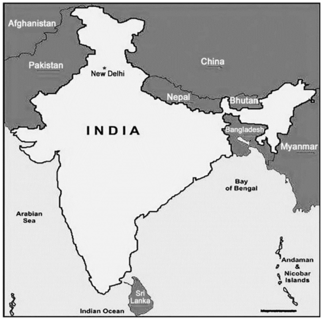
- CHALLENGES IN INDIA’S NEIGHBOURHOOD - India's neighbourhood is a complex one. Certain features of India’s neighbourhood are: - Baggage of colonialism: - Region has a shared past of colonial exploitation. - Large population: - South Asia is largest region in world by population. - Diversities: - South Asia is marked by large ethnic, religious and linguistic diversities. - Unsettled & Unscientific Boundaries of the region have not been formed in a very scientific way; this often creates tensions between countries. - Least economically and logistically integrated region: - South Asia is the least integrated regions with tremendous deficits in infrastructure, connectivity, and interdependence. - Dysfunctional Regional multilateralism: - Institutions like ASEAN and EU have failed to develop in South Asian context. SAARC remains a dysfunctional body. - Exposed to geopolitical competition: - South Asian is now being exposed to various geopolitical competition dynamics because of rise of China and increasing US influence in the region. - Low human development: - South Asia region is one of the poorer regions of the world, with low social development. - NEW DYNAMICS IN THE REGION - India has been accused of acting like ‘Big-Brother’ by its smaller neighbours in the region. India being the most powerful and resourceful country in the region likes to see the South Asian region as its backward and is the regional hegemon in the region. - An increasingly assertive China has been making strong outreach to countries in the region, China’s unsettled border issue India, long India-China standoff on India China border, increasing naval presence of China in Indian Ocean and the increasing power asymmetry between India and China in terms of economic and military has been creating security dilemma for India against China. - India and Pakistan have fought four wars since 1947. Both nations have nuclear weapons, Pakistan’s continued support for extremism and terrorism in Kashmir and claim over Kashmir has long created tensions between India and Pakistan. China-Pak axis has been concretising in the continental neighbourhood in terms of the CPEC corridor and the influence on Taliban in Afghanistan. - Taliban's takeover of Afghanistan and the US withdrawal poses threats to India's interest in the Central Asia besides posing the possibility of increase Pak-Taliban supported terrorism in Kashmir. - India has been aligning with the US in the form of Quad and Malabar naval exercise to counter the Chinese influence in the maritime arena. AUKUS security partnership is giving new direction to the security aspect of the Indo-Pacific concept. - India's structural dominance in the South Asia has been facing challenges because of rising Chinese influence. Neighbouring countries are using the China-Card in their negotiations with India. - EVENTS IN INDIA’S NEIGHBOURHOOD - Challenges to India to increasing influence of China: - Growing competition for influence in South Asia by carrying out various infrastructure projects and encircling India under the String of Pearls theory. Example - Sri Lanka, Myanmar etc. - China - Pakistan axis has considerable influence on the Taliban regime in Afghanistan. - Chinese aggression along the Line of Actual Control (LAC) poses the possibility of a Two Front War on India's norther borders. - China extended a $1.4-billion Line of Credit to Pakistan. A new defense pact has been signed between China and Pakistan. - All SAARC countries are part of Chinese BRI Project except India and Bhutan. - Most South Asian countries are under Chinese debt pressure. China has started to provide partial debt waivers to the Maldives and Sri Lanka. - Territorial claims of China in the region - Due to unsettled border between India & China, China claims parts of Ladakh and Arunachal as its territory. - Chin has laid claim to Bhutan’s Sakteng natural reserves. - China has annexed around 150 hectares of land along Nepal border. - India has witnessed border issues with Nepal along the Kalapani. Nepal has amended its constitution to include the disputed territory within its political map. - In Sri Lanka, domestic politics and Chinese influence is impacting its ties with India. - Regional SAARC has taken a backseat in India's regional pursuits - Format of SAARC is outdated and does not serve complex, fluid regional cooperation agenda any longer. India has refused to attend SAARC meeting in Pakistan over terrorism issue. - Pakistan is pursuing its regional connectivity goals exclusively with China (CPEC). While India does not align itself with Chinese BRI project. India started focussing on Indian Ocean region and towards eastern neighbours of India and BIMSTEC. This has led to a split of subcontinent between India and Pakistan which has effectively stagnated SAARC. - Recently a domestic political turmoil was witnessed in Pakistan (ouster and arrest of Imran Khan) which testifies the critical involvement of Army and the ISI (deep state of Pakistan) in not only domestic politics but also degerming the larger foreign policy objectives of Pakistan and ultimately its relationship with the neighbouring countries. - India has revived BIMSTEC and worked in BBIN (Bangladesh-Bhutan-India-Nepal) quadrilateral for a framework on motor vehicle & water governance. - However, India should understand that India's neighbouring countries other than Pakistan have shown interest in the working of the SAARC. - INDIA'S RESPONSE TO CHALLENGES IN NEIGHBOURHOOD - India has been pushing forward its Neighborhood first Policy and the SAGAR (Security and Growth for All in the Region) strategy to handle these recent challenges. - ‘Neighbourhood First’ policy - Under its 'Neighbourhood First' policy, Government is committed to developing friendly and mutually beneficial relations with all its neighbors. India is an active development partner and is involved in several projects in these countries. - India’s policy of ‘Neighbourhood First’ focuses on creating mutually beneficial, people-oriented, regional frameworks for stability and prosperity. - Our engagement with these countries is based on a consultative, non-reciprocal and outcome-oriented approach, which focuses on delivering benefits like greater connectivity, improved infrastructure, stronger development cooperation in various sectors area, security and broader people-to-people contacts. - With Pakistan, Government desires normal neighbourly relations and is committed to addressing all outstanding issues bilaterally and peacefully in accordance with the Shimla Agreement and the Lahore Declaration. However, any meaningful dialogue can only be held in an atmosphere free from terror, hostility and violence. The onus is on Pakistan to create such a conducive atmosphere. - Infrastructure - India has stepped up delivery of Infrastructure in the region. - Completion of railway lines to Bangladesh and Nepal, riverine projects, ferry service to the Maldives, identifying other services to Sri Lanka and IOR islands. - India has provided line of credit to the tune of $ 400 million to Maldives. - Welcoming entry of other powers to counter China - India has welcomed the U.S.’s new military dialogue with the Maldives. - America’s Millennium Challenge Corporation’s (MCC) projects in Afghanistan, Bhutan, Sri Lanka, Nepal and Bangladesh - The Millennium Challenge Corporation (MCC) is an innovative and independent U.S. foreign assistance agency that is helping lead the fight against global poverty. MCC forms partnerships with developing countries who are committed to good governance, economic freedom and investing in their citizens. - Diplomatic efforts - India has stepped up the collaboration in the Quadrilateral security Dialogue. - Malabar naval exercise has been expanded to include Australia. - WAY FORWARD - Analysis of India's foreign policy approach in neighbourhood - India was the first country to warn the global community about dangers of Belt and Road Initiativ (BRI). This framing of problems is widely accepted by most global powers. - India has also managed to shape the global discourse on the Indo-Pacific. - China's efforts of teaching lessons to India using force (Galwan valley) has failed. - India has been pursuing its strategic and economic strategies far more independently. It effectively resisted the Chinese aggression, developed infrastructure along the LAC, reduced trade dependence on China in strategic sectors and has galvanised global support in the Indo-Pacific in the form of QUAD. - Neighbourhood policy should not be viewed with a narrow lens of wins or losses. A region shaped by two major powers will never follow a linear trajectory. Also, the smaller countries in the region have become more assertive and have been pursuing their policies independently. - The traditional notion of India-Pak rivalry constraining India's foreign Policy options has given way to the increasing influence of China. - South Asia today is being viewed as pivotal to the concept of Indo-Pacific because of the India's efforts. It is because of this that the BIMSTEC has gained currency replacing the SAARC in the Indian foreign policy circles. - Focus of BIMSTEC also outlines India's focus on its eastern frontier aligning it with its Look East Policy. - India has been focusing on defence modernisation and cooperation which is visible in the recent signing of foundational defence agreements with US, S-400 missile deal and purchase of Rafael military aircrafts. - Future course of action - India's engagement with our neighbouring countries should not be episodic. It should not be event-oriented; it should be process-oriented. India needs to have a plan for continuous engagement at various levels. - India has realised that there is a need for greater connectivity and integration in the region, especially because of the increasing Chinese influence in its neighbourhood. - Further to check the growing Chinese influence in the neighbourhood, India should focus on creating interdependence in the region with the aim of extracting strategic leverage. - We know that India has taken over various connectivity initiatives, in terms of energy, interdependence, infrastructural connectivity, grants and loans. - However, it is being said that these connectivity initiatives will be meaningless if there is lack of economic integration and easy movement of people and capital. - India should not be averse to the idea of cooperation in the subcontinent by the way of SAARC. - Also, if India moves away from SAARC, it is quite possible that China can be invited to this forum. This will make things even more difficult for India. - 3. LOW EMPHASIS ON INTERNATIONAL LAW IN INDIA - India since its independence has played an active role in international affairs and maintained cordial relations with different countries. India has played decisive and important role at various international forum such as United Nations General Assembly, different multilateral forums (G-20, BRICS, QUAD, IBSA etc.). India has played an active role in shaping international law on terrorism by proposing a Comprehensive Convention on International Terrorism (CCIT) and initiated International Solar Alliance towards harnessing renewable energy. Despite many successes in the field of international relations, India has not utilized International Law effectively in its advantage. Thus, this article suggests that India’s ambition of punching above its weight in international affairs cannot be accomplished without its investing in International Law. - CONCERNS ON NOT UTILISING INTERNATIONAL LAW BY INDIA - Lack of use of vocabularies by India in International Law - For example, India has hesitated in calling out Chinese transgressions of India’s sovereignty. - On addressing international breach by Pakistan, India did not mention “international law” transgressions. - India has not used international courts to hold Pakistan accountable for its breach of international law. - India did not challenge Pakistan’s denial of Most Favoured Nation (MFN) status to India at the World Trade Organization. - Lack of use of International Law in conduct of diplomacy: - It has resulted in India’s failure to develop and contribute new international law doctrines, interpretations and principles that suit its national interests (except few initiatives such as the CCIT and ISA). - REASONS FOR NOT USING INTERNATIONAL LAW EFFECTIVELY - Generalist diplomats - India’s foreign service is heavily populated by generalist diplomats who are wedded to the theories of international relations. - Understaffed Legal & Treaties Division - L&T functions under Ministry of External Affairs and investigates the aspects of international law. However, the division is grossly understaffed and lawyers practising international law find it more attractive to join the government as a generalist diplomat rather than as a lawyer under the division. - Fragmentation of decision making - For example – on bilateral trade in crude oil and coal mining, Ministry of Trade & Commerce is involved along with Ministry of Petroleum, Ministry of Coal, Ministry of Environment along with Ministry of External Affairs. - Neglected Discipline - Academically, international law has largely remained a neglected discipline in the last 75 years. - Lack of Investment - Government has failed to fund research in international has further resulted in lack of investment by universities to develop International Law discipline. - MEA funds focus - The MEA funds research centres such as the Indian Council of World Affairs (ICWA). However, the ICWA focuses largely on the study of international relations, not international law. China on the other hand has poured in massive resources to build the capacity of its universities in international law, which has also benefited the Chinese government. - Weak Indian Journals - Indian Society of International Law (ISIL), established in 1959, was supposed to become a centre of excellence for law. However, ISIL has failed in producing worthwhile research in international law. Its flagship journal, the Indian Journal of International Law (IJIL), is nowhere close to the top international law journals in the world despite being over 60 years old. In contrast, the Chinese Journal of International Law launched just two decades back, is one of the top-ranked journals in the world. - Failure of academicians - International law academicians, on their part, have failed to popularise international law: This is in stark contrast to academicians in international relations and social sciences who write for the masses, not just for specialised audiences. - SUGGESTIONS - To overcome the fragmentation-related problems, a parliamentary committee report in 2016 recommended creation of a ‘Department of International Law’ under Ministry of Law & Justice. - Parliamentary committee in 2021 recommended that the MEA establish chairs for research in international law in universities. - India’s ambition of punching above its weight in international affairs cannot be accomplished without its investing in international law. - 4. POSITIONING INDIA IN CHAOTIC WORLD-INTERNATIONAL RELATIONS - There is increasing diffusion of power as a ‘rise of the rest’ leading towards an international system in which there will be no superpowers, several great powers and a lot of regional powers. A multicentre world has multiple layers of governance; regional powers and institutions enjoy a much greater significance than a bipolar or unipolar world. Hence a multipolar world defined by geopolitics provides India more choices to pursue its national interest and leadership ambitions by providing global interdependence. - TRANSFORMATION IN INDIA’S FOREIGN POLICY - India’s large and rapidly expanding economy coupled with huge population has changed the course of foreign policy in the wake of changing political and security dynamics in the post-Cold War era. - India took the path of economic liberalisation, shed its anti-West, Third-World outlook and repositioned itself in the world as an important global actor. - However, India’s position is still weak as there is absence of grand strategic thinking in India’s foreign policy in terms of long-term goals. - A test case is India’s relations with Iran which have been on backburner for some time, following a U.S. threat to impose sanctions on India if it continued to trade with Iran. Because of the freeze in relations with Iran has been high, including having to pay higher prices for crude and inability to utilise the Chabahar Connectivity Project as an alternate route to Afghanistan. - India’s status as a regional power is also contested. India is not considered as a natural leader nor a regional power of South Asia. For example, In our immediate neighbourhood, whether it be Sri Lanka or Afghanistan, India’s concerns are often not taken on the high table. - It can be concluded that ‘India is neither one of the Great Powers nor minor power; but it is one that cannot be ignored and thus, fits the most general definition of middle power which has been demonstrated by the recent steps taken by India in the recent times. - CHANGES IN INDIA’S FOREIGN POLICY - Economic Diplomacy: - Progressing with three major objectives: - Attracting foreign direct investment, Ensuring India’s participation in multilateral & regional forums and Engaging with Indian diaspora globally. - Managing Great Power Relations: - Establishing balance by signing the bilateral Logistics Exchange Memorandum Agreement (LEMOA) with the USA and simultaneously working on relations with Russia. Thus, India has continued to work on relations with both the great powers. - Countering Rise of China: - Chinese plans to capture territory in Ladakh, divert waters of Brahmaputra and CPEC has serious implications for India, with dramatic redrawing of demographic and geographical boundaries, threatening India’s territorial integrity. China had clearly emerged as a new long-term challenge. India is countering it by aligning with like-minded countries like under QUAD and undertaking projects like Project Mausam, neighbourhood first policy, Act East policy etc. - Reinvigorating Neighbourhood: - SAARC needs to be converted into an energetic regional organisation. In view of the negative role played by Pakistan within SAARC, India should encourage sub-regional cooperation. In the east, India can take steps to foster integration with Nepal, Bhutan and Bangladesh and has been doing same with BIMSTEC, BBIN, conclusion of bilateral disputes with Bangladesh etc. - Act East Policy: - India has cultivated deep ties with Japan. As Japan’s strategic goals can partly be realized by assisting in the rise of India, a benign power that would be a bulwark against unipolar Asia dominated by China, besides being a place to invest its surplus funds. - Engagement with ASEAN as a forum and bilaterally engaging with each member countries strategically. Example Changi naval base Singapore - Addressing Central Asian Republics: - Central Asia is a region critical for India’s energy, trade and security needs. There are unprecedented concerns in several Central Asian Republics about China’s increasingly dominant presence. Shanghai Cooperation Organisation (SCO) also provides India with opportunity to work with Central Asian Republics and Russia to further its own strategic interest in the region. India further wants to capture this region with initiatives like INSTC. - West Asia: - Engagement with UAE and Saudi Arabia aimed at boosting investment and credit, particularly on infrastructure and energy development. This balances, both, India’s closer relations with Israel and Pakistan’s close relation with Gulf countries. - India’s engagement with Iran is of vital significance in terms of energy, domestic and regional security imperatives. PM Modi visited Iran and signed an agreement to develop the US$500 million Chabahar port. - The Last Mile, Africa: - India has begun to look further beyond its traditional areas of concerns. There has been an active attempt to build long-term relationship with Africa, an emerging continent rich in national resources including oil and gas - WAY FORWARD - A Major overhaul is required in India’s worldview of how we interpret regional and international tensions that have increased. - The erstwhile policy of non-alignment had done little to enhance India’s image. India should move from non-alignment and to multi-alignment and all alignment. - While China today presents an acute ‘near-term problem’ for India, it is important that India does not fall into the trap that the current adversarial relationship with China is ‘carved in stone’ and can or never will be altered. - India and China are ‘civilizational’ states. The two countries may never have a very close relationship but given the history of nations there is enough scope for India to formulate a policy that would not completely close the doors on China for all time. - India’s strategic and foreign policy establishment cannot afford to overlook the nuclear aspect, given that the country is wedged between two active, and hostile, nuclear powers — China and Pakistan. India is the only state among the three, that does not see nuclear weapons as intended for use in the event of a war. Nevertheless, it is important for India’s strategic and foreign policy establishment to consider how best to prevent ‘debilitating strategic instability’ — about China in particular — given the pace at which China’s nuclear arsenal is growing. - 5. INDIA-CHINA - OVERVIEW OF INDIA - CHINA RELATIONS - In 1988, Rajiv Gandhi visited China, becoming first PM to visit after 34 years, following the vacuum caused by Sino-India war of 1962. China & India accepted that if peace and tranquility was maintained in border areas, relationship could be normalized in economic, trade, research and other areas. - All subsequent governments in India have followed same policy in dealing with China. This policy is also reflected in the India-China joint statement of 2015. - The understanding between two nations started to change with China's launch of Belt Road initiative (BRI) in 2013. It was part of China's geoeconomics and geopolitical strategy. In 2015, China launched CPEC passing through Pakistan Occupied Kashmir breaching India's sovereignty. - India highlighted that all connectivity projects must be based on internationally recognised norms and should respect territorial integrity and sovereignty. - China now opposed India's entry into Nuclear Supplier's Group, insisting that if India was admitted, Pakistan should also be treated in on similar basis. - China blocked designation Masood Azhar as terrorist under 1267 committee. - India worked closer with US and other European powers to put pressure on Pakistan via FATF grey listing. - Finally, Quad was revived in 2017 which is widely perceived as an anti-China alliance. This was followed by integration of Australia into the Malabar Naval exercise. - INDIA - CHINA BOUNDARY DISPUTE - India shares a 3488-km boundary with China along J&K, Uttarakhand, Himachal Pradesh, Sikkim & Arunachal Pradesh. - Border between India and China is not clearly demarcated throughout and there is no mutually agreed Line of Actual Control (LAC). - Entire border is divided into three sectors: - Western sector is disputed (Ladakh); Middle sector is largely settled and peaceful (Himachal Pradesh & Uttarakhand) and Eastern sector is unsettled and disputed (China claims entire Arunachal). - China claims that the border claimed by India as signed British India and Tibet was under colonial pressure and a weak China. China does not agree. - British India had failed to produce a single integrated and well-defined northern boundary separating the Indian subcontinent from Xinjiang and Tibet. -| Sector | Status | Details |
|---|---|---|
| Western (Ladakh) | Disputed | India accuses China of illegally occupying Aksai Chin, and some other parts of Ladakh region. China claims Aksai Chin as extension of Tibet plateau, India claims it as extension of Ladakh plateau. |
| Middle (Himachal Pradesh & Uttarakhand) | Largely settled and peaceful | Minimal disputes, relatively stable. |
| Eastern (Arunachal Pradesh) | Unsettled and disputed | China claims entire Arunachal Pradesh, especially Tawang, as part of Tibet. |
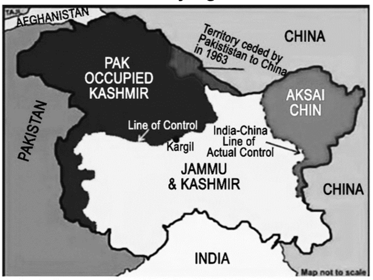
- The two sides differ over the boundary line that separates Jammu and Kashmir from Xinjiang province of China. - India accuses China of illegally occupying Aksai Chin, and some other parts of Ladakh region. - According to China, Aksai Chin is the extension of Tibet plateau whereas India claims it as an extension of Ladakh plateau. - The region is mostly uninhabited. - Aksai chin is important for China as it connects two backward provinces of China i.e., Tibet and Xinjiang. - British policy advocated farther northern Kashmiri border in the form of Johnson Line where Aksai Chin was part of Kashmir and another McDonald line under which Aksai Chin falls under Xinjiang Province of China. - As a result, the disagreement prevails with India claiming Johnson Line to be correct and China claiming McDonald Line to be correct. - In the official map of India in 1950 India marked east of Karakoram range as “Boundary Undefined”. - Currently though the LAC at present separates India and China in the absence of a mutually agreed boundary, there is a difference in perceptions about the alignment of the line. - EASTERN SECTOR- MCMAHON LINE -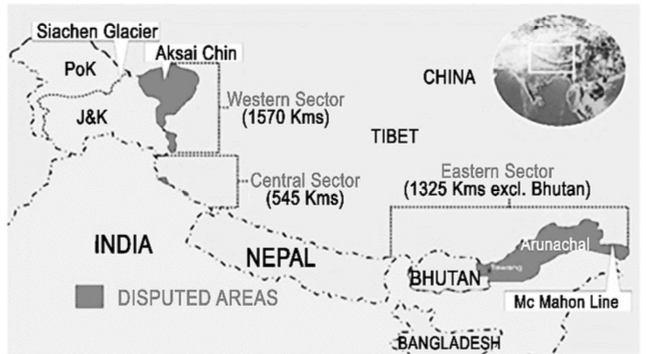
- Background - In eastern sector, boundary was delineated in 1914 Shimla conference of British India, China and Tibet. - Accordingly, British proposed formation of Outer-Tibet bordering India & Inner-Tiber bordering China. - A boundary demarcating Tibetan region of China and the North-east Frontier Areas of India (current Arunachal Pradesh) was agreed upon by British and Tibetan representatives which came to be called the McMahon Line. - This is another contentious issue because China does not recognize the McMahon line as it was signed between British and Tibet which was not a sovereign state at the time. - As a result, China claims Arunachal Pradesh especially Tawang as a part Tibet. - India on its part while recognizes Chinese suzerainty over Tibet and considers McMahon line to be official boundary. - INITIATIVES TO RESOLVE BORDER ISSUES - A solution to the Sino-India border dispute continues to elude the two countries after 45 rounds of talks since 1960. - Shimla agreement of 1914: - Through this agreement, McMahon Line was recognised as the legal boundary between India and China. - However, China rejects the Shimla agreement and the McMahon line, contending that Tibet was not a sovereign state and therefore did not have the power to conclude treaties. - China claims Tibet was always part of China (under Qing dynasty suzerainty), so Tibet couldn’t act as a fully independent state in 1914. China claims Arunachal because it argues Tibet historically administered it — and since Tibet is “part of China,” the area south of the McMahon Line should be too. But this claim is based on cultural links, not continuous political control, and there’s no historical Qing administration over Arunachal Pradesh. - Panchsheel Agreement of 1954: - The “Agreement on Trade and Intercourse between the Tibet region of China and India” was signed in 1954. It is remembered as the Panchsheel Agreement. - The doctrine indicated the willingness to ‘Respect each other’s sovereignty and territorial integrity.’ - Confidence Building Measures (CBMs) - The two countries are also engaged in Confidence Building Measures (CBMs) on the border with bilateral agreements signed in 1993, 1996, 2005, 2012 and 2013. - In 2003, the two sides agreed on the appointment of Special Representatives (SRs) for consultations aimed at arriving at a framework for a boundary settlement that would provide the basis for the delineation and demarcation of the border. - By the beginning of the 21st century, the two sides had agreed not to let the border dispute affect bilateral engagements. This was inked into the Agreement on Political Parameters and Guiding Principles for the Settlement of the India-China Boundary Question signed in 2005. - In 2012, India and China agreed on the establishment of a working mechanism for Consultation and Coordination on India China borders. - In November 2018, the Special Representatives of China and India held border talks at Chengdu in southwest China. The talks were aimed to achieve an early solution to the dispute and to maintain peace and tranquility at the borders - ESCALATION ALONG LAC - 20 India soldiers died in a clash with People’s liberation army of China in a clash at the Galwan valley in Ladakh region. - Strategic Importance -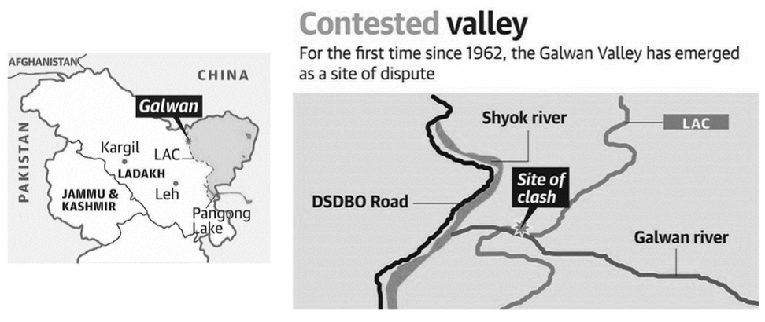
- It is strategically located between Ladakh in the west and Aksai Chin in the east, which is currently controlled by China as part of its Xinjiang Uyghur Autonomous Region. - At its western end are the Shyok river and the Darbuk Shyok Daulet Beg Oldie (DSDBO) road which provides India the access to Karakorum pass. - Its eastern mouth lies close to China’s vital Xinjiang Tibet road, now called G219 highway. - REASONS FOR ESCALATION ALONG LAC - China wanted to distract the world from COVID-19 crisis for which it is being held responsible. - It is a reaction to India's political rhetoric on the Aksai Chin after the Jammu & Kashmir reorganisation (Abrogation of Article 370) in August last year. - India is conducting infrastructural development along LAC. Ex. Construction Darbuk Shyok Daulet Beg Oldie (DSDBO) road. - China's geopolitical view of region as strategically important for its CPEC which passes through POK. India has said that CPEC Violates Indian Sovereignty. - Under Xi Jinping China has moved away from principle of peaceful rise (used for the economic rise of China in the past decades) towards asserting itself as the next superpower. - Chinese aspiration of asserting itself as a superpower is reflected in China engaging itself on multiple fronts like handling COVID crisis at home, crackdown in Hong Kong and Escalation on India-China border. - China’s limited scope military expeditions on the long-contested border is cost effective for the PLA given the ever-growing conventional military superiority that it enjoys with India. (Such skirmishes won't provoke nuclear warfare) - China thinks that India will overlook such small standoffs to avoid further escalation of the issue. - China wanted to distract the Chinese population from the local issues of China. - INDIA'S TILT TOWARDS AMERICA - In the present Geopolitical theatre of action, India is being seen as tilting towards USA. This tilt towards USA is perceived negatively by China. And this view has been echoed in past border discussions. - There has been Geopolitical convergence between India and US on the Indo-Pacific strategy which is mainly directed against China. - India is today a member of the Quad group (the U.S., Japan, Australia and India), which is seen as a regional counterweight to China. - America's plan of expanding G7 includes India, while excludes China from it. - Deteriorating Bilateral relations between India and China - India is the only main Asian country that stands against the Belt Road Initiative of China. - India has opposed the CPEC on the grounds of violation of Sovereignty. - Further India was the first one to put curbs on Chinese FDI with the objective of preventing “opportunistic takeovers” of firms hit by the lockdown induced by the COVID-19 outbreak. - There is rising anti-China propaganda within India. Ex – Calls for boycotting Chinese products. - CONVERGENCES BETWEEN THE TWO - Multilateral Forum: - Both India and China have shown their belief in upholding of the United Nations charter and its non-interference policy, Shanghai Cooperation Organization (SCO), World Trade Organization (WTO)- where both fight for G7 countries, East Asian Summit. - Climate Change: - Up to some extent both the nations have shown their seriousness on environment related issues. In the BASIC (Brazil, South Africa, India and China) minister’s meet, the ministers from these nations advocated for the different capabilities and differing responsibilities of individual countries in addressing climate change. - Economic: - On several platforms, both the nations have called for support to multilateralism, and appreciate the central role of the U.N. in international affairs. - DIVERGENCE - Both the nations accuse each other of interfering in internal matters. New Delhi reacted in the UN Human Rights Council (UNHRC) and argued that India has been keeping “a close watch on recent developments” in Hong Kong given the presence of a large Indian community there. - Under the influence of China, 15 RCEP countries have decided to pen down the agreement on 13 March 2020 without India. - China raises its concerns about India’s role (being a member of Quad) in the Indian Ocean region. - Both are competing to pursue the interests in Middle east, Africa and the Latin America. Middle is important to both for energy security. - Chinese economy is suffering due to the Covid pandemic and US-China trade war. India has also banned many of the Chinese app and there is an anti-Chinese sentiment in India. - China is worried about China Pakistan Economic Corridor (CPEC) due to rising insurgency in Baluchistan and Khyber-Pakhtunkhwa region where it considers that India has deeply rooted impact. - China has been actively engaging with Taliban, while India has been reluctant to do so. - 6. DISPUTE IN THE EASTERN SECTOR - Recently, a few hundred Chinese soldiers armed with batons, spikes, and other primitive weapons tried to dislodge an Indian Army outpost on a ridge on the disputed border between India’s easternmost state, Arunachal Pradesh and Tibet, which is governed by China. New Delhi blamed Beijing for trying to “unilaterally change the status quo” while Chinese People’s Liberation Army (PLA) said it was conducting a regular patrol when its troops were “blocked by Indian Army illegally crossing” border, known as Line of Actual Control (LAC). - TAWANG DISTRICT (YANGTSE PLATEAU) - Arunachal Pradesh has been the site of regular skirmishes in recent months, even as tensions remain high in Ladakh region on the western section of China-India border. Chinese provocations in the east reflect a breakdown of Indian deterrence. - Yangtse plateau lies in India’s Tawang district (Arunachal Pradesh), which is claimed by China. - The sixth Dalai Lama was born in Tawang in the 17th century, and the district is home to the second-largest Tibetan Buddhist monastery in the world. - Chinese side calls it an inalienable part of Chinese Tibet. - Tactical importance of Yangtse Plateau: - Offers an unrestricted view of entire Tawang Valley and Bum La pass, providing a tactical advantage. - PLA has been making inroads in the region with construction infrastructure. - India first occupied the area in 1986, during the seven-year SUMDORUNG CHU CRISIS with China—a major standoff over Yangtse plateau. - 7. CHINESE DAMS ON BRAHMAPUTRA - China intends to triple its hydropower capacity and therefore is increasingly damming trans-boundary Rivers to achieve its hydropower targets. - China also intends to undertake gigantic water diversion projects which include building a dam on the Great Bend of Yarlung, where the river curves into the Assamese plains of India. -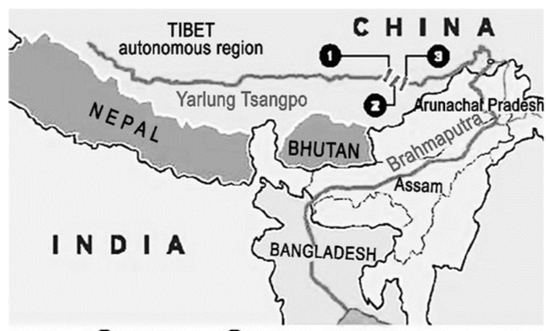
- RIPARIAN COTENSTATIONS - China is the only country in the region which is completely upper riparian which lends it an unparalleled advantage and power to influence the flow of water to nations downstream. India functions as a middle riparian state. It is a lower riparian state in relation to China, but an upper riparian state vis-a-vis Pakistan and Bangladesh. - Upper & lower riparian states often make incompatible claim about their rights over river water. - Upper riparian nations base their claim on principle of ‘absolute territorial sovereignty,’ i.e., right to use river water unilaterally regardless of lower riparian claims. - Lower riparian states base their claims on ‘absolute territorial integrity’ i.e., that upper riparian actions should not affect the water flowing downstream. -| Riparian Position | Principle | Description |
|---|---|---|
| Upper Riparian (China) | Absolute territorial sovereignty | Right to use river water unilaterally regardless of lower riparian claims. |
| Lower Riparian (India, Bangladesh) | Absolute territorial integrity | Upper riparian actions should not affect the water flowing downstream. |
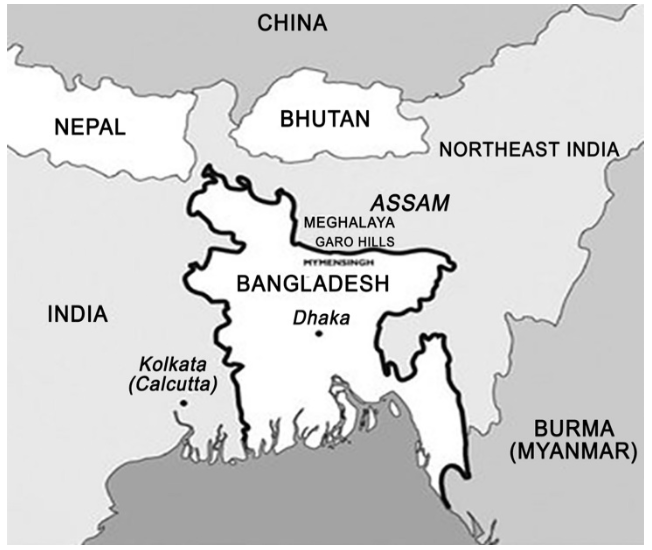
- Prime Minister Sheikh Hasina of Bangladesh Visited India to celebrate 50 years of freedom of Bangladesh. India played a key role in the freedom of Bangladesh and has strong relations with the country. In recent years, Bangladesh has emerged as an economic growth story especially in the readymade garment exports segments. During the visit to India and Bangladesh signed a slew of agreements, including the first water sharing agreement since the landmark Ganga Waters Treaty, 1996. A MoU was signed on sharing of the waters of the Kushiyara river, a distributary of the Barak River which flows through Assam, and then on to Bangladesh. The agreement comes in a year when both lower Assam in India and Sylhet in Bangladesh have witnessed deadly floods highlighting the requirement for greater cooperation on flood control and irrigation-related issues between the two countries. - ABOUT KUSHIYARA AGREEMENT - Over the last century, the flow of Barak River has changed in such a way that the bulk of the river’s water flows into Kushiyara River while the rest goes into Surma. - Bangladesh has been complaining that Boro rice cultivation in the region had been suffering as India did not allow it to withdraw the required water from the Kushiyara. - Water of Kushiyara River will be channeled through Rahimpur Canal project in Sylhet. Waters of Kushiyara has been used for centuries in Sylhet’s subdivisions. But Bangladesh has witnessed that the flow and volume of water in the canal has reduced during the lean season. - The utility of the river and canal during the lean/winter season had gone down, affecting cultivation of rice as well as a wide variety of vegetables for which Sylhet is famous. - The additional water of Kushiyara through the Rahimpur Canal therefore is the only way to ensure steady supply of water for irrigation of agriculture fields and orchards of the subdivisions of Sylhet. - The agreement is aimed at addressing the problem that the changing nature of the river has posed before Bangladesh as it unleashes floods during the monsoon and goes dry during the winter when demand of water goes up because of a crop cycle in Sylhet. - Approximately 10,000 hectares of land and millions of people will benefit from the water that will flow through a network of canals in Sylhet benefiting the farmers involved in Boro rice, which is basically the rice cultivated during dry season of December to February and harvested in early summer. - The agreement addresses Bangladesh’s concern over water supply along the river, during the winter months but flood control in the basin of Kushiyara is expected to - Bangladesh had carried out Upper Surma Kushiyara Project which included clearing and dredging of the canal and other connected channels of water. - However, the channels could not be of much use to Bangladesh because India objected to the move and claimed that the dyke and other infrastructure interfered in border security as Kushiyara itself forms part of the border between the two sides. - However, the agreement indicates that the economic benefits outweigh the security concerns. - INDIA’S OBJECTION TO THE RAHIMPUR CANAL - India objected to the move and claimed that the dyke and other infrastructure interfered in border security as Kushiyara itself forms part of the border between the two sides. - INDIA-BANGLADESH PARTNERSHIP - India was the first country to recognize Bangladesh as a separate and independent state and established diplomatic relations with the country immediately after its independence in December 1971. - The relationship between India and Bangladesh is anchored in history, culture, language and shared values of secularism, democracy, and countless other commonalities between the two countries. - It is based on sovereignty, equality, trust, understanding and win-win partnership that goes far beyond a strategic partnership. - SECURITY & BORDER MANAGEMENT - India and Bangladesh share 4096.7 km. of border, which is the longest land boundary that India shares with any of its neighbors. - India-Bangladesh Land Boundary Agreement (LBA) came into force in 2015 under which enclaves of India and Bangladesh in each other’s countries were exchanged and strip maps were signed. - Maritime dispute was resolved by United Nations (UN) tribunal award. -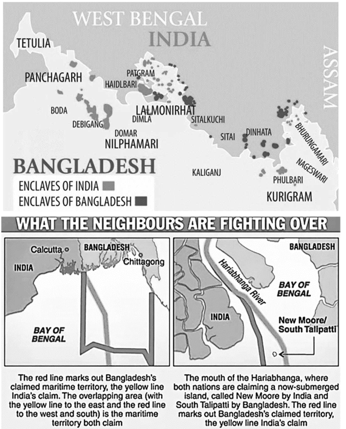
- A number of agreements related to security cooperation have been signed between both the countries. - Coordinated Border Management Plan (CBMP) signed in 2011 aims to synergize efforts of both Border Guarding Forces for checking cross border illegal activities and crimes as well as for maintenance of peace and tranquility along India-Bangladesh border. - Bangladesh side reiterated request for 1.3 km Innocent Passage through river route along River Padma near Rajshahi District. - Both sides are working to expeditiously conclude the MoU in disaster management cooperation. - Both the sides recognize that terrorism remains a threat to global peace and security and have reiterated their strong commitment to eliminating terrorism in all its forms and manifestations. - Security in Northeast States - Bangladesh cooperated with India in sorting out security issues in the Northeast. Bangladesh handed over leaders and shut down their training camps. -| Leader | Organization | Action |
|---|---|---|
| Ranjan Daimary | National Democratic Front of Bodoland (NDFB) | Handed over by Bangladesh |
| Anup Chetia | United Liberation Front of Assam (ULFA) | Handed over by Bangladesh |
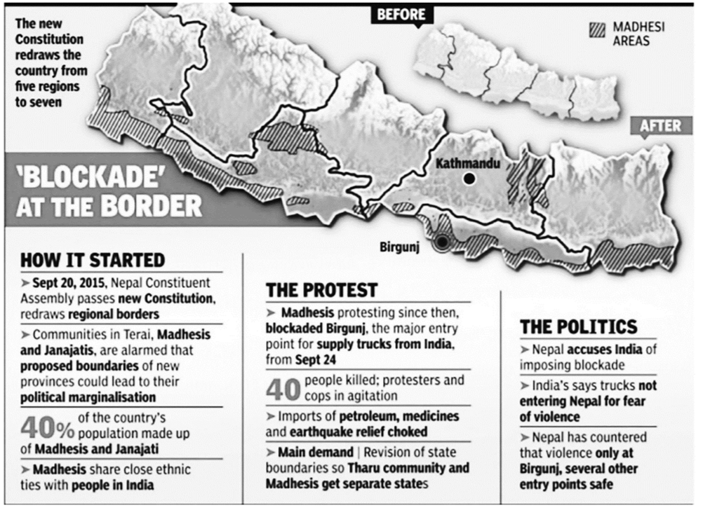
- 2015 Nepal adopted a new constitution declaring it to be a Federal democratic republic. - Seven provinces were carved out creating only one in Madhesi region in Terai foothills along Indian border. - Madhesi community has been targeted by the hill people of Nepal for having close relationship with India. Their marriage rights were curbed by denying the citizenship rights to the foreigners marrying Nepalese. - Madhesi's have had age custom of marrying across the border and this restriction is targeted at the age-old Roi - Beti ties. - Madhesi's were disaffected and there was great deal of unrest and andolan. - This led to disruption of supply chain of goods, petroleum along the border region from India. The hill Nepalese blamed India for orchestrating this blockade. - This event has led to a strongly negative feeling in the Nepalese minds against India, which they accuse of being responsible for the blockade. - BORDER ISSUE - India and Nepal share open, porous and non-standardized borders. There is no requirement for a visa or passport to move into each other's territory. There is no upper time limit mentioned for staying in India or Nepal. - India and Nepal are facing a range of border issues: - Problem of trafficking: - drugs, arms and ammunition, women and children. - Operation of transnational terrorist groups and transnational crime syndicates. - Issue of fake currency & support to fundamentalist forces. - Intelligence reports suggest that Pakistan has been taking advantage of open border to infiltrate into India and that it uses Nepal border route to pump fake currency into India to destabilise Indian economy. - Criminals of both nations use each other’s territory for refuge making it tough for law enforcement agencies to track and catch criminals. - India Nepal terai region border Is almost 400 km and it holds 2 integrated check posts, five check posts with immigration and customs facilities and almost 12 to 13th soft check posts. Seeing the long border this number seems to be less. - There is consistent encroachment of India towards Nepali territory, specifically in forest-covered areas. - Kalapani Dispute: - Nepal amended its Constitution and laid claim on the Kalapani river areas which currently forms part of Indian provinces of Uttarakhand. This has increased tensions between both countries. - Susta Dispute: - Susta is territory which is part of West Champaran district of Bihar. It is claimed by Nepal as part of Susta rural municipality as part of its Lumbini Province. The dispute is due changing course of river Gandak. - SUGGESTIONS FOR RESOLVING BORDER ISSUES - Opening of more transit routes and integrated check posts. - Fencing the border completely and allowing transit through fixed identified time. - A Cross Border Crime Control Action Plan can be prepared and jointly enforced. Shashastra Seema Bal (SSB) can be empowered with modern technology and empowered under the Passport Act to arrest criminals. - In certain areas, there is an issue of clear-cut border demarcation, specifically in Susta and Kalapani (problem is because of changing course of rivers). - Border patrolling and surveillance through non-physical barriers (drones and e-surveillance). - Specialised forces for border security like Sashastra Seema Bal and an increased role of police. - Creation of wider No man’s land. - Creation of public transportation system owned by respective governments across the border. - Restriction over private vehicles crossing the border to regulate trafficking. -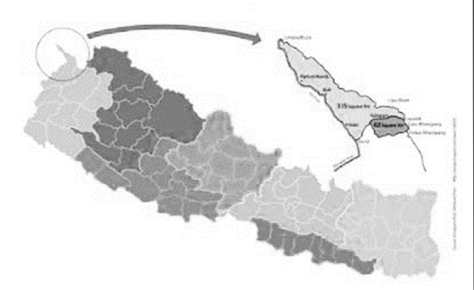
- CHINA FACTOR IN INDO-NEPAL RELATIONSHIP - China-centric Nepal policy of India: - Since Nehru, India's Nepal policy has been China-centric. Nehru had no hesitation in suggesting India’s security will have priority over Nepal's independence. Nehru made it clear that India cannot have an as intimate relationship with any country as it has with Nepal. - China card of Nepal: - Nepali elites played with India's insecurity and kept on using China's card against India. India could not stop increasing influence of China in its backyard. - INCREASING CHINESE INFLUENCE IN NEPAL - Nepal has procured arms from China in violation of the 1950 Treaty. - Chinese investment in Nepal is around US$8 billion. Nepal’s GDP is $21 billion. - Nepal has expressed interest to join BRI, linking to Lhasa in Tibet through Kathmandu through rail links. Nepal has invited Chinese investment and is taking steps to develop overland trade connectivity by constructing dry ports. PM Oli has stated that he will follow a policy of equidistance from both neighbours. - In the last decade, Chinese engagement with Nepal has got strengthened at a soft policy level. China has made inroads into Nepal in, education and health sectors. During last five-year interactions between Chinese and Nepali governments have increased. Students from Nepal are moving to China in large numbers. - Trade and number of projects with China have increased which could be used only with engagement of India. - Nepal is developing a new framework to deal with India and negotiate with India using China factor. Step for hard negotiation used by Nepal for renewal of India Nepal Treaty of friendship and withdrawal from BIMSTEC military drill in India. - Nepal wants to break free from the hold of India and wants to India and China both to contribute to greater prosperity for Nepal. Nepal is using geopolitics policy rather than pro-Chinese; China geographically cannot play a role in Nepal both economically and geopolitically. - Nepal has asserted that its relationship with China is purely economic and will not be hurting Indian strategic interests in any way. - CHINA’S INTEREST IN NEPAL - China want’s Nepal’s territory to not be used by Tibetans for breeding discontent against China. - Increasing power of Communist Parties in Nepal facilitated greater political influence for China’s influence in Nepal. - Gives China greater say in its frontier areas and gateway into the politics of South Asia, which India has traditionally considered as its region of hegemonic dominance. - The rising Nepal and China cooperation also signals that the Himalayas are not a barrier anymore and for India, a strategy to check the Chinese engagements is required rather than reactions. - This provides an opportunity for India, China and Nepal to work together to develop this entire Himalayan belt into a transit region i.e., a convergence of economic interests of India, China, and Nepal. - CONCERNS OF INDIA - Chinese inroads into Nepal are aimed at counterbalancing Indian influence in Nepal. - Maoism in Nepal has been encouraged by China and they have potential links with the Indian Naxalite movement, though this is not an officially accepted view by the Indian government. - India needs to engage Nepal in multiple dimensions and increased dependency which will automatically distance it from China. - CONCLUSION - There is no need for being overly concerned or become too complacent. Nepal cannot overlook India even when they produce electricity with China, they will have to sell it to India. Besides geography, people-to-people contacts, and cross-cultural links are great cementing factors. - India wants Kathmandu from falling into trap of China's charm offensive, but at the same time, India needs to work out its strength. India should improve its track record in the implementation of projects. In the age of growing interdependence, every country will go for multiple alignments. - GLOBALISATION - Post 1990 Nepalese diaspora has moved out globally. A quarter of Nepalese population is living overseas. Due this the young leaders of Nepal are not schooled in India. - This was particularly important because Nepalese leadership which studied in India provided constant communication and better understanding and empathy between the two neighbours. - POLITICS DURING LOCKDOWN - Victory of Nepalese Communist Party in 2017 was based on the anti-India rhetoric after Blockade of 2015. - The two left parties Unified Marxist Leninist and the communist party of Nepal - Maoist Centre (CPN-MC) merged. However, issues started after such a merger about Power sharing and this opportunity was grabbed by China to meddle into the internal affairs of Nepal. - However, such interference by China did not last long and the NCP unity did not last long and led to dissolution of Nepal's Parliament and the softening stance of the leadership towards India. Visits of RAW chief, Indian Army Chief and Foreign secretary followed this. - Finally, PM KP Oli was removed with President inviting the Sher Bahadur Deuba, leader of Nepali Congress as the PM. The new PM is being seen as closer to India. India has been accused of meddling in the internal politics of Nepal. - WAY FORWARD FOR INDIA’S POLICY TOWARDS NEPAL - Report of the Eminent Persons' Group should be accepted as roadmap for India-Nepal relations going forward. - Treaty of Peace and Friendship, 1950 should be replaced with a more balanced and democratic treaty. - National Treatment: - National treatment should be in proportion of the size and population of the country. - Border Management: - A regulatory regime needs to be introduced by making people produce identity cards while crossing over to either side. - Jointly tackling common challenges in areas of combating terrorism, extremism and all kinds of trafficking. - India should remain fully engaged with Nepal at all levels and across the political spectrum. - A hands-off policy will only create space for other external influences, some of which, like China, may be hostile. - However, such engagement should not be seen as intervention in the internal affairs of Nepal. - India’s engagement with Nepal, the Terai belt and its large Madhesi population plays a critical and indispensable role. - Our engagement with Nepal must find a prominent place for Nepali citizens who are our immediate neighbors. - The engagement should not just be limited to the political elites. - India needs to appreciate that the people-to-people links between our two countries have an unmatched density and no other country, including China, enjoys this asset. - To counter the Chinese influence, India needs to speed up unfinished projects that India has committed and create conditions of mutual trust which makes it difficult for China to leverage any dispute that arises in future. - India cannot be complacent about its historical geographical and cultural ties with Nepal. - India needs to understand that the Nascent Nepalese democracy will assert independence in its Foreign Policy. But it important for India to create conditions which makes it a go to country for Nepal in times of need. - India also needs to work on its perception in the hill population of Nepal. - 12. AFGHAN ISSUE - PAKISTAN AND THE TALIBAN - Pakistan gave birth to Taliban movement along with helping it in its first takeover of Afghanistan in 1996. - It sheltered the fighters and Taliban leaders in the aftermath of post 9/11 US invasion. Although publicly it claimed to be helping the US in its “war on terror.” - To pull the strings on Taliban Pakistan kept Mullah Baradar the prominent leader of the Taliban in its prison. The political leadership of the Taliban camped in the Baluchistan capital of Quetta. (Quetta shura). - The Federally Administered Tribal Areas in general, and South and North Waziristan became the revolving door for fighters of Afghan Taliban, and its associated group the Haqqani Network, along with al-Qaeda who crossed in and out of Afghanistan at will under the benevolent gaze of the Pakistan Army. - The Indian security establishment has held that fighters of the Lashkar-e-Taiba, a pet jihadist group of the Pakistan military, fought alongside the Taliban against US and NATO soldiers from at least 2017 onwards. - REASONS FOR PAKISTAN’S SUPPORT FOR TALIBAN - Pakistan did this to have a free pass over the Afghanistan and use it as - what the Pakistani establishment thinks to be a “Strategic depth” against its enmity with India. - It also wanted such an advantage to counter the leverage that India had with the Ghani government because of the developmental activities and to counter the connectivity projects of India like the Zaranj – Delaram highway via the Chabahar port, which Pakistan thought were aimed at surrounding Pakistan. - Further Pakistan wanted to counter the Pashtun Tahafuz movement which is a Pushtun identity movement in the northwest parts of Pakistan and was supported by the Afghan government. - Taliban which itself is composed of the Pashtuns claims to be the only representative of the community. - PAKISTAN’S CONCERNS WITH TALIBAN’S TAKEOVER - Though Pakistan has supported Taliban it views itself as a modern Islamic State and not a conservative Islamic emirate. Many in Pakistan share the concern of shielding itself from this radical wave. - Influx of refugees and the ensuing strain on already limited economic resources of Pakistan. - Afghan territory can act as a breeding ground for terrorist organization. Organisations like Tehreek e Taliban which are anti – Pakistan might get emboldened by the Taliban’s rise. - Extremist elements in Taliban might not toe the line of Pak army generals. - Also, Taliban if it acts as a US ploy against China then it can destabilize the CPEC projects which will further worsen the already bleeding Pakistani economy. - Pakistan is concerned with the label that it supports international terrorism. It is in danger of being put in the blacklist of FATF harming its economy. - LARGER GEO-POLITICAL FALLOUT - The sudden US withdrawal has created a geopolitical vacuum in the Eurasian heartland which is being filled by regional players like China, Russia, Pakistan, and Iran which are actively engaging with the Taliban. - Most of these regional players harbor an anti-American feeling which will further shrink strategic influence of USA. This geopolitical churning brings new equations to the fore. - The quick withdrawal of USA and other NATO forces has given Taliban a large bounty in terms of fighter aircrafts and weapon systems. This has made Taliban forces even stronger. - CHINA AND TALIBAN - The situation in Afghanistan is primarily advantageous to China as it provides it an opportunity to bring all the regional countries except India in the fold of the Belt & Road Initiative altering the geopolitical and the geoeconomics of the region. - With the US withdrawal and the opportunity to increase its influence, China is further likely to side-line India. - Afghanistan is rich in mineral resources especially in items like gold and rare earth materials. - Taliban would need economic and financial support to run its government. China can fulfil this requirement and get a leverage over Taliban government. - China’s close relations with Pakistan also gives it a strategic hold over Taliban. - China has received assurances from the Taliban that Afghan territory will not be used to support extremist movements that could affect China’s Xinjiang province. However, the Taliban’s actual stance on terrorism remains to be seen. - TERRORISM - A bigger challenge for India is increase in terrorism and extremism in the region. - US presence in Afghanistan and FATF controls on Pakistan had a moderating effect on the terror organizations. But with Taliban’s comeback the regional terror groups might get emboldened. - There is lack of any regional approach to counter terror, mainly because the regional countries are taking private assurances from Taliban for not hosting terror groups in Afghanistan. - UNSC’s de facto recognition to Taliban is likely to increase its power in a bargain on terror question. - Taliban can still use its position to export terror clandestinely for tactical purposes. - INDIA’S INTEREST IN AFGHANISTAN - India’s ambitious connectivity projects for connecting Central Asia and Afghanistan via Chabahar port have come to a standstill. - Further India’s civilian investments in the Afghanistan are all at the mercy of Taliban now. - In this regard if China-Pakistan-Taliban axis comes together they can further hurt India’s geopolitical interest in the region. - Also, the regional players like Russia, China, Pakistan, and Iran all are merging as an anti-America axis, however, India is getting closer to the US, which will also have repercussions for India’s geostrategy. - 13. INDIA – AFGHANISTAN - Taliban has established itself as legitimate ruler in the past year after the withdrawal of USA in 2022. Though initially the focus of Taliban was to gain legitimacy at the global level and present itself as reformist and modern Taliban2.0 the focus now has shifted again to orthodox and conservatist nation as it was under Taliban 1.0. - This fall back to the original position is a cause of concern for India as the Indian relationship with previous Taliban regime was tumultuous. - TRACING INDIA’S SECURITY CONCERNS IN AFGHANISTAN - 1. Taliban’s forced ousting of the democratically elected Ashraf Ghani government was a major setback to India’s security. India’s perception of Taliban has been innately shaped by the events surrounding the hijacking of IC814 in December 1999. - 2. In 2001, when the Taliban was overthrown after the U.S.-led invasion of Afghanistan, India’s security concerns were partially mitigated. India actively engaged with the new dispensation in Kabul, reflected in how, over the past 20 years, India invested over USD $3 billion in Afghanistan. - 3. With Taliban back in power in Kabul, India believes these developmental efforts may have come to naught, aggravating its security concerns. Indian security establishment believes that a hard line Islamic Sharia-based government may spread its radical ideological influence across the subcontinent, boosting the morale of the Islamist terror groups operating in India and generating stronger recruitment and violence. - 4. New Delhi perceived that the United States relied overly on Pakistan to facilitate its quick exit from the country. Even now, Washington appears to be leaning on Islamabad to fix Afghanistan imbroglio. India is not comfortable with this arrangement as it increases Pakistan’s control and influence in Afghanistan. - TALIBAN TAKEOVER'S IMPACT ON INDIA’S INTERESTS -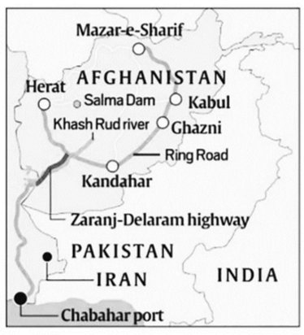
- Connectivity - Adverse impact of connectivity projects between Central Asia & Afghanistan via Chabahar port. - Strategic Depth - Strategic depth to Pakistan as Taliban government has close ties with Pakistan Army. - Investments - India’s civilian investments are not safe in Afghanistan under Taliban. - Geopolitical - China-Pakistan-Taliban axis will hurt India’s geo-political interests. - Drug Trade - Drug Trade (Opium) would Increase impacting India’s security. - Regional Dynamics - Russia, China, Pakistan, and Iran merging as an anti-America axis, which will impact India’s relations with Russia and Iran. Although India has forged its relations with Russia and Iran after the West led sanctions on Russia post its attack on Ukraine. - US Relations - India is getting closer to US might impact its geostrategy in a region which is wary of America’s approach. - Security in Kashmir - Use of Afghan soil by terror groups pose a threat to security in Kashmir. - HUMANITARIAN ASSISTANCE TO AFGHANISTAN - About 20,000 MT of wheat so far out of a commitment of 50,000 MT, is being taken by trucks, with permission of Pakistan government and handed over to World Food Program. - Thirteen tons of medicines and 500,000 doses of Covid-19 vaccines to Indira Gandhi Children’s Hospital, and another million doses of COVAX in for Afghan refugees in Iran. Another 60 million doses of polio vaccine have been handed over to UNICEF. - Winter clothing and other essentials were handed over to other UN agencies. - SIGNIFICANCE OF REOPENING OF EMBASSY - Indian embassy will become the 15th mission to be open in Kabul with staff deployed there under Taliban regime, along with Russia, China, Pakistan, Iran, Turkey, Qatar, Saudi Arabia, Indonesia, European Union and four Central Asian states. - Enable India to closely monitor and coordinate efforts for effective humanitarian assistance and in continuation of our engagement with the Afghan people. - Opening of the embassy is a step towards working more closely with the Taliban regime. - Also seen as a step towards giving Taliban legitimacy of ruling Afghanistan. - No country, apart from Pakistan, has recognised Taliban government in Afghanistan, which took power by force in Kabul. - INDIA HAS TRIED TO SECURE ITS POSITION IN THE REGION POST - TALIBAN TAKEOVER - Outreach to Central Asia: - India Central Asia Summit to focus upon engagement with Afghanistan, particularly given the triple threats of terrorism, drugs, and refugees emanating from there. - Abdullah Abdullah CEO of Afghanistan in 2014 who negotiated the transfer of power between the Ashraf Ghani government and the Taliban visited India recently. - US Special Envoy to Afghanistan visited India. - India's NSA highlighted the duty of regional countries to enhance capability of Afghanistan to counter terrorism and terrorist groups which pose a threat to regional peace and security. - Participation in SCO which has membership of Central Asia countries and Russia which are crucial for India’s interest on the region. - ISSUES WITH LATEST MOVE OF INDIA - Shift from earlier policy as it legitimises Taliban’s government and shows an inconsistency in policy. - Despite engagements attacks on Sikh Minorities have continued - Islamic State-Khorasan (IS-K) attack on a gurdwara in Kabul. - Groups like the LeT and JeM which only target India, continue to work out of Nangarhar province. - Concern about infiltration of terrorists from Pakistan and Afghanistan. - WHY AFGHANISTAN IS IMPORTANT TO INDIA? - Regional Balance of Power: - Afghanistan is tied to India’s vision of being a regional leader and a great power, coupled with its competition with China over resources and its need to counter Pakistani influence. - India’s ability to mentor a nascent democracy will go a long way to demonstrate to the world that India is indeed a major power, especially a responsible one. - India’s interest in Afghanistan relates to its need to reduce Pakistani influence in the region. - Energy Security: - The pipeline project TAPI (Turkmenistan-Afghanistan-Pakistan-India), which seeks to connect an energy-rich Central to South Asia, will only see the light of the day if stability is established in Afghanistan. -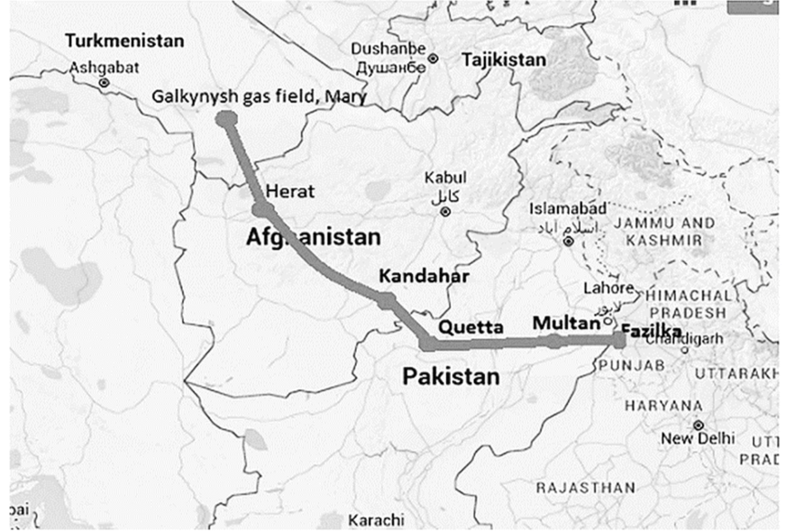
- Strategic Location: - For access to the landlocked Central Asian countries that border Afghanistan. - Natural Resources: - Afghanistan is rich in natural resources with large resources of copper, iron and other unexplored minerals. Ex. Hajigek mines for Iron ore. - Regional Security: - A stable Afghanistan is important for regional security in South Asia. - 14. INDIA-PAKISTAN RELATIONS - Pakistan Foreign Minister Bilawal Bhutto Zardari’s visit to India is bound to generate much media interest but will make little dent in the indifferent relations between the two countries. - Any meaningful change in bilateral relations must necessarily wait until Pakistan has a domestic consensus on foreign policy. The vocal opposition in Islamabad to Bilawal’s visit the first by its foreign minister to India in more than a decade underlines Pakistan’s sharp internal divisions about its external relations at a critical juncture in world politics. - DOMESTIC POLITICS AND PAKISTAN’S FOREIGN POLICY - The lack of agreement on India is only one part of Pakistan’s foreign policy problem. The bigger tussle has been on finding a sustainable approach to Pakistan’s engagement with the major powers that are at odds with each other—US, China, and Russia. - Pakistan is also facing new challenges in Afghanistan and is struggling to cope with the shifting geopolitical dynamic in the Middle East. - Further there has been latest attacks on the former chief, General Qamar Jawed Bajwa (Army- the second state). Media has accused Bajwa of making major “compromises” with India on Kashmir; they also alleged that he was claiming that the Pakistan army is in “no position to fight” India. - Army in the past has made endless meddling in domestic politics. Army helped install Imran Khan as the PM in 2018 and chose to pull him down in 2022. It also unseated Nawaz Sharif on flimsy grounds in 2017 and allowed the Sharif family to come back into the mainstream in 2022. - Though the impact of Army on domestic politics needs continuous evaluation, it did during the last regime tried to reorient Pakistan’s foreign policy and made a major effort to improve ties with India. The testimony of this approach was announcement of a ceasefire agreement in February 2021 which came after heightened tensions following the Pulwama terror attack and Balakot bombing by India’s Air Force and the Pakistani riposte in February 2019. - It has been highlighted that the ceasefire agreement was a product of back-channel talks between the Indian national security adviser Ajit Doval and Bajwa. The ceasefire was to be followed by several confidence-building measures to relax tensions between the two countries. - Army moves (under Bajwa) to reduce tensions with India were part of a broader effort to rejig Pakistan’s foreign policy. It was a recognition that current policies are accelerating Pakistan’s relative decline in the region. - Army’s call to discard Pakistan’s obsession with geopolitics and focus on national development, geoeconomics, and good neighbourly relations underlined the case for Pakistan’s urgent strategic course correction. - At the same time Government (the first state) had an anti-American posturing saw the deterioration of ties with Washington. The government enthusiasm to be seen in Moscow on the day Russian President Vladimir Putin ordered the invasion of Ukraine outraged Europe and the US. Imran also sought to align with Turkey as it sought to wrest the leadership of the Islamic world from Saudi Arabia and picked quarrels with the United Arab Emirates. This in turn undermined the traditional goodwill for Pakistan in the Arab Gulf. - CONCLUSION - Pakistan will need a lot of time and space to get its domestic act together and rebuild a foreign policy consensus. The priority for India must be to sustain the valuable backchannel to the army leadership in Rawalpindi. Weakened though it is, the Pakistan Army remains the only credible interlocutor for India in the near term. - KASHMIR ISSUE - India has maintained that Kashmir is an integral part of India and it is a settled issue which needs dialogue and discussion. However, for Pakistan Kashmir is an unfinished task of partition since it is a Muslim dominated territory. - Pakistan has sought to internationalise the issue and has demanded Plebiscite in accordance with the UN resolution. India views it as a bilateral issue. - Shimla Agreement 1972 - For India this framework should guide the issues between the two neighbours including the Kashmir dispute. It states that both the countries are ' resolved to settle their differences by peaceful means through bilateral negotiations or by any other means mutually agreed upon between them. However Pakistani Army thinks that it was an agreement that was imposed on it after the loss in the 1971 war. - Pakistan deep state has resorted to asymmetrical warfare in the form of terrorism. It portrays India as an existential threat to Pakistan. - On the other hand, India's policy has been that of "Sporadic engagement". All the prime ministers of India have pursued this policy. - But since 2015 India has made dialogue contingent on Pakistan, ending all support for terrorism in Kashmir and giving up the option of using force to gain the control of Kashmir. - The relations have worsened after the 2016 Pathankot attacks followed by the Uri terror attack. One of the deadliest terrors attacks was that in the Pulwama against the India security forces orchestrated by Pakistan based Jaish-e-Mohammad. India in response struck terror camps in Balakot in Khyber Pakhtunkhwa inside Pakistan. - On August 5, 2019, India amended the constitution to remove the Articles 370 and 35 A. And changed the status of the erstwhile state of Jammu & Kashmir into three Union territories namely - Jammu, Kashmir and Ladakh. - On this issue Pakistan does not have much support internationally. Western nations like US and others want India to restore normalcy and a s such long term curbs on civil tits could hurt India's Global standing. - WAY FORWARD - Despite efforts by the civilian governments on both the sides to restore ties the military intelligence complex of Pakistan has vetoed such efforts. - From Indian perspective a democratic and civilian led Pakistan will have benefits for the relationship. Because of international pressure led by US, India's engagement would boost the civilian government's image and at the same time put pressure on the Military intelligence complex. - Pakistan has become an election issue even at the state level in India, creating difficulties for the government to take any extra ordinary step to proceed. - India and Pak inaugurated Kartarpur corridor for Sikh pilgrimage across the border. India has said it is an issue specific concession. It does not reflect any change in Indian Policy on substantive matters. - In Feb 2021 ceasefire was announced by both the countries. However, this happened more because of domestic factors for Pakistan which is under pressure on multiple fora. Pakistan is under immense economic stress and is under pressure from FATF for its terror funding. - India on the other hand wants to ease some pressure which is already facing clashes along the LAC with China and wants to avoid a Two Front war situation. - At international level India has been able to obtain support from US, Europe and UNSC on calling Pakistan out on the terror issue. - To go forward Pakistan will have to move beyond the 'Kashmir first Policy'. The Pakistani military - intelligence establishment needs to stop viewing India as an existential threat and curb the use of Jihad as a lever of foreign policy. - India on the other hand will have to convince other nations specially US that instead of mediating in Indo-Pak issues, their role should be to check Pakistan's implacable hostility and disregard for international norms. - BACKCHANNEL DIPLOMACY - India and Pakistan have engaged with each other via backchannel from December 2020 till April 2021. However, these talks are at a standstill because of the lack of willingness shown by the two countries to change their stands on the various existing issues. - While Pakistan has welcomed the reports of third-party mediation, India has maintained silence as it goes against its traditional position on diplomacy with Pakistan. India maintains officially that issues with Pakistan are of a bilateral nature that has no space for third party mediation or intervention. So let us understand the various aspects of this issue in detail. - RECENT ISSUES IN INDIA – PAK TIES - Ties between India and Pakistan have been frozen since 2016, and the Pulwama terror attack in February 2019 worsened the situation. This was followed by the Balakot airstrikes, retaliatory strikes by Pakistan and the capture of an Indian pilot who was later released. - In August 2019, after India revoked the special status of J&K under Article 370, and bifurcated the state into two Union Territories, Pakistan downgraded diplomatic ties, forcing India to do the same. This also led to snapping of trade ties. - Kartarpur corridor is a positive development in minimizing the trust deficit that exists between the two countries and could further contribute to other confidence building measures such as enhancing cooperation in trade. - In February, militaries of India & Pakistan announced adherence to ceasefire agreements along the Line of Control — a sign of thaw amid the chill in ties. - This, according to sources, was possible since India and Pakistan have been holding back-channel talks for the few months, with NSA Ajit Doval leading the Indian initiative with Pakistan’s civilian-military leadership. - The two Prime Ministers exchanged messages after Prime Minister of India sent greetings on Pakistan’s National Day on March 23. - WHAT IS BACK-CHANNEL DIPLOMACY? - Back-channel talks are used to talk to each other through non-official channels to discuss and resolve the problems facing the countries. - It is conducted through foreign diplomats or neutral Governments trusted by both sides desirous of change in status quo. - It is also a means of restoring the status quo ante in case of difficulties. - It is also conducted by respected figures in public lives who are known for integrity, accuracy, who are capable of clarity, caution and patience and deep knowledge of the issue. - WHAT ARE THE BENEFITS OF SUCH A DIPLOMACY? - It enables would-be dealmakers to test the waters—to determine whether the other party is capable of negotiating in good faith—before exploring real commitments. - They can be particularly appealing to high-level leaders who are fearful of a public failure if their efforts to reach a deal collapse. - BACKCHANNEL DIPLOMACY IN THE PAST - Such talks had been initiated by General Zia-ul-Haq and Prime Minister Rajiv Gandhi through Jordanian Crown Prince Hassan. - During the Kargil War, Prime Minister Atal Bihari Vajpayee chose an unorthodox back-channel interlocutor, R.K. Mishra. - In 2016, six former Pakistani High Commissioners also travelled to Delhi for a Track-II consultation with nine former Indian High Commissioners, where they met NSA Doval and senior MEA officials. - WHY BACKCHANNEL NOW? - Front door diplomacy is not possible because of a complex past. - Pakistan’s dire economic condition and the mounting pressure from the Financial Action Task Force to shut down all terrorist safe havens or face severe sanctions is clearly one imperative for Islamabad’s willingness to engage via the backchannel even after India’s decision on J&K. - To avoid the possible two Front war. UAE’s geostrategic role as a peace broker: In recent years, the UAE has shifted its attention away from military projection to diplomacy, investment and other forms of soft power. - Abu Dhabi was prime mover in last year’s Abraham Accords between Israel and several Arab states. - UAE played a key role alongside their Saudi counterparts in mediating the 2018 peace deal between Ethiopia & Eritrea. - The UAE has reduced its footprint in Yemen and drawn down its forces in the Horn of Africa. It is looking to scale back in Libya, where it provided both air cover and material support for the rebel forces of Khalifa Haftar; the Emiratis are now backing a political solution to the civil war. - UAE has also sought to reduce tensions with Iran and is leading Arab efforts to reengage with the regime of Bashar al-Assad in Syria, having concluded that the war there has effectively ended and that the only way to advance Emirati interests is through political, diplomatic and commercial means. - UAE’s strong trade & commercial ties to India and Pakistan, and as it is home to millions of Indian and Pakistani DISCUSSION workers makes it uniquely qualified to mediate between the two countries. - UAE is hoping restoration of trade links between two countries. - More ambitious still, it is aiming to secure a viable understanding on Kashmir, which has been flashpoint for several wars since their 1947 partition upon independence from British rule. - South Asian initiative also plays into the UAE’s pursuit of other important foreign-policy objectives. It helps to deepen the partnership with USA by paralleling American efforts to resolve the conflict in neighbouring Afghanistan, where India and Pakistan have competing economic and security interests. - WHAT ARE THE RISKS WITH SUCH AN APPROACH? - Back-channel negotiating may foster costly delays and perpetuate impasse they are designed to overcome. - They provide only temporary protection from deal spoilers and public scrutiny. - Such secret negotiations can facilitate early breakthrough agreements but yield diminishing returns when relied on too frequently. - 15. INDUS WATER TREATY -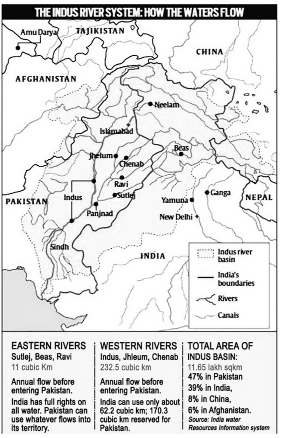
- Meeting of 18th permanent commission of Indus water Treaty was completed. This is the only mechanism between the two countries which has functioned properly despite differences. - ABOUT INDUS WATER TREATY - Indus Waters Treaty was signed in 1960 between India and Pakistan with the help of World Bank, which is also a signatory. - IWT allocates Western Rivers (Indus, Jhelum, Chenab) to Pakistan and Eastern Rivers (Ravi, Beas, Sutlej) to India. - At the same time, the Treaty allows each country certain uses on the rivers allocated to the other. - All the waters of the Eastern Rivers shall be available for the unrestricted use of India, except as otherwise expressly provided. - India is allowed to make some use of the waters of the Western rivers which includes: - Domestic Use like drinking, washing, bathing, recreation, sanitation. - Non-Consumptive Use means any control or use of water for navigation, floating of timber or other property, flood protection or flood control, fishing or fish culture, wildlife etc. - Agricultural Use - Use of water for irrigation, except for irrigation of household gardens and public recreational gardens. - Generation of hydro-electric power: - However, the treaty does not allow creation of large river water storage projects but only run-of-the-river hydropower projects. - HOW THE TREATY WORKS? - Permanent Indus Commission: - A mechanism for cooperation and information exchange between the two countries regarding their use of the rivers. It has commissioners from both India and Pakistan. - Dispute resolution under the Treaty: - “Questions” are handled by the Commission. - “Differences” are to be resolved by a Neutral Expert. - “Disputes” are to be referred to a seven-member arbitral tribunal called the “Court of Arbitration.” - Role of World Bank: - Its role is limited and procedural. Its role in relation to “differences” and “disputes” is limited to the designation of individuals to fulfil certain roles in the context of Neutral Expert or Court of Arbitration proceedings when requested by either or both Parties. - Examples of differences and disputes under the treaty: - Run of the river hydro-power project on Kishanganga (330 megawatts) - tributary of Jhelum. - Ratle (850 megawatts) hydroelectric power plant located on the tributary of Chenab. - On the above issue: - Pakistan demanded matter be referred to court of Arbitration. India wanted the issue to be Referred to Neutral expert. - Pakistan have raised disputes on Pakal Dul and Lower Kalnai hydropower plants located on Marusudar river, a tributary of the Chenab, J&K. - India has raised concerns on issues such as Pakistan’s blockade of Fazilka drain, which resulted in water contamination in the border areas. - ISSUES OF DISSATISFACTION RAISED BY BOTH COUNTRIES - Prevents storage projects by India: - IWT prevents India from building any storage systems on western rivers. Even though the treaty allows that under certain exceptional circumstances storage systems can be built, India contents that Pakistan deliberately stops any effort due to its political rivalry with India. - The two countries have been embroiled in conflicts over several projects including Salal hydroelectric project on Chenab, Tulbul project, Kishenganga and Ratle hydroelectric plants. - Varying interpretations: - The treaty is highly technical, leading to divergences between the two countries in terms of interpretations. - Political Mistrust: - India tries to make maximum use of breathing space provided by the treaty to build projects on western rivers. Pakistan due to its suspicions towards India keeps an extra keen eye on every technical aspect of the project and tries its absolute best to get it suspended. - ISSUES RAISED BY PARLIAMENTARY COMMITTEE - Raised concern that despite increasing demand of water, India has underutilised waters of Western rivers for irrigation purposes. - Government should examine the feasibility of making maximum use of provisions in Indus Water Treaty, in terms of full utilization of all accessible water of the eastern rivers and maximum utilization of irrigation and hydropower potential of western rivers including permissible water storage as per provisions of the treaty. - Although Indus Water Treaty has stood the test of time, IWT was framed based on knowledge and technology existing at the time of its agreement in 1960s. Perspective of both the nations at that time was confined to river management and usage of water through construction of dams, barrages, canals, and hydro-power generation. - Present day pressing issues such as climate change, global warming, and environmental impact assessment etc. were not considered by the Treaty. - In view of this, there is a need to re-negotiate the Treaty to establish institutional structure or legislative framework to address the impact of climate change on water availability in the Indus basin and other challenges which are not covered under the Treaty. - WAY FORWARD - 1. Internationalizing India’s position: - India has only utilized 93% of the storage capacity under the treaty and 25% of water generation capacity which highlights India’s credential as generous upper riparian state. - 2. Renegotiation of Treaty: - To accommodate for climate challenges and other emerging issues. - 3. Seeking Cooperation: - The provisions of the treaty provides scope for joint studies and joint research and this can be utilized to ensure cooperation between countries. - 4. Relationality over rationality: - The focus should be on relationality i.e. benefit sharing rather than just restricting the goals to water sharing as it will give due importance to minor issues like soil erosion, water quality etc. - 5. Changing approach: - There is a need to change approach from and focus on sub-basin level, which will not only make use of existing hydrology mechanism but also the socio-economic impact of the same. - 6. Contemporary laws: - Both India and Pakistan can make active use of contemporary laws like “Helsinki Rule”, which provides for the International guideline asserting rights for all bordering nations to have equitable share in water resource. - 7. Reconciling this divergent approach: - Which can be sought with the help of two cardinal principles of international water courses law accompanying binding obligations, i.e., equitable and reasonable utilisation (ERU) and the principle not to cause significant harm or no harm rule (NHR). In order to ensure rapid development, the state’s (India and Pakistan) needs prioritise the ERU over the NHR. - 16. INDIA – SRI LANKA - During the recent visit of S. Jaishankar, India had conveyed to the International Monetary Fund (IMF) that India strongly supports Sri Lanka’s debt restructuring plan. New Delhi is the first bilateral creditor to do so. - CHINESE SHIP IN SRILANKA - Recently, the Sri Lankan government gave approval for the arrival of the Chinese tracking vessel (YUAN WANG 5) at its Chinese funded Hambantota port. The approval was given despite India's concern over the visit of the same. Sri Lanka was thus put under a delicate diplomatic and geopolitical spot. - WHY SRILANKAN GOVERNMENT GAVE APPROVAL - Sri Lanka bowed down to the financial and strategic muscle of China as the Hambantota port has been leased to China for a period of 99 years, as Srilanka failed to generate revenue and repay loan from this impractical project. - The worst Srilankan economic crisis and Chinese willingness to restructure infra-loan which are necessary for sri lanka to reach out a bailout package with IMF which will need the china to be onboard. - Srilankan decision makers remain in chinese grip and crisis hit economy will require support from Bejings free-flowing loans and investment projects to boost employment and drouse the domestic anarchy. - INDIA’S CONCERN - Indian suspicion arises from the dual-use spy ship, as the yuan wang family navy vessels are primarily used for the Chinese missile force and space program. - It is for the first time that a Chinese vessel with such strategic capability has sailed close to Indian waters. The ship has a significant aerial reach (750Km) which puts several ports of Kerala/Tamil Nadu/ Andhra Pradesh under Chinese radar. - China has also proposed a SEZ around Colombo Port city, which handles 60% of India's transhipment cargo thus can jeopardize India's economic interest. - India is also suspicious regarding replication at Colombo port of earlier trends which have manifested in Srilanka, in 2014 when the Srilankan government allowed chinese nuclear submarine and warship to dock at Hambantota. - Though India has gained significant public-goodwill during the recent economic crisis of Srilanka, still Srilankan decision makers remain in Chinese grip which will ease in implementation and formalization of Chinese string of pearls disguised under it Belt and Road initiative. - WAY FORWARD FOR INDIA - India has been the top lender during the crisis year but still cannot match Chinese economic clout thus India has to partner with like-minded countries who are also major creditors of Srilanka ex. Japan to counter Chinese financial power. - India can engage and partner with QUAD nations to ensure that the rules based order is maintained in the Indian ocean region. - India need to focus on its neighbourhood first approach and use multilateral platforms like BIMSTEC- SAARC- SAGAR etc to foray its interest. - India should take advantage of dislodgement of pro-chinese Rajpaksa government and focus on its own infrastructural projects (Kankesanthurai port -Trincomalee infra project ) for timely delivery on its commitment. - India should continue to counter Chinese String of Pearls policy with its own necklaces of diamond by aligning with like minded countries as already done by partnering with French logistics bases at Reunion and Djibouti along with indigenous initiatives like Changi naval base in Singapore and Duqm port in Oman. - BACKGROUND - Though Sri Lanka qualified for an IMF Extended Fund Facility of $ 2.9 billion to tide over its economic crisis, but as a precondition, Colombo’s bilateral creditors must provide financing assurances on debt sustainability. China, Japan, and India are Sri Lanka’s main bilateral creditors. - India provided assistance as acting on its Neighbourhood First principle. - SIGNIFICANCE OF SRI LANKA TO INDIA - Trade and Investment - Sri Lanka is one of India’s largest trading partners in South Asia. India in turn is Sri Lanka’s largest trade partner globally. Exports from India to Sri Lanka in 2016 were US$ 3.83 billion. - Sri Lanka also provides investment opportunities for Indian Infrastructure companies. E.g., Colombo port west terminal project. - India and Sri Lanka have entered into a Free trade agreement in 2000. The two countries are negotiating Economic and Technology Co-operation Agreement (ETCA). - Connectivity - Transshipment ports of Sri Lankan like Colombo and Hambantota handle huge cargo that comes to India, since India did not fully develop a transshipment port in the southern Coast. - Tourism - Huge scope for religious tourism (Buddhist tourism) and medical tourism (Sri Lankan patients frequently visit Chennai for medical treatment). - Strategic - India and Sri Lanka share membership in SAARC, BIMSTEC and IORA. - Sri Lanka is also important for India in its ambitions to become Net security provider in Indian ocean. - Pursuing Strong ties with Sri Lanka is an integral part of India’s Neighbourhood first policy. - CHALLENGING ISSUES IN THE RELATIONSHIP - Ethnic issues: - The long drawn ethnic conflicts and human rights violation of Tamils, lack of proper rehabilitation and insufficient devolution of powers (Under 13th Amendment act) to the northern Tamil provinces strained the relation between the two countries. - UNHRC resolution: - India voted against Sri Lanka in UNHRC resolutions in the past (2012 & 2013). - Fishermen issues: - Sri Lankan fishermen object to Indians using bottom trawlers and fishing illegally along their coast, which often leads to arrests of the Indians. The dispute status of Katchatheevu islands is still not resolved. - Growing trust deficit: - Scrapping of Indian infrastructure projects like Colombo east container terminal project at a time when China is increasing its investments in the same Colombo port city. - India’s passive response to Sri Lanka’s request for debt repayment waiver for 3 years and a separate currency swap for $1 billion to help with economic crisis. - China factor: - Recently, Sri Lanka gave approval to Chinese funded ‘Colombo port city’ with some autonomy. - Already, China developed the Hambantota port which was later leased to it for a period of 99 years. - Sri Lanka endorsed Belt & Road Initiative of China. - INCREASED CHINESE PRESENCE IN SRI LANKA - Sri Lanka - Pakistan – China: - Convergence of interests between Sri Lanka, China and Pakistan in the Indian Ocean region in defence co-operation. Pakistani PM visited Sri Lanka recently. Both nations have had good defence ties. - In 2016, India put pressure on Sri Lanka to drop a plan to buy Chinese JF-17 Thunder aircraft made in Pakistan’s and co-produced by Chinese Chengdu Aircraft Corporation. - INDIA’S VOTE ON SRI LANKA ISSUE AT UNHRC| Year | Resolution | India's Vote |
|---|---|---|
| 2009 | Resolution S 11/1 | Yes |
| 2012 | Resolution 19/2 | Yes |
| 2013 | Resolution 22/1 | Yes |
| 2014 | Resolution 25/1 | Abstain |
| 2015 | Resolution 30/1 | Adopted without a vote |
| 2017 | Resolution 34/1 | Adopted without a vote |
| 2019 | Resolution 40/1 | Adopted without a vote |
| 2021 | Resolution 40/L1 | Abstain |
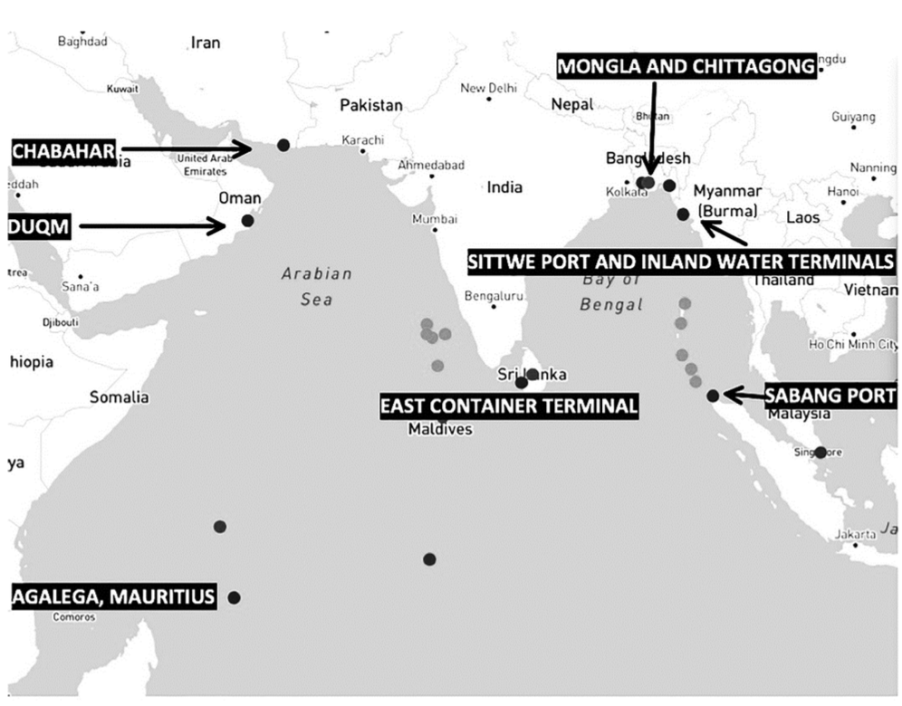
- Based on theory of string pearls in Indian Ocean, China is investing in strategically important foreign commercial ports. - Some of these ports include Chittagong in Bangladesh, Gwadar in Pakistan, Hambantota in Sri Lanka, Kyaupkyu in Myanmar, Malacca in Malaysia, Mombasa in Kenya. - Chinese scholars recognize far-reaching strategic significance of these projects for success of maritime Silk Road. - India has also begun to invest heavily in expanding its naval and air power across the Indian Ocean. - The effort is driven by two factors- a desire to improve maritime domain awareness and maritime security throughout the vast region, and New Delhi’s growing anxieties about Chinese inroads in its strategic backyard. - Piracy, illegal fishing, and other maritime crimes remain serious concerns and potential sources of instability around the entire Indian Ocean rim. - As a response, India has presence in the ports shown in the picture above. - 17. SRI LANKAN CRISIS - Sri Lanka is facing protests and political turmoil because of unprecedented economic crisis, a result of domestic as well as external factors. One of the factors for this economic crisis has been the Chinese debt obligation on Sri Lanka. With China reluctant to help Sri Lanka during this crisis, there is an opportunity for India to increase its humanitarian aid and leverage the trade and investment potential overall. In this context, let us understand the reasons for economic crisis in Sri Lanka, role of China and opportunity for India. - DEEPENING CRISIS - Sri Lankan economy is experiencing stagflation. Inflation has spiraled to over 50%, translating into higher food and fuel prices. - The economy could contract by at least 6% in 2022. Some three-quarter of a million people are becoming the ‘new poor.’ - Reasons for such severe economic crisis is slow recovery from COVID-19 pandemic, Russia-Ukraine conflict shock and economic mismanagement under administration of the Rajapaksa’s. - Reduction of tax by Gotabaya Administration. - Abrupt transition to Organic farming by Gotabaya Administration due to which crop production declined significantly. This made Sri Lanka dependent on importing rice and reduced output of tea which was its main export items. - Russia-Ukraine crisis led to sharp increase in prices of energy and other imports of Sri Lanka. - COVID-19 crisis and Russia-Ukraine was adversely impacted tourist inflow in Sri Lanka. - CHALLENGES IN GETTING FOREIGN AID - 60% of world’s poorest countries are experiencing debt distress which would get preference under international relief efforts. - Prospect of a second global recession in three years could dampen enthusiasm to support Sri Lanka. - There is perception in that crisis in Sri Lanka is because of political mismanagement. Thus, there is reluctance amongst countries to provide support. - CHINESE AID AND CHALLENGES - In recent years, China has invested in infrastructure projects in Sri Lanka under BRI initiative. Ex. Hambantota & East container terminal at Colombo. - Commercial loans for Belt and Road Initiative (BRI) projects in Sri Lanka have led to a ‘debt trap’ crisis. - China is facing dilemma in bailing out Sri Lanka. As, unilaterally restructuring Sri Lanka’s debt would set a new precedent in its lending practices, leading to a queue of similarly distressed countries seeking debt relief from China. - China, which is a leading economy, wanting to challenge USA, does not want its reputation to be tarnished by bailing out a floundering economy. - OPPORTUNITY FOR INDIA - India was the first responder to Sri Lanka’s desperate calls for foreign aid to help tackle its crippling debt and economic crisis. - In the first six months of 2022, Indian aid worth $3.8 billion has flowed to Sri Lanka through loans, swaps and grants. This is India’s largest bilateral aid program in recent times. - Stabilizing Sri Lanka’s economy can be a major boost to India’s neighborhood policy. - Boost India’s image as an important responder to any crisis in South Asia. - Humanitarian and bilateral aid would help India counter its Big Brother image by not interfering politically in Sri Lankan crisis and creating a positive image in minds of Sri Lankan people. - Once Sri Lankan economy stabilizes, India can deepen its trade and investment linkages and could spur regional integration and prosperity. - With Chinese projects under scrutiny in Sri Lanka, there is an opportunity for India to upscale its aid and cement its first mover advantage over China by leading an aid consortium for Sri Lanka, working closely with other friendly countries such as the United States, Japan and EU as well as International Monetary Fund (IMF). - 18. INDIA - MYANMAR - Myanmar junta, notorious for its attacks on civilians, carried out air strikes on an opposition gathering in the rebel-held Sagaing region, killing over 100, including women and children. The National Unity Government (NUG), the parallel administration formed by opposition groups, as well as witnesses, said a fighter jet and a combat helicopter bombed the gathering, which was celebrating the opening of an administrative office of the NUG; the regime, led by Gen. Min Aung Hlaing, calls it a “terrorist entity”. - Further the tacit support of Russia and China and silence from India, Gen. Min Aung Hlaing does not face any regional pressure either. The Association of Southeast Asian Nations (ASEAN) had earlier proposed a five-point peace plan, urging an end to hostilities and starting inclusive dialogue. But the generals have refused to talk to the opposition and are not ready to share power. - India has confronted Myanmar in recent months with intelligence showing that China is providing assistance in building a surveillance post on a remote island in the Bay of Bengal Chinese workers helping to construct what appears to be a listening post on the Coco Islands in the Indian Ocean. - HIGHLIGHTS OF THE VISIT - Foreign Secretary reaffirmed India’s strong and consistent support to the ASEAN initiative and expressed hope that progress would be made in a pragmatic and constructive manner, based on the five-point consensus. - Handed over one million doses of "Made in India” vaccines to the Myanmar Red Cross Society. - ASEAN – FIVE POINT CONSENSUS FORMULA - 1. Immediate Cessation of Violence: - Immediate cessation of violence in Myanmar and all parties shall exercise utmost restraint. - 2. Constructive Dialogue: - Constructive dialogue among all parties concerned shall commence to seek a peaceful solution in the interests of the people. - 3. Special Envoy Facilitation: - A special envoy of the ASEAN Chair shall facilitate mediation of the dialogue process, with assistance of the Secretary General of ASEAN. - 4. Humanitarian Assistance: - ASEAN shall provide humanitarian assistance through the AHA Centre. - 5. Delegation Visit: - Special Envoy and delegation shall visit Myanmar to meet with all parties concerned. - 6. Junta Non-Cooperation: - Junta has refused to cooperate with this formula. - MILITARY COUP IN MYANMAR - Military coup in Myanmar had set off civil unrest and protests. India had criticised the violence, while following a policy of non-interference on the matter of the coup keeping in mind the strategic importance of Myanmar to India, which is - a bridge to Southeast Asia and ASEAN; important for security in Northeast; crucial for Neighbourhood first and the Act East Policy. - INDIA’S APPROACH TOWARDS MILITARY COUP - Calibrated approach of India: - India has followed a calibrated approach since the military coup. Initially it followed a wait and watch approach, only now has called for a return to democracy. It is reflective of the regional realities. It is different from the West’s approach of condemnation, threats and sanctions. - China had close relations with Su Kyi government has tried to expand its cooperation with Junta. - Myanmar has refused to cooperate with the ASEAN five-point formula. - India has assisted Myanmar through capacity-building programs for strengthening the transition to democracy. However, it is not an offer of mediation by India in the military-NLD conflict. - Myanmar has renewed the previous pledge that its nation’s territory would not be allowed to be used for any activities inimical to India. - Foreign secretary was received by General Min Aung Hlaing (who is Chairman of SAC and Prime Minister) which is departure from the past visits of foreign secretaries from India. Such special gesture clearly shows that China is not the only Friend of Myanmar. - IMPLICATIONS OF MYANMAR’S MILITARY COUP - Border security - Refugees fleeing military crackdown are entering Mizoram. This has led to disagreement between centre & Mizoram which supports refugees. Centre’s instruction of sealing border with Myanmar has irked ethnically and culturally connected communities on both sides. Ex – Chin community. - Strategic concern - India cannot upset the Myanmar junta by providing refuge to the officials fleeing military crackdown. - Containing China - Myanmar being crucial in containing China, India will have to take a calculated steps to not push Myanmar closer to China. - Insurgency - Several ethnic armed organisations are active within Myanmar. Being opposed to Junta, EAOs can lead to escalation in violence across the border. - Indian Investments - Instability would threaten India’s investments in Myanmar. Ex. Kaladan Project, Sittwe port, IMT trilateral Highway, Special economic zone in Rakhine. - Opportunity to reduce influence of China - Myanmar army has enjoyed a relatively strong relationship with India. It played a key role in handling the insurgency and Hot Pursuits of India. Su Kyi led democratic government was closer to China. China supported it on Rohingya crisis. - Drug trafficking - Drug production has shot up exponentially in Shan Province of Myanmar. The region was earlier large producers of heroine. However, currently it is world’s largest producer & exporter of meth (more potent & profitable). Most key individuals controlling the drug trade are pro-junta businessman as well as ethnic militia. - INDIA'S MYANMAR POLICY - 1. Non-interference in internal politics: - Since 1990s, India has supported democratization of Myanmar, driven from within the country. - 2. Engagement rather than criticising: - India is cognizant of geopolitical dimension of Myanmar’s democratization. For Delhi, engaging rather than criticizing is most practical approach. - 3. Balancing influence of China: - There was inauguration of liaison office of Embassy of India in Naypyidaw recently. This is significant as only a few countries have set up such office in Myanmar. Interestingly, China was first country to establish a liaison office in 2017. - Myanmar's growing closeness with China and China Myanmar Economic Corridor is a cause of concern for India amidst growing India-China tension. - India also has taken significant step towards establishing its embassy in Nay Pyi Taw. India has its embassy in Yangon, the former capital. - 4. Strategic Infrastructure development: - India has also proposed to build a petroleum refinery in Myanmar that would involve an investment of $6 billion. It shows India’s competitive dynamic with China. - Commitment has been made to operationalise of the crucial Sittwe port in Myanmar’s Rakhine state by March 2021. - The two sides are collaborating on ongoing Indian-assisted infrastructure projects such as the India-Myanmar-Thailand trilateral highway and the Kaladan Multi-Modal Transit Transport Project. The project will link Kolkata to Sittwe in Myanmar and then from Myanmar’s Kaladan river to India’s north-east. -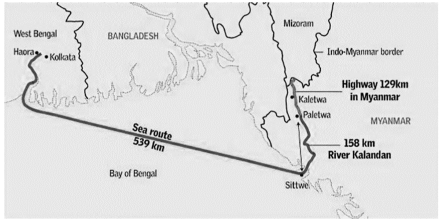
- Border security and development: - Both countries believe in mutual commitment not to allow respective territories to be used for activities inimical to each other. Both have been collaborating in the development of border areas with the understanding that it is the best guarantee to secure their borders. - IMPORTANCE OF MYANMAR FOR INDIA - India shares a long and porous border with Myanmar. - Myanmar is key link between South Asia to Southeast Asia. It is a member of both ASEAN as well as BIMSTEC which bridges South and South-East Asia. - Myanmar stands at confluence of India’s Neighbourhood First and Act East Policy. India-Myanmar partnership is at heart of India’s vision to create a connected and cooperative neighbourhood. - Connectivity projects through Myanmar help India overcome its Chicken-neck dilemma (Siliguri Corridor). Myanmar is necessary for development of North-Eastern India. - Good relations with Myanmar are central to keep North-eastern states peaceful. Often insurgent groups and rebels seek refuge in Myanmar territory. - Land border with Myanmar is crucial for narco-terrorism (Golden Triangle- border areas of Laos, Thailand & Myanmar) and illegal weapons. Shan State of Myanmar is the largest producer of illegal drugs within the Golden Triangle. Illegal production and trafficking of drugs poses multi-faceted problems of law & order, social problems of increased addiction and transnational crimes with illicit money fueling insurgent activities. - 19. INDIA AND BHUTAN - During the recent visit by Bhutan’s King Jigme Khesar Namgyel Wangchuck to Delhi. Prime Minister Narendra Modi and Bhutanese King discussed the latest situation along the India-Bhutan border as well as the progress in boundary talks between China and Bhutan, particularly above the Doklam trijunction point. Following things were discussed upon during the recent visit: -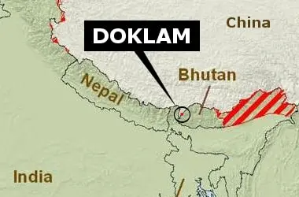
- Security: - The two countries remain in close touch and close coordination relating to our shared national interests including security interests. Further New Delhi has reiterated its position that any questions over the trijunction between India, China and Bhutan would be resolved “trilaterally”. - Transformative Roadmap: - Apart from the boundary talks the two leaders also discussed Bhutanese King’s “Transformation Initiatives and Reforms Process”, and India’s support for Bhutan’s development plans, including the 13th Five Year Plan that starts from next year. - As Bhutan is set to graduate from the list of Least Developed Countries in 2023, and its 21st century Economic Roadmap aims to turn the Himalayan kingdom into a developed country with a per-capita income of $12,000 in the next 10 years. - Financial Support: - India has also agreed to extend Bhutan a third additional standby credit facility. The financial support will be for reforms and institutional capacity building, infrastructure and connectivity projects, energy cooperation including hydropower and solar energy projects, as well as space cooperation including the recent launch of the India-Bhutan satellite. - Hydro-cooperation: - On hydropower, the government has agreed to a long pending demand from Thimphu to increase the power tariffs for the Chhukha hydro-electric project, which began operations with India’s help in 1986. India has also agreed to discuss buying power from the Basochhu hydel project that was built in 2008. - BORDER ISSUE BACKGROUND - Cause of concern: - In October 2021, Bhutan and China signed a Memorandum of Understanding for a “three-step roadmap” to expedite border resolution talks. - The discussion centres on two valleys to Bhutan’s north and the Doklam area to the west of Bhutan, close to the trijunction with India, which was the site of a stand-off between Indian and Chinese forces in 2017. - India has been particularly watchful of any possibility of a “swap agreement” between the two countries that could affect its security at the trijunction. - In January 2023, Bhutan and China held talks in Kunming, and reached a “positive consensus” on how to move forward with the talks. - Earlier Bhutanese PM has in an interview to a Belgian newspaper has explained that he hoped to complete boundary demarcation talks on disputed areas in the next “one or two more meetings” and that a visit by a Chinese “technical team” was expected shortly in Bhutan. - The Bhutanese PM’s comments on discussing the Doklam trijunction dispute “trilaterally”, with Bhutan, India and China as “equal” interlocutors, set off a storm in Delhi. - BORDER DISPUTE BETWEEN BHUTAN AND CHINA -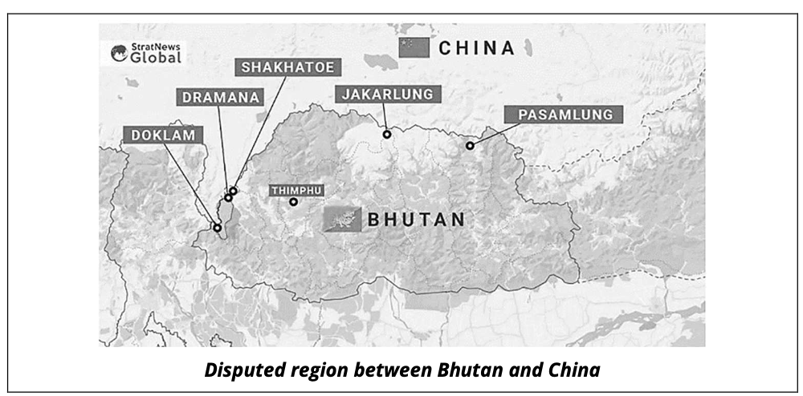
- Disputed region between Bhutan and China: - Like the Sino-Indian border, the entire 477-km Bhutan-China border is also disputed. - Significant Chinese claims range from three areas in western Bhutan, including Doklam, three regions in the north. - Border talks between the two sides (Bhutan and China) began in 1984, and from the seventh round in 1990, China has continued to push a “package proposal”, which would see it concede its northern claims with an area of 495 sq km, in exchange for Bhutan agreeing to China’s western claims, including 89 sq km of Doklam. - WHY CHINA IS PUSHING FOR PACKAGE DEAL - There were two reasons for this: - First, adding territory in the west would help enlarge the narrow and strategic Chumbi Valley. - Second, possession of Doklam would give it a military advantage over India. The Doklam area is not of particular strategic significance for Bhutan, but it is important for India since it gets the Chinese to the Zompelri (Jampheri) ridge, which gives them a commanding view of India’s Northeastern jugular, also known as the Siliguri Corridor. - BREAKDOWN OF TALKS - The two sides were very near for the finalisation of deal during the 10th round of talks, however when the two sides met for their 11th round in November 1996, Bhutan backed off, and many believe that India played a role in this. So in 1998, China and Bhutan signed an agreement to freeze the border as of 1998, pending further talks. - The problem for the tiny Himalayan kingdom is that, unlike, its neighbourhood, it is not very populous, with just some 750,000 people in an area of 38,000 sq km — a little smaller than Denmark but with one-seventh of its population. Its capacity to police its disputed borders is limited, as has been evident over the years that it has dealt with China. - In Asia, China sees Bhutan, where it does not yet have an embassy, as the last frontier. Having made inroads into Indian pre-eminence in Nepal, Sri Lanka and Bangladesh, Beijing would like to challenge New Delhi’s special relationship with Bhutan as well. - Recent events, including Doklam and the revival of its claim in the eastern region, can be seen as systematic Chinese pressure to push the Bhutanese to comply with its demands. - Beijing's surprise move came during a virtual conservation meeting in June, when it laid claim for the first time to Sakteng Wildlife sanctuary, which spans about 740 sq km (285 sq miles) in eastern Bhutan. Chinese foreign ministry explained that "the boundary between China and Bhutan is yet to be demarcated, and the middle, eastern and western section of the border are disputed". The eastern section was an obvious reference to the Sakteng reserve. - Scholars believe that inclusion of Sakteng as a disputed territory by China, was an effort by the Chinese diplomacy to strong arm Bhutan, to bring it back on negotiation table and the diplomatic effort has yield a positive result for China. - WHY BHUTAN AND INDIA ARE INTERDEPENDENT? - Bhutan is not just a neighbour, but a very important and strategic one. - Its border with India is over 600 km long, and it plays the role of a buffer between China and India. The relationship between the two has strengthened from the time of our independence. - India is Bhutan’s biggest development partner. India is the largest source of imports for Bhutan. - India has managed to create this bond not only through rhetoric, but by harnessing hydroelectricity for which the rivers in Bhutan, which come down from the Himalayas to India, have been used. - There are joint agreements whereby India buys power generated in Bhutan. Hydroelectricity has become one of the biggest revenue earners of Bhutan, which makes Bhutan the country with the highest per capita income in South Asia today. - Further a significant feature of this relationship has been the regularity of high-level visits. When Prime Minister Narendra Modi came to power, the first country which he visited was Bhutan. The visit of the King of Bhutan was planned far in advance. - CHINA AS THE MUTUAL DISCORD - China has been seeking a toehold in Bhutan for decades. - Bhutan is fully conscious of India’s strategic needs. As per their 2007 Treaty of Friendship, India and Bhutan consult at a high level in order to be able to maximise or reinforce their mutual strategic interests. - Bhutan has been having talks with China on the boundary question for years, and there has been no decision yet. - Similarly, India and China have frequently had boundary talks without any agreement being reached. - China has been offering major concessions on the north in order to obtain a much smaller territory, which is in Doklam, for years. Bhutan has resisted this offer consistently because it understands India’s security concerns and will not decide its border with China without taking into account India’s interests. - Bhutan is also aware that China is a menacing power, that China’s build-up in that disputed area is considerable, and there is also some incremental encroachment beyond the boundary dispute into Bhutanese territory. - Thus we can conclude that India-Bhutan relationship has crystallised over the decades into such a mammoth edifice of mutually beneficial interaction that it is difficult to dismantle. The key to strengthening it for the future is for India not to show any insecurity about this relationship, or in any way attempt to stifle differing voices, whether on social media or otherwise, but to pursue this relationship with trust and complete faith. - BHUTAN’S SIGNIFICANCE TO INDIA -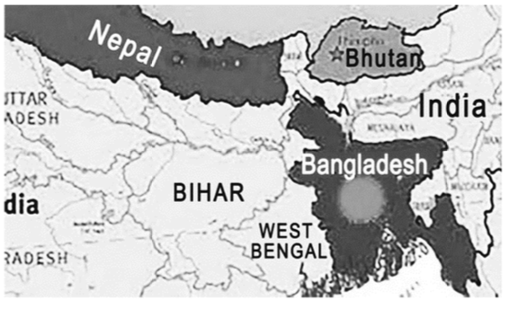
- Geographic Location - Nestled in Himalayas, Bhutan serves as a buffer between India and China. - After Doklam standoff, securing Bhutan's present borders especially its western border is important for India in order secure Siliguri Corridor. - Economic - Provides a market for Indian commodities and a destination for Indian investment. - India sees Bhutan as a rich source of hydropower. - Political - An unstable and restive Bhutan would not only jeopardize India's investments in that country but also provide a safe haven for anti-India activities and anti-India militant groups. - BILATERAL PARTNERSHIP / AREA OF COOPERATION - Trade relations: - India is Bhutan's largest trading partner; around 79% of Bhutan’s total imports are from India and India provides a market for 90% of its exports. - Trade between the two countries is governed by India-Bhutan Trade and Transit Agreement 1972, last renewed in 2016. Agreement established a free-trade regime between the two countries. Also provides for duty-free transit of Bhutanese exports to third countries. - Economic relations: - India has financed much of Bhutan’s 5-Year Plans. For current 12th 5-Year Plan (2018-23), GOI has committed economic assistance of Rs 4500 crores. - India is Bhutan’s largest aid donor. Between 2000 and 2017, Bhutan received $4.7 billion in aid from India, lion’s share of India’s total foreign aid. - Infrastructure: - India is playing an important role in Bhutan’s infrastructure development by building roads and hydro-power projects. - Development of Bhutan’s hydropower has not only provided Bhutanese with electricity for domestic use but also surplus energy which India purchases. - On-going projects Punatsangchhu-1, Punatsangchhu-2 and Kholongchhu, and recently inaugurated Mangdechhu Hydroelectric Plant. - Security Ties: - Indian military is virtually responsible for protecting Bhutan from external and internal threats. Eastern Command of Indian Army & Air Force have integrated Bhutan’s defence into their responsibilities. Indian Military Training Team (IMTRAT) trains Bhutanese security personnel. - Border Management: - There is a Secretary-level mechanism on border management and security matters. There is a Border District Coordination Meeting Mechanism between bordering States & Bhutan to coordinate on border management. - Water Resources: - There is a Joint Group of Experts on flood management between India & Bhutan to discuss/assess probable causes and effects of recurring floods and to recommend measures to both Governments. - Educational and Cultural Cooperation: - Several Bhutanese students are studying in India. India-Bhutan Foundation was established (2003) to enhance people to people exchanges in focus areas like education, culture, scientific and technical research and environment protection. - Indian Community: - There are about 60,000 Indian nationals living in Bhutan, employed mostly in hydroelectric power & construction industry. Between 8000-10,000 daily workers enter & exit Bhutan every day in border towns. - CHALLENGES - Although older Bhutanese generations looked to India with gratitude, newer generation tends to look more deeply – and with more dissatisfaction – at the situation. - Issues in Hydropower sector: - (i) Of the total external debt of Bhutan 73% is related to hydropower sector. Due to change in financing system for hydropower projects from 60:40 (60% grants; 40% loans) to 30:70 model (30% grants; 70% loans). - (ii) Commissioning of projects has been delayed. - (iii) Escalation of cost of project. - (iv) Hydropower projects are capital intensive but have limited employment opportunities for locals. - (v) Bhutan wants to engage local contractors. - (v) Environmental damage. - Growing negative perception of Bhutan on instances of India meddling in Bhutan’s internal affairs. - Bhutanese population considers India’s continued pressure to dominate their foreign relations as a direct threat to sovereign character and a major hindrance to settling border between Bhutan & China. - Bhutanese have begun to view India’s role in their economy as exploitative. - Indian aid is being criticized for creating ‘jobless growth’ in Bhutan. - Terms on which India is financing hydropower projects and getting electricity from Bhutan at cheap rates seems unfavorable to Bhutan. - India’s strategic interest to avoid military vulnerability to China in Doklam Plateau has discouraged Thimphu from border talks and has even escalated situation between India and China. - There is a growing interest in Bhutan for diplomatic and economic relations with China. - WAY FORWARD - Continue Foreign Aid: - Though Bhutan remains largest recipient of Indian aid, amount of aid in form of grants has dropped. This is not right time to decrease aid to Bhutan when Chinese presence is growing. - Rethink Terms of Financial Cooperation: - India must address Bhutanese grievances over hydropower projects and ensure terms of loans are favorable to Bhutan. India must draw Bhutanese public attention to China’s role in debt trap. Therefore, it will have to ensure that its finance model for projects in Bhutan is different from Chinese model. Indian projects must be more inclusive and generate jobs for Bhutanese. - Publicize Benefits: - India needs to publicize benefits that accrue to Bhutan from Indian projects. - Respect Bhutanese Values: - India should demonstrate respect for Bhutanese values. Bhutanese are an environment-conscious people. Therefore, India should go for economically and environmentally more viable projects. Because of its apprehensions over damage to environment, Bhutan did not ratify Bhutan-Bangladesh-India-Nepal Motor Vehicles Act (BBIN-MVA), a major sub-regional connectivity plan. - Maintain Ties with Bhutanese Monarchy: - Bhutan’s monarchs have been strong proponents of close relations with India. India should back Bhutan’s constitutional monarchy and strengthen it by channeling its aid through this institution. This will help secure greater public support in Bhutan. - Keep out of Domestic Politics: - India should not be seen as meddling in Bhutan’s politics & internal affairs as long-term cost of such trampling on Bhutan’s sovereignty far outweighs any benefits that may accrue to India. - Emphasize Doklam’s Value to Bhutan: - There is a perception among Bhutanese that Doklam has little significance for their country and hence can be given away to China. However, Haa district is rich in pastureland and forests. Its value to a country that is mountainous is immeasurable. India must spread awareness on this fact. - 20. INDIA AND MALDIVES - External Affairs Minister S. Jaishankar made an official visit to Maldives to witness the impact of the developmental assistance extended through the ever-reliable bilateral partnership. - The two countries signed agreements related to bilateral development cooperation during the minister's visit. A number of ground-breaking, inauguration, handing over and launch of key India-supported projects also took place during the visit. - "The Government of India gifts two sea ambulances to the Government of Maldives facilitated under the High Impact Community Development (HICDP) scheme as a means of broadening the capacity and responsiveness of emergency medical services throughout the Maldives" - The visit comes at a crucial juncture as the presidential election in Maldives is to be held on September. Though Ibrahim Solih has announced he will run for a second term, but his candidature has been opposed within his party by former president and leader of the Maldivian Democratic Party (MDP) Mohamed Nasheed, who has thrown his hat in the ring. - located just 300 nautical miles from India’s mainland. - THE FEUDING IN THE MDP IS BAD NEWS - In the past five years post Ibrahim Solih came to power Delhi’s Neighbourhood First and SAGAR policies have found expression in the improvement of ties. Maldives is part of the India-driven Colombo Security Conclave. As Solih’s foreign policy expressly roots for “India First”. - LATEST DEVELOPMENTS - A social media campaign #Indiaout is being led by opposition parties of Maldives against Indian projects. - However, present government led by Ibrahim Solih has reiterated its India first Policy and has rejected attempts by opposition to spread false information of criticizing its ties with India, which present administration considers as its “closest ally and trusted neighbour. - Maldives Foreign Minister Abdullah Shahid won the Presidential election of the United Nations General Assembly with India’s cooperation. - The presidency assumes significance because of coinciding of this term with India’s election as a non-permanent member of the UNSC. - Also, India’s decision of opening a new consulate at Addu city has faced backlash on social media. - FACTORS FOR COOPERATION B/W INDIA & MALDIVES - Geographical Proximity- Maldives is located just 300 nautical miles from mainland India. - Historical & Cultural ties - Vaccines: - Both the countries can cooperate on matters related to equitable access to Vaccines and TRIPS waiver. - Climate change: - Climate change is detrimental to developing countries like India & Small Island Developing States such as Maldives. Both countries can collaborate to strengthen the global response to climate change, through UNFCCC & Paris Agreement - Terrorism: - Peace and security in Indian ocean region are of common interest to both the countries. In the backdrop of growing radicalization in the region, India and Maldives can revive discussion on Comprehensive Convention on International Terrorism (CCIT) (Adoption of CCIT under UN was first proposed by India in 1996, but it has been in limbo ever since due to opposition from several countries on some of the provisions laid out in the convention). - Multilateral Reforms: - India and Maldives can work in tandem for multilateral reforms. (Ex. UNSC reform to expand UNSC permanent membership and make it more representative) - Respecting International laws on seas and navigation: - Maldives’ proximity to west coast of India and its location at hub of commercial sea‐lanes running through Indian Ocean makes it strategically important to India. Both the countries can work together to revive sanctity of UNCLOS. - Tourism: - Maldives economy is a majorly dependent on tourism. Many Indians visit Maldives as tourists. Many Indians are employed in these resorts. Initiatives like Visa-free travel, better air connectivity & usage of Rupay card in Maldives have further made strengthened this facet. - Trade: - Myanmar is a critical source of pulses important for food security and paper pulp for India’s paper industry. - India First Policy of Maldives: - Ever since President Solih came into power, he has practiced a stated policy of ‘India First.’ This reflects that the present government of Maldives gives highest importance to relations with India. - Security Cooperation: - Maldives has a large EEZ in the Indian Ocean which is in route of major global shipping routes and is crucial for maritime security of India. Maldives is part of Colombo Security Conclave along with India, Sri Lanka & Bangladesh which is focused on maritime security. Supply of defence systems: Helicopters, Police training academy etc. - Human Resource: - Valuable contribution has been made by Indian teachers, nurses, medical workers and professionals to Maldives. Maldives was given access to National Knowledge Network. - INDIAN ASSISTANCE TO MALDIVES - Operation Cactus: - In 1988, when armed mercenaries attempted a coup against President Maumoon Abdul Gayoom, India sent paratroopers & Navy vessels and restored legitimate regime under Operation Cactus. - 2004 Tsunami: - India had aided Maldives and had also supported it during the drinking water crisis in 2014 - COVID-19: - India rushed $250 million aid in quick time, India has also rushed medical supplies to the Maldives, started a new cargo ferry. - Infrastructure projects: - (a) Greater Male Connectivity project: - An infrastructure project in Maldives, connecting Male (capital) with three neighbouring islands through construction of a bridge-and-causeway link. This project was a part of $400 million line of credit will lead to cutting down logistics cost and drive people-centric economic growth. - (b) Housing: - India is financing 4,000 social housing units. - CONCERNS IN INDIA – MALDIVES RELATIONSHIP - Enhanced Chinese Presence: - Maldives signed its first country-specific FTA with China in 2017 and became China’s 2nd FTA in South Asia after Pakistan. It raised concerns that it will deepen debt trap to China, as more than 70% of Maldives’ foreign debt is owed to China. There has growing trend of Chinese companies acquiring land in Maldives. This land grab has raised concern of Maldives being increasingly falling into an economic neo-colonial influence of China. President Solih has affirmed that Maldives will scrap FTA with China and investigate Chinese land grab in Maldives. - President Yameen Hangover: - President Yameen had earlier declared an emergency in Maldives and halted the functioning of Maldives Parliament (Majlis) and arrested several opposition leaders. This was opposed by India and several other countries. Apart from this, President Yameen augmented relations with China without taking India into confidence. This led India-Maldives relations to decline. - Previous President Yameen launched an ‘India Out’ campaign against India’s developmental funding for creating physical, social & community infrastructure. There have been protests for early release of Mr. Yameen — sentenced to five years of imprisonment in a money laundering case, pending appeal. - Growing Radicalization: - There is a growing presence of ISIS/Daesh in Maldives and has been seen with growing influence of Saudi philosophy of Wahhabis. - New Consulate in Addu: - Recently India approved Opening of a New Consulate General of India in Addu City, Maldives. But Maldivian government has not made any decision regarding it. This came in the backdrop of ongoing #saveAddu social campaign by a section of Maldivians, who are sceptical of India’s presence in Addu atoll. - Helicopter Issue: - India had gifted Maldives two Advanced Light helicopters in 2013 operated by Indian Coast Guard & Indian Navy. A controversy broke out in 2018 after previous Maldives government refused to extend visas of Indian military personnel and asked India to take back helicopters. - 21. SOFT POWER IN INTERNATIONAL RELATIONS - DEFINITION: - The American political theorist Joseph Nye, who coined the term Soft power, defines it as ‘the ability to get what you want through attraction rather than coercion.’ - Indian External Affairs ministry has also defined the term soft power as ability to influence others through appeal and attraction, using non-coercive means. - INDIAN EFFORTS - India has been exercising a range of soft power resources which have widespread global appeal. These include Indian arts, dances and literature, cuisine, yoga and traditional holistic medicine, Indian cinema and entertainment and sports, historical monuments, India’s democracy, its Constitution, its unity in diversity and its composite cultural ethos, traditional values, unique approaches to contemporary issues such as climate change and environmental preservation, scientific and technological accomplishments and socio- economic innovation. - METHODS UNDERTAKEN BY INDIA - Role of Culture : - India has a rich culture and cultural diplomacy is its expression abroad to foreign audiences in order to facilitate/create long term international influence. - Role of Diaspora : - India has a large Diaspora in the world with over 31 million including over 13 million NRIs and 18 million PIOs spread across the globe. - The presence of an extensive and vibrant Indian Diaspora abroad with their growing political and economic profile has emerged as a unique soft power asset of the country. - The Indian Diaspora has emerged as a major partner in promotion of cultural diplomacy in their respective countries. - Enumerating the steps taken to engage the extensive network of Indian Diaspora in furthering India's foreign policy and long term interests, various programmes and has taken several steps from time to time to engage with Indian Diaspora for example Know India Programme, Pravasi Teerth Darshan Yojana, Scholarship Programme for Diaspora Children, Bharat Ko Janiye Quiz, Promotion of Cultural Ties with Diaspora, Pravasi Bharatiya Divas among others. - Role of Tourism: - The Committee are aware that tourism is a key indicator of a country’s soft power capital. - Religious tourism and medical tourism have emerged as areas with immense tourism potential. As an ancient civilization and a land of many religions, India has been cashing on this potential. - Efforts that are being taken: - India’s Buddhist Circuit/ Pilgrimage and attract foreign tourist to Buddhist sites in India, the International Buddhist Conclave (IBC) is being organized regularly by the Government. - To promote tourism, various efforts have also been made viz, launching of the ‘Incredible India’ campaign - Under the Champion Sector Scheme, Marketing & Promotion for Buddhist circuits in overseas markets shall be taken up are some of the schemes that are being undertaken. - Role of Parliamentary Democracy: - India’s vibrant parliamentary democracy, multi-party-political system and orderly change of Government through regular peaceful elections have significantly enhanced India’s standing and profile globally. India is held in great esteem worldwide as the world’s largest democracy. - Role of Yoga: - Yoga is the ancient Indian practice of physical and mental well-being. The Committee are pleased to note that The United Nations General Assembly declared 21st June as the International Day of Yoga (IDY). - The Ministry of AYUSH is the nodal Ministry for International Day of Yoga celebrations and has been celebrating IDY since last five years at national as well as at international level. - ICCR has established the Indo-Turkmenistan Centre for Yoga and Traditional Medicine in Ashgabat and the India-China Yoga College at Yunnan Minzu University, China. - Role of Media and Cinema: - The Ministry of Information and Broadcasting through Prasar Bharati, External Services Division of All India Radio, Film Facilitation Office, etc have been playing a prominent role in the projection of India’s soft power and cultural diplomacy. - Hindi film industry, popularly known as Bollywood, has emerged as one of the most notable examples of global entertainment emanating from outside the Western world. - The Committee are of the strong view that added emphasis needs to be given to the global imprint of our Cinema as an instrument of soft power while taking effective steps to celebrate and popularize our movies abroad, including regional cinema. - CHALLENGES - The Ministry of External Affairs has highlighted four key factors inhibiting effective conduct of India’s soft power and cultural diplomacy - 1. Inadequate budgetary allocation: - Non-availability of adequate finances is one of the factors derailing the effective facilitation of India’s soft power projection. Soft power capabilities require capital, both human as well as financial to be effective. A cursory glance at the budgetary allocation to India’s ICCR and Confucius Institutes of China or UKS’s British Council or Germany’s Goethe Institute is testimony to the hurdles in our institutional efficacy - 2. Lack of coordination among multiple institution: - There is a need for greater coordination and consultation among multiple institutions, both in the government and private sector, engaged in conduct of cultural and soft power projection. Currently, there is duplication of efforts and resources due to overlapping mandates of several ministries and agencies. - 3. Shortage of skilled manpower: - Shortage of skilled, motivated manpower in the Headquarters as well as in Indian Missions/Posts abroad who have the requisite enthusiasm and interest in cultural work. - 4. Lack of clarity about the mandate of ICCR: - While ICCR was established some 71 years ago, global situation has witnessed several drastic changes thereafter. Hence, an institutional device conceived some seven decades back needs a relook in the context of its organizational set functionality and efficacy. The Committee recommend that the Ministry should appoint a Study Group firstly to assess the working of ICCR in comparison to British Council, the American Centre and the Confucius Institute etc and later suggest ways to further strengthen ICCR - SOLUTIONS - The Committee, therefore, recommend that MEA should conduct a thorough assessment of our soft power potential and devise strategies for optimum utilization of the same in achieving India’s foreign policy objectives on priority basis and apprise the Committee accordingly. - The Committee recommend that the MEA should capitalize in multilateral diplomacy channels and abundantly incorporate Track 2 and Track 3 diplomacy in India’s foreign policy strategies. - The Committee therefore recommend that the Ministry should take urgent steps firstly to evolve and later adopt National Policy on Cultural Relationship Development across the countries or National Soft Power Policy. - The Committee, therefore, recommend that the Government should increase ICCR’s budgetary allocation by at least 20% than what is being provisioned as of now. - In view of the urgent need for greater synergy and coordination among the various Ministries/ Departments /agencies involved in India’s soft power and cultural diplomacy, the Committee recommend that the Coordination Committee may be constituted at the earliest. - The Committee, feels that a study could establish the linkages between our soft power and tangible outcomes in the field of diplomacy and hence they fail to comprehend the glaring delay in developing India’s Soft Power Matrix and thus recommends Ministry should have objective metrics for evaluating soft power outcomes through a ‘Soft Power Matrix’ at the earliest. - WAY FORWARD - The external affairs ministry explains the need for “smart power”, as per the ministry smart power is the most representative of India’s current interaction with the world, where the emphasis is on building capacities to be able to choose right forms of power to employ in relations to a particular context. It involves the strategic use of diplomacy persuasion, capacity building, and the projection of power and influence in ways that are cost-effective and have political and social legitimacy. - 22. BUDDHISM, INDIA’S SOFT POWER PROJECTION TOOL - There is much significance to India having hosted a two-day global Buddhist summit in New Delhi, which was organised by the Ministry of Culture in collaboration with the International Buddhist Confederation. The summit saw the participation of key figures from the global Buddhist community, including the Dalai Lama. - The summit was a significant opportunity for India to project and connect with the Buddhist population around the world, thereby strengthening the country’s soft power. - USE OF BUDDHISM AS A SOFT POWER TOOL - With its strong historical and cultural ties to Buddhism, India is well-positioned to play a leading role in shaping the discourse around Buddhist issues on the global stage. - Indian government has been actively investing in its Buddhist diplomacy efforts, with a focus on promoting tourism through the development of “Buddhist tourist circuit”. Additionally, PM has made it a point to visit Buddhist sites during his Southeast and East Asian visits. By hosting such a high-profile event, the Indian government hopes to demonstrate its commitment to preserving and promoting Buddhist culture and heritage. - India’s efforts to position itself as a great power is committed to cooperation rather than coercion and are rooted in its deep historical and cultural ties to the region. Current government’s guiding principles for foreign policy, Panchamrit principles include “Sanskriti Evam Sabhyata” which means cultural and civilizational links, which were highlighted during the Delhi summit. - India hopes to reinforce its image as a responsible global power committed to peaceful cooperation and regional stability. By laying an emphasis on cultural and civilisational ties, India seeks to promote greater understanding and cooperation between nations and to demonstrate the unique role it can play in shaping the region’s future. - WHAT CAN BE DONE FURTHER? - India needs to utilise the reach of Bollywood in promoting its Buddhist heritage. China, with its influence over Hollywood, has dominated the narrative around Buddhism. In contrast, India is behind in this domain; there have not been any efforts made through cinema. - India’s G-20 presidency this year could be used to promote Buddhist diplomacy on a bigger scale through various cultural meetings, especially as Buddhist teachings align with the motto of India’s G-20 presidency, ‘One Earth, One Family, One Future’ - As Buddha was the first diplomat of peace, his teachings of peace and cooperation in these tough times can become the guiding light of Indian diplomacy on the world stage - CHAPTER 2 - GEOPOLITICAL HOTSPOTS - 1. RESTRUCTURING OF GLOBAL ORDER - Ukraine war is a key event in restructuring Global order. It has reinforced transatlantic relations (US–Europe-NATO), brought into focus cold war rivalry and has raised questions about efficacy of US to handle two Geo-political epicenters – Europe and Indo-pacific. This event is also altering energy order and is leading to creation of new supply chains. - Trans-Atlantic relations reinforced: - US–Europe relations reached a low point under President Trump with US threatening its withdrawal from NATO. However, Ukraine war has brought NATO under focus, whose expansionism is one of the reasons for Russian attack on Ukraine and has brought a consensus amongst West European countries and US for strengthening the security architecture to counter Russian threats. - New Energy Order: - Europe has been dependent upon Oil & Gas from Russia through its Pipelines. However, the sanctions post war enforcing are leading to a new energy order with new partnerships based on energy demands, and new supply chains. US is recalibrating its ties with Saudi Arabia and Europe is looking towards Middle East to fulfil the gap. - Shifting of Focus from Indo-Pacific: - For US, opening of an active front in Europe with Russia will shift resource commitments away from the Indo-Pacific - Questions on US’s capability of countering China - Despite overwhelming military & economic capacity, US is incapable of competing with both China and Russia on two fronts, because of greater Chinese capabilities compared to Russia. (Counterview) - To counter China in Indo-Pacific will require US to Align with many countries having different set of interests like – India, Japan, Australia, ASEAN etc., unlike Transatlantic front where there is a consensus amongst European countries and US against China. - Increased Security competition in Europe: - With more countries trying to join NATO like Sweden and Finland further increases the risk of conflict in region. - Militarization of Europe: - Germany has increased its defence budget with many countries in Europe following the same path. - 2. COLD WAR 2.0 - Cold war started between Capitalist USA and Communist USSR after WWII and got over after fall of Berlin wall in 1989 and disintegration of erstwhile USSR in 1991. Post-Cold war period saw a unipolar world order with just one superpower in form of USA. - However, last 25 years have seen rise of other power centers including China, India, Russia and other middle powers. Rise of these powers has culminated into beginning of a new cold war with Russia – Ukraine war and realignment of Geo-politics post the war. - Essence of New Cold War is not that of Bipolarity but of Multipolarity in the world order. - RISE OF MIDDLE POWERS - India is among strongest economies globally, with demographic trends strongly in its favour. - China has built island fortresses in international waters, claimed large tracts of land outside its territory and has launched large scale infrastructure projects to organise Eurasia economically under its BRI project. - Russia has invaded two sovereign nations since 2008 (Georgia & Ukraine); has engaged in several attempts to undermine western democracy. - Iran is emerging a regional middle eastern power, expanding its influence over Iraq, Lebanon, Syria and Yemen. - Barring Iran, whose emerging nuclear program is of concern to West, all other nations are verified nuclear powers, thus exponentially raising stakes of any potential conflict. - These divisions of power & ambitions are emblematic of multipolarity of our current world order. - TRENDS LEADING TO SHAPING UP OF NEW COLD WAR - Bifurcation of global system between US and Sino-Russia axis. - Ongoing systemic competition between US and China in strategic areas, influenced by a mutual decoupling of the leading socioeconomic networks. - Increasing tensions between Asian giants, China & India. - Possible US withdrawal from West Asia due to growing energy self-sufficiency and Europe due to a shifting focus towards the Indo-Pacific region. - Fluid, ad-hoc geopolitical constellations between regional powers, navigating between US and China to avoid taking sides. - HOW IS THE NEW COLD WAR SHAPING UP? - New cold war is essentially race for dominance in a multipolar world. - Scholars see two poles are emerging. - (a) Western world: - One led by US and its allies which rests on democracy and liberty making the world more peaceful. - (b) Challenge to Western hegemony - Backed by China, Russia and India, which posits those disruptions to system are part of the natural order. - Lack of ideological confrontation between capitalism and socialist camps as during Cold War. - China and Russia are prime contenders against Western order, but influence of states like India and Iran is also considerable. - Challenge posed China to the US hegemony is much more than the challenge posed by erstwhile USSR. - COMPLICATIONS IN NEW WORLD WAR - China is much closer to US as a military and economic power than Soviet Union ever was. - Throughout Cold War, USSR maintained a heavy military presence across Western Europe and was routinely required to contend with insurrections in countries within its sphere of influence. - Russia, China and India have enhanced their military capabilities, extending their influence without committing to any iron clad defence agreements with allies. - Thus, while USSR had to spread its forces over a vast swath of geography, presently Russia can concentrate its efforts in one specific region, allowing it to seize and control that region far more effectively. - China is testament to potential success of such a strategy, having built up its armed forces in East China Sea. - While US still outnumbers China militarily, its forces are spread across the globe and would struggle to mobilise in the event of a conflict in Asia. - In the previous cold the two superpowers were vary of the nuclear escalation. - However, presently there are a handful of potential conflicts that would be limited and would involve conventional arms. - Previously nuclear power was a deterrent against conventional warfare. - China and Russia’s nuclear arsenal is what justifies their use of conventional warfare with the dominant thought that their nuclear threat is enough to deter other countries from getting involved when they violate the norms of the liberal world order. - WAY FORWARD - Formation of a loose bloc consisting of China, Russia and Iran fighting against hegemony of USA. - If Russia’s invasion of Ukraine is followed by a Chinese invasion of Taiwan or an Iranian nuclear build up, three countries could undermine the West without officially banding together in their pursuit to do so. - If India starts taking sides giving away is neutral stance in this great power competition, it could further complicate the situation. - All these events are likely to give rise to another era of great power competition. - 3. STRATEGIC AUTONOMY AND NON–ALIGNMENT - NON–ALIGNMENT - Developed in the context of cold war- Bipolar geopolitics. - Non-alignment allowed India to take international decisions and stances that served its interests rather than the interests of superpowers and their allies. - India was often able to balance one superpower against the other. Ex–Treaty of Friendship with Russia in 1971. - India stood for - Disarmament; non-interference into internal affairs of States and peaceful coexistence among all nations; rejection of use or threat of use of force in international relations; strengthening of United Nations; democratization of international relations; socioeconomic development and restructuring of the international economic system. - Thus, India took leadership position among developing countries. - With end of cold war era Bipolarity ended. World politics was marked by Unipolarity with US as a hegemonic power. However, with rise of China and other middle powers, present geo-politics is marked by Multi–Polarity. - STRATEGIC AUTONOMY - India pursues Strategic autonomy which denotes ability of a state to pursue its national interests and adopt its preferred foreign policy without being constrained in any manner by other states. Ex – India’s stand on the UNSC vote against Russia. - In the present multipolar world Strategic partnership rather than alliance is the new order in global politics. Ex. US and Russia both are strategic partners of India. - India continues to stand for a rules-based world order and peaceful coexistence of the states which it supported during the NAM. - India is pursuing a policy of Strategic hedging by engaging according to its interest that overlap with different nations in a multipolar world. Ex - Quad with US is for India’s geostrategic interests, while participation in BRICS for its global governance and SCO with Russia & China for its continental interests. - Nonalignment was pursued in a context when India was a newly independent, developing country and a non-nuclear power trying to keep itself away from getting entangled in the in the ideologies projected by the then superpowers. - While strategic autonomy is being pursued when India has become a nuclear power, possesses the world’s third-largest military budget, is the third -largest economy (in PPP terms) and has emerged a voice in the Geo-Politics of the day. - Though, the context of NAM and the Strategic autonomy is different, the latter remains an important corollary of NAM. - Thus, as an important corollary of the ‘non-alignment,’ the concept of strategic autonomy continues to be used by India in asserting its sovereign independence in decision-making on strategic issues. - 4. STRATEGIC AUTONOMY IN ACTION - In the context of Ukraine Crisis, stand taken by India of remaining neutral is being seen as the real display of its principle of strategic autonomy. Given the transformation of India’s partnership with the U.S., which also sees New Delhi as a counterweight to China in the Indo-Pacific region, many expected India to give up its strategic autonomy and take a stand that aligns with that of the West. It did not happen. In this backdrop let us understand various aspects of Strategic autonomy. - WHAT IS STRATEGIC AUTONOMY? - Strategic autonomy denotes the ability of a state to pursue its national interests and adopt its preferred foreign policy without being constrained in any manner by other states. In its pure form, strategic autonomy presupposes the state in question possessing overwhelmingly superior power. - This is what would enable that state to resist the pressures that may be exerted by other states to compel it to change its policy or moderate its interests. - A country should formulate its foreign policy based on its national interests, not merely on moral commitments. - INDIA DEMONSTRATED STRATEGIC AUTONOMY? - Continuing to trade with Russia despite severe sanctions imposed by the west. - India has also evaded CAATSA restrictions to continue defence partnerships with Russia. - Abstained from voting against Russia in all the resolution in UN and subsidiary bodies. - At the same time, its maintaining close economic and military ties with USA - QUAD - Foundational agreements (LEMOA, BECA, GSMOIA, COMCASA) - THE REASONS BEHIND INDIA’S RESPONSE: - The global order is witnessing rapid changes as indicated by - Georgian War (2008) - Annexation of Crimea (2013) - American Withdrawal from Afghanistan (2021) - Russian Invasion of Ukraine (2022) - Failure of the NATO to protect a close ally - The reason Russia attacked Ukraine is because it thought that NATO would not be able to defend a country that was not a member of the alliance. - That casts shadows on the “guarantee” provided to the close allies by the west in general and USA. - From Indian perspective there are three major players and several middle level players - US remains the world’s pre-eminent power but with its ability to shape global geopolitical outcomes diminished. - China is rising fast and is seeking to blunt America’s existing power and displace the American order at the global level. - Russia, although economically weak but in terms of land mass and military might, it remains a superpower. - Of these three two are India’s partners and one is a competitor. - The question India (itself a middle power) faces is why it should take a side in a confrontation that is unfolding in Europe between two of its partners, which could eventually leave its competitor stronger. Here, neutrality is the best among the bad options. - US (and west) policy is not based in commitments towards moral values: - The U.S.-led NATO have in the past chosen to unilaterally attack countries based on their desired geo-political objectives - Bombing of Yugoslavia in 1999 to establish USA as the only superpower - Invasion of Iraq in 2003 to reshape middle east politics - Destruction of Libya to curb its move to shun dollar-based transaction. - Hence the USA actions in the present crisis is similarly based on Geo-political calculations to weaken Russia. - India’s national interests are not aligned with the approach of the USA - India needs Russia not only for defence and energy purchases - India needs Russia for geopolitical reasons. - India is as much a continental power as it is a maritime power. - While close ties with the U.S., Japan and Australia are important for India’s maritime security and interests, ties with Russia, Iran and the Central Asian countries are important for its continental security and interests, especially after the U.S.’s ignominious withdrawal from Afghanistan. - India is not a client state of any great power (even client states have not joined the sanctions regime). - It is not a member of any alliance system — - Quad (India, Australia, Japan and the U.S.) is not an alliance. - Like any other country, India also retains the right to take policies based on pragmatic realism and its core national interests. - India has pursued similar strategies before: - Soviet intervention in Hungary – 1957, Czechoslovakia (1968) or Afghanistan (1979), or the American invasion of Iraq (2003) - Its response to Russia’s invasion on Ukraine — condemnation of the civilian killings without any name calling, and abstention from UN votes — is not fundamentally different from this historically cautious neutrality. - India is not the only country pursuing this policy - South Africa abstained from the UN votes that sought to condemn Russia. - The United Arab Emirates, a close American ally in the Gulf that hosts thousands of U.S. troops, abstained from a vote in the UN Security Council. - Israel, the U.S.’s closest ally in West Asia, condemned the Russian attack but refused to join the sanctions regime and said no to sending its defence systems to Ukraine. - Turkey, a North Atlantic Treaty Organization (NATO) ally, did the same and is mediating between Ukraine and Russia. - But none of these countries has come under the kind of pressure and public criticism from the West that India has. - Factors that constrain India’s Quest for Strategic Autonomy - Military dependence on Russia limits India’s freedom of action under the doctrine of ‘strategic autonomy’ - India’s dependence on West Asia on Crude Oil imports. - Despite considering China as an adversary, India’s economic dependence on Chinese imports is increasing. - Not being a permanent member of the UNSC also constrains India’s role an important player in global peace and security affairs. - Complex geographical reality with adverse neighbourhood on northern borders. - Connectivity constraints in the continental part. - 5. UKRAINE WAR’S GEO-POLITICAL IMPACT ON INDIA - When war between Ukraine and Russia broke out, India’s position on the war was being closely watched by the global community. However, after initial balancing act of India, it has been argued that India’s strategic options are now shrinking in broader regional geo-politics due to decrease in Russian influence and increase in Chinese influence because of the war. So let us understand some challenges in front of India which have emerged because of Ukraine war. - RUSSIA – CHINA RELATIONS (AFTER UKRAINE WAR) - Before attack on Ukraine, Russia tried to consolidate its relations with China. At bilateral summit in 2022 a month before the attack the two countries declared that their “friendship has no limits”. - This covers broad sections of bilateral, regional and international relationship between two countries. - Russia which is still a considerable military and an important Eurasian power tried to hedge the Economic impact of the war by aligning with China. Thus, Russia which is still a considerable military power while China which a considerable Economic Power have aligned to counter the US and the West influence. - Further, With the show of force in Ukraine, Russia has demonstrated its unique geopolitical weight as an indispensable player, without which neither the US nor China can win the competition against each other in the future. - China’s support for Russia stems from its need for importing the Oil and gas from Russia and securing its BRI investments in the sphere of influence of Russia. Further it wants to take sides with Russia to primarily undermine the US influence. - China’s total import of mineral fuels, oils, etc., from Russia (crude + refined / distillation products) in 2024 was approximately US$ 95.20 billion. In March 2025, Russia’s share of China’s oil imports (volume basis) was also near 12-22% depending on which data one uses. - In FY24 (April 2023-March 2024), India’s crude oil imports from Russia were US$ 46.49 billion. Also in 2024, total imports from Russia of mineral fuels, oils, distillation products (which includes crude + some refined oil products) were about US$ 59.53 billion. In FY2024-25, about 35% of India’s crude oil imports came from Russia. - China buys more via pipelines (e.g., ESPO pipeline from Russia), while India imports mainly by sea tankers. - Russia has already been opposing the US initiatives like AUKUS in the Indo-Pacific, while China is supporting the Russia against the Western pressures. - However, potential points of conflict between Russia and China arise from their geographic prioritisation and overlapping geopolitical interests. Russian fears growing Chinese influence in Central Asia, Far East, and other traditional spheres of influence of Russia. - FACTORS THAT LIMIT GEO-POLITICAL OPTIONS OF INDIA - Russia's Alignment with China - Russia as a key strategic partner is no longer available to India for balancing purposes because Russia is more dependent upon China’s support for its war against Ukraine. - Decreased Russian Influence in Asia - Russian focus on Ukraine issue has decreased its influence on Asia, while the Chinese influence has increased. - Shifted Western Focus - US and west Europe’s focus has shifted away from China because of the Ukrainian issue. - CHALLENGES THAT INDIA NEEDS TO HANDLE - (A) Increasing influence of China - Chinese influence has increased in the Past decade owing to its economic prowess (Belt Road initiative, Cheque book diplomacy) and assertiveness witnessed under the present Chinese regime. Ex. South China Sea issue, Galwan valley attack. - Ukraine war has reduced the focus of US and its partners on South Asia, thereby increasing the influence of China. - Additionally, with jolt to Russian global image and its reduced global influence and USA’s reduced focus on South Asia, their support in helping India in its pursuit of favorable geo-political outcome in the South Asia is decreasing. - (B) Managing Russia China ties - Due to adverse impacts of the war on Russian Economy, Russia’s dependence of China is increasing. - In such a scenario, in case of a skirmish along the LAC, India will have to look towards support from West, which is going to impact Russia’s intent of seeking the Indian support during Ukrainian war. Thus, Russia would not want China to start a skirmish along the LAC with India. However, in return the China would want India to reduce its focus on the Indo – Pacific. - (C) Calm in Kashmir and India’s policy towards Afghanistan and Central Asian republics - India’s policy towards Afghanistan and Central Asian republics will also be impacted. - India kept itself disengaged from Afghanistan after the takeover of Taliban. Disengagement is being seen as a quid pro quo for peace along LOC by Pakistan. - However, such a policy will further reduce strategic interest of India in the region. Only recently, India sent a team Joint secretary to take stock of humanitarian assistance India sent to Afghanistan. - Increasing Chinese influence on Central Asian Republics and Afghanistan in backdrop of lack of attention by Russia. - INDIA’S APPROACH TO COUNTER CHALLENGES - India is also taking various measures to counter the Chinese assertion and manage the impact of Ukraine war and international pressure on India’s long term strategic partner Russia. - Some of these measures include: - Outreach to Central Asian Republics via India – Central Asia Summit. - Recently, Quad meeting in Japan and announcement of Indo-Pacific Economic forum. - Recent visit of Indian Prime Minister to Europe was seen as India assuring its relations with Europe, since both have taken divergent views on issue of calling out Russian aggression in Ukraine. - India has been reaching out to countries in South Asia troubled by political and economic crisis like Sri Lanka, Maldives, Afghanistan, and Myanmar. - WAY FORWARD - Despite such steps the combined geopolitical impact of the ill-timed U.S. withdrawal from Afghanistan, Russia’s Ukraine war, and rapid expansion of Chinese influence goes to show how India’s geopolitical choices face challenges due to Ukraine war - 6. INDIAN OCEAN REGION - This is the region including countries situated in the border of Indian ocean and ocean itself. These countries are Australia, India, Indonesia, Bangladesh, Madagascar, Somalia, Tanzania, South Africa, the United Arab Emirates, and Yemen. - Indian ocean is the main trade route and joins Pacific Ocean, hence, becomes important for trade and Energy supply of the world. That is why it has become focus point of all the nations. -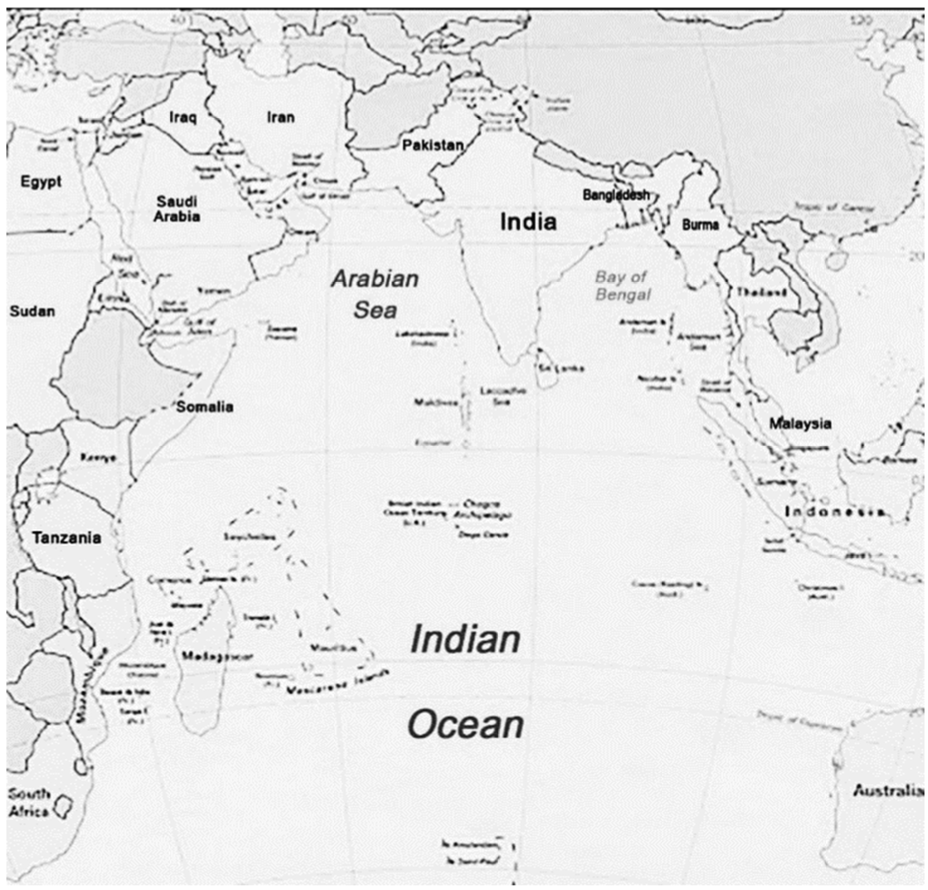
- IMPORTANCE OF THE REGION - Demographic dividend: - Major portion of the world population and comparatively younger population resides in this region. - ECONOMIC SIGNIFICANCE - Privileged location: - Most of the world’s goods trade and oil trade passes through this region and there are three important chokepoints in this region namely Strait of Hormuz – located between the Persian Gulf and the Gulf of Oman - Growing Economies: - Economies of many Indian Ocean countries are growing rapidly and are attracting huge investments such as India, Malaysia, and Tanzania. - Abundant natural resources: - IOR is rich in natural resources and world’s 40% oil exploration is done from this area only. - It contributes nearly 15% in total fishing of the world. - Many mineral and natural resources like iron, copper, Zinc, manganese, gold and silver are explored in this area only. - STRATEGIC IMPORTANCE - Influence of China: - China being a huge economy, plays role of a big investor, pushes its Belt and Road Initiative, giving huge loans to smaller countries like Sri Lanka, Maldives Kenya etc. There is a growing assertiveness of China in this region which is cause of worry for many nations. - Countering China: - US and other nation are trying to counterbalance China and that is why they are taking many initiatives in this region and are focusing on infrastructure development in the countries of IOR. - India has also increased its activities in this region and is engaged in promoting cooperation and strengthening trade and investment ties. African countries are of focus now. - Security issues: - This region is home to many threats like piracy, illegal and unregulated migration, and presence of extremist and groups for example in Somalia, Bangladesh, and Indonesia. - First responder: - Due to its strategic location and capabilities, India can play a pivotal role in this region specially during disasters and crises. Till now, it has played positive role and at the time of need has readily helped smaller countries of the region such as Maldives (Operation NEER), Sri Lanka, and Bangladesh etc. - Groupings and Forums: - There many groups and forums in this region which are comprised of neighbouring countries such as: - BIMSTEC – which represents Indian Ocean Countries. It aims to promote trade links. - There are many regional groupings also in this region such as ASEAN, SAARC, GCC, and SADC etc. These countries have come together because of their interests which are more or less identical. - SIGNIFICANCE FOR INDIA - Location: - India is located at the Ocean’s center and has a long coastline of almost 7,500 kilometers. - Security dimension to India’s engagement: - Due to its long coastline India is always prone to terrorist attacks and security breaches. Smuggling, illegal fishing, and human trafficking are other major concerns. - Strategic Importance: - India is engaged in various connectivity projects and is trying to extend its reach such as Chahbahar Port Development in Iran and ''infrastructure development rights’’ in Mauritius and Seychelles. - Economic significance: - India does most of its trade through this trade route and is heavily dependent on this route for its oil supplies. - India explores resources of the Indian Ocean. Fisheries and aquaculture industries are major sources of exports. - Mineral resource extraction: - India has exclusive rights to explore the Central Indian Ocean and has the licenses for the Indian Ocean ridge. These have opened new opportunities for deep seabed mining. - Monsoon Mechanism: - The Indian Ocean plays an important role in keeping Monsoon mechanism in favor of India. La- Nina and El-Nino phenomenon occur in Indian Ocean and affect Indian Monsoon. - Foreign Policies: - Time to time India has formulated various Foreign policies to cater the needs of small countries of this region and has always promoted peace, cooperation and harmony with these nations. - MAJOR INITIATIVE IN THIS REGION - Security and Growth for All in the Region (SAGAR) - SAGAR initiative was announced by PM Modi and aims to seek a climate of trust, respect for international maritime rules and norms by all countries, peaceful resolution of maritime issues and increase in maritime cooperation. - Indian Ocean Rim Association (IORA) is an inter-governmental organization, established in 1997. Objective behind it, is to strengthen regional cooperation and sustainable development in through its 22 Member States and 10 Dialogue Partners. - It focuses on issues including, seaport and shipping, maritime connectivity, port management and operations fisheries, aquaculture, marine spatial planning, ocean forecasting, blue carbon, and renewable energy. - Quad grouping: - India is an active member of Quad. U.S., Japan, Australia, and India, having regular consultations on their collective efforts for a free, open, and inclusive Indo-Pacific. - Indian Ocean Rim Association of Regional Countries (IOR-ARC): - Only Indian Ocean organization meeting at ministerial level with membership ranging across the entire Indian Ocean region. It focuses on promoting cooperation within this region. - Indian Ocean Commission: - Set up in 1982, it is inter-governmental organization that coordinates maritime governance in the south-western Indian Ocean. India’s membership has been approved. It comprises Seychelles, Madagascar, Comoros, Mauritius, and Reunion Island. - Asia Africa Growth Corridor or AAGC is an economic cooperation agreement between the governments of India, Japan, and multiple African countries. - The AAGC is set up to boost Development and Cooperation, Quality Infrastructure and Institutional Connectivity, Enhancing Capacities and Skills and People-to-People partnership among the member countries. - South Asian Association for Regional Cooperation (SAARC): - It was established in1985 and aims economic and social development in the region. The member states are Afghanistan, Bangladesh, Bhutan, India, Maldives, Nepal, Pakistan, and Sri Lanka. There is no provision of maritime cooperation in this. - Association of South-East Asian Nations (ASEAN): - Established in 1967 by Indonesia, Malaysia, Philippines, Singapore, and Thailand. Till now membership has given to Brunei, Cambodia, Laos, Myanmar, and Vietnam. ASEAN leaders decided three pillars of it, and these are ASEAN security community, an economic community and a socio-cultural community. - ASEAN Regional Forum (ARF): - It is comprised of 27 countries, of which ten are ASEAN members and 17 ‘partner states’. It ensures security discourse between Asian states and provides the opportunity to discuss regional security issues and develop cooperative measures to enhance peace and security in the region. - Arab League, or League of Arabian States: - The league was formed in Cairo in March 1945 and is the regional organization of Arab states in the Middle East and North Africa. Its currently has 22 members. Its main objective is to "draw closer the relations between member states and co-ordinate collaboration between them, to safeguard their independence and sovereignty, and protect the interests of the Arab countries. - Indian Ocean Naval Symposium (IONS): - This initiative tries to increase maritime co-operation among navies of the littoral states of the Indian Ocean Region. Its objectives are to expand it to the next level of cooperation, create allied maritime agencies, establish a high degree of interoperability, share information to overcome common trans-national maritime threats and natural disasters, and maintain good order at sea. There are currently 35 members. - CONCERNS - India playing it safe: - Joining of QUAD by India signals that it continues to practice strategic ambivalence in the Indian Ocean. - India is playing safely and hence kept Australia out of Malabar exercises because it does not want to antagonize China. - India as a “Net Security Provider”: - Currently, India is not capable of proving security to the whole region. - Chinese challenge: - Chinese army and Navy are increasing their presence in this region and it raises security alert for India and other small nations. - China and West: - Considering its rivalry with West, China is trying to obtain long term relationship in this region, so that it can become bigger than western powers in this region. - Less spending by India: - India’s expenditure on Navy is very less than other major powers. In this way it will be difficult to gain superiority over other powers. - For Australia advocates for a ‘free and open Indo-Pacific’ establishing a regional architecture with fellow democratic countries to help in maintaining the ‘rules-based order.’ - For a ‘free, open and inclusive Indo-Pacific,’ refers to a multipolar regional order. - India wants to secure its strategic autonomy, project its own leadership ambitions - WAY FORWARD - India is in the list of top economies and is growing rapidly. - The island nations are badly hit due to covid-19, where India shall act as a friend in need- it will have to - be the first responder and provide security and support to the countries to get back their support in future. - Delhi is seeking for a balance between its “Act East” and “Look West” visions. The for consolidation of its IOR vision will be crucial straddling its two subtly variants visions for the two ends of the Indo-Pacific seaboard. - To counter China: - Rather than competing with China, India should continue a goodwill factor approach and must gain support and control in this region. - India must take necessary steps to increase investments in its navy. - 7. INDO-PACIFIC GEOPOLITICS - The term Indo-Pacific which was first used in geo-political context by an Indian Navalist in a journal article. It was later used by Japanese Prime Minister Shinzo Abe’s speech in the Indian Parliament titled “Confluence of the Two Seas” in 2007. - The term Indo-Pacific found its place in India’s official communiqués 2014 & recently Ministry of External Affairs has established an Indo-Pacific division within the ministry, considering India’s growing interests within that region. -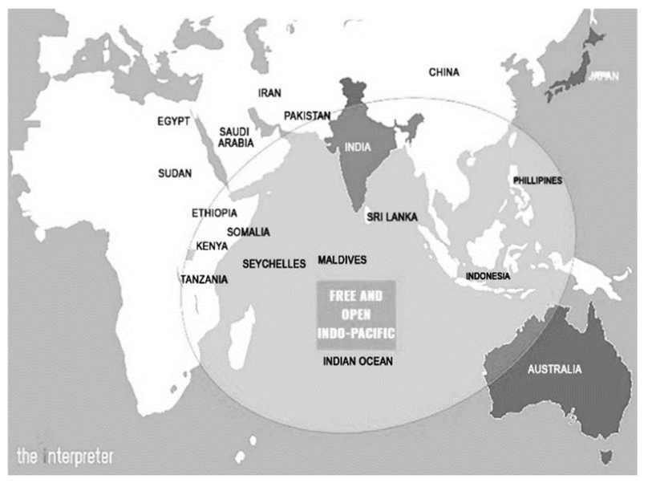
- FREE & OPEN INDO-PACIFIC - Assertion for Free and Open Indo-Pacific by major powers can be considered a reaction to militarisation of waters in Indo-Pacific, South China Sea (SCS) in particular, and emergence of Chinese economy and military across Asia & Africa. The assumption is that “freedom of navigation” is being or might be constrained by increased military presence in the SCS by China’s navy. It is worth noting that China continues to support the freedom of commercial shipping in the seas of the Indo-Pacific. - There is a fear among ASEAN members that Indo-Pacific is becoming a closed region due to major power rivalries including India, China, US and Japan and therefore ASEAN intends for a free and open Indo-Pacific. - As per Japan, the “Free and Open Indo-Pacific Strategy” seeks to improve “connectivity” between the Pacific and the Indian Oceans. In pursuit of this, Japan aims to strengthen strategic collaboration with India, the US and Australia. - The US vision of a free and open Indo-Pacific has three components – economic, governance and security. The US seeks greater economic engagement with countries of the Indo-Pacific, maintenance of international law in Indo-Pacific region and primacy of U.S. navy and not of China in the region. - INDIAN VISION OF INDO-PACIFIC - India put forth India’s vision of the Indo-Pacific at the Shangri La dialogue, 2018. The view was consistent with the overall norms enunciated by regional powers, including the US, Japan, Australia and Indonesia with the emphasis on ASEAN centrality in Indo-Pacific. - India has asserted that it will not take sides but chooses the side of values and principles which are commonly embraced with ASEAN based upon as Free & open Indo-Pacific. - India is evolving its regional role to encompass the Indo-Pacific and Eurasian region to ensure a balanced multipolar world - India would continue to maintain its strategic autonomy irrespective of the prevailing geo-politics to ensure stability in power relations in Asian region among the great powers - India will not be a part of closed group of nations or aggregate Indian power in any bloc and India's friendship with any nation should not be mis-construed as an alliance - India's growing engagement in the Indo-Pacific region should not be considered anti-China. - India continues to maintain multi-literalism as form of foreign policy engagement with parallel interactions (E.g., SCO & Quad) based on respective common mutual interests. - DIFFERENCE IN VISION WITH OTHERS - Japan is primarily focused upon South China Sea, while India’s security is focused primarily towards Bay of Bengal and to Arabian Sea. - US does not follow ASEAN centrality in Indo-Pacific architecture. It has aligned with UK and Australia to form AUKUS which is a military partnership focusing on transfer of Nuclear submarine technology to Australia. - Chinese military installations have expanded towards Arabian Sea and Bay of Bengal but India has not done similarly in South China and East Asia Sea. - India intends to become both a maritime & continental power in Asia, but Japan and USA are focused on maritime capability. - Major powers have constituted military alliances in Indo-Pacific region, but India has chosen not to indulge in military alliances. - 8. INDIA AND INDO PACIFIC - With rise of China, India's Foreign policy seems to focusing on strategic and military considerations which is visible in its collaboration with USA and renewed focus on Indo-Pacific and the Quadrilateral security dialogue. However, there are differences in the understanding of the concepts of Indo - Pacific and the Quadrilateral grouping. Further there are hurdles in India’s strategy with regards to the Indo-Pacific and the Quad. So let us understand, the issues faced by India and what should be India's approach to clearly outline its interest in the Indo-Pacific and the Quad. - Indo – Pacific vs Quad: - Indo-Pacific is a grand politico-economic vision while Quad is a forum for common issues in the region concerning India, U.S., Australia and Japan. - SIMILARITIES IN INDO-PACIFIC AND THE QUAD - Quad members are major States in Indo-Pacific region, and both Quad and Indo-Pacific constructs are focused on China. - They are also in some ways centred around India’s geographic location and its policies. - DIFFERENCES - The Indo-Pacific provides a complex political and economic construct aimed challenging China strategically. The Quad on the other hand is inherently more anti-China in character and intent. - The Indo-Pacific has subtle anti-China undertones. But the Quad’s ability to succeed would entirely depend on China — the more aggressive China gets, the more resolute the Quad countries would be in strengthening it. - HURDLES IN INDIA’S STRATEGY - For a politico-economic construct such as the Indo-Pacific to survive, there must be strong economic partnerships and linkages among its members. - Merely focusing on strategic talk will not work. - INDIAN ECONOMIC ENGAGEMENT WITH INDO-PACIFIC - India's recent decision not to join Regional Comprehensive Economic Partnership (RCEP), region’s flagship free trade arrangement, could potentially complicate its future engagements in the region. - Why India did not join RCEP? - 1. Trade Deficit Concerns - India already has a large trade deficit with China, one of the biggest RCEP members. - Joining RCEP could have exposed Indian industries to cheaper imports, especially in electronics, automobiles, and agricultural products, worsening the deficit. - 2. Protecting Domestic Industries - Sectors like dairy, sugar, poultry, and steel were concerned about competition from RCEP countries with lower production costs. - India wanted to safeguard small and medium enterprises (SMEs) and farmers from sudden import surges. - 3. Insufficient Safeguards - India sought stronger safeguard mechanisms like quotas or tariffs to protect vulnerable sectors. - RCEP rules were seen as inflexible, and India felt its concerns were not adequately addressed. - 4. Strategic & Geopolitical Reasons - India wanted to maintain strategic autonomy in trade decisions and not be overly dependent on China-dominated trade frameworks. - It also wanted to strengthen bilateral and selective regional agreements rather than a blanket free trade deal that could disadvantage it. - There is huge gap between India and China on trade with every Indo-Pacific country. - This growing trade gap that India and China have with these countries will be a major determining factor in shaping the region’s strategic realities. - Further India's decision not to sign on to the RCEP also needs to be viewed in the broader context of the Chinese institutional engagement of the region. - India does not have FTAs with New Zealand, the U.S., Bangladesh and the Maldives. It has FTAs with South Korea, the Association of Southeast Asian Nations, or ASEAN, Japan and Sri Lanka. - In the case of China, it has FTAs with all these countries barring the U.S. - This shows that economic compulsions will go a long way in shaping strategic realities for a variety of reasons including that trade with China is crucial for the economies of these States. - Thus, strategic talks need to be aligned with the economic realities for the success of the Indo-Pacific. - MILITARY ENGAGEMENT - Even on this front India lags China. - China is a major defence supplier to several region’s States including Bangladesh, Myanmar, Sri Lanka, Indonesia, Malaysia, the Philippines, and Thailand. - While India has minimal sales, defence dialogues and occasional joint military exercises in the region. However, India’s decision to supply Brahmos to Philippines is a step in the right direction. - WAY FORWARD - India’s role in the Indo-Pacific will remain limited if it does not prove to be a major economic partner to these States. - But given the economic slowdown in India today in the wake of COVID-19 and the Ukraine crisis led global slowdown (compared to the much better place that China is in), India’s ability to economically engage with the region remains limited. - On the military-strategic side too, India’s performance in the region is less than desirable. - Further, it is said that the only way forward for India is a regional strategic alliance with the US. - But given the hangover its Non-alignment principles and Material constraints India will need fresh mindset to do so. - 9. GEOPOLITICS OF STRAIT OF MALACCA - The government of India has quietly begun to build a holistic naval base on Great Nicobar Island, which stands squarely overlooking the entrance to the Malacca Straits, and is barely 90 miles from the tip of Indonesia. - A naval base in Great Nicobar would be the central piece to an oceanic strategy, to offer a counter punch to Chinese aggression in the Himalayas. - China’s deep vulnerability in its dependence on imported oil, China’s Indian Ocean lines of communications imports over 65 per cent of its oil dependency. - With a base in Great Nicobar, the entry to the Malacca Straits would be a hundred miles away while the nearest Chinese base in Sanya would be 1,500 miles away. - Further it was rumoured that the Chinese have awarded a major dredging contract off Gwadar and that their intention is to operate an aircraft carrier in support of Djibouti and base it in Gwadar. With access to the Malacca Straits in Indian hands, these deep-laid plans of China will get an effective countercheck. - The current Indian strategy is in accordance with the current revolution in military affairs, where the prerequisite to victory is in formation dominance and the denial of information to the enemy. -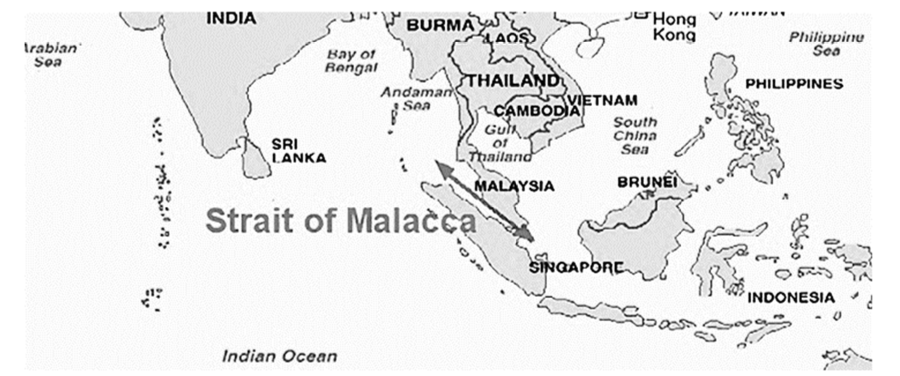
- STRATEGIC IMPORTANCE OF STRAIT OF MALACCA - Strait of Malacca is the shortest transportation route between the Far East and Indian Ocean. - Approximately 60 percent of the world’s maritime transport passes through the Strait of Malacca - The Strait of Malacca is on the transport route of approximately 25 percent of the oil transported between the Middle East and Asia. - With the increase in the population and wealth of China and other regional powers, this ratio is increasing steadily. - The Strait of Malacca plays a key geographical role for the entire Indo-Pacific region. For this reason, many countries in the region, including China and even the USA, are dependent on the Strait of Malacca - FOR INDIA - The main strategy regarding the Strait of Malacca relates to the strait becoming a gateway to its “East View Policy”. - In addition, India attaches importance to the Strait of Malacca at the point of developing bilateral and regional relations through various cooperation mechanisms such as the Association of Southeast Asian Nations (ASEAN) Regional Forum. - FOR CHINA - China’s disadvantage in high seas becomes all the graver in the South China Sea where China is fighting six countries. - Eighty per cent of China’s oil imports come through the Malacca Strait. It is also the route for a considerable amount of Chinese trade. - According to an estimate, China’s shipping costs could increase by more than $64 million if the Strait of Malacca is closed for even a week, another estimate says alternative routes could cost Beijing anywhere between $84 to 220 billion a year. - China knows the Indian navy eyes Chinese SLOCs [sea lines of communication] through the Malacca Strait as its ‘Achilles heel’. - A detour through the Sunda or Lombok Straits will not ensure complete security for China’s strategic commodity trade because, ultimately, Chinese SLOCs traverse near the Indian peninsula - WHY MIGHT STRATEGY OF BLOCKING NOT WORK FOR INDIA? - Impact on Allies - The same lanes serve India’s friends and partners, both from the West and the East, such as Japan. A wholesale blockade of shipments from the Indian side of the strait would create as many challenges for such countries as it would for China. Tokyo, for instance, is just as reliant on oil traveling through the Strait of Malacca as China is. For Saudi Arabia, a country with which India also enjoys good relations, shipments of oil to China, Japan, and South Korea through the same lanes constitute a large part of total crude exports. - China’s Administrative Actions - China could temporarily block at least parts of its exports to India (on which New Delhi relies much more than Beijing relies on imports from India), by simple administrative decisions, without resorting to blocking cargo ships on waters with a navy. - Chinese Naval Presence - The Chinese navy may build the capacity, to an India-bound ship in waters closer to Djibouti. The same may one day be true for the Chinese presence in Pakistan. - Shared Sea Control - Fifty percent of India’s trade now goes through the Malacca and Singapore Straits and complete control over wider waters is usually not a dominion of one power. India and China, “in their respective regions cannot unilaterally acquire the sea control necessary to secure sea lines of communication. - Alternative Routes - China is exploring is Northern Sea Route in the Arctic which could create a ‘Polar Silk Road.’ The importance of this is underlined by China’s 2018 Arctic Policy. It asserts, “Geographically, China is a “Near-Arctic State”, one of the continental States that are closest to the Arctic Circle.” - WAY FORWARD - Focus on multilateral organisation and rules-based order as promoted under UNCLOS and the UN charter. - Nurture new partnership with like-minded countries. For example, with countries of South China sea which have maritime disputes with China to promote free, open and rules based maritime order. - To continue develop its own partnership (under necklace of diamonds) for example on lines of Changi naval base in Indonesia, Sabang base, Duqm port access etc. - Expansion of partnership under QUAD to new level with possible expansion through democratic countries like UK and FRANCE who have large naval strength and access to extra-territorial jurisdiction under them. (Ex. Reunion Island and Diego Garcia). - 10. FIPIC (FORUM FOR INDIA PACIFIC ISLANDS COOPERATION) - PM Modi during the recent FIPIC summit communicated that Small Island nations of the Pacific Ocean are in fact “large ocean states”, highlighting the importance of the 14 members of the Forum for India Pacific Islands Cooperation (FIPIC). He also spoke in favour of free and open Indo-Pacific region and focused on India’s commitment to assist the development goals of the member-countries. - PM also highlighted the close cooperation by explaining Climate change, natural calamities, poverty and famine already existed but now new challenges are emerging as supply chains of food, fuel fertilizer and pharma are facing hurdles. Those we thought were reliable, we came to know they were not standing with us. In this time of difficulty, the old saying that a friend in need is a friend indeed has been proved. From vaccines to medicines, wheat and sugar, India has supplied the countries that needed the items - He was also conferred the Grand Companion of the Order of Logohu (GCL), the highest civilian award of Papua New Guinea. - PM Modi further unveiled a comprehensive 12-step initiative aimed at advancing India's collaborations with the countries in the Pacific region which included FIPIC SME Development Project, Solar project for Government buildings, provide desalination units for drinking water, Supply Sea ambulances, set up dialysis units, set up of 24x7 emergency helpline, set up of Jan Aushadi Kendras, Set up Yoga centres - At the same time members of the FIPIC highlighted that they are victims of global power play and they want India to advocate for them and sit in those meetings,”. They also urged India to serve as the voice of the Global South in the G-7 and the G-20. - The recent visit of PM Modi to Papua New Guinea highlights the growing strategic significance of the Pacific Island nations, which have also received attention from China, with the country having signed a security agreement last year with the Solomon Islands. - INDIA AND THE PACIFIC ISLAND NATIONS - Historically, India’s interaction with the region goes back to the colonial era, in the early 19th century when Indian workers were taken to the region, to work as indentured plantation labourers, most of whom settled there, particularly in Fiji and PNG. However, in the post-colonial era until recently the region did not find much significance in India’s foreign policy. - In the recent times with the changing geopolitical scenario and strategic and economic compulsions have driven India to refresh and redesign its Pacific policy. - India's involvement with these 14 nations aligns with its Act East Policy, and the country has primarily fostered its relationships with them through developmental aid as part of South-South Cooperation. - The Pacific Island Countries (PICs) with their resource rich Exclusive Economic Zones (EEZs) can be attractive sources of natural and mineral resources like LNG and hydrocarbons to fuel India’s growing economy and can also provide new markets for its products. Some of the PICs have EEZs that are larger than the landmass and EEZ of India taken together. - Further India with its rising naval capabilities begins to look beyond the east of Malacca, the PIC’s would become inevitably significant in India’s broader maritime strategy. - However, India’s interaction with the PICs still largely revolves around its engagement with Fiji and PNG, mainly driven by the presence of sizeable Indian Diaspora - Nearly 40 percent of Fiji’s population is of Indian origin and about 3000 Indians live in PNG. - Between 1879–1916, over 60,000 Indians were brought to Fiji as indentured laborers. Over generations, they became an integral part of Fiji’s population. Today, Indo-Fijians make up nearly 40% of Fiji’s population, engaged in agriculture, business, and civil services. - In terms of institutional engagements, India participates in the Pacific Island Forum (PIF) as one of the key dialogue partners of the Forum. - The most important development in facilitating India’s interaction with the PICs in recent years has been the formation of FIPIC. - In 2019 PM Modi announced US$12 million grant (US$ 1 million to each PSIDS) towards the implementation of high impact developmental project in their choice - There was also announcement made for a concessional Line of Credit of US$150 million which can be availed by these countries for undertaking solar, renewable energy and climate-related projects based on their requirements. - An ‘India-Pacific Islands Sustainable Development Conference’ was also organized in Fiji 2017. The conference focused on discussing the issues including the blue economy, adaptation-mitigation practices for climate change, disaster preparedness and health - In 2017, India launched Climate Early Warning Systems in seven PICs. India has regularly aided in these counties to deal with consequences of frequent cyclones like the relief and rehabilitation grant was provided when Tropical Cyclone Hola hit Vanuatu in 2018. - India has also offered a Line of Credit set up a pharmaceutical manufacturing plant and the distribution centre in the Pacific Island region for access to affordable drug and has - Further, India has provided financial assistance for the Small and Medium Enterprise (SME) sector in these countries, helping many small-scale entrepreneurs to develop their own business. - At this moment, total annual trade of about $300 million between the Indian and Pacific Island countries, whereas exports are around $200 million and imports are around $100 million. - RECENT DEVELOPMENTS IN THE REGION - Located between the US, China and Australia, the Pacific Island countries hold strategic importance for security and defence. The US has long maintained influence and a military presence in the Pacific region. Over the last decade, China has focused on strengthening its ties in Pacific through increased aid development, diplomacy and security cooperation. - The area gained prominence when in 2022, Solomon Islands signed a security pact sparking international concern over the possibility of Beijing building its first military base in the region. - China has also signed off on a variety of smaller bilateral agreements during the same tour. To counter the move, newly appointed Australian Foreign Minister, immediately travelled to Fiji, Samoa and Tonga to shore up Australian diplomatic interests in Oceania - ISOLATION OF TAIWAN: - Strategist are of the opinion that China would use the island countries to further isolate Taiwan from the diplomatic support it receives from the region. - Several countries in Oceania (The Marshall Islands, Nauru, Palau, and Tuvalu) recognize Taiwan as a sovereign country. Chinese outreach and development manoeuvrings could therefore help them reduce regional support for Taiwanese independence. - As a testimony to this Honiara has recently cut ties with Taiwan and followed Beijing’s line on the “One China” policy. The “Inter-governmental Framework Agreement on Security Cooperation” between Beijing-Honiara is a culmination of these efforts. - ISOLATION OF AUSTRALIA: - Increased Chinese influence in the region could lead to more overseas military bases being built, and could lead to Australia, a vital Pacific ally for the United States, to be isolated, cutting them from supply lines from overseas. - THE ZERO-SUM GAME IN PACIFIC: - A zero-sum game is a concept from game theory and economics where one participant’s gain is exactly balanced by another participant’s loss. In other words, the total “sum” of gains and losses is zero. - China’s engagement with South Pacific is about increasing its influence and about diminishing American and Australian influence. It’s a zero-sum game. Australia has a security cooperation agreement with Honiara and is a preferred security provider. Australia went from being a “key security provider” to becoming “one of the options” to seek out. - GREAT GAME IN PACIFIC: - The US’ posture and initiatives in Indo-Pacific are also worrying China. US’ Indo-Pacific strategy outlines that it is keen to focus on “every corner of the region including the Pacific Islands. Further the formation of Quad and US’ Indo-Pacific strategy have worried China, so this game of influence will further intensify. - REGIONAL ECONOMICS: - The Pacific region is also an important route to transport products and natural resources. Further the exports from Australia (as Australia supplies critical minerals like that of iron ore, coal, and raw cotton and exports to important allies like Australia and other countries like New Zealand pass through this sea area. - CLIMATE HAZARDS: - Many Pacific Island nations are worried of the impact of climate change and rising sea levels, which pose an immediate existential threat. In fact, the Fijian Defence Minister, in the recent Shangri-La Dialogues that the greatest threat to the region is not a conflict between China and the U.S., but rather the geopolitical effects of climate change. - CONCLUSION - As two geopolitical superpowers start to compete for political dominance in the region, the region now risks being dragged into conflicts, being used as pawns in broader global ambitions, and at the worst, could see themselves as the site of an armed conflict - ABOUT FIPIFC - The Forum for India–Pacific Islands Cooperation (FIPIC) was launched in 2014. - FIPIC includes 14 of the island countries – Cook Islands, Fiji, Kiribati, Marshall Islands, Micronesia, Nauru, Niue, Palau, Papua New Guinea, Samoa, Solomon Islands, Tonga, Tuvalu, and Vanuatu - Objectives - Provide necessary information and facilitation regarding prospects of Trade and Investment - Facilitate meetings between the concerned businessmen from both sides - Exchange of business delegations between India and Pacific Islands Countries - Online & Offline Match Making Services - Organising Events / Trade Fairs - 11. QUAD SUMMIT - The second in-person leaders’ meeting of the Quad (Quadrilateral Security Dialogue) took place in Japan, signaling a shift from a strategic and theoretical grouping to a more focused framework addressing specific areas like Covid, technology, climate change, infrastructure, space, and cybersecurity. - RELEVANCE OF THE RECENT MEETING - Overlooked differences: - The joint statement avoided mentioning the Russia-Ukraine war, despite differing stances among member countries (India’s neutrality vs. others’ condemnation of Russia). - Reassurance of US to Eastern Partners: - US participation underscores its commitment to the Indo-Pacific despite its focus on the European conflict. - Indirectly calling out Chinese overtures: - Without naming China, the statement opposed coercive actions, unilateral changes to the status quo, dangerous use of coast guard vessels, maritime militia, and disruptions to offshore resource exploitation. - Indo-Pacific Economic Framework (IPEF): - Launched with participation from 7 of 10 ASEAN countries and 11 of 15 RCEP members, it highlights a US-led economic strategy to counter China’s influence. - BROAD AREAS OF AGREEMENT - Strategic: - Non-military arrangement, distinct from AUKUS (a military partnership with the US, UK, and Australia) and Malabar exercises (same members but not under Quad). - Indo-Pacific Partnership for Maritime Domain Awareness (IPMDA): - Collates satellite imagery from centers in India, Singapore, Vanuatu, and Solomon Islands to track dark shipping, piracy, and support disaster relief in the Indian Ocean, Southeast Asia, and Pacific Ocean. - Quad Cybersecurity Partnership: - Enhanced coordination on cybersecurity and space observation programs with information sharing. - Infrastructure: - Commitment to provide over $50 billion in infrastructure assistance and investment in the Indo-Pacific over the next five years. - COVID and Health: - Continued vaccine distribution, with 265 million of the promised 1.2 billion doses delivered so far. - Critical Technologies: - MoU on 5G Supplier Diversification. - Common Statement of Principles on Critical Technology Supply Chains for semiconductors. - Cooperation on Open RAN (Radio Access Networks). - LIMITATIONS OF QUAD - Infrastructure funding ($50 billion over five years) is modest compared to US aid to Ukraine ($54 billion in three months). - IPEF is a framework, not a trade deal, with details yet to be finalized, limiting its challenge to CPTPP or RCEP. - No Quad-level military arrangements, though rhetoric focuses on countering China in the South China Sea. - Ocean data sharing, space, and cyberwarfare initiatives are coordination-based, not new funded projects. - US-funded vaccine facility has not produced Quad vaccines; Johnson & Johnson, mentioned in the joint statement, lacks indemnity in India and has limited US authorization. - India’s differing stance on Russia’s aggression creates misalignment. - Quad avoids directly naming China, reflecting cautious diplomacy. - On Taiwan, India did not join other Quad members in supporting Taiwan’s observer status at the World Health Assembly. - Parallel arrangements like AUKUS and ‘Partners in the Blue Pacific’ (US, Australia, New Zealand, Japan, UK) may dilute Quad’s primacy in the Indo-Pacific. - 12. INDO-PACIFIC ECONOMIC FRAMEWORK (IPEF) - Launched at the 2022 Quad Summit in Japan, the IPEF aims to boost economic collaboration in the Indo-Pacific, countering China’s economic influence amid the US focus on the Ukraine crisis. India participates in all pillars except trade, due to its reluctance to include labor, environmental, and investment issues in trade agreements. - CONTEXT OF FORMATION - US withdrawal from the Trans-Pacific Partnership (TPP) under Trump raised concerns about the lack of a US economic strategy to counter China’s dominance in the region. - China’s influence in RCEP and its application to join CPTPP (TPP’s successor) prompted the US to project IPEF as a vehicle for economic re-engagement with East and Southeast Asia. - Announced by the US President at the October 2021 East Asia Summit and launched at the 2022 Quad Summit. - ASPECTS OF IPEF - Four Pillars: 1. Trade 2. Supply chain resilience 3. Clean energy and decarbonization 4. Taxes and anti-corruption measures - Objective: - To advance resilience, sustainability, inclusiveness, economic growth, fairness, and competitiveness in member economies. - Members: - Australia, Brunei, India, Indonesia, Japan, South Korea, Malaysia, New Zealand, Philippines, Singapore, Thailand, Vietnam (representing 40% of global GDP). - Membership: - Countries can choose to join initiatives under any pillar but must adhere to all commitments within selected pillars. - Framework Operation: - US Trade Representative (USTR) leads the trade pillar. - US Department of Commerce oversees supply chain resilience, clean energy, decarbonization, and taxes/anti-corruption measures. - Key Areas of Cooperation: 1. Trade Pillar: - Establish high-standard, inclusive, free, and fair trade commitments to boost economic activity and investments. 2. Digital Trade Pillar: - Covers online goods/services, data flows for global value chains, and smart manufacturing. 3. Supply Chain Resilience Pillar: - Secures access to raw materials, semiconductors, critical minerals, and clean energy tech for crisis response and business continuity. 4. Clean Energy, Decarbonization, and Infrastructure Pillar: - Supports Paris Agreement goals through technical assistance, finance mobilization, and sustainable infrastructure development. 5. Tax and Anti-Corruption Pillar: - Promotes fair competition via robust tax, anti-money laundering, and anti-bribery regimes to curb tax evasion and corruption. - Pros: - A new US vehicle for economic engagement in East and Southeast Asia. - Counters China-dominated RCEP, CPTPP, and DEPA (Chile, New Zealand, Singapore). - Supports US companies moving manufacturing from China. - Significant participation from 7 ASEAN and 11 RCEP countries. - First multilateral effort to enhance supply chain resilience, easing global inflationary pressures and mitigating disruptions in key materials and semiconductors. - Challenges: - Not a traditional trade agreement; lacks market access commitments like tariff reductions. - Described as an “administrative arrangement,” not requiring Congressional approval. - Security, not economics, may drive US engagement in the region. - Exclusion of Taiwan, despite its economic merit, reflects geopolitical caution toward China. - Concerns for India: - Free and open data flows under the digital economy pillar may limit India’s ability to regulate data domestically. - Reluctance to align tax policies with global standards to curb tax avoidance. - Labor standards and non-tariff barriers remain contentious for India. - 13. ONE-CHINA POLICY & TAIWAN ISSUE - The US House Speaker’s visit to Taiwan was opposed by China, which viewed it as compromising the One-China Policy, under which the US and much of the world recognize China’s sovereign rights over Taiwan. - BACKGROUND - People’s Republic of China (PRC) is mainland China; Taiwan is the Republic of China (RoC). - RoC was declared in 1911 under Dr. Sun Yat-sen’s Kuomintang (KMT) Party. - Civil war between KMT and Chinese Communist Party (CCP) led to CCP victory in 1949, with KMT retreating to Taiwan and CCP establishing PRC. - PRC claims Taiwan must be reunified with the mainland. - Until 1971, RoC was recognized as “China” at the UN; US later recognized PRC, subscribing to the One-China Policy, acknowledging one legitimate Chinese government. - Taiwan is excluded from international organizations requiring sovereignty. - Ukraine war, China’s rise, and US-led efforts to counter China in the Indo-Pacific have increased focus on Taiwan. - Scholars note the US has adopted an ambiguous stance, diluting its One-China Policy commitment. - IMPORTANCE OF TAIWAN - A leading manufacturer of silicon chips (e.g., TSMC), critical to the global electronics industry. - Control of Taiwan would expand China’s Exclusive Economic Zone (EEZ), granting access to marine resources. - Enhances Chinese Navy’s reach in the Indo-Pacific. - Taiwan is a core national interest for China. - A key manufacturing and industrial hub in East Asia. - INDIA AND TAIWAN - India adheres to the One-China Policy regarding Taiwan and Hong Kong but faces calls to reconsider due to strained India-China relations post-Galwan Valley clash. - ONE-CHINA POLICY AND INDIA - Post-1949, the CCP claimed Taiwan and Tibet, occupying Tibet by 1950. - India recognized PRC in 1950 and acknowledged Chinese control of Tibet via the 1954 Sino-Indian Trade Agreement. - India’s support for the One-China Policy was inconsistent until 2003, when PM Vajpayee’s joint declaration with China recognized Tibet as part of PRC. - China claims Arunachal Pradesh as South Tibet, complicating relations. - INDIA-TAIWAN RELATIONS - No official diplomatic relations; ties improved since the 1990s via India’s Look East Policy. - India-Taipei Association (1995) promotes non-governmental interactions. - Bilateral Investment Promotion & Protection Agreement signed in 2002. - Trade volume reached $7 billion in 2019, growing 20% annually. - Taiwanese exports to India include integrated circuits, machinery, and electronics. - India seeks Taiwanese investment in hi-tech and labor-intensive industries; over 80 Taiwanese companies operate in India. - CHANGE IN STANCE OF INDIA - In 2020, Indian MPs virtually attended Taiwan President Tsai’s swearing-in, praising Taiwanese democracy. - Appointment of a senior diplomat as envoy to Taiwan in 2020 signaled stronger ties. - India’s Ministry of External Affairs (MEA) dismissed China’s objection to Indian media covering Taiwan’s National Day, avoiding reiteration of the One-China Policy. - China’s claims on Arunachal Pradesh and Ladakh, and its actions in Gilgit-Baltistan, challenge India’s sovereignty. - Taiwanese companies are shifting manufacturing to India, boosting employment and economic growth. - ARGUMENTS FOR RECONSIDERING ONE-CHINA POLICY - China does not follow a “One-India Policy,” rejecting Ladakh’s Union Territory status and building roads in disputed Gilgit-Baltistan. - China objects to Indian leaders’ visits to Arunachal Pradesh and blocks foreign funding for its development. - China has supported insurgencies in India’s Northeast. - Reconsidering the policy could strengthen India’s strategic position amid rising tensions with China. - 14. SOUTH-SOUTH COOPERATION - Highlighted as a priority during India’s G20 Presidency, South-South Cooperation involves collaboration among developing and least developed countries in economic, political, cultural, environmental, and technical domains. - The “North-South” divide reflects social, economic, and political differences between developed (North) and developing (South) countries, not geographical location. - NEED FOR SOUTH-SOUTH COOPERATION - Facilitates innovative knowledge exchange, technology transfer, emergency response, and livelihood recovery. - Southern countries contribute over half of recent global economic growth. - Intra-South trade accounts for over 25% of world trade. - Southern foreign direct investment represents a third of global flows. - Remittances to low- and middle-income countries reached $786 billion, lifting millions out of poverty. - Essential for achieving the 2030 Agenda for Sustainable Development. - ISSUES IN SOUTH-SOUTH COOPERATION - Stronger Southern countries (e.g., China) exploit weaker partners. - Resource extraction often disregards environmental and public health impacts. - Misuse of financial assistance under the pretext of social projects. - Non-interference principle limits addressing local conflicts. - North-oriented mindset and lingering US hegemony. - Mutual suspicions, rivalries, and lack of collaborative experience. - Global South lacks a unified agenda due to varying wealth, power, and needs. - Institutions like NAM and NIEO are largely dysfunctional. - Regional competition and limited financial capacity. - INDIA’S EFFORTS TOWARDS SOUTH-SOUTH COOPERATION - India’s economic growth and openness make it a key global player. - Supplies generic medicines to African countries and expands trade/investment. - Vaccine Maitri campaign provided vaccines during Covid-19, unlike many Northern countries. - India’s influence in WTO has risen, advocating for developing countries (e.g., TRIPS waiver). - Lines of credit and ITEC program support economic flows and technical training. - Grant assistance to Afghanistan, Bangladesh, Bhutan, Maldives, Myanmar, Nepal, and Sri Lanka for infrastructure, hydroelectricity, and power transmission. - Advocates for least developed countries on climate change, emphasizing common but differentiated responsibilities. - Established India-UN Development Partnership Fund ($150 million). - CONCLUSION - India should avoid pursuing a global trade union for the South and instead act as a bridge between North and South, focusing on practical outcomes. - As a “Southwestern power,” India balances partnerships with the US/Europe and advocacy for the Global South. - 15. VOICE OF GLOBAL SOUTH SUMMIT - Hosted by India on January 12-13, 2023, under the theme “Unity of Voice, Unity of Purpose,” the summit brought together 125 countries (29 from Latin America & Caribbean, 47 from Africa, 7 from Europe, 31 from Asia, 11 from Oceania) to share perspectives and priorities. - Represents a shift from India’s focus on global leadership (UNSC P5, G7) to addressing inequities affecting the developing world. - Inspired by PM Modi’s vision of “Sabka Saath, Sabka Vikas, Sabka Vishwas, Sabka Prayas” and India’s philosophy of Vasudhaiva Kutumbakam (the world is one family). - PM Modi called for 4Rs: - Respond, Recognize, Respect, and Reform to address developing world priorities. - INITIATIVES ANNOUNCED BY INDIA - Aarogya Maitri - Global South Centre of Excellence - Global South Science and Technology Initiative - Global South Young Diplomats Forum - Global South Scholarships - INDIA AND GLOBAL SOUTH - India has historically championed the developing world via NAM and NIEO. - Faces common challenges inadequate representation in global bodies, climate change vulnerability, supply chain disruptions, and terrorism. - Challenges to India’s leadership of the Global South: 1. Competition from China: - China positions itself as a development partner but conflicts with India hinder a unified agenda. 2. China’s Neo-colonialism: - BRI and Special Economic Zones are seen as exploitative. 3. India’s closeness to the West: - Partnerships like Quad and IPEF may compromise India’s Global South advocacy. 4. Big brother attitude: - Suspicion from neighbors like Pakistan and Nepal limits regional leadership. 5. Pursuit of regional/bilateral agendas: - Focus on SCO, BIMSTEC, and bilateral trade agreements slows multilateral reform efforts. 6. Anti-Western perception: - Third-world solidarity is viewed as anti-Western by developed nations. 7. Climate conflicts: - Small island nations demand stricter emission limits, clashing with India’s significant emissions. - CONCLUSION - The summit positions India as a vital player in global forums like G20, advocating for the Global South. - India should balance national interests with global responsibilities, leveraging its economic and soft power to bridge the North-South divide. - CHAPTER 3 - EXTENDED NEIGHBOURHOOD - 1. WEST ASIA AND INDIA - Comments by spokespersons of BJP on Islam and Prophet led to a diplomatic backlash from Gulf countries. As a response to this, ruling party sacked the spokespersons, highlighting importance that India accords to West Asian countries. - IMPORTANCE OF GULF REGION - Ten countries of Gulf region i.e., Saudi Arabia, Qatar, Iran, Iraq, Bahrain, Kuwait, UAE, Oman, Jordan and Yemen, together account for one-fifth of world’s Muslim population and are strongest voices of Muslim world. - India shares good relations with most countries in the Gulf. India has enjoyed centuries of good relations with countries like Iran, while smaller gas-rich nation Qatar is one of India’s closest allies in the region. - Pillars of India’s relationship with Gulf region: - Energy security by trade in oil and gas, and trade, huge number of Indians who work in the Gulf countries, and the remittance they send back home. - IMPORTANCE OF WEST ASIA FOR INDIA - Oil and Gas - Middle east & north Africa region meet a major share of India’s energy needs contributing over 60% of India’s total imports of crude oil and 85% of India’s LNG requirements. - In 2021-2022, largest exporter of oil to India was Iraq, with a share of 22% from 9% in 2009-2010. - Saudi Arabia has accounts for 17-18% of Indian oil imports for a decade. - Kuwait & UAE remain major oil exporters to India. - Iran used to be 2nd largest oil exporter to India in 2009-2010, its share went down to less than 1% in 2020-21, due to US sanctions. - Diaspora - There are around 8-9 million Indians in West Asia. UAE (3.4 million), Saudi Arabia (2.6 million); Kuwait (1 million). - These include managers, doctors, technicians, engineers, IT experts, chartered accountants, bankers, workers, and domestic help. In these countries, Indians hold first rank in number of expatriates. They are crucial for India’s soft power. - A vast majority of Indian community hails from Kerala. - Remittances - Gulf expatriate has a significant impact upon Indian economy, through inward remittances. - India received over $83 billion in remittances in 2020 (World Bank). Most remittances are from West Indian diaspora. India receives largest remittances from UAE. - Remittances account for 3% of India’s GDP. These remittances support many families in India especially in Kerala. - In 2018, RBI said Gulf Cooperation Council (GCC) countries accounted for more than 50% of total $69 billion remittances received by India in 2016-17. - UAE accounted for 26.9%, Saudi Arabia for 11.6%, Qatar for 6.4%, Kuwait for 5.5% & Oman for 3%. Beyond the Gulf Cooperation Council (GCC), remittances from the US accounted for 22.9%, second only to the UAE. - TRADE WITH WEST ASIAN NATIONS - United Arab Emirates (UAE) - UAE was India’s third largest trading partner in 2021-2022 and 2nd largest for both exports ($28 billion) and imports ($45 billion) when counted individually. - In terms of total trade volume, UAE ($72.9 billion) was behind USA ($1.19 trillion) and China ($1.15 trillion). - UAE accounted for 6.6% of India’s total exports and 7.3% of imports in last financial year, up 68.4% since the previous year when international trade was impacted by the pandemic. - Saudi Arabia - At a total volume of $42.9 billion in 2021-22, Saudi Arabia was India’s fourth largest trading partner. - While exports were low at $8.76 billion (2.07% of India’s total exports), imports from Saudi Arabia were the fourth largest at $34.1 billion (7%), up 50% from the previous year. Most of it was crude oil. - Iraq - India’s fifth largest trading partner in 2021-22 at $34.3 billion. - Qatar - Total trade was $15 billion, accounting for just 1.4% of India’s total trade, but the country is India’s most important supplier of natural gas. - Qatar accounts for 41% of India’s total natural gas imports. UAE accounts for another 11%. - Investment - UAE-India Infrastructure Investment Fund aims to invest $75 billion to support investment in India's infrastructure, especially in railways, ports, roads, airports and industrial corridors and parks. Recently UAE has announced an investment of $7 billion in food corridor in India. - Saudi Arabia has pledged an investment of $100 billion in India in sectors such as petrochemicals, infrastructure, manufacturing, refining, and mining. - Look West Policy - India’s Look West Policy has been complemented by Gulf Cooperation Council (GCC) member states’ "Look East” policy, with a focus on India and China, and other countries to their East. - Security - Crucial for terrorism. - Iraq is home of Islamic State. Islamic State-Khorasan is a threat to India. - Taliban was given space for political office by Qatar. - Choke points such as Bab-al-Mandeb & Gulf of Hormuz are critical for energy security. - Maritime piracy off the Somali Coast. India has played crucial role in addressing piracy in the region. (India is a part of Combined Maritime Force - DOMESTIC POLITICS & FOREIGN POLICY - India’s image of religious tolerant and pluralistic democracy (a source of soft power) takes backseat. - This issue had foreign policy implications with west Asian region with which India has had good relations such India’s diplomatic and economic interests that might suffer in the region. - Aligning with extremism is counterproductive. Ex. India’s support to LTTE in Sri Lanka which deteriorated India’s relations with Sri Lanka and led to assassination of former PM Rajiv Gandhi. - Despite some countries being members of Organisation of Islamic countries, they have never taken side with the Pakistan’s version about India. - Most West Asian countries are theocratic states, they are more sensitive to religious issues. The region’s geo-politics has underlying religious faultlines. Thus, India needs to be sensitive and should create an environment which does not impact its relations with these nations. - Government and diplomatic establishment can never underestimate the power of hurt sentiment, and religious sensitivities in foreign policy, or the speed of social media. - India needs to pay importance to the lasting repercussions of such incidents in the neighborhood. For ex. Citizenship Amendment Act saw protests in Bangladesh and Afghanistan. - Friendly neighboring countries like Maldives and Bangladesh also saw protests against the remarks. - 2. LOOK WEST POLICY - INDIA'S STRATEGY TOWARDS WEST ASIA - India follows “Look West Policy” towards West Asia. - Mainly focussed on energy security owing to intractable political fault lines. - Ensuring the stability and security of Persian Gulf region. - For a long time, India had to balance its relations with Israel and the Arab world. - India's Policy is marked by the continuation of India’s traditional diplomatic line of “non-interference” in the internal affairs. - In line with this, India has been pursuing the idea of ‘strategic autonomy' in the region with a strong emphasis on Bilateralism. - Deepening of India’s security ties with its Gulf Arab partners especially as India emerges a net-security provider for the region in curbing sea-borne piracy in Western Indian Ocean and Disaster relief. - India has walked a tight rope in intra- Arab disputes, carefully weighing its interests. - IMPORTANCE OF LOOK WEST POLICY - Look West policy has perceptibly changed India’s position as a credible partner in the region. - The policy has been successful across multiple rivalries of region- Saudi Arabia and Iran, Turkey and Egypt, Qatar and UAE and Israel and Palestine with diplomatic acumen and sustained strategic prudence. - “Abraham Accord” between the two allies- Israel and UAE is an endorsement for the balanced “Look West” policy of India for peace and stability in the region. - US strategic shift to Indo-pacific and growing Chinese expansion in the region has created a new Great power competition in the region. - India needs to pursue the path of Multilateralism with sustained rounds of diplomatic outreach to the favourable social and political constituencies in the region and prudently use the leverages with Russia and USA to position itself as a credible power in the region in the emerging Asian Century World Order. - Transformation of its policy choices in the region - The Israel policy and the growing strategic proximity and security cooperation is the perceptible success of the new vision and pursuit of the “Look West” policy as it has managed this bold pragmatic step without compromising its commitment to the Palestine issue. - This new diplomatic balance was proved with India’s voting with Palestine against the US recognition of Jerusalem as the capital of Israel in the United Nations and maintaining unabated momentum of India-Israel partnership. - 3. WEST ASIA - The weekend meeting in Riyadh between Saudi Crown Prince Mohammed bin Salman and the national security advisers of the US, UAE, and India underlines the growing strategic convergence between Delhi and Washington in the Gulf. It also highlights India’s new possibilities in the Arabian Peninsula. - NEW DEVELOPMENT IN THE MIDDLE EAST - The new India-US warmth on the Gulf is a major departure from the traditional approaches to Middle East in both India and the US. - In India, one of the entrenched principles of the Nehruvian foreign policy was the proposition that Delhi must either oppose Washington or keep its distance from it in Middle East. This self-imposed ideological taboo was broken with the formation of a four-nation grouping unveiled in 2021 called I2U2 that brought the US, India, Israel, and the UAE together. - Joining hands with the US was not the only taboo that current foreign policy dispensation discarded. It also rejected the notion that India can’t be visibly friendly to Israel. - The move has transformed India’s uneasy relations with the two Arabian kingdoms, Saudi Arabia and the UAE, into solid strategic partnerships. As India is now doubling down with a new quadrilateral with the US, UAE, and Saudi Arabia. - Emerging Arabia opens enormous new possibilities for India’s economic growth and Delhi’s productive involvement in promoting connectivity and security within Arabia and between it and the abutting regions including Africa, the Middle East, Eastern Mediterranean and the Subcontinent. - The engagement would also help India overcome the dangerous forces of violent religious extremism within the Subcontinent. The new opportunities in Arabia and the emerging possibilities for partnership with the US and the West position India to rapidly elevate its own standing in the region. - Further the US is not the only Western power that India is beginning to work with in the Gulf. France has emerged as an important partner in the Gulf and the Western Indian Ocean. India now has a trilateral dialogue with Abu Dhabi and Paris - It is not only India that is shedding its “anti-Western” lens in the Middle East, BUT the US is ALSO leading the West to discard its pro-Pakistan bias in thinking about the relationship between the Subcontinent and the Gulf. Under Nehruvian foreign policy India withdrew from its historic geopolitical role in the Middle East, Pakistan became the lynchpin of the Anglo-American strategy to secure the “wells of (oil) power” in the Gulf. - However, Pakistan’s continuing strategic decline makes it a lot less relevant to the changing geopolitics of the Gulf. Once viewed as a moderate Muslim nation with prospects for economic growth, it has now locked itself into a self-made trap of violent religious extremism and its political elite is utterly unprepared to lift the nation economically. - Pakistan has drifted too close to China. As the US-China confrontation sharpens, Islamabad is tempted to align with China and Russia in the region and the scholars believe that the current government might prefer to boost its “all-weather partnership” with Beijing. - UNDERSTANDING THE CHANGING REGIONAL DYNAMICS - The US is not about to abandon the Middle East. But it certainly is recalibrating its regional strategy. - US National Security Adviser Jake Sullivan highlighted several elements of the new US approach. Viewed from Delhi, two of them stand out. - One was about building new partnerships, including with Delhi - Second was about the integration of the Arabian Peninsula into India and the world. - It is also about the rising power of the Arabian Peninsula, especially Saudi Arabia and the UAE. The Gulf kingdoms have accumulated massive financial capital and embarked on an ambitious economic transformation that will reduce their dependence on oil over the long term. - They have also begun to diversify their strategic partnerships, develop nationalism rather than religion as the political foundation for their states, promote religious tolerance at home, and initiate social reform. - CONCLUSION - The momentous change in intra-regional and international relations of the Arabian Peninsula, India has inevitably become part of the new regional calculus. Seizing the new strategic opportunities for India in the Gulf would, however, involve the long overdue modernisation of Delhi’s strategic discourse on the Gulf and a conscious effort to change the outdated popular narratives on the Arabian Peninsula. - 4. INTERNATIONAL NORTH SOUTH TRANSPORT CORRIDOR - The project was first mooted in 2000 and despite its perceived potential and the keenness shown by key powers, there was little progress on the project’s implementation for years. One of the reasons was the western sanctions on Iran over its nuclear programme. - However, Russia’s February 2022 invasion of Ukraine, after which it was sanctioned by the West, seems to have brought Moscow and Tehran closer, giving a fresh impetus to the NSTC. - In February this year, President Vladimir Putin said in his State of the Nation address that Russia was developing the NSTC, which would open new routes for trade with India, Iran, Pakistan as well as Gulf countries. Recently, Mr. Putin and his Iranian counterpart Ebrahim Raisi virtually participated in a ceremony where both countries signed an agreement to develop the 162-km Rasht-Astara railway, a critical link in the NSTC. -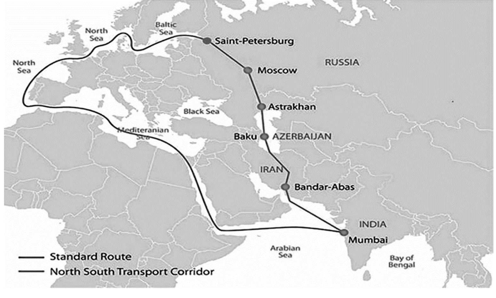
- ABOUT INSCTC - INSTC is a 7,200 km-long multimodal transportation network encompassing sea, road, and rail routes to offer the shortest route of connectivity. - It links the Indian Ocean to the Caspian Sea via the Persian Gulf onwards into Russia and Northern Europe. It is aimed at reducing the carriage cost between India and Russia by about 30 percent and bringing down the transit time by more than half. - It was launched in 2000 with India, Russia, and Iran as its founding members and work on actualizing the corridor began in 2002. - Since then, INSTC membership has expanded to include 10 more countries – Azerbaijan, Armenia, Kazakhstan, Kyrgyzstan, Tajikistan, Turkey, Ukraine, Syria, Belarus, and Oman. Bulgaria has been included as an observer state. The Baltic countries like Latvia and Estonia have also expressed willingness to join the INSTC. - The INSTC spirals across the following corridor: - Central corridor: - It begins from the Jawahar Lal Nehru port in India’s western state of Maharashtra (in the Indian Ocean Region) and connects to the Bandar Abbas port on the Strait of Hormuz. It then passes through the Iranian territory via Nowshahr, Amirabad, and Bandar-e-Anzali, runs along the Caspian Sea to reach the Olya and Astrakhan Ports in Russia. - Western corridor: - It connects the railway network of Azerbaijan to that of Iran via the cross-border nodal points of Astara (Azerbaijan) and Astara (Iran) and further to Jawaharlal Nehru port in India via sea route. - Eastern corridor: - It connects Russia to India through the Central Asian countries of Kazakhstan, Uzbekistan, and Turkmenistan. - BENEFITS - REDUCED COST: - INSTC boasts of the shortest trade route connecting India with Russia. Reports indicate INSTC was 30 percent cheaper and 40 percent shorter than the traditional Suez route, slashing the transit time to an average of 23 days for Europe-bound shipments from the 45-60 days taken by the Suez Canal route. - INCREASED ACCESS: - Cheaper cost of transport will lead to increased competitiveness of Indian exports, opening access to unfulfilled markets. - LOGISTICS HUB: - Under the agreement, Iran and Azerbaijan are expected to develop into transit hubs. In India, Nagpur and Bhiwandi from Maharashtra state are identified as potential logistics hubs. - SUPPLY CHAINS: - The creation of diverse supply chains across Eurasia might surely alter the stereotype of East as the producer and West as the consumer. - INCREASED TRADE VOLUME: - India’s trade with Russia and Central Asian countries highlights that he main reason for low trade with the landlocked Central Asian countries is lack of connectivity, which has now been taken care of with Iran’s Chabahar Port. The INSTC will not only enhance physical connectivity but will also improve knowledge and information sharing mechanisms. - ENERGY AS A COMMODITY: - As India is one of the largest consumers and is dependent on the area to meets its energy demand. - Synchronization of INSTC with Ashgabat Agreement and Organization of the Black Sea Economic Cooperation (BSEC): - Linking INSTC to existing transport initiatives in the Central Asian region like BSEC (Europe-centric) and the Ashgabat Agreement (Central Asia-centric) will expand trade linkages and opportunities in the region. - Potential materialization of free trade agreements (FTAs) in the region: - There have been talks of signing an FTA between India and the Eurasian Economic Union (EAEU): It will provide the much-needed impetus to the trade momentum between different countries in the region. Access to the EAEU nations alone will open India to a market of 173 million people. - Possible synchronization with Baltic, Nordic, and Arctic corridors in the future: - Alongside the North Sea-Baltic Corridor, INSTC may synchronize with the Scandinavian-Mediterranean (ScanMed) Corridor and the planned Arctic Corridor in the future. - CHALLENGES IN MATERIALIZATION - 1. Firstly, Iran wants to increase its role as a transcontinental transit country. Yet the problem is that the infrastructure which remains hampered by US sanctions. There is also a major shortage of transit wagons and relatively poor road infrastructure which makes it difficult to sustain higher levels of traffic. - 2. There are other practical problems such as the lagging construction of 22 tunnels and the construction of 15 special bridges along the corridor in Iran. At the same time, there is no single railway gauge option adopted for the route. The Russian standard of gauge of railways and that in Iran is different. Obviously, this would make the operation of the INSTC less smooth. - 3. The financial situation in both countries remain heavily sanctioned. While the Ukraine conflict continues and Iran’s nuclear negotiations remain stymied, Western restrictions are likely to remain in place. In normal times Russia is arguably the only power which would be able to finance the remaining Rasht-Astara railway section. With the sanctions the prospects seem less promising. - 4. Further tensions are also persistent in Azerbaijan-Russia relations. Amid the Ukraine conflict and Azerbaijan’s increasingly coercive position toward Armenia, Baku’s push to have Russian peacekeeping forces withdrawn from Nagorno-Karabakh by 2025 becomes ever more evident. - 5. Iran is also suspicious about Russia’s strategic goals and interests in the South Caucasus and the Middle East. Even on such issues as the provision of Iranian military drones to Russia, Iranian politicians appears deeply divided. - 5. INDIA–UAE - India signed a Comprehensive Economic Partnership Agreement with UAE. India-UAE CEPA will be second major trade deal after the India-Mauritius CEPA signed in 2021. India is also negotiating FTAs with UK, EU, Australia, Israel, and Canada. In this backdrop, let us understand broader framework of India UAE relations. - BENEFITS OF CEPA TO INDIA - FTA is likely to boost trade between India and UAE from $60 bn to $100bn in next five years. - Greater Market Access for products like - Textiles, apparels, Gems and jewelry. - 80% of India's exports to UAE will become duty free. - Agreement is likely to create 5 lakh jobs in India in Gems and Jewelry, textiles etc. - UAE is a gateway for India’s exports to the larger middle eastern market. - INDIA – UAE RELATIONS - India–UAE relations acquire significance in the backdrop of consistent goals between the two highlighted by Abu Dhabi’s Economic Vision 2030 & India’s priority to extended neighbourhood in its West Asia policy. - Both sides recognize that security of the Gulf & Indian Ocean region are indivisible. They also appreciate the threat posed by non-state violent extremists to their respective interests. - Both are members of the newly formed Middle East Quad (I2U2), which also includes Israel and US. - Large Indian diaspora contributes both cheap and highly skilled workforce to UAE. This skilled workforce is the bedrock of the economy of UAE. - ECONOMIC & GEO-POLITICAL BASIS OF INDIA UAE RELATIONSHIP - UAE Economic Vision 2030: - A long-term economic diversification strategy focused on advancing knowledge industries by building a skilled workforce, world class infrastructure, and an efficient globally integrated business environment. This is necessary for UAE as the gulf economies try to diversify from the oil-based industries. - Investments - UAE’s investments have topped $11 billion, making it the 9th-largest source of FDI in India. - UAE’s sovereign wealth fund sees India as key growth drivers and targets for outward investment. India has proposed a 100% tax exemption from their interest, dividend, and capital gains income in respect of investment made in infrastructure and other select sectors before March 31, 2024. - Security and geo- Political outlook - Both sides recognize that security of the Gulf and the Indian Ocean are indivisible. - Both appreciate the threat posed by non-state violent extremists to their respective interests. - This common understanding provides a basis for dialogue and concrete forms of defense cooperation in maritime security, counterterrorism, and other areas. - Advanced Technology and Knowledge Economy - UAE has stepped up efforts to “invest” in development of knowledge economy by expanding “golden visa” residency permit to attract best minds. - These ten-year visas are granted to doctors, engineers, PhD scholars and specialists in high-end technology fields such as artificial intelligence (AI), Big Data, virology and epidemiology. - Space Cooperation: - Collaboration between UAE Space Agency & India’s ISRO. The two space agencies have developed nanosatellite, Nayif-1 & are likely to work together on Emirates’ Mars Mission. - Defence and security - Desert Eagle bilateral exercises between the Indian Air Force (IAF) and the UAE Air Force (UAE-AF). - Joint naval exercise (Gulf Star-1), which took place in 2018, would lay a strong foundation for maritime security cooperation. - UAE has forbidden Pakistan to use UAE territory for anti-India activities. - UAE has responded with support for Jammu and Kashmir’s re-organization. - UAE has extradited fugitive economic offenders like, Michel India wanted in the Augusta helicopter case. - West Asia Quad post Abraham can further each other economic and strategic cooperation. - CHALLENGES - UAE is part of Organisation of Islamic Cooperation (OIC), which frequently raises the Kashmir Issue. - Dubai has developed as a seat of Underworld and Organised Crime. - It is also a hub of money laundering. - Arab – Iran rivalry poses challenge for balancing India’s relations between UAE and Iran. - 6. INDIA–IRAN - Recently, Iran dropped India from the Chabahar Port and decided to continue with its construction on its own. Iran authorities mentioned the delay in funding as the reason. - The port of Chabahar is located in southeastern Iran in the Gulf of Oman. - It is the only Iranian port with direct access to the ocean. - It will make way for India to bypass Pakistan in transporting goods to Afghanistan using a sea-land route. - It would give momentum to the International North-South Transport Corridor of which both are initial signatories along with Russia. - The development of Chabahar port and its associated infrastructure is beneficial for India in two main ways. One is that it will make it easier to access oil imports from Iran. Another is that it may balance Chinese trade and development projects in Central Asia and the Middle East which are associated with its Belt and Road Initiative (BRI). - Chabahar offers an alternative to China’s own efforts to extend influence in the region, including through its own efforts at improving the port of Gwadar, on the Pakistan side of the border. - ABOUT INDIA-IRAN RELATIONS - India and Iran share close historical ties from the ancient times. Iran is an important nation in India’s neighbourhood and the two countries shared a border until India’s partition and independence. - Iran is important to India as it provides an alternate route of connectivity to Afghanistan and Central Asian republics, in the absence of permission for India to use the land route through Pakistan. - India has been jointly developing Shahid Beheshti terminal at Chabahar port which is crucial for providing much needed sea-access to landlocked Afghanistan and emerged as a commercial transit hub for region, including for Central Asia. - Iran used to be second largest oil exporter to India in 2009-2010, its share went down to less than 1% in 2020-21, due to US sanctions. -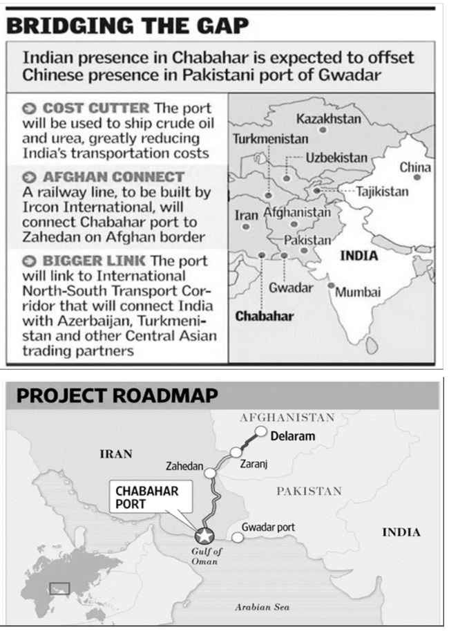
- ISSUES BEYOND BILATERAL IMPACTING RELATIONS - India-Iran relations have witnessed ups and down over the decades, mostly owing to factors that go beyond strictly bilateral issues. - Stoppage of oil imports from Iran after 2019 owing to U.S. sanctions following revocation of Iran nuclear deal. - India’s close relations with Israel have also impacted India’s engagement with Iran. - Iran’s ties with China, including signing a 25-year strategic partnership agreement. - There are other sticky issues like Iran-backed Houthis in Yemen launching drone attacks against Saudi Arabia and UAE, both close partners to India. - Iran criticized abrogation of Article 370 of Indian Constitution, which gave special status to Kashmir. - Iran on its end has not taken kindly to India succumbing to international pressure of sanctions on Iran. - FAVOURABLE CONDITIONS FOR RESET IN TIES - Iran owing to its close relations with Taliban has been an important country for India to engage with Taliban in Afghanistan. - Iran and India have collaborated on connectivity to Afghanistan via the Chabahar port. - Iran nuclear deal is stuck and accordingly sanctions on Iran continue which hamper the crude oil exports to India. - India has stressed exercising its strategic autonomy while importing oil from Russia amid sanctions on Russia due to its war with Ukraine, could explore a similar decision point in Iran, opening a huge potential for trade and cooperation. - CHANGING DYNAMICS IN WEST ASIA - Because of withdrawal of US from West Asia Dynamics are changing in the region. - Despite being key partners of US, Saudi Arabia and UAE have declined to increase oil production to control rising prices in the wake of Ukraine war and reduced supplies from Russia because of Sanctions. - Saudi Arabia and Iran are engaging in talks which has led to ceasefire in Yemen. UAE and Qatar have held talks with Iran. - Abraham Accords signed with Israel give hope towards acceptance of Israel by regional countries as a potential partner. - All these developments work well for India, as it has good relations with Gulf countries, Iran and Israel. - This gives India tremendous opportunity to develop and scale up its cooperation with Iran without fear of losing out on other friends in the region - BENEFITS OF RESET - India may well consider restarting oil imports from Iran. If it starts oil imports, it can encourage other countries to import oil from Iran, thereby bringing down Oil prices. - India and Iran could play a major part in giving INSTC the required boost to reap benefits of resultant trade. The first consignment was sent by a Finnish company via INSTC for first-time connecting Europe with India. - Iran-Oman-India gas pipeline is an ambitious project that has been stuck for a long time. Both have now agreed to develop two gas pipelines and an oil field along their maritime borders. This might lead to finalization of Iran-Oman-India pipeline. This is also important since the ambitious Iran-Pakistan- India pipeline is stuck because of Pakistan. - The sanctions on Iran are being weaponized despite Iran complying with the IAEA protocols. India can play a key role in bringing Iran into the mainstream. - CHALLENGES IN RELATIONSHIP - Despite the opportunities for collaboration there are various challenges that will decide the future course of action. - Sanctions in the backdrop of failure of revival of Iran Nuclear deal pose challenges for India to trade with Iran. - In the wake of concretising Russia-China-Iran axis and the US-Arab- Israel axis, India will have tough choice to make. - Connectivity to Afghanistan via Chabahar port is already under question because of the Taliban’s takeover. - Chinese economic partnership will pose strategic challenges for India’s relations with Iran. - With India becoming a part of I2U2 coalition, it would make the hardliners in Iran skeptical about India. - Slow progress in connectivity projects like INSTC and Chabahar are a cause of concern. - India’s growing military partnership with Israel which is an adversary of Iran. - WAY FORWARD - India and Iran have a lot that can be achieved together. - The assertive diplomacy being practiced by India, emphasizing on standing by its neighbours and friends and is displaying Strategic autonomy to meet its interests. - If India can extend the same vision toward its engagement with Iran, it could open a huge potential of cooperation between these two great nations and civilizations. - India needs to improve its implementation record of foreign infrastructure projects by fast tracking diplomatic talks and timely dispersal of funds. - India needs to find a balance between its diplomatic ties with Iran and U.S.A. An effective and clear arrangement that reduces the impact of US sanctions on Iran on India’s projects needs to be worked out. - Although Iran has proceeded with the construction of rail project, Iran hopes India will help it procure equipment in the second phase of the project. India can use this opportunity to establish productive bureaucratic and diplomatic channels for involvement in the project. - There is a need to look forward toward areas of convergence, where both countries have a mutual understanding of each other’s common interests and further work together to achieve the same. - 7. INDIA–ISRAEL RELATIONS - Diplomatic relations between India and Israel have completed 30 years. The relationship has evolved, with India of late walking a tightrope between its ties with Israel and Palestine. - BACKGROUND - India announced its recognition of Israel in 1950. - Both established diplomatic relations in 1992. - However, political relations have improved in last few years specially after present PM’s visit in 2017. The visit was an historic first ever visit by an Indian PM to Israel. - DIMENSIONS OF THE RELATIONSHIP - Economic Relations - From US$ 200 million in 1992 bilateral merchandise trade stood at US$ 5.65 billion (excluding defence) in 2018-19, - The balance of trade is in India’s favour by US$ 1.8 billion. - India is Israel's third largest trade partner in Asia and seventh largest globally. - Investments - Indian investments in Israel (April 2000-June 2017) totalled USD 122.4 million - There are over 300 investments from Israel in India mainly in the high-tech domain and in agriculture. - Agriculture - India has benefited from Israeli expertise and technologies in horticulture mechanization, protected cultivation, orchard and canopy management, nursery management, micro- irrigation and post-harvest management. - Defence - There are regular exchanges between the armed forces. - There is cooperation on security issues, including a Joint Working Group on Counterterrorism. - Israel has been among India’s top three arms suppliers for the last five years. - India and Israel have jointly developed MRSAM or Barak 8 air defence system. - Science & Technology - A MoU for establishing India - Israel Industrial R&D and Innovation Fund (i4F) by the Department of Science and Technology, India and the National Authority for Technological Innovation, Israel was signed in 2017. - This MoU, with a contribution of US$ 20 million from each side over 5 years, is playing an important role in enabling Indian and Israeli enterprises to undertake joint R&D projects - INDIA AND THE ISRAEL-PALESTINE CONFLICT - India’s policy on the longest running conflict in the world has gone from being unequivocally pro-Palestine for the first four decades, to a balancing act with its three-decade-old friendly ties with Israel. In recent years, India’s position has also been perceived as pro-Israel. - 1948 – INDIA VOTED AGAINST CREATION OF ISRAEL - India was the only non-Arab state among 13 countries that voted against the UN partition plan of Palestine in the General Assembly that led to the creation of Israel. - Reasons for India’s support to Palestine - India’s own Partition along religious lines, its principled stand against Colonialism and its effects, solidarity with Palestinian people, to ward of Pakistan’s plan to isolate India over Kashmir and India’s energy dependency on Arab countries. - However, India formally recognised Israel in September 1950. Full diplomatic relations were established as late as 1992. - INDIA AND Palestine Liberation Organization (PLO) - At 53rd UN session, India co-sponsored draft resolution on rights of Palestinians to self-determination. - In 1967 and 1973 wars, India lashed out at Israel as the aggressor. - In 1975, India became first non-Arab country to recognise PLO as sole representative of Palestinian people, and invited it to open an office in Delhi, which was accorded diplomatic status five years later. - In 1988, when PLO declared an independent state of Palestine with its capital in East Jerusalem, India granted recognition immediately. - India voted for Palestine to become a full member of UNESCO in 2011, and a year later, co-sponsored UN General Assembly resolution that enabled Palestine to become a “non-member” observer state at UN without voting rights. India also supported the installation of Palestinian flag on UN premises in 2015. - POST 2014 – A NEW PHASE (POLICY OF DE-HYPHENATION) - India abstained from voting at UN Human Rights Council on a resolution which claimed to highlight evidence of alleged war crimes committed by Israeli forces and Hamas during the 2014 airstrikes against Gaza that killed over 2000. - In 2016, India abstained again from a UNHRC resolution against Israel. - In 2017, during the visit of PLO chief Mahmoud Abbas, reference to East Jerusalem was missing in the statement issued by Indian PM. Historically, India supported Palestinian state with Jerusalem as its Capital. This stand of India was contrary to stand iterated by the Indian president during his visit to Ramallah (Palestine). - In 2018, PM Modi became first ever Indian PM to visit Israel. At this visit, PM skipped visit to Palestinian de facto capital Ramallah. - This move was seen as India pursuing a policy of de-hyphenation wherein it would deal with Israel and Palestine separately. De-hyphenation is a careful balancing act, with India shifting from one side to another as the situation demands. - This was clearly visible when India had voted in favor of a resolution in the UN General Assembly opposing Trump administration’s recognition of Jerusalem as Israeli capital. - At UNHRC earlier this year, India voted against Israel in three resolutions – one on the right of self-determination of Palestinian people, a second on Israeli settlement policy, and a third on human rights situation in Golan Heights. - Recently, International Criminal Court claimed jurisdiction to investigate human rights abuses in Palestinian territory including West Bank and Gaza and named both Israeli security forces and Hamas as perpetrators. Israeli PM wanted India to take stand because India does not recognize ICC. However, India did not take any stand. - Thus, India has been following a policy where it is taking stands on the issues on a case-to-case basis. The policy of De-hyphenation is a work in progress. - 8. INDIA AND MIDDLE EAST - Middle East is an important strategic region for India with profound geopolitical and geo-economic significance. India and the region share deep civilizational contacts, cultural exchange and historical linkages. In modern times both have shared colonial past and struggles for independence - For centuries, most of the Middle East (modern-day Iraq, Syria, Lebanon, Palestine, Jordan, and parts of Saudi Arabia) was under the Ottoman Empire — a Turkish Muslim empire, not a European colony. - However, after World War I (1914–1918), the Ottoman Empire collapsed, and European colonial powers divided its territories among themselves. After the war, the Sykes–Picot Agreement (1916) between Britain and France carved up the Arab lands of the defeated Ottoman Empire. - India’s policy of non-alignment has found tremendous support and strength in the region to face the challenges of the Cold war influences and its dangerous implications - India’s large Muslim population and managing Pakistan’s raising the Kashmir issue in the Islamic forums has also shaped our policy approaches and directions towards the region. - India’s Palestine policy and support for the same were based on the above factors and its anti-colonial commitments. - IMPORTANCE OF THE REGION - The geopolitics of energy security makes the region, particularly the Gulf crucial for India’s geo-economics and pursuit of economic development. - India is already 3rd largest consumer of oil and largely dependent on the supply from the region - Qatar: - The total trade was $15 billion, accounting for just 1.4% of India’s total trade, but the country is India’s most important supplier of natural gas. India and Qatar signed a defence agreement that seems to have laid the foundations for a larger Indian presence in the region. - Indian outreach to the region in recent years has produced a new realisation of mutuality of geostrategic and geo-economic interests, trust and thus re-alignment of interest towards India. - Saudi Arabia: - At a total volume of $42.9 billion in 2021-22, Saudi Arabia was India’s fourth largest trading partner. India and Saudi Arabia signed a defence agreement and have already started exchanging intelligence on terror suspects and other extremist elements. - UAE: - The UAE was India’s third largest trading partner in 2021-2022, and second largest for both exports ($28 billion) and imports ($45 billion) when these are counted individually. - On the issue of revocation Article 370, both Saudi Arabia and UAE backed the Indian position. Now the region view ‘Pakistan as a brother but look towards India as a credible friend and power’ to serve their economic interests and strategic necessities in the changing world. - There is strong Indian diaspora in the region which is an invaluable soft power asset which is central to the economic progress of this region. - Indians Diaspora: - Counting only the 13.4 million non-resident Indians (NRIs), the Gulf has the largest numbers. The UAE (3.42 million), Saudi Arabia (2.6 million) and Kuwait (1.03 million) together account for over half of all NRIs. - The Middle East and the Gulf is of far-reaching significance in the ‘Asian Century’ syndrome in the emerging 21st-century world order. - Under Prime Minister Modi Middle East policy’s has evolved from Link West policy agenda has into “think West” with a plethora of bilateral visits. In recent years, Delhi signed security and defence agreements with Saudi Arabia, the UAE, Oman, and Qatar. - Further, the process of diversification of their political and strategic alliance is turning east to reduce over-dependence on the West. - The Gulf States in general and Saudi Arabia is in the process of diversification of their political and strategic alliance is turning east to reduce over-dependence on the West - CHALLENGES - India lacks direct investment in the energy sector of this oil and gas-rich region. Intensification of direct investments in the West Asian energy industry, both at the public and private sector levels is very much required - The current and highly dynamic geopolitical situation in West Asia is a concern. The region is quickly turning into a highly polarised part of the world. The growing divide between Riyadh and Tehran and Washington’s hypocritical ignorance could put New Delhi in a spot of bother - India’s growing deep relations with Israel can also be viewed by anti-Israel camp in the region as New Delhi is picking sides. - Non-state actors: - Large scale instability and growing terrorism in West Asia has increased the threat of takeovers of natural resources by non-state actors. For Example, In April 2013, ONGC Videsh an international subsidiary of India’s Public sector undertaking ONGC lost control of its oil investments in Syria’s Deir-Ezzor region. As the oil field where India (along with China and others) was part of a conglomerate that had invested, was overrun by the Syrian rebel fighters, suspending all exploration and part of Syria. - 1. China is a big player that should not be forgotten in discussions of West Asian diplomacy. It’s Belt and Road Initiative creates enormous opportunities in the region and could pose an economic challenge to India’s plans. - 2. The area has developed as a seat of Underworld and Organised Crime and is also a hub of money laundering thus threatening India’s economic security. - WAY FORWARD - The assertive diplomacy being practiced by India, emphasizing on standing by its neighbours and friends and is displaying Strategic autonomy to meet its interests. - Deepening of India’s security ties with its Gulf Arab partners especially as India emerges a net-security provider for the region in curbing sea-borne piracy in Western Indian Ocean and Disaster relief. - India's Policy is marked by the continuation of India’s traditional diplomatic line of “non-interference” in the internal affairs. - India has been pursuing a policy of de- hyphenation. De-hyphenation is a careful balancing act, with India shifting from one side to another as the situation demands. - 9. CHINA- IRAN NEXUS AND IMPLICATIONS FOR INDIA - Chinese President Xi Jinping on Tuesday pledged “unswerving” support to visiting Iranian President Ebrahim Raisi in talks in Beijing, with both countries vowing to step up trade ties despite the threat of American sanctions. - “China has always viewed and developed its relations with Iran from a strategic perspective,” - “No matter how the international and regional situation changes, China will unswervingly develop friendly cooperation with Iran, push for new development of the China Iran comprehensive strategic partnership, and play a positive role in world peace and human progress.” - China would support talks for an early resolution of the Iranian nuclear issue and implementation of the 2015 nuclear deal, which Beijing has backed while criticising Washington for its withdrawal from the agreement. - China’s deepening cooperation with Iran also has an antihegemony and antibullying feature. - Both China and Iran uphold independent foreign policies, firmly defend the principle of non-interference in internal affairs on international occasions, and safeguard the common interests of developing countries - One key issue on the agenda was taking forward and operationalising the 25year cooperation agreement signed in 2021 but yet to be implemented, under which Beijing is reportedly considering long-term investments of up to $400 billion in various sectors of Iran’s economy, from infrastructure to oil and gas, in return for supplies of Iranian oil. - China itself invests about $200–250 billion globally per year. So $16 billion/year in one sanctioned country is massive but not impossible, yet it would be a very large proportion of Iran’s sanctioned economy. - CHINA-IRAN NEXUS - China-Iran relations are based on economic cooperation and strategic balancing. China has cautiously adhered to a balanced policy of not cosying up to Iran and maintaining an equidistant relationship with rival Gulf nations like Saudi Arabia and the United Arab Emirates (UAE). - China is attempting to forge an alliance of autocracies to counter the United States’ “alliance of democracies” (like the Quadrilateral Security Dialogue in the Indo-Pacific). Beijing, for example, has sought to form a trans Himalayan quad grouping of its own with Pakistan, Nepal, and Afghanistan. Beijing’s outreach to the Middle East, particularly its Strategic Cooperation Agreement with Iran, are examples of such overtures. - China’s engagement with the Gulf and West Asia region has significantly expanded in the past two decades. It is driven by trade, economic cooperation and investments. China is among the biggest trading partners for the regional countries including Iran, Saudi Arabia and the United Arab Emirates (UAE) and is a leading investor in infrastructure and connectivity projects such as Madinat al-Hareer (Silk City) in Kuwait and Port and Special Economic Zone (SEZ) at Duqm in Oman. - The West Asian countries have welcomed Chinese investments as a way to enhance their infrastructure and support business start-ups in information technology (IT), tourism, retail, energy and other sectors. Additionally, China is taking interest in regional politics and conflicts with the stated objective of promoting peace and stability in West Asia (reason economic investment) - Iran previously proposed an alliance of five nations with China, Pakistan, Russia, and Turkey for regional peace, stability, and progress. Iran’s Islamic connections with Pakistan and Turkey, strengthening relationship with Russia, and the China-Iran agreement could be the building blocks of such a “Quint” grouping. - China and Iran have gradually improved their bilateral relations with Iran emerging as a leading oil supplier for China since the 1990s and China emerging as the top trading partner of Iran since the 2000s - The bilateral relations were further strengthened through the signing of the Joint Comprehensive Plan of Action (JCPOA) in 2015 wherein China, along with Russia, played a crucial role in the finalisation of the deal. In January 2016, during the visit of Chinese President Xi Jinping to Tehran, China and Iran issued a joint statement expressing the intention to upgrade the bilateral relations to a “comprehensive strategic partnership” - Iran is a credible partner in the Gulf and West Asia region, especially for its energy security - Iran is seen as a potential destination for Chinese investments in developmental projects. - Tehran sees relations with China, along with its ties with Russia, as signs of its continued engagement with global powers defying the United States (US) and European proclivity to isolate Iran. - Iran looks at China (and Russia) as a counterweight against the US vis-à-vis its nuclear programme and regional policies. - The signing of the “comprehensive strategic partnership”, therefore, is not a surprise given the recent trajectory of China-Iran relations. - In terms of economic cooperation, the deal envisages expanding bilateral cooperation in economic, trade, technology, tourism, defence and security sectors. - It underlines the opportunities for cooperation in petrochemical, renewable and civil-nuclear energy, transport infrastructure including highways, railways and ports to promote Iran’s participation in the Border Road Initiative (BRI). - The strategic cooperation agreement acquires significance in the context of the regional geopolitics in the Gulf and West Asia. The regional allies and partners of the US, namely Israel, Saudi Arabia and the UAE, see Iran as a security threat. - For Tehran, therefore, the security and strategic relations with China and Russia are important to navigate the regional geopolitics. For Moscow and Beijing, who follow a multi-aligned policy in the region, better relations with Iran are a way to challenge the US hegemony as was signalled through the December 2019 Russia-China-Iran joint naval exercise in the Gulf of Oman - Iran seeks greater cooperation with China to overcome its domestic socio-political challenges that have been exacerbated by the economic sanctions - The strategic cooperation agreement envisages China-Iran collaboration in the security domain, especially in fighting terrorism, organised crime, terror financing and money laundering. - There have been discussions between the two for the supply of Chinese weapons and military equipment to Iran. China has already been expanding its naval and military presence in the western Indian Ocean, and a strategic understanding with Iran will help Beijing expand its military footprints in the region. - CHALLENGES FOR INDIA - 1. India’s relations with Iran have been impacted by the reimposition of US sanctions. Indian imports of Iranian oil were significantly impacted and came to nought in February 2019 as the Trump administration refused to renew the waiver for oil imports from Iran. The threat of secondary sanctions hampered the developmental work being carried out by Indian companies through the line of credit provided by India’s Export-Import (EXIM) Bank. - 2. Indian companies were cautious in doing business with Iranian counterparts as there was a lack of clarity on the scope of economic sanctions especially since many non-oil sectors including mining, iron and steel also came under sanctions. - 3. Growing Chinese inroads in Iran will mean that China, on account of better diplomatic and political relations, can gain a competitive edge over India in getting developmental projects. Both India and China compete for the same economic opportunities in the Persian Gulf, hence both have for long balanced their ties with the Gulf countries to avoid getting entangled in the regional tensions. However, an extraordinary dependence on China can be counterproductive for Iran which it would be keen to avoid. - 4. For India, Iran is an essential gateway to the five land-locked republics of Central Asia: Kazakhstan, Kyrgyzstan, Tajikistan, Turkmenistan, and Uzbekistan. - 5. Further, India relies on Iran for access to Afghanistan, which is geopolitically, geostrategically and geoeconomically crucial to New Delhi. - 6. India also has security-oriented concerns so far as China’s growing engagements with the region are concerned. Beijing has gradually increased its security engagements with regional countries. China is the fourth largest global supplier of arms and it is gradually increasing its arms supplies to regional countries that are among the topmost global importers of arms. - 7. China’s growing military ties with MENA countries not only in the conventional training and joint exercises domains but also in advanced military technology including cooperation in nuclear technology and ballistic missiles. India has strong security interests in the region not least because of the regional insecurity and turmoil but also because of the presence of its nearly 10 million nationals in the region. - 8. India has emerged as a major pole in international politics and prefers a more multipolar world order. While the Western powers led by the US and European countries have opposed the Russian military intervention in Ukraine, countries like India and many MENA countries, including Saudi Arabia and UAE, have adopted a more nuanced position to safeguard their interests. This has led to increased Western criticism of the Indian position and pressure to change it has been mounted - WAY FORWARD - India must rethink its Iran policy and recalibrate the way forward to detract from a possible China-Iran alliance. India cannot hope to compete with the massive amounts of funding that China can provide Tehran. However, it can broaden the scope of its cooperation with Iran to make their partnership a more strategic one. - India can emerge as a neutral third-party with cordial ties to both regimes to bring Iran and the United States closer to direct talks to further the peace process and discuss a new, broader nuclear deal. - India-Iran relationship has rebounded from New Delhi’s vote against Iran in International Atomic Energy Agency (IAEA) resolutions limiting Iran’s nuclear weapons program to engage in a pragmatic partnership. While India-Iran relationship may not be a strategic partnership, both states share cordial ties based on their historic relationship. - The assertive diplomacy being practiced by India, emphasizing on standing by its neighbours and friends and is displaying Strategic autonomy to meet its interests. If India can extend the same vision toward its engagement with Iran, it could open a huge potential of cooperation between these two great nations and civilizations. - 10. SAUDI-IRAN DEAL - Iran and Saudi Arabia have agreed to revive diplomatic relations and reopen embassies after seven years of tensions. The deal has been struck with the help of China. - MORE ABOUT THE NEWS - The two regional rivals are expected to reopen embassies as they re-establish ties and a security agreement after Beijing talks. - Beijing maintains ties with both countries, and the breakthrough highlights its growing political and economic clout in the region which has long been shaped by the influence of the US. - BACKGROUND OF IRAN-SAUDI ARABIA RELATIONS - Areas of Tensions: - Tumultuous relationship between the two countries dates to Iran’s Islamic revolution in 1979. - Tensions have been high between Iran and Saudi Arabia. Saudi Arabia broke off ties with Iran in 2016 after protesters invaded Saudi diplomatic posts in Iran. - Shia-majority Iran and Sunni-majority Saudi Arabia support rival sides in several conflict zones across the Middle East– Yemen, where the Houthi rebels are backed by Tehran and Riyadh leads a military coalition supporting the government. Iran and Saudi Arabia also are on rival sides in Lebanon and Syria. - Recent improvements in relations between the two countries: - Negotiations began in Baghdad in 2021 and have taken five rounds so far. - Some progress has been made, but the most important or complex case is the Yemen war. Saudi Arabia has declared a unilateral cease-fire, indicating that the country is moving toward new strategies for engaging with Iran. - REGIONAL IMPACT: - Renewed ties could scramble geopolitics in West Asia and beyond by bringing together Saudi, a close partner of the US, with Iran, a long-time foe that US and allies consider a threat and the rising role of China in the region. - WHY IS US WITHDRAWING? - The US is also distancing itself from the region as it is no longer dependent on energy imports from the region. - It has itself emerged as a significant exporter of both oil and gas. - America knows that its survival in the region is very costly because it will remain under the strikes of the Axis of Resistance, which has grown and gained great influence in last decade, meaning that the American presence is no longer without cost, but rather the price will rise if US stays. - The only reason US remains engaged because its major allies are still dependent on energy supplies from the region. - US also has a stake in the security of Israel, which also serves as its key regional ally. - AXIS OF RESISTANCE - The term Axis of Resistance (also Resistance and Deterrence Axis) commonly refers to a Shiite anti-Israel and anti-Western alliance between Iran, Syria, the Lebanese Militant group Hezbollah and Hamas. - This Iran-led alliance aims to oppose Western, namely United States and Israel, interests in the region. - Rising Role of China in the Region: - China’s engagement in the region has for years been rooted in delivering mutual economic benefits and shunning Western ideals of liberalism that have complicated Washington’s ability to expand its presence in the Gulf. - China dipped its toes into Middle East diplomacy in 2013 by offering a four-point plan that rehashed old ideas for solving the Israeli-Palestinian conflict. That failed to achieve a breakthrough. - China is seizing on waning American influence in the region and presenting Chinese leadership as an alternative to a Washington-led order - China’s engagement with the region has been steadily expanding. The Gulf Cooperation Council (GCC) states provide 40 percent of China’s oil imports, with Saudi Arabia alone exporting 17 percent. - The Belt and Road Initiative (BRI) has been a major factor in attracting China to the region. The Saudi-China joint statement refers to the “harmonisation plan” between BRI and the Saudi “Vision-2030” that was signed during the visit. - With increasing role of China, important initiatives have been the five rounds of dialogue between Saudi Arabia and Iran in 2021-22, Turkey’s outreach to Saudi Arabia, the UAE and Egypt, and the Iraq-Jordan-Egypt consortium set up in August 2021. - Challenges: - India’s deepening strategic relations with Israel has been a concern for Iran. Iran, hence, plays its China and Pakistan card. Iran has also supported Pakistan’s stand on Kashmir, going against India’s interests. - Iran is a part of China’s ambitious Belt and Road initiative. India has been consistently opposing China’s Belt and Road Initiative. - ONGC ‘Videsh Limited’ played an important in discovering the Farzad B gas fields in Iran. However, Iran has not given the rights to develop the gas field to India. - India must work on to balance its ties with Iran on the one hand with USA sanctions and Saudi Arabia and the USA on the other. - The two close partners of India like the Kingdom of Saudi Arabia and Iran have reached a deal with Beijing’s influence is disquieting, given India’s current tensions with China. - India’s focus on the I2U2 quadrilateral along with Israel, U.S. and UAE, which may have taken the spotlight away from its ties with Iran and Saudi Arabia. - India must closely watch whether Beijing takes its new role as peacemaker to other parts of the world, including the Russia-Ukraine conflict regarding which China has pitched a peace formula - China has also sought to emphasize a plan called the Global Security Initiative, that describes an effort to apply “Chinese solutions and wisdom” to the world’s biggest security challenge. - SILVER LINING AND WAY FORWARD - I2U2 is the new ‘QUAD’: - The I2U2 Group is a grouping of India, Israel, the United Arab Emirates, and the United States. India can play crucial role as far as the region (West Asia) is concerned. - India can provide large workforce and leverage on its ties with UAE, the USA and Israel to balance China in the region. - India’s approach towards the conflicts in the region should have more clear voice and perception. Clear documents should be issued by the Indian side over this conflict, for example, over Iran and Saudi Arabia - Further American President Joe Biden has earlier assured, the US is not leaving the Middle East and that America “will not walk away and leave a vacuum to be filled by China, Russia, or Iran”. - Earlier US saw itself as the sole provider of regional security, now this approach is changing with US effort to craft a Middle East Air Defence coalition is an example of this. - US focus on national interest found an echo in the Middle East. The region earlier focused on transcendental notions of “pan Arabism” and “pan Islamism”. Arab leaders now are not willing to let that come in the way of normalisation of relations with Israel. Ex Abraham Accords - Thus, India must find ways to revive and expand its energy partnership with Iran and fast-track the implementation of the Chabahar port and the transport corridor that would link it to Central Asia. India’s western flank is far too important to be accorded second place to the Indo-Pacific. - WHAT IS COLD PEACE? - A cold peace is a state of relative peace between two countries that is marked by the enforcement of a peace treaty ending the state of war while the government or populace of at least one of the parties to the treaty continues to treat the treaty with vocal disgust domestically. - A cold peace is a mimetic cold war. In other words, while a cold war accepts the logic of conflict in the international system and between certain protagonists in particular, a cold peace reproduces the behavioural patterns of a cold war but suppresses acceptance of the logic of behaviour. Cold peace, while marked by similar levels of mistrust and antagonistic domestic policy between the two governments and populations, do not result in proxy wars, formal incursions, or similar conflicts. - A cold peace is accompanied by a singular stress on notions of victimhood for some and undigested and bitter Victory for others. The perceived victim status of one set of actors provides the seedbed for renewed conflict, while the ‘victory of the others cannot be consolidated in some sort of relatively unchallenged post-conflict order. - Example- Egypt and Israel: - The Camp David Accords, the Egypt–Israel peace treaty and the aftermath of relations between Israel and Egypt are considered a modern example of cold peace. - After having engaged each other in five prior wars, the populations had become weary of the loss of life, and the negotiation of the accords and the treaty were considered a high point of the Middle Eastern peace process. - However, Egyptian popular support for the treaty plummeted after the 1981 assassination of Anwar Sadat and the 1982 Israeli invasion of Lebanon, and perception of the treaty has not recovered in the Egyptian populace ever since. - 11. INDIA-EGYPT RELATIONS - The President of Egypt Abdeh Fatah al-Sisi was invited as the chief guest at 74th republic day. A military contingent was also participated in republic day parade from Egypt. Abdeh Fatah al-Sisi was Egypt’s military chief before he took over control from democratically elected Md Morsi after a coup in 2013. - During the recent visit of Indian PM to Egypt, the countries took mutual decision to upgrade their ties to a Strategic Partnership, which is seen as a significant move for India’s ties with the West Asia-North Africa (WANA) region that is long overdue, given their historical ties. The visit was also important because it was the first official bilateral visit of the Indian Prime Minister to Egypt since 1997. There have been visits in between but they have mostly been for the multilateral or plurilateral events. - Historic partnership: - The two countries signed a Friendship Treaty in 1955, and India’s support to Egypt, including during the Suez Canal crisis in 1956, eventually led to the Non-Aligned Movement in 1961, with both as founder members. - They were also instrumental in the G-77 grouping and “South-South Cooperation” initiatives - During the Cold War, India and Egypt were united over their desire not to become “camp followers” of either the U.S. or the Soviet Union - Recent Interactions: - In the recent times their positions on the Ukraine war have been extremely similar — refusing to criticise Russia’s actions but not condoning them either and calling for a diplomatic resolution. - India’s decision to supply wheat to Egypt, one of the world’s biggest importers that was hit by the blockade on exports from Russia and Ukraine last year, won New Delhi much goodwill in Cairo. - The leaders have recently spent much time focusing on multilateral issues, India’s close ties in Egypt’s neighbourhood (especially Israel and Saudi Arabia), food and energy security constraints, and building more cooperation with the Global South including the African Union - Egypt joined the “New Development Bank” set up by BRICS (Brazil-Russia-India-China-South Africa), and is keen to join this grouping that will deliberate new memberships at its Summit in Cape Town this August, where Egypt will seek India’s support. - During the recent visit apart from upgrading ties to strategic level following developments were made - The two sides are also pursuing closer cooperation in green energy, pharmaceuticals and defence, with MoUs in agriculture, archaeology and antiquities, and competition law. - Leaders identified green and renewable collaboration will be an important part of future partnership because of the importance the two sides attach to clean energy. - The setting up of the ‘India Unit’ by Egypt was welcomed as it highlights ‘whole of the government approach’ to take forward bilateral relations and also India’s readiness to work closely with Egypt in various areas of mutual interest. - Prime Minister also interacted with the leaders of Bohra community, who are actively involved in the upkeep of this Fatimid era Shi’a Mosque and highlighted the strong people to people ties between India and Egypt. - IMPORTANCE OF EGYPT FOR INDIA - Geo-strategic Location - Egypt is the most populous country in West Asia, occupies a crucial geo-strategic location on the international trade map. Egypt hosts the Suez Canal, the channel which connects the Red Sea with the Mediterranean and Europe plus - 12% of global trade passes through it. - Countering Terrorism - Egypt can play a key role in countering global terrorism. With Al Azhar Mosque and university revered across the Muslim world, a voice of moderation emerging from Cairo to counter the millenarian ideas of global Jihad, espoused prominently by Al Qaeda and Islamic State terror groups, can play a major role in the battle of narratives - Opposition to Muslim Brotherhood - Egypt under El- Sisi is totally opposed to the Muslim Brotherhood (MB), making India Cairo’s natural partner in countering the MB ideology which is being transmitted by regional influencers including Qatar and Turkey. - Limiting Chinese Influence - India’s engagement with Egypt can become part of an energetic but pragmatic exercise to limit Chinese influence as China’s bilateral trade with Egypt is currently at USD 15 billion, double that of India’s USD 7.26 billion in 2021-22 plus Sisi has also been wooing Chinese investments and has visited China seven times in the past eight years. - Market and Gateway - Egypt is a major market for India and can act as a gateway to both Europe and Africa. It is also important to increase India’s influence is increasing in the Middle East and the Indian Ocean Region. - North-Africa in India’s foreign policy matrix: - Gateway to African continent: - The nations such as Morocco and Algeria become geographical gateways to other parts of Africa. This is especially relevant for India given its desire to penetrate Francophone Africa - Connectivity to Europe: - North African nations are also important for Europe which provides many opportunities for India to collaborate with the European Union (EU) on issues such as terrorism, migration, and climate change amongst others. - Diplomatic Support: - India looks forward to generate employment, develop the youth, advance agricultural technology, and combat issues such as climate change and terrorism, amongst others. Specifically with the North African nations, India also aims to garner support for its bid to gain a permanent seat at the United Nations Security Council. - Critical Imports: - Many of the North African Nations are trade partners of India with commodities such as petroleum, machinery, electrical appliances, medical goods, and many others often being exported and imported between the nations. Of these is phosphate which is used for agricultural purposes to enrich soil is a key import from the region. Indeed, Algeria, Tunisia, and Morocco account for almost 50 percent of India’s total imports of phosphates resulting in trade deficits occurring in some of the bilateral exchanges. - Traditional and Non-Traditional Security: - The second aspect is defence and counter terrorism. India’s defence relations with nations in North Africa are staggered with Egypt, however recently India also upgraded its relationship with Algeria in 2021 having conducted its maiden maritime partnership off the Algerian coast in the Mediterranean a sign of India’s growing interest in growing its maritime prowess as well. - Diplomatic Aid: - India has long boosted its image in the North African nations by providing medical, financial, and agricultural aid such as when it donated more than a million dollar to Libya to help stabilise the nation after the fall of Colonel Gaddafi in 2010. Further recently India’s “Vaccine Maitri” programme meant to distribute vaccines for COVID-19 also included North African nations. - Vibrant Diaspora: - Indian workers in nations like Libya are well regarded due to their role as skilled medical professionals. In addition, India has also provided educational scholarships to citizens of the North African nations who often come to India to take advantage of the affordable living costs amongst other things - Soft-Power Matrix: - Many of the North African nations also have a long love affair with Bollywood, making it one of India’s most powerful soft power export apart from aid for the region. Thus, North African nations have even made documentaries on Bollywood due to the wide penetration of Hindi movies in the nation. - Conclusion: - India’s engagement with the North African nations are historic, but still not as immense as other nations such as UAE and Saudi Arabia. There exists immense potential for India to ramp up its presence in North Africa pertaining to trade, defence, and counterterrorism amongst others. In the long run, this region will become an important gateway to India’s global power ambitions and its presence in Africa, and it would do well to increase its activities here. - 12. SOUTHEAST ASIA - ACT EAST POLICY - India’s ‘Act East’ policy is a diplomatic initiative to promote economic, strategic and cultural relations with the vast Asia-Pacific region at different levels. - ‘Act East’ and its early avatar, ‘Look East’ are not different; rather, they are two sides of the same coin, representing two different, but continuing phases in the evolution of India’s policy towards the Asia-Pacific region. - Act east policy which was envisaged in 2014 gave a new thrust to intensify economic, strategic and diplomatic relations with countries that share common concerns with India on China’s growing economic and military strength and its implications for the evolving regional order. - India joined the ASEAN in 1992 as a sectoral partner and became a full-fledged member in 1994. It is now an active member of the ASEAN Regional Forum (ARF), the East Asian Summit (EAS) and the ASEAN Defence Ministers Meeting Plus. - The same characteristic feature is seen in the case of both Japan and South Korea—two major pillars in India’s Act East policy. - EXTENDED NEIGHBOURHOOD - A vast array of institutional mechanisms binds their partnership in such forums like annual summit, strategic dialogue, defence dialogue, and numerous forums on energy cooperation, counterterrorism, U.N. reforms, cyber security, and maritime cooperation. - India’s participation in quadrilateral meetings with the US, Japan and Australia, particularly since 2017 has underlined New Delhi’s interest to exchange views on the strategic environment of the Indo-Pacific region. - ECONOMIC RELATIONS - India’s participation in quadrilateral meetings with US, Japan and Australia, particularly since 2017 which has underlined New Delhi’s interest to exchange views on the strategic environment of the Indo-Pacific region. - A good deal of ASEAN private investment has also flowed into India in many sectors including construction of ports, highways, food processing, shipping, and auto components. Similarly, India’s investments in ASEAN have grown considerably in recent years, with Singapore becoming its investment and trading hub. - India and Japan entered into a comprehensive economic partnership agreement (CEPA) in 2011, the volume of bilateral trade has been decreasing. - South Korea also signed a free trade agreement with India in 2009 but did not find the bilateral trade growing as expected. Both countries since then have reviewed the working of the CEPA to augment the volume of trade. - Value of Japan’s investment jumped from US$1.7 billion in 2014 to US$4.7 billion in 2016-17. Cumulative Japanese investment in India from 2000 to 2016 amounted to US$ 25.2 billion, accounting for 8% of India’s total FDI during that period. - India - South Korea countries have set a target of reaching US$ 50 billion by 2030. - ACT EAST POLICY AND NORTH-EAST REGION - India’s Act East Policy is closely connected with long-term vision of developing its North-eastern region which is considered as a gateway to Southeast Asia. - Connectivity projects in NER will foster greater integration not only within NER, but also externally with neighbouring countries. - It is in India’s Northeast where India’s Act East policy and Japan’s ‘Open and free Indo-Pacific strategy’ converge and both countries are keen to extend their cooperation to the broader Indo-Pacific region. - STRATEGIC INTERESTS - India has now forged strategic partnerships with Indonesia, Vietnam, Malaysia, Japan, South Korea and Australia. In addition, it has established close links with countries of BIMSTEC group of countries and IORA. - India has forged the SAGAR strategy which stands for Security and Growth for All in the Region. - India is concerned about strategic uncertainties in the region following decline of US influence and rapid rise of China. India is interested in contributing along with other like-minded countries to the evolving new regional order which should be open, rules-based, and free from influence of any single hegemon. - As a country dependent on sea-borne trade for its sustenance, it recognises inherent rights of all countries to freedom of navigation, overflight, and unimpeded commerce in open seas. Maritime security is an important aspect of India’s Act East policy. - India believes that no country should use force as a means of settling disputes. - EXTENDED NEIGHBOURHOOD - India’s Act East policy supports connectivity programs for promoting regional cooperation and integration. - India’s Act East policy has a strong synergy with Japan’s Free and Open Indo-Pacific and South Korea’s New Southern Policy. All three recognise the centrality of the ASEAN region. - CHALLENGES FOR ACT EAST POLICY - Trade Deficit - Trade has grown over the years, but this has occurred with an imbalance. This trade deficit is significantly huge, given India's total trade deficit. This was one of the reasons that made India exit Regional Comprehensive Economic Partnership (RCEP) negotiations. - Chinese Factor - China is encircling India (through the string of pearls), and by constructing China Pakistan economic corridor through PoK. On issues like climate change, globalization and many others China seeks for cooperation from India. India does not want to make China apprehensive of India being a member of anti-China alliance led by US. - STEPS FOR SUCCESSFUL ACT EAST POLICY - Need for Competitive Manufacturing - Act East Policy seeks economic integration of India's economy with global supply chains which are concentrated in Southeast Asia and East Asia. - India needs to focus on ‘Make in India’ and introduce reforms in manufacturing industry. - Recently announced capital sector reforms, labour reforms and bridging infrastructure deficit can be seen as efforts to minimize the gaps. - India needs to establish balanced, fair and equitable trade relationship with countries to make Act East Policy, a successful one. - Development in Northeast - India can push development in North -East region by using connectivity project in this region. - India is already engaged in various connectivity projects like India–Myanmar–Thailand Trilateral Highway and Kaladan Multi-Modal Transit Transport Project. - Other factors - India shares cultural, religious and civilizational linkages with many countries of this region. We can take leverage of these factors. - Technological developments and assistance: - In South Asia, India has emerged as technical power and should extend its support to that nation wherever necessary. This will enhance mutual trust and build confidence. - Indian diaspora in these countries is big and will help in increasing people to people relations. It will help in posing good image of India. - 13. INDIA-ASEAN RELATIONS - ASEAN is an intergovernmental organization aimed primarily at promoting economic growth & regional stability among its members. - 10 member states: - Indonesia, Malaysia, Philippines, Singapore, Thailand, Brunei, Laos, Myanmar, Cambodia and Vietnam. - RECENT DEVELOPMENT - 19TH ASEAN INDIA SUMMIT - The relationship is now elevated to a comprehensive strategic partnership (CSP) level. A decade ago, the 2012 Commemorative Summit endorsed the Strategic Partnership (SP) between India and Asean. Ten years later, the relationship is now upgraded to the CSP. - Reaffirm the importance of maintaining and promoting peace, stability, maritime safety and security, freedom of navigation and overflight in the region, and other lawful uses of the seas and unimpeded lawful maritime commerce and promote peaceful resolutions of disputes, under universally recognized principles of international law. - EAST ASIA SUMMIT - This year marks the 30th anniversary of ASEAN-India relations and is being celebrated as the ASEAN-India Friendship Year. - Contribution of USD 5 million to the ASEAN-India science and technology fund to enhance cooperation in sectors of public health, renewable energy and smart agriculture. - EAS is a regional forum held annually by leaders of, initially, 16 countries in the East Asian, Southeast Asian, and South Asian regions, based on the ASEAN Plus Six mechanism. - Membership expanded to 18 countries including Russia and the United States at the Sixth EAS in 2011. - EAS meeting is held after annual ASEAN leaders’ meetings and plays an important role in the regional architecture of Asia-Pacific. - BRIEF ON INDIA – ASEAN RELATIONS - India's relationship with ASEAN is a key pillar of her foreign policy and the foundation of Act East Policy. - Partnership Agreements:| Type | Duration |
|---|---|
| Dialogue Partnership | 25 years |
| Summit Level interaction | 15 years |
| Strategic Partnership | 5 years |
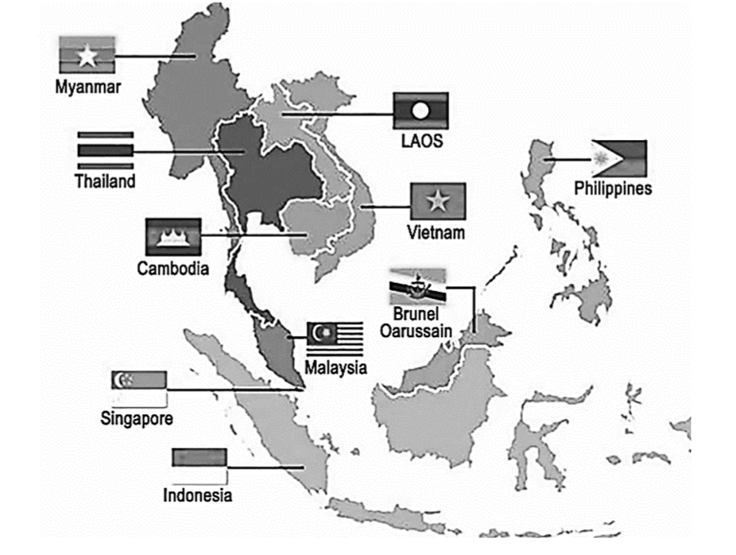
- CONTEMPORARY RELATIONS - Economic Relations: - While ASEAN is India's fourth largest trading partner, India's trade with ASEAN stands at approx. 10.6% of India's overall trade. - Indo-pacific: - India's Act East Policy is an important part of its Indo-Pacific vision and ASEAN is the core of the Act East Policy. - Counter aggressive China: - China is engaged in territorial disputes with many ASEAN nations in the South China Sea and is locked in a bitter border row with India in eastern Ladakh. - Geo-Strategic Significance: - To facilitate rule-based order and to maintain freedom of navigation cooperation in the region is an imperative. - Connectivity: - With ASEAN nations can allow India to improve its presence in the region especially with respect to India's North-eastern states via road-rail connectivity with ASEAN countries. - Socio-Cultural Cooperation: - Various programs have been organised to enhance people-to-people contacts. India has invited the ASEAN students each year for Students Exchange Program. - Security: - Collaboration is necessary to counter insurgency in Northeast, combat-terrorism, tax evasions etc. Main forum for ASEAN security dialogue is ASEAN Regional Forum (ARF). ASEAN Defence Ministers' Meeting (ADMM) is the highest defence consultative and cooperative mechanism in ASEAN. ADMM+ brings together Defence Ministers from 10 ASEAN nations plus Australia, China, India, Japan, New Zealand, Republic of Korea, Russia, and USA on a biannual basis. - CHALLENGES - Economic challenges - India has an unfavorable balance of trade with ASEAN nations. India has pulled out of RCEP deal, as it would deepen its trade deficit with China and the ASEAN nations. - Delayed Projects - India is committed to connectivity projects like India-Myanmar-Thailand trilateral highway. However, timely completion is an issue. - Ineffective Negotiations - Many bilateral deals with these nations are yet to be finalized, leading to the halting of various aspects of diplomatic ties. There is an imbalance between many ASEAN nations and India because many of them are industrialized with manufacturing bases primed for exports, while India’s export sector remains weak and the government’s focus has shifted to boosting manufacturing domestically. - Limited Proactive Role - While the ASEAN member states have been disappointed that India does not take a proactive role in the region, India’s expectations regarding a more robust support for its regional outreach too have not been met. - Bilateral Focus - India continues to privilege bilateral partnership rather than pursuing ASEAN as a multilateral forum. - Limited Capacity - India’s capacity to provide development assistance, market access and security guarantees remains limited and ASEAN’s inclination to harness India for regional stability remains circumscribed by its sensitivities to other powers specially China. - WAY FORWARD - Stronger strategic, security & economic ties will create greater interdependence between India and ASEAN members. This will serve as an effective counter to China’s growing clout in the region. - Explore opportunities in enhancing physical & digital connectivity between India and ASEAN. - India must speed up work on connectivity projects, such as India-Myanmar-Thailand trilateral highway and building new trade and transport linkages with all ASEAN Nations. - Service & Manufacturing can be worked upon to balance trade and investment relationship by drawing on each other’s inherent strength: - ASEAN nations like Vietnam are well-integrated with global value chains which India can use to give its own manufacturing sector a boost. - India can facilitate greater Indian service sector exports to ASEAN as well as supporting freer movement of people. - Digital technologies: - Given the reluctance of ASEAN states to take help from Chinese giants in the field (due to concerns regarding china’s ability to own data), Indian IT sector may take some advantage. - Effective delivery of projects: - India needs to focus on more effective delivery of projects it is already committed to. Example India-Myanmar-Thailand Trilateral Highway (The plan is to extend this highway to Cambodia, Laos and Vietnam in an attempt to project India’s role in the emerging transportation architecture.) - Improving Connectivity: - With China having three times more commercial flights than India to Southeast Asia, improving air connectivity between India and ASEAN countries should also be high on the agenda. Besides, the Bay of Bengal can be used as an exploratory ground for the development of an India-ASEAN maritime framework. - Strengthening cultural connect: - Tourism too can be further encouraged between India and the ASEAN with some creative branding by the two sides. - Indo Pacific: - The US president recently replaced the term “Asia-Pacific” with “Indo-Pacific” which depicts the increasing importance of India, also presenting a great opportunity and responsibility on the Indian part. - The region has become strategically important for India due to its growing importance in the world politics. And for India to be a regional power as it claims to be, continuing to enhance its relations with ASEAN in all spheres must be a priority. - 14. INDIA & CHINA IN AFRICA - Both India and China have been engaging with African continent owing to its vast resources and potential for diversification of trade partners. In this line, China is shifting from its policy of non-interference to playing a key role in the security for keeping its investments safe. This is visible in its keen interest in the Horn of Africa. In this context, let us understand the presence of China in Africa, as well as India’ engagement with Africa. - REASONS BEHIND GLOBAL ATTENTION ON AFRICA - Natural Resources - Africa is endowed with variety of natural resources. - Population - Increasing population which if skilled could be a source of human resource. - Global Influence - 55 countries from Africa have critical weight in global institutions such as UN etc. - Economic Growth - Many African countries are one of the fastest growing economies of the world. - Political Stability - Countries like Mauritius, Botswana, Cabo Verde, Namibia, and Ghana rank relatively high as politically stable, democratic countries. - Governance Improvements - 34 countries, home to 72% of Africa’s citizens, have improved their governance performance over the last 10 years, and significant improvements have been seen in participation, rule of law, and rights, among other categories. - Response to Conflicts - African Union has designated 2019 as “Year of Refugees, Returnees, and Internally Displaced Persons in Africa", highlighting an Africa led solution to refugee crisis. - Health Progress - Progress has been made on health and disease related issues. - Poverty Reduction - Share of people living in extreme poverty in Africa has declined in past decades. For ex. Ethiopia is projected to almost eliminate extreme poverty by 2050. - Literacy and Gender Equality - Literacy rates are improving, and progress has been witnessed on Gender Equality. - CHALLENGES IN AFRICA - Colonial Legacy: - Exploitation during colonial times along with ill-conceived transfer of power. - Civil Wars: - Frequent civil wars in countries like Rwanda, Congo, Somalia, Sudan etc. - Governance Issues: - Lack of state capacity and good governance in African countries. - Infrastructure Deficit: - Lack of infrastructure development and connectivity across the continent. - Resource Curse: - Natural resource endowment has hurt as leaders see mining as source of corruption and not development. - Climate Change: - Climate change and desertification. For ex. Desertification in Sahel region. - Geopolitical Competition: - Geopolitical competition and meddling in African countries by global powers. - Limited Institutional Impact: - Africa wide institutions such as African Union etc. have had limited impact. - CHINESE PRESENCE IN AFRICA - China has been investing across Africa in infrastructure projects as well as in raw materials. - China is increasingly taking interest in security of African continent. This was reflected in first China-Horn of Africa Peace, Governance & Development Conference. Countries from African Horn participated. -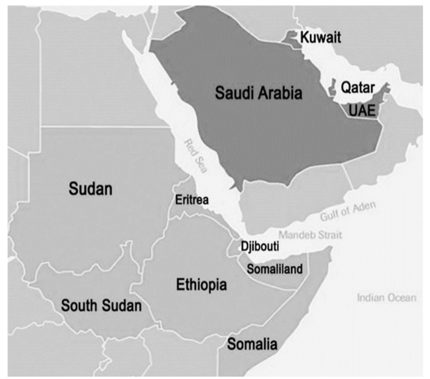
- PROJECTS OF CHINA IN HORN OF AFRICA - Resolutions - Countries from Horn of Africa participated, and four resolutions were adopted: Dakar Action Plan, China-Africa Cooperation Vision 2035, Sino-African Declaration on Climate Change and Declaration of Eighth Ministerial Conference of FOCAC. - Vaccine Donation - Donated around 5 lakh vaccines to the region. - Interests - China's interests are in four major areas: - Infrastructural projects, - Financial assistance, - Natural resources, - and Maritime interests. - African Reception - African countries have welcomed Chinese presence. - A SHIFT FROM PRINCIPLE OF NON-INTERFERENCE - For Africa, Chinese investments could lead to stable environments helping countries achieve their peace and development. However, conflict in Africa is a huge cost on Chinese investments. Hence, China is taking keen interest in security of the region. Ex. Ethiopian conflict in Tigray region. - From a trading perspective, Horn of Africa plays a significant role in achieving the objectives of the China-Africa Cooperation Vision 2035. - China’s move towards peace in Africa indicates a shift in its principle of non-intervention. - Chinese aim to project itself as a global leader and boost its international status. - European presence has been criticised by African nations, unlike the Chinese presence. - African governments not conforming to Western standards of democracy, interact better with powers like China and Russia. - INDIAN FOREIGN POLICY WITH AFRICA - PM outlined 10 Guiding principles for India’s engagement with Africa: - Priority - Africa will be top of India’s foreign policy priorities; India will have sustained and regular engagements to intensify and deepen its relations with Africa. - Development Partnership - India’s development partnership with Africa will be guided by priorities formed by respective African countries. India will rely on African talent and skill to build local capacity and create local opportunities. - Market Access - India will keep its markets open and make it easier and attractive for Africa to trade with India. India will support its industry to invest in Africa. - Digital Revolution - India will harness its experience with digital revolution to support Africa’s development, improve delivery of public services, extend education, health, financial inclusion and mainstream the marginalised. - Climate Change - Address challenges of climate change, wherein India will work with Africa to ensure a just international climate order, preserve biodiversity; adopt clean and efficient energy sources. - Security Cooperation - Strengthen cooperation and enhance mutual capabilities in combating terrorism and extremism, keep our cyberspace safe and secure and supporting UN in advancing and keeping peace. - Maritime Freedom - Keep oceans open and free for the benefit of all nations. Ensure cooperation and not competition in eastern shores of Africa and eastern Indian Ocean. - Prevent Rival Ambitions - Ensure Africa does not turn into a theatre of rival ambitions. - Global Order - India will work together for a just, representative, democratic global order and seek reforms in global institutions with an equal place for Africa. - CONCERNS IN INDIA-AFRICA TRADE & INVESTMENT -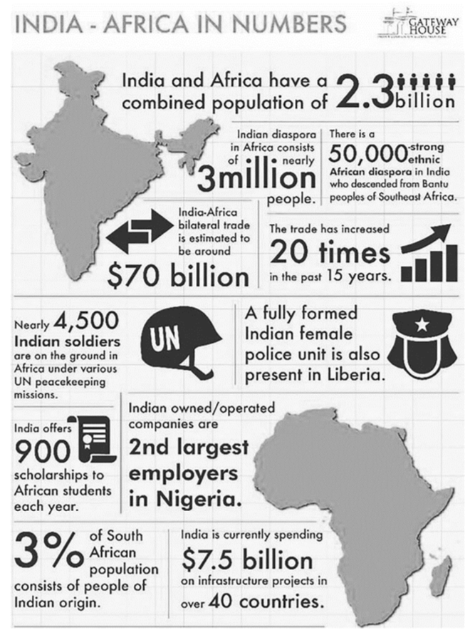
- Trade Dependency - India’s trade with Africa mainly relies on petroleum and LNG and therefore requires diversification. - Localized Trade - India’s trade in Africa is localised to countries of East Africa and require further expansion to other regions. - Limited Outreach - Lack of companies from India outreaching to African markets and Indian telecom companies which had strong presence in Africa were unable to expand due to slowdown in telecom sector in India. - FDI Decline - Africa has seen a global decline in FDI inflows with a drop of 21% in 2016-17 which affected Indian investment sentiments and there is also a lack of ability for Indian companies to compete with Chinese investment and cheap exports to Africa. - AAGC Implementation - Japan Asia-Africa Growth Corridor (AAGC) is yet to be implemented effectively. India & Japan have long engagement with Africa would be useful in promoting AAGC. They have a long way to go and it is still far-fetched to view AAGC as a counter to China’s ambitious Belt and Road Initiative (BRI). - ISSUES WITH INDIA'S APPROACH TOWARDS AFRICA - Lack of Strategy - Lack of a clear strategy. - Development Cooperation - In comparison to China, India’s development cooperation is based on state-led infrastructure for resources deals, rising debt threats, lack of domestic capacity building and job creation. - Development Goals - India is not actively pursuing any specific development goals. Ex. Indian Line of credits - LoCs have not been designed to achieve a larger development goal such as food security, health security, clean energy or education for all. - Lack of Synchronization - No synchronisation between different development instruments. LoCs, grants & capacity building operate as standalone instruments of development cooperation, with almost no links with each other. - Implementation Issues - Implementation has been a key constraint for Indian LoCs, with poor disbursal rates and project completion record. - WAY FORWARD - Unlike China & West, India does not have substantial resources to support Africa. Therefore, it should prepare a focused Africa strategy for and identify a few areas for closer cooperation. - Investment in human capital: - Current focus on capacity building is online with Africa’s needs given continent’s huge youth population that need skills and jobs. - Explore greater collaboration with NGO to implement development projects in Africa at low costs. - India should try to support Indian companies making investment in development-friendly projects for mutual benefit. - Though some improvement in project implementation has occurred in recent years, India’s overall record is poor. Efforts must be made to expedite the LoC projects. - 15. GEOPOLITICS OF ARCTIC -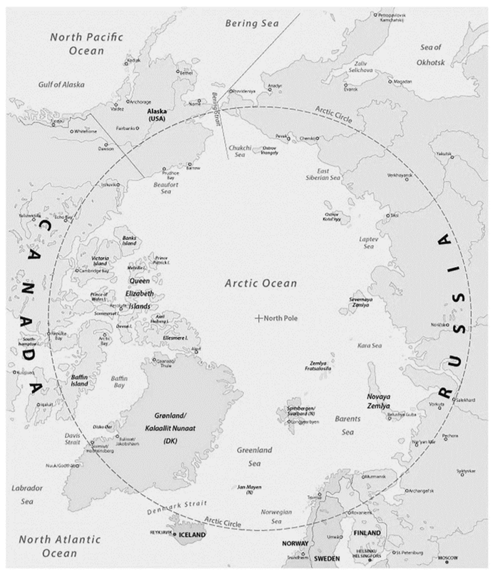
- U.S. Secretary of State has warned about Militarization of Arctic. - ABOUT ARCTIC - Being surrounded by Canada, Russia, Greenland, Norway, Sweden, Finland, Iceland, & USA. Arctic Region experiences extreme solar radiation throughout the year. These distinguishable features made it historically inaccessible. - However, with climate change & global warming, this region has become more accessible. Arctic is increasingly becoming an area of geo-political, geo-economic and geo-ecological interest. - SIGNIFICANCE OF ARCTIC REGION - ECONOMICAL - Untapped natural resource - Arctic region contains one-fifth of world’s undiscovered oil & gas resources, alongside platinum, gold, silver, iron, zinc, copper and deposits of methane hydrates (energy sources). - Commercial fishing industry - Food security and commercial opportunity. - Navigation potential - Melting ice will open new sea routes for open water vessels (not adapted for icebreaking) cutting distances and travel times. - ECOLOGICAL - Albedo - Arctic Sea ice acts as a huge white reflector, bouncing sun’s rays back into space, helping keep Earth at an even temperature. - Thermohaline circulation - Arctic helps circulate world's ocean currents, moving cold and warm water around the globe. - Permafrost - Permafrost of arctic region acts as a carbon sink. - Biodiversity - Arctic region is home to more than 21,000 known species of highly cold-adapted mammals, birds, fish, invertebrates, plants and fungi and microbe species which are of immense value to the mankind. - CHALLENGES FACED BY THE REGION - Climate change - Arctic is warming at a rate of almost twice the global average. It will result in rising sea levels, changes in precipitation patterns, increasing severe weather events, and loss of fish stocks, birds and marine mammals. - Militarization of Arctic - Short distance between two antagonistic powers (USA and Russia) led to militarisation of this region. This resulted in stationing of intercontinental ballistic missile systems, nuclear powered attack submarines and naval bases. - Increased Chinese Presence - China unveiled its Polar silk Road plan China has already ensured its presence in Arctic through Russian Yamal Liquified Natural Gas (LNG) project. Chinese subtle creep into the Arctic region is rising suspicion about its intentions. - INDIA’S INTERESTS IN ARCTIC REGION - Climate - Changes in Arctic climate due to global warming can have impact on Indian Monsoon, water security and coastal erosion. Research in Arctic region is crucial for India. India already has a research base in the region, Himadri. - Resources - Rich natural resources and minerals in Arctic region benefits manufacturing sector and ensures energy security. ONGC Videsh acquired stakes in Russia’s Rosneft new arctic oil project. - Navigation - India plans to explore connectivity corridor between resource rich Arctic Region and International North South Transport Corridor (INSTC). India and Russia agreed to develop Chennai-Vladivostok maritime corridor. - INDIA’S DRAFT ARCTIC POLICY - India’s New Arctic policy seeks to enhance the country’s level of engagement with the region. It enunciated with five major areas of engagement:| Area | Description |
|---|---|
| Science & Research | Strengthening India's scientific R&D. |
| Economic & human development cooperation | Economic and human development. |
| Transportation & connectivity | Transportation and connectivity. |
| Governance and International cooperation | Governance and international cooperation. |
| National capacity building | National capability building for Arctic region. |
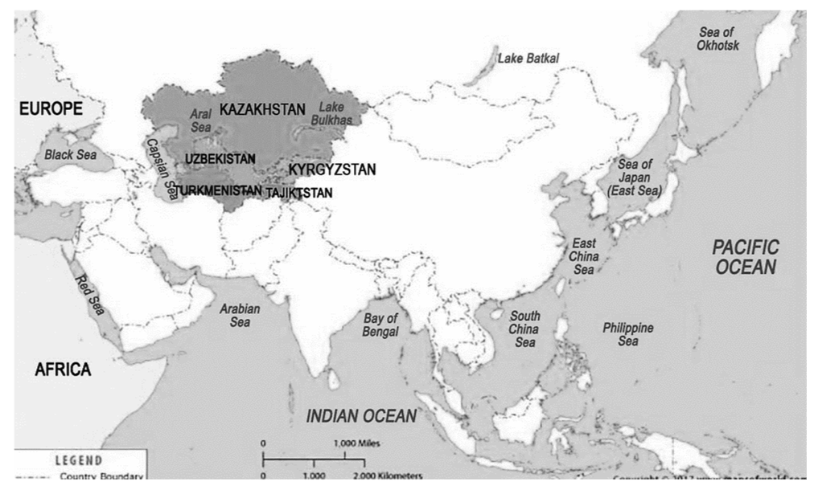
- Central Asian countries are a group of five countries Kazakhstan (largest), Tajikistan, Kyrgyzstan, Tajikistan, Turkmenistan and Uzbekistan. All these countries were earlier part of the USSR and became independent sovereigns after the fall of USSR. - Some features of these countries are: - Doubly Landlocked - All five countries are doubly landlocked because their neighbours are also land locked. For these countries to integrate substantively with the world economy and develop fruitful economic relations with the outside world, they need to have access to warm-water seas. - Mineral rich region - All five countries are richly endowed with natural and mineral resources. These countries have vast stretches of unexplored minerals including uranium, oil and gas making it an important region for India's economic interest. - Political stability - All five republics have been by and large peaceful and stable throughout the 25 years of their independent existence. - Extremism - Although terrorist groups like Islamic Movement of Uzbekistan, Hizb-ut-Tahrir and others are present in the Ferghana valley, they have not been very active or effective in creating disturbances. This could however change if violence due to the Taliban's resurgence in Afghanistan increases and spreads to other countries in the region. The five republics have been largely secular and liberal so far. Religious extremism, fundamentalism and terrorism pose challenges to all these societies and to regional stability. - Drug trade & Great Game - CARs face serious threat from illegal drug trade emanating from Afghanistan. Traditionally, Central Asia has been an arena of ‘’great game’. The modern version is being played out even today. Russia, China, US, Turkey, Iran, Europe, EU, Japan, Pakistan, India, Afghanistan have substantial security and economic stakes in the region. - GREAT GAME IN CENTRAL ASIA - Central Asian region stretches from Caspian Sea in West to China and Mongolia in East, and from Afghanistan and Iran in South to Russia in North, including the former Soviet republics of Kazakhstan, Kyrgyzstan, Tajikistan, Turkmenistan, and Uzbekistan. - Geopolitical scenario is undergoing a sea change in last few years in Central Asia. These radical transformations in geopolitical front of Central Asia are taking place largely due to interplay of both global and regional forces and their subsequent impact on the region. - Taliban takeover in Afghanistan has renewed focus on these republics to tackle the new challenges of rising extremism in the region. - US hopes to use Central Asia as an important region in its Indo-pacific strategy to counter Russia and China. - Russia considers this region to be its backyard and has considerable leverage given the Soviet past of these countries. - CARs are crucial for China given the high level of economic engagement and the BRI which passes through this region. - INDIA - CENTRAL ASIA RELATIONS - Historical & cultural relations: - India has several millennia old historical, cultural and civilisational links with Central Asia. The region related to India through silk road through which Buddhism spread in region and economic and cultural ties bloomed. India enjoys good reputation and soft power in these countries. Bollywood movies and songs are particularly popular in the region. Many Indian students go to these countries to pursue higher education. - Strategic Importance: - The region is considered to be India’s extended neighbourhood and centrally located in India's continental neighbourhood. - Geopolitics: - Geopolitically the region is important for India to counter the increasing Chinese influence with its Belt Road Initiative in India's continental neighbourhood. With Taliban's takeover of Afghanistan, Central Asia can play a crucial role in India's strategic calculations in the region. - Energy needs: - India is an energy deficit country. This region is extremely well endowed with hydrocarbon resources and other mineral and natural resources. These countries are also rich in strategic minerals such as Uranium. - Connectivity: - Because of presence of Pakistan and China on the norther borders and hostile Taliban in Afghanistan, India does not have direct access to these Central Asian republics. - Trade: - Despite enormous potential, India's trade with this region has been minimal because of lack of direct connectivity. Largest trading partners of this region are still Russia & China owing to geographical proximity. - INITIATIVES BY INDIA TO STRENGTHEN RELATIONS WITH CENTRAL ASIAN REPUBLICS - Connect Central Asia Strategy - India's 'Connect Central Asia' Policy is a broad-based approach, including political, security, economic and cultural connections. - India is stepping up multilateral engagement with Central Asian partners using the synergy of joint efforts through existing fora like the Shanghai Cooperation Organisation, Eurasian Economic Community (EEC) and the Custom Union. India has become a member of the SCO of which majority of the central Asian countries are members. - India looks to Central Asia as a long-term partner in energy and natural resources. Central Asia possesses large cultivable tracts of land, and it sees potential for India to cooperate in production of profitable crops with value addition. - India is setting up a Central Asian e-network with its hub in India, to deliver, tele-education and tele-medicine connectivity, linking all five Central Asian States. - Connectivity - International North-South Transport Corridor (INSTC) - India has reactivated International North-South Transport Corridor (INSTC). - Chabahar Port - India is modernizing infrastructure of Chabahar port in Iran, which could become an important link in trade and transport communications between markets of Central and South Asia. - Ashgabat Agreement - India recently joined Ashgabat Agreement, which was instituted in 2011 to establish an international multimodal transport and transit corridor between Central Asia and Persian Gulf. Its objective is to enhance connectivity within Eurasian region and synchronize it with other regional transport corridors, including International North–South Transport Corridor (INSTC). - Economic and Humanitarian engagement - India-Central Asia Dialogue - First meeting of India-Central Asia Dialogue was held in 2019 in Samarkand (Uzbekistan) which established a platform for strengthening cooperation between India and Central Asian countries. - Humanitarian Aid - India has provided humanitarian medical assistance to these countries for COVID-19 relief. - Line of Credit - India has provided US$ 1 billion Line of Credit for priority developmental projects in fields such as connectivity, energy, IT, healthcare, education, agriculture in the region. - India-Central Asia Business Council (ICABC) - India-Central Asia Business Council (ICABC) has also been launched for boosting business to business engagement. - Other areas of cooperation - Joint statement on India-Central Asian dialogue focused on need to combat terrorism by destroying safe-havens, infrastructure, networks & funding. - Connections between our peoples are the most vital linkages to sustain our deep engagement. - India already has a robust exchange of students. India will encourage regular exchanges of scholars, academics, civil society and youth delegations to gain deeper insights into each other’s cultures. - CHALLENGES IN INDIA'S OUTREACH TO CENTRAL ASIA - STRATEGIC CONCERNS - Lack of Direct Connectivity - India has no direct connectivity with this region. - Taliban Takeover - Takeover of Afghanistan by Taliban has severely altered India's strategic calculations in the region. However, India can leverage its relationship with CARs to engage with Taliban. - Chinese Influence - China’s open-handed outreach to the region in form of big-ticket connectivity projects under Belt & Road Initiative, reduces space available for India. - China’s 5+1 Format - China has been expanding its regional presence, as seen in ‘5+1 format’ launched in 2020 to further its influence. Its advances are causing concerns of ‘debt-trap diplomacy’ given economic situation of Central Asian countries. This provides India with an opportunity to leverage its good relations to counter the fears of 'Chinese Debt diplomacy'. - Russian Influence - Being part of erstwhile USSR, Russia still has considerable influence on these countries. However, to counter Chinese influence, Russia has been promoting its own Eurasian Economic Union (EAEU) to pursue regional and economic integration. - CONNECTIVITY PROJECTS NOT MATERIALISING - Chabahar Port Delays - US sanctions on Iran and increasing Chinese presence has caused delay in operationalising the Chabahar port fully. - INSTC Slow Progress - INSTC project has witnessed slow growth due to a combination of factors including low trade volumes, incomplete infrastructure, and sanctions. - Competition with BRI - India must redouble its efforts connectivity to further its regional presence. This becomes more important in the context of China’s Belt and Road Initiative, with two of its six corridors running through Central Asia. - LIMITED ECONOMIC PARTNERSHIP - India has been a latecomer and has turned its attention to the region only in recent years. - India’s trade with the region amounts to US$ 2 billion, owing to limited connectivity & low economic engagement. This amount is less than 0.5% of India’s total trade, whereas the region’s trade with China amounts to US$ 100 billion. - WAY FORWARD - India needs to direct investment to the region to reap economic benefits of strategic location of Central Asia that puts it at crossroads of key trade and commerce routes. - India must increase its developmental and humanitarian aid to the region and promote closer people-to-people ties through education, knowledge transfer, medicine and health, culture, cuisine and tourism. - Multilateral organisations like SCO, EAEU, and CICA can serve as platforms for sustained engagement and regular exchange of ideas. - SCO is a crucial grouping that provides India a strategic convergence with Russia and China on addressing new security challenges, enhancing infrastructural development projects, and creating a network of regional oil and gas pipelines for larger benefit of Central and South Asian region. - Regular meetings with leaders of the region at highest political level. - Quick and effective operationalisation of connectivity projects such as Chabahar Port, INSTC agreement and Ashgabat Agreement to give connectivity a push. - Coordination with region in especially checking rising extremism and terrorist groups. This is especially important in wake of rise of Taliban in Afghanistan. - CHAPTER 4 - BIG POWER - 1. INDIA AND U.S.A - Recently PM Modi state visit to US, India and US share multifaceted Comprehensive Global Strategic Partnership which is characterized by: - Regular Bilateral visits: - The political connect at the leadership level, a high level of and very intense level of political exchanges has been one of the key features of relationship between Indian and the USA - Burgeoning Economic partnership: - The second key component, which has been a very strong pillar of relationship has been strong trade and investment partnership. If one looks at the quantum of bilateral trade, touching close to $200 billion, or the strong flow of capital on both sides. - Technology Cooperation: - The technology component and technology component interfaces in the telecom area, in the space area, in the manufacturing domain. Along with it a lot of triangulation of technology, manufacturing and investment can be identified as the next pillar of strong ties between India and US. - Strong Diaspora connect: - Another key component, always a very vibrant, robust and dynamic component of relationship and a strong driver of the relationship is also the Diaspora and interface with Diaspora. India has close to 5 million strong Indian Diaspora in the US, which contributes enormously and very richly to the growth, the substance and the strength of the relationship. - Emerging Areas of cooperation: - There is deepening of partnership, skilling and mobility as the whole new domain of renewable energy, health, environment and green partnership which has emerged as the new area of cooperation. - During the recent official state visit of PM Modi to US, the two leaders have reiterated the recent visit and concluded agreements as a ‘new stage’ in the India US relationship. - India and the U.S. announced a number of agreements on defence cooperation, critical and emerging technologies, health, environment, visas and space including a deal which could pave the way for an unprecedented transfer of jet engine technology. - The leaders also highlighted that both countries share democratic values, while addressing a gathering of officials and thousands of members of the Indian American diaspora. - In the field of defence partnership in a recent move General Electric and Hindustan Aeronautics Limited has signed a big-ticket MoU to jointly produce GE 414 jet engines in India for the Tejas Mk2 light combat aircraft. This comes as significant development as the US has been able to overcome bureaucratic roadblocks. - The Defence Ministries of the two countries also launched the inaugural session of an innovation platform INDUS-X which was organised by the U.S. India Business Council, to foster defence industrial collaboration. - In space cooperation, India is signing on to a framework of 25 countries for space exploration and cooperation. The two countries have agreed on a mission to the International Space Station in 2024. - The leaders appreciated the rapid progress made through initiatives such as the Critical and Emerging Technologies(iCET) and the keen desire to elevate strategic technology collaborations to build resilient supply chains. They welcomed the deepening cooperation in critical minerals and space sectors. - The big private sector deals coinciding with the visit was U.S. semiconductor and chip maker Micron Technology, Inc’s announcement that it would invest up to $825 million in a new chip assembly and test facility in Gujarat, which would be bolstered by investment from the Indian and Gujarat governments, totaling $2.75 billion. - The leaders reiterated their commitment to combating climate change and achieving a sustainable future and discussed ways to promote clean and renewable energy and collaborate on climate initiatives. - The U.S. also announced a pilot programme to renew visas domestically which means that applicants do not have to travel outside the U.S. to get their renewal stamps for certain petition-based temporary workers. - This programme could expand to cover H1B and L-1 skilled visas by 2024 and to other categories eventually. - The U.S also announced that it will also open two new consulates in Bengaluru and Ahmedabad to further give boost to people-to-people relationship. - INDIAN PM ADDRESSES US CONGRESS - Indian Prime Minister also addressed a Joint Sitting of the US Congress and spoke about the rapid strides made in India-US bilateral relations and shared his vision for elevating bilateral ties. - PM also outlined the enormous progress made by India and the opportunities that it presents for the world. - Prime Minister also conveyed his appreciation for the long-standing and strong bipartisan support in the US Congress for the deepening of India-US relations. - Indian PM also attended the event, "India and USA- Skilling for Future” - The event focused on workforce redevelopment across higher education institutions to expand and enhance access to quality education across society. - Indian Prime Minister presented 5-point proposals for energizing India-USA collaboration in education and research sector, as follows: - 1. Integrated approach bringing together government, industry and academia. - 2. Encouraging exchange of Teachers & Students. - 3. Organizing Hackathons on various subjects between the two countries. - 4. Mutual recognition of vocational skills qualifications. - 5. Encouraging visits of people associated with education and research. - Shared democratic values and growing convergence on bilateral, regional, and global issues have provided a strong base for India-U.S. relations, which have now evolved into a strategic partnership of global significance. The relationship enjoys strong bipartisan and popular support in both countries. - High-Level Dialogue Mechanisms: - India and U.S. have more than 50 bilateral inter-governmental dialogue mechanisms for exchange of views on issues of mutual interest. Ex. India-U.S. 2+2 Ministerial Dialogue; India-U.S. Trade Policy Forum; India-U.S. Strategic Energy Partnership etc. - BILATERAL RELATIONSHIP BETWEEN INDIA AND USA - Defence - Defence has emerged as a major pillar of India-USA strategic partnership with intensification in defence trade, joint exercises, personnel exchanges, cooperation in maritime security and counter-piracy. - Counterterrorism & internal security - Cooperation in counterterrorism has seen considerable progress with enhanced intelligence sharing, information exchange and operational cooperation. The bilateral Joint Working Group on Counterterrorism is an important mechanism in this regard. - Cyber-security - Cyber-security cooperation between India and the U.S. is conducted under the India-U.S. Cyber Framework signed in September 2016. - Trade & Economic - The U.S. is India’s largest trading partner, goods and services combined. Bilateral trade in goods and services grew by more than 10% per annum over the past two years to reach US$ 142 billion in 2018. - Energy - The U.S. has emerged as a key partner for India in the field of energy. The bilateral Strategic Energy Partnership launched in April 2018 between the two countries is robust and witnessing increasing diversification across both conventional and renewable energy sources. - Civil Nuclear Cooperation - The bilateral civil nuclear cooperation agreement was signed in October 2008. India and the U.S. have a Civil Nuclear Energy Working group on R&D activities which has met ten times and has ongoing projects under R&D collaboration which are reviewed by the Working Group. - S&T/Space - The Indo-U.S. Science & Technology Forum (IUSSTF) which was established by India and the U.S. as an autonomous, bi-national organization to promote cooperation in Science, Technology and Innovation. - Indian Diaspora - The number of Indians and Indian Americans in the U.S. is estimated at around 4 million, which accounts for almost 1% of the total U.S. population. It includes a large number of professionals, entrepreneurs and educationists with considerable and increasing influence in U.S. polity, economy and the society. - Regional and International Cooperation - Both countries are collaborating and coordinating on several regional and global issues in both security as well as development spheres. - IMPORTANCE OF SIGNING BECA - BECA stands for Basic Exchange and Cooperation Agreement for Geospatial Intelligence. It is one of the four foundational defence agreements signed between India and the United States to deepen military and strategic cooperation. BECA enables sharing of advanced geospatial data and real-time satellite imagery between India and the U.S. - It provides India access to high-quality maps, nautical and aeronautical charts, and topographical data, which are vital for: - Accurate missile and drone navigation - Precision targeting in military operations - Improved situational awareness - Better border and maritime surveillance - By signing BECA, India can specifically receive sensitive geo-spatial intelligence. - Together these foundational military pacts effectively tie India to the wider U.S. strategic architecture in the region. - Previous governments had resisted attempts to get India to sign these agreements on the ground that it would compromise India’s security and independence in military matters. - The present dispensation argues that there are enough India-specific safeguards built into the pacts, and there is no reason for concern. - IMPLICATIONS OF INDIA ALIGNING WITH WIDER U.S. STRATEGIC ARCHITECTURE - It has been argued that such alignment stands contrary to India's stated principle of exercising Strategic Autonomy. - India will now be seen as part of a wider alliance that stands to counter China. - Although it is being argued that such a move has been taken based on Pragmatic considerations, it seriously impacts the previous policy of neutrality, and of maintaining its equi-distance from power blocs. - IMPACT ON INDIA – CHINA RELATIONS - Initially India had distanced itself from the QUAD, to avoid being seen as a part of anti-China grouping. - However now Quad has become more anti-China in its orientation. Further India has invited Australia to join the Malabar Naval Exercise which now has the same members as the Quad. - At this point being seen as close to USA might not be in the long-term interest of India. - As far as China is concerned, in the past India has pursued the Policy of avoidance of conflicts with China. For Example, even After the Doklam Stand-off, India tried to mend ties with China through the Wuhan and the Malappuram bonhomie. - And now India's alignment with US would indicate that India made its choice which, can only exacerbate already deteriorating China-India relations. - IMPACT ON REGIONAL AND OTHER NATION TIES - Besides forging alliance against China, India should focus on offsetting the loss of influence and momentum in its immediate neighbourhood (in South Asia), and in its extended neighbourhood (in West Asia) - Further, both China and USA are enlarging their influence in India's neighbourhood which is traditionally seen to be under India's sphere of influence. - The Maldives has chosen to enter a military pact with the U.S. to counter Chinese expansionism in the Indian Ocean region. - India also needs to make sure that UAE-Israel linkage does not adversely impact India’s interests in the region. - India also needs to devote greater attention to try and restore India-Iran ties which have impacted because of US sanctions. - Further, India's stand on Afghanistan has been wavering since US has decided on peace deal with Taliban. - India also needs to balance its membership of the Shanghai Cooperation Organisation SCO in the light of its new relationship with USA. - With China and Russia as the founding members of SCO it was conceived as an anti-NATO entity. - India has also distanced itself from the African and the Latin American countries owing to its distancing from the Non-Aligned Movement (NAM). - IMPACT ON INDIA RUSSIA RELATIONS - Finally, such closeness with US can adversely impact India-Russia relations - Russia has been an all-weather friend for India for the past decades. - India-Russia relations are also being impacted because of expanding Russia-China relations. - Thus, India will need to handle its relations with Russia with skill and dexterity, as it would be a tragedy if India-Russia relations were to deteriorate at a time when the world is in a state of disorder. - 2. INDIA–US TRADE RELATIONS - India and United States held 12th Ministerial-level meeting of the India-United States Trade Policy Forum (TPF). TPF has been revived after four years to resolve trade and investment issues between the two countries. Both countries recognise the need for diversifying critical supply chains and are poised to play an increasingly important role when it comes to resilient supply chains and working with other like-minded nations. - INDIA - US ECONOMIC RELATIONS -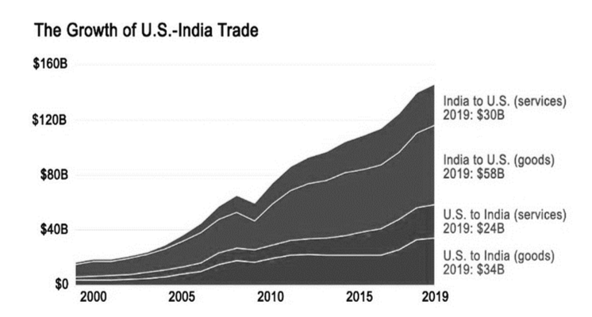
- Bilateral trade in goods and services—estimated at just $16 billion in 1999 and $59.5 billion in 2009—topped $146 billion in 2019. - The U.S. is India’s largest trading partner, goods and services combined. Bilateral trade in goods and services grew by more than 10% per annum over the past two years to reach US$ 142 billion in 2018. - In 2019, India was the ninth-largest trading partner of the United States, while the United States was India’s largest trading partner—surpassing China’s rank for the second consecutive year. - For year 2023, these are USA's biggest trading partners: - Mexico (~ US$ 798 billion) — the #1 partner. - Canada (~ US$ 773 billion) — the #2 partner. - China (~ US$ 575 billion) — the #3 partner. - For China, the largest trading partners in year 2024 were, India being at nine'th position: - United States -> $982.3 billion - European Union -> $785.8 billion - ASEAN (Association of Southeast Asian Nations) -> $688.3 billion - India -> $211.3 billion - POTENTIAL OF BILATERAL TRADE BETWEEN INDIA AND USA - United States vs. Korea - The level of goods traded between the United States and Korea is nearly 1.5 times larger than between the United States and India— even though Korea's GDP is roughly 40% smaller than India's. - United States vs. Vietnam - Vietnam's trade with the United States is 84% that of India's, even though India's GDP is ten times larger than that of Vietnam - United States vs. China - China's trade with United States is 6 times larger than. - Summary - This highlights the potential of trade between India and the USA. Also, as USA tries to diversify its dependence on China and with increasing labour costs in China, the potential for US and India trade is immense. Both India and the USA are democracy and have deeper convergence of several issues apart from increasing security cooperation. - TRADE RELATED ISSUES BETWEEN INDIA AND US - 1. Tariffs - US imposed tariffs on steel and aluminium imports from India. US has also called out high tariffs in India on certain categories such as automobiles. India drew up a list of retaliatory tariffs and filed it with the World Trade Organization (WTO) but held off on applying them. - 2. Generalized System of Preferences (GSP) - US removed India from the GSP program. India imposed retaliatory tariffs, after which the United States filed a dispute at the WTO. These retaliatory tariffs remain in place. In 2018, India was the largest beneficiary of GSP; over one-tenth ($6.3 billion) of U.S. goods imports from India entered duty-free under the program (e.g., chemicals, auto parts, and tableware). - 3. Agriculture - India has been demanding enhanced market access for its agricultural produce in the US market. India has opposed enhanced phyto-sanitary standards being imposed by USA to curb imports from India. Particularly India wants restoration of market access for wild caught shrimp and water buffalo meat. US wants to export excess ethanol for India’s ethanol blending with petrol. - 4. Intellectual property rights - US concerns include piracy of software, film, and music and weak patent protections. India amended the Patents Act to recognize product rather than process patents. Despite the changes in the Patent act, US has raised concerns about insufficient patent protections, restrictive standards for patents, and threats of compulsory licensing. - 5. Investments - India restricts FDI in certain sectors. Under, India’s FDI regime above a certain cap FDI investors have to take permission for investing in India. US considers this as a restrictive. - 6. Pharmaceutical and Medical Devices - U.S. Trade Representative (USTR) expressed concern for years about customs duties on medical equipment and devices. Issues increased when Indian government applied new price controls on coronary stents and knee implants. India wants cooperation from US in developing a secure pharmaceutical manufacturing base for augmenting global supply chains. However, COVID-19 pandemic has stalled inspections of Indian pharmaceutical facilities by US Drug Regulator, Food and Drug Administration (FDA). - 7. Digital Economy - Issues exist regarding data localization, data privacy, and e-commerce. E-commerce rules of India and Data Equalisation levy have also been contentious trade issues between the two countries. US feels that these hit global software giants adversely. For ex. Amazon, Apple, Microsoft and Google. Data Protection bill has not been passed in India. India’s rules for Mandatory Testing and Certification of Telecom Equipment (MTCTE) have also been a concern for US. - 8. Labour movement and visas - United States, H1B and L1 visas permit highly skilled workers from other countries to be employed. The Indian government continues to object to U.S. laws passed in 2010 and 2015 that apply higher fees on companies with more than fifty employees if more than half of those employees are in the United States as non-immigrants. In 2016, India filed a trade dispute at the WTO over these visa fees, arguing that the higher fees “raised the overall barriers for service suppliers from India.” India has been demanding conclusion of Social Security Totalisation Agreement between India and US, this would allow Indian citizens to repatriate their social security savings once they come back to India. Legal, nursing and accountancy services can facilitate growth in trade and investment, both countries promote engagement in these sectors. - 9. New emerging trade issues - US has been pressing for issues such as child labour and forced labour in global supply chains. India does not want to tackle these issues in the framework of trade agreements and trade talks. US has been pressing for bringing in environmental issues in the framework of trade talks. Standards and conformity assessment procedures are often used for trade restrictive practices. - HIGHLIGHTS FROM RECENT TRADE POLICY FORUM MEETING - India and USA held the 12th Ministerial level meeting of the India-US Trade Policy Forum (TPF). India’s Minister of Commerce and Industry and US Trade Representative participated in the meeting. This was the first meeting of the Trade Policy Forum since 2017. - Political agreement between India and USA on the issue of Digital Services Tax during the interim period prior to full implementation of Pillar I of the OECD agreement. - WAY FORWARD - Both are emerging as strategic partners and as such there is a need for convergence on all issues concerning both the countries. Trade forms a foundation of such strategic partnership. - Reinstatement of the GSP - It would benefit the Indian exports to USA. India can act as an alternative for Chinese goods in the US markets. - Delinking Issues - US reportedly considered capping the issuance of H1B visas to about 15% for any country that “does data localisation.” This goes against the spirit of having an overall improvement in trade between the two. - Like the 2+2 dialogue, there is a need for institutionalisation of the economic dialogue between USTR and Ministry of Commerce and Industry. - India needs to boost manufacturing sector and make exports more competitive to become a major trade partner of USA replacing China. - Both nations must actively work towards de-escalating trade tensions. - Regular convening of Trade Policy Forum and its working groups to iron out trade issues. - Collaboration on emerging technologies such as cyberspace, semiconductors, AI, 5G 6G and future generation telecommunications technology. - Participation and collaboration between private sector in both countries in building critical linkages in critical sectors. - Regular exchange of information on standards and conformity assessment procedures to ensure that all requirements are no more trade restrictive than necessary. There is a need for transparency in the rulemaking process and focus on enhanced good regulatory practices. - 3. NEW – WASHINGTON CONSENSUS - The intensifying head-to-head clash between the United States and China has set alarm bells ringing. The beginning was with a trade war in 2018, U.S. policy towards China has morphed into a draconian technology denial regime aimed at hobbling China’s rise. - Further the USA is preventing any Chinese military venture to capture Taiwan, for which it has taken major steps across the Indo-Pacific to shore up its military edge. Both China and US are jostling for power and influence across the world. - It is to understand that “Extreme competition” over technologies may have initiated the conflict, but their insecurities are increasingly bringing their military and nuclear instruments to the fore. - The United States today is seeking wider international consensus on the new economic approach from its allies and partners, including India. The Unites states is pushing its efforts to build a “New Washington Consensus” as the Washington Consensus has started showing fissures and the lacunas in the approach which are highlighted by the following reasons: - 1. Market-driven approach - The conviction that the “markets know best” approach led to the hollowing out of the US industrial base. It was argued that in the name of oversimplified market efficiency, entire supply chains of strategic goods along with the industries and jobs that made them moved overseas. It was realised that deep trade liberalisation though helped America export goods, but not jobs and capacity. - 2. Growth prioritization - Secondly the notion that “all growth was good growth”, led to the privileging of some sectors like finance “while other essential sectors, like semiconductors and infrastructure, atrophied”. - 3. Economic integration - Thirdly, the old assumption “that economic integration would make nations more responsible and open, and that the global order would be more peaceful and cooperative”, also led to distortion wherein Unites States referred to the premise underlying China’s admission into the WTO in 2001 wherein admitting countries into the rules-based order should have incentivised them to adhere to its rules”. However, the problems triggered by the integration of a “large non-market economy” like China into the WTO. - It was realised that the America’s economic policy must confront the urgent need for a “just and efficient transition” to green economic growth and the political imperative of reducing economic inequality at home that has undermined American democracy. Thus, for this purpose the United States has offered a five-fold policy framework under the New Washington Consensus - 1. Return to industrial policy - The first is to return to industrial policy that was the hallmark of US economic development historically but dismissed by economic neoliberalism in the last few decades. For this the US has restored the role of the state in pumping investments into semiconductor production and promoting the development and deployment of green technologies. - 2. Collaboration with allies - Second, the United States under its new approach is not seeking autarky or promoting protectionism. The US is not going alone and wants to develop a joint effort with US allies and partners, including India. - 3. Beyond traditional trade policies - Third, United States wants its friends and partners to look beyond traditional trade policies. Wherein he highlighted the US-proposed Indo-Pacific Economic Framework is not a free trade agreement. - 4. Investment in emerging economies - Fourth, the US is trying to mobilise “trillions in investment into emerging economies with solutions that those countries are fashioning on their own, but with capital enabled by a different brand” of US economic diplomacy. This primarily involves offering an alternative to China’s Belt and Road Initiative, addressing the global debt crisis, and reforming multilateral development banks. - 5. Export controls on sensitive technology - Lastly United States is also pushing the efforts to develop a new set of export controls on sensitive technology that will limit national security threats from China and other rivals. - However International Scholars believe that the new Washington Consensus will face some of the critical challenges as it marred with variety of challenges like - CURTAIL NOT CONTAIN - Experts believe that while export controls may slow China, it is impossible to prevent it from developing its own technologies. The Russian experience shows too that sanctions are not easy to work either. - UNEQUIVOCAL CHINESE STAND - China does not see much difference between “de-risking” and “containment”. Its immediate response to the G-7 was to order its infrastructure companies to stop buying from American companies. - FISSURES WITHIN WEST - The United States will also face much challenge from its allies as the French President Emmanuel Macron’s has refused to be a vassal state of the U.S., which represents a tip of the iceberg of the worries of its partners in Europe and allies such as South Korea. - ECONOMIC DEPENDENCE - China made up roughly one-third of the U.S. industry’s market and would be “impossible to replace as both a source of components and an end market for its product - POLITICS OVER ECONOMICS - While the old Washington Consensus was largely in economics, the new suffers from an overdose of geopolitics which is also feeding into local U.S. politics as well. - CONCLUSION - United states and China seem to be involved in what the Americans call a game of “chicken” which comes with a high risk of miscalculation, war or a messy global economic breakdown. - However, U.S. estrangement with China enhances India’s geopolitical value, something that India wants to capitalise on. But there is also a caution that while the Sino-American hostility may bring benefits to India, a breakdown would be catastrophic, for not just India but also the world. - 4. INDIA–RUSSIA - Russian President Vladimir Putin visited India a month before the attack on Ukraine and initiated first ever 2+2 dialogue between the foreign and the defence ministers between the two countries. 28 agreements were signed, however some important agreements like RELOS were not finalised. Also, there was a shadow of increasing closeness between Russia and China and increasing closeness between India and the USA in the Indo-Pacific region. - KEY OUTCOMES OF THE VISIT - 1. Significance of Visit - It was only the second foreign visit of the Russian President since the pandemic began. - He referred to India as a “Great Power,” highlighting India’s growing prominence in global geopolitics. - 2. 2+2 Dialogue - Both sides met for the first time in the 2+2 format, involving the External Affairs and Defence Ministers from each country. - 3. Defence Partnership - Renewal of the military and defence partnership for 10 years (up to 2031), expanding defence cooperation. - 4. Manufacturing Deal - Approval of a deal to manufacture Russian AK-203 rifles in Uttar Pradesh through a joint venture, including technology transfer from Russia to India. - 5. Agreements Signed - 28 agreements were signed, covering sectors such as oil, energy, intellectual property rights, and culture. - 6. S-400 Delivery - Delivery of the S-400 missile defence system from Russia to India has already commenced. - 7. Joint Projects - Both nations agreed to pursue joint projects in third countries in Asia; they already collaborate on a nuclear power project in Rooppur, Bangladesh. - 8. Pending Agreements - Some important agreements, including the Reciprocal Exchange of Logistics Agreement (RELOS) and a Navy-to-Navy cooperation MoU, were discussed but not finalized. - ON AFGHANISTAN - Support for a peaceful Afghanistan, non-interference in internal affairs, and humanitarian assistance. - Afghanistan must not be used for terror groups- mentioned LeT along with ISIS and Al Qaeda. - Permanent consultative mechanism on Afghanistan between the NSAs of both countries, and a Roadmap of cooperation on Afghanistan - Welcomed the Delhi Regional Security Dialogue of NSAs, held by NSA Doval. - DEFENCE COOPERATION AND ISSUES - Defence Mechanism: - Inter-Governmental Commission on Military Technical Cooperation (IRIGC-MTC). - The relation has evolved from “a purely buyer-seller relationship to joint research, design development and production of state-of-the-art military platforms.” Example: Joint development of Brahmos missile. - Both are also involved in indigenous production and development of tanks and fighter jets, along with the upgrade of existing systems. - S-400 Triumph Air Defence Missile System, Four Admiral Grigorovich-class frigates, manufacture of Ka-226T helicopters in India. - ISSUES IN DEFENCE COOPERATION - 1. Market Share - Russia still commands 58% of total arms imports by India, followed by Israel and the US at 15% and 12%, respectively. - This is a decline from 2010-14 when Russia held a 70% share of the Indian defence market. - The major reasons for decline are: - 1. Diversification of India’s defense procurement - India is reducing dependence on a single supplier. Over the last decade, India has actively sought equipment from Israel, the US, France, and domestic sources. - Example: - Israel → missiles, UAVs; US → fighter jets (F-16/F-21), helicopters, artillery; France → Rafale jets. - 2. Modernization and technology access - Some Russian platforms are older-generation and India now wants cutting-edge technology. Western suppliers often provide more advanced avionics, precision weapons, and drones, which India needs for modernization. - 3. Domestic production push (“Make in India”) - India’s defense manufacturing policy encourages local production and joint ventures, reducing imports from Russia. - Examples: - BrahMos missile (India-Russia co-development) → partially indigenized. - 4. Geopolitical and economic factors - Russia’s arms production has slowed due to economic constraints and sanctions (especially post-2014 Crimea annexation and Ukraine conflict). - Global arms sanctions and restrictions make it harder for Russia to export certain advanced systems. - Russia can still export conventional weapons like tanks, artillery, rifles, older aircraft, and missile systems. But it cannot easily export high-tech modern systems that rely on Western components. This is a big reason why countries like India are now buying UAVs, precision missiles, and advanced fighter jets from the US or Israel, instead of relying entirely on Russia. - Western countries control key microchips, semiconductors, and precision electronics used in these systems. - 5. Competition from other suppliers - Israel → 15% of India’s arms imports (drones, missiles, surveillance systems). - US → 12% (fighter jets, helicopters, artillery). - European countries → small but technologically advanced contributions. - 2. Diversification - India seeks to diversify its defence imports, increasing competition for Russia with other global suppliers. - 3. Post-Sales Services - There is dissatisfaction in India regarding post-sales services and maintenance provided by Russia. - 4. Cost Escalation - Delays in supply have led to cost escalation, raising concerns for India. - 5. Spare Parts - Spare parts for Russian weaponry are often costly and of low quality. - 6. CAATSA Sanctions - The threat posed by US CAATSA (Countering America’s Adversaries Through Sanctions Act) sanctions remains a key concern. - CHANGING NATURE OF DEFENCE TIES - Biggest change in India’s foreign policy has been its increasing alignment with USA. - Indian Navy along with that of Japan, US and Australia undertakes Malabar naval exercise in western Pacific. - Formation of Quad. - India has already inked three foundational agreements with USA, which open a wide opportunity for cooperation in security, defence, intelligence, and big tech. - However, despite all hiccups and tensions between India and Russia, the two countries have signed defence deals worth $15 billion in the last three years. - All these deals have happened despite US sanctions and India’s arms imports witnessing a 33% drop in the last five years, with sales from Russia being hit the hardest. - This comes at a time when the deals with the US since 2018 was less than $5 billion. - WAY FORWARD FOR DEFENCE TIES - Both IAF and Indian Navy have slowly moved their missile dependence on Russia to other countries, especially the French and Israel besides the indigenous technology. - One service where Russians continue to have a stake currently and possibly into the future as well is Army. - The other sector where Russians will continue to have a strong hold is India’s strategic program, which becomes binding factor for many other deals that India signs. - But growing India-French ties may just be able to offset it. - Another factor that will come into play in the future and possibly desist India from putting in the Russian crate is the increasing ties between Russia and China. - Russia has emerged as one of the principal suppliers of defence equipment and technology to China, a development that India is not really happy about. - ECONOMIC RELATIONS - Economic Mechanism - Inter-Governmental Commission on Trade, Economic, Scientific, Technological and Cultural Cooperation (IRIGC-TEC) - Bilateral trade is not much significant - from April 2020-March 2021 amounted USD 8.1 billion. Indian exports amounted USD 2.6 billion while imports from Russia amounted USD 5.48 billion. - ISSUES IN ECONOMIC RELATIONS - 1. Trade Deficit - There is a deficit in trade in favor of Russia. - 2. Reasons for Limited Trade - Reasons for lack of growth in trade relations include lack of involvement of the private sector, absence of logistics, poor connectivity, and stalling of the International North-South Economic Corridor, resulting in higher costs. - Indo-Russia energy sector has in recent years seen increased cooperation through two-way investment. However, difficulties involved in direct supply through pipelines remain. - Action Plan for Prioritization and Implementation of Cooperation Areas in the Nuclear Field. - The two-way investment target set at $50 billion by 2025. - Looking for alternative routes to deal with the logistics issue, India has indicated its intent to establish a shipping corridor from Chennai to Vladivostok, which would reduce the time for goods to be shipped to the Russian Far East. - CHANGING GEO–POLITICS & IMPLICATIONS ON RELATIONSHIP - Ukraine War: - India abstained from Voting at the UNSC resolution against Russia. However, Russia’s tilt towards China is a cause of concern for India. On the other hand, US wanted India to comply with the sanctions and take a clear stand on Russian aggression. Although these decisions are seen in the context of India’s stated policy of Strategic Autonomy, it might impact India’s alignment with US against China in the Indo-Pacific. - India’s increasing alignment with the US: - India is aligning with US in the Quad in the Indo-Pacific strategy. Russia is increasingly wary of NATO’s eastward extension till its borders. - Russia’ view of Quad: - Russia views Quad as an ‘Asian NATO’ and has compared it with ‘Cold War’ era tactics. Russia thinks that Quad and Indo – Pacific conception is primarily an American initiative designed to contain both China and Russia. - Russia – China bonhomie: - Russia and China have convergence over anti-American foreign policy and share a vision for a multi-polar world. Russia’s economy critically depends on oil & gas exports. China being the largest importer of oil & gas is a big market for Russia’s exports. Russia supports Belt & Road initiative. - Defence and energy exports to China: - Close to 77% of China’s arms imports came from Russia during 2016- 20. China is a major and large buyer of Russia’s oil & gas. This has deepened economic relations between both. - Arctic Geo-politics: - Cooperation on the Arctic where both Russia and China seek to develop sea lines for shorter trade routes. China is particularly interested in this as it will reduce its vulnerability on Strait of Malacca. - Deepening of Russia & Pakistan Relations: - It is facilitated by China-Pak axis, Russia sees Pakistan as a zipper state, cooperation is increasing on energy sector and on Afghanistan issue. - WAY FORWARD - Russian preoccupation with Russia’s ‘status’ rivalry with U.S has impacted Russia's view of India-China relations. - India should pursue normalisation of relations between US & Russia, while diminishing Russia's propensity to coordinate its South Asian policies with China. - Russia might not always be the most powerful player, but it retains significant capacity to act both as a spoiler and a facilitator in Eurasia and has seen a resurgence of influence in West Asia. - India and Russia will continue to pursue their respective trajectories in world affairs, coordination on mutually beneficial issues will be vital in this period of flux in the global system. - After Taliban’s takeover, leveraging relations with Russia can be a key strategy for India in Afghanistan. Example: NSA talks between India, Russia, Central Asian republics etc. - There is a need for improving Economic cooperation – Improving logistics – FTA with EAEU etc. - Besides defence cooperation should be nurtured on the lines of joint development and technology transfer and indigenisation. - 5. INDIA–RUSSIA MARITIME COOPERATION - Maritime cooperation is emerging is one of the important pillars of India’s Foreign policy. In this context, India-Russia cooperation is crucial to India’s interest owing to strategic relationship with Russia. - INDIA OCEAN REGION - India’s central position in the northern IOR bestows upon it a unique role. - Russia is the only major power without a permanent presence in the IOR. However, Russia’s inclusion as a dialogue partner of the Indian Ocean Rim Association (IORA) suggests the implicit acceptance of its important role in the evolving geopolitics of the Indian Ocean - Russia plays an active role in anti-piracy operations off the coast of Somalia. It is setting up naval base in Sudan. The geographical centrality of Sudan vis-à-vis the Red Sea and adjacent areas provide Russia with the potential capacity to control several choke points and focal areas like Suez Canal (also from Tartus), Red Sea, Bab al-Mandab Strait, and Gulf of Aden - India has signed military logistics agreements with all QUAD countries, as well as with France, Singapore and South Korea. - Russia and India are set to sign the Reciprocal Exchange of Logistics Agreement (RELOS). - However, Russia has criticised the Quad grouping of which India is a member. Further the growing alignment between Russia and China because of Ukraine war brings tough choices for India. - India’s primary supplier in the maritime domain, the operational interaction between the navies of the two countries is comparatively on a lower scale. - RUSSIAN ARCTIC AND FAR EAST AND ITS IMPORTANCE FOR INDIA - In many ways, Arctic is to Russia, what Indian Ocean is to India. - Half of the Arctic in terms of its area, coastline, population, mineral wealth and hydrocarbons lies in Russia. - India has scientific, environmental, commercial and strategic interests in the Arctic region and Russian Arctic can potentially address India’s energy security objectives. - Oil and Gas trade between India and Russia remains significantly low, despite Russia being the world’s third largest producer and India being the third largest consumer. - IMPORTANCE OF RUSSIAN ARCTIC AND FAR EAST - 1. Hydrocarbons - Russia has the largest proven natural gas reserves in the world, enough to last about 80 years at current production rates. - By 2050, deposits in the Arctic shelf are expected to provide between 20% and 30% of Russia’s total oil production. - 2. Strategic Minerals - The Russian Arctic contains vast deposits of cobalt, copper, diamonds, gold, iron, nickel, platinum, high-value rare earth elements, titanium, vanadium, and zirconium. - For India, most rare earth products used in strategic industries (defence, fiber optic communications, space, nuclear energy) are critical for clean energy technologies, including wind turbines and electric vehicles. - 3. Russian Far East - The Russian Far East (RFE) is rich in natural resources, producing 98% of Russian diamonds, 90% of borax, 50% of gold, 14% of tungsten, and 40% of fish and seafood. - About one-third of Russia’s coal reserves and hydro-engineering resources are located in this region. - INDIAN INITIATIVES - India has been collaborating with Russia in the Far East as was witnessed during the Prime Minister’s visit in 2019. PM announced a US$ 1 billion line of credit to further contribute to the development of RFE. - Both countries have stated that Chennai–Vladivostok Maritime Corridor along with International North–South Transport Corridor (INSTC) will bring India and Russia closer to each other. -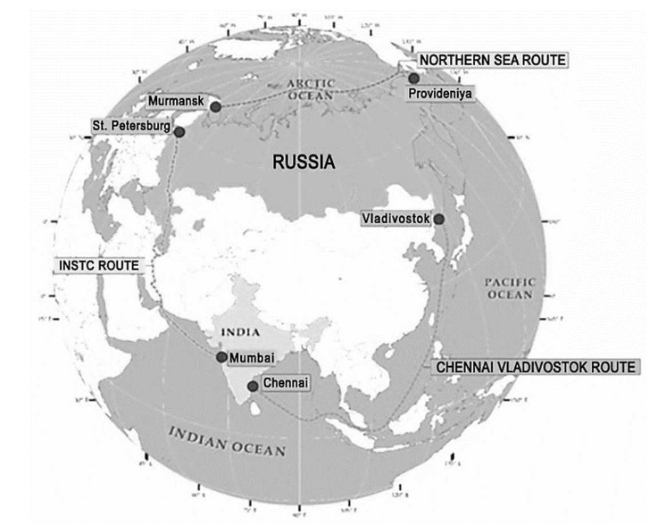
- Chennai–Vladivostok Maritime Corridor would reduce transport time from present 23 days from Baltic Sea route to 15-16 days via the new route. - India has proposed inclusion of Chabahar Port in INSTC and is seeking to expand membership of the project. - WAY FORWARD - Russian opposition to the Indo-Pacific and the QUAD as a containment strategy needs to be dispelled through greater interaction and explanation of India’s Security and Growth for All in the Region (SAGAR) and an open and inclusive Indo-Pacific. India can also consider facilitating Russian access to the IOR. - Though the Middle East remains India’s most viable choice for energy imports, emerging geopolitics and shifting traditional alliances compels India to diversify its partners. Russia, with its abundant energy resources, coupled with the exit of Western oil companies from its energy projects, offers tremendous opportunity for India. - 6. RUSSIA-CHINA NEXUS - With the Russia-Ukraine war completing a year in February. The war highlights not only the resurgence of Western Unity but at the same time it highlights the growing bonhomie between Russia and China, which not only have its own dynamics but will also impact India’s friendship with Russia but will also shape India's engagement with other powers. - Russia and China hope that exploiting the divisions within the West will help them transform the global order. The Sino-Russian dream of building a post-Western order has resonance in many parts of the world, including India. - This is not the first time that Moscow and Beijing have talked of upending the world order. The history of international communism in the 20th century was about building a post-Western order - The two leaders talked of “once-in-a-century changes” and have a understanding that by pooling their strengths — the former’s military/nuclear power and vast natural resources and the latter’s growing economic weight — they can put the West on the defensive. They also bet that with geopolitical coordination of their policies in Europe and Asia, Russia and China can bury 400 years of western hegemony. However, The success of this strategy rests on the Moscow-Beijing axis successfully leveraging America’s internal fissures and divisions between the US and Europe. - ON EUROPE - Both Russia and China views Europe as keystone in framing the new architecture for global order. - The Russia’s latest version of foreign policy doctrine issued recently singles out the US as “the main instigator, organiser and executor of the aggressive anti-Russian policy of the collective West”. Russia further criticises Europe for abandoning its strategic autonomy - China’s love for Europe’s “strategic autonomy” is equally passionate (much like Beijing’s enthusiasm for India’s “non-alignment”). The Sino-European engagement circles around two issues. Europe wants Xi to put pressure on Putin to end the war in Ukraine. Beijing would like Europe to distance itself from the US on its China policy. - Further Europe is also convinced that Xi is the only leader who can nudge Putin towards peace. Europe does have real incentives to develop a China policy different from the American one. If the Ukraine war has compelled it to reduce its commercial ties with Russia, Europe is loath to lose access to the massive Chinese market because of the deepening Sino-US conflict. After all, total trade between the two economic giants was close to $850 billion in 2022. - WHAT RUSSIA WANTS? - 1. Economic Support - Russia needs China to help bolster its economy, which has been battered by Western sanctions. - China has increasingly become a lifeline for investment and trade. After Western countries restricted their purchases of Russian crude oil and natural gas, China helped offset the decline by buying more energy from Russia. - 2. Military Support - Russia has previously requested military equipment and economic assistance from China. - U.S. officials have indicated that China is considering providing weapons to Russia for use in Ukraine. - 3. Diplomatic Support - China has refrained from condemning Russia’s invasion of Ukraine, despite its foreign policy being grounded in the principles of sovereignty and territorial integrity. - China has endorsed Russian narratives, blaming the U.S. and NATO for initiating the conflict. - WHAT CHINA WANTS? - Russia to China as a like-minded ally in confronting U.S. and Western dominance. It wants the two countries to cooperate to overcome challenges to their security, including “damaging acts of hegemony, domination and bullying.” - China has been buying more advanced weapons from Russia to modernize its military, and the two nations have increased their joint military exercises. - HISTORIC EVOLUTION OF TIES - The relationship between Russia and China can be described as multi-layered and complex with a side of strong geo-political alignment against a unipolar west dominated world order and other side being disagreements over the junior partner status for Russia, especially in the region of Central Asia which Russia sees as its backyard and is important for China to fuel its economic growth and expand the influence in middle east. - The relationship between the erstwhile USSR and China was marked with mistrust, hostility and different ideological affinity during the cold war phase. Though USSR and China both had communist regime and mutually collaborated in the initial years wherein USSR provided the necessary initial support to China, but things started to change after China gradually opened its economy under Deng Xiaoping and border confrontations emerged between the two neighbouring nations. - The relationship between the two countries changed when Mikhail Gorbachev came to power and paid a state visit to China in 1989. Along with that the disintegration of USSR, with the much weaker Russia was now looking for new partners also paved the way for cooperation. - TIMELINE - 1991: - The two countries demarcated the land borders in 1991 and later resolved the dispute over territories of ABAGAITU islet, BOLSHOY island and in 2005 over the disputed VALDIVOSTOK region. - 1992: - Declared that they were pursuing a “constructive Partnership”. - 1996: - Progressed toward strategic partnership. - 2001: - Signed the Treaty of Good-Neighbourliness and friendly cooperation, emphasizing mutual respect for sovereignty and territorial integrity, mutual non-aggression, and non-interference in each other’s internal affairs. - 2022: - Signed a partnership (BEIJING DECLARATION) “without limits” and with no “forbidden areas”, offering a blueprint for further political, economic, and military cooperation while showcasing a common front against the West. - PRESENT STATUS - China-Russia relationship today are defined by a growing ideological affinity to rewrite the global order and a shared opposition to the United States on the global stage begins to come into focus. - China and Russia’s relationship had transformed in the 14 years as both Moscow and Beijing had accumulated grievances against the West and China’s new ambition to replace the US as Asia’s dominant power have brought the countries much closer now. - The Beijing declaration laid out a solid basis for jointly confronting the West and this Sino-Russian alliance added to Moscow’s confidence in risking a confrontation with the West in Europe. - COOPERATION - The main form of cooperation is the economic relations between Russia and China is trade. From 2003 until 2013, mutual trade increased 7.7 times; in 2014 the scale of bilateral operations increased even more. The aggravation of relations between Russia and Western countries contributed to the expansion of economic ties with China. - The two countries entered into $400bn gas deal to supply 38 billion cubic meters of gas annually to China for next 30 years. - The two countries again signed an agreement in 2022 for Power of Siberia-2 (Altai Gas Pipeline). The trade between the two countries have almost tripled from the levels of 2016 and China has now emerged as the largest trading partner for Russia. - The countries are also in advance stages of formally linking Chinese belt and road Initiative and Russia’s Eurasian Economic Union. Russia has reaffirmed its support to One-China principle and opposed any sort of independence for Taiwan. China has also backed Russia’s stand on expansion of western military alliance in Europe. - Russia sold advanced fighter aircraft and missile systems to the Chinese (which includes advanced weapons like the S-400 missile-defense system and Su-35 fighter jets) - China has continued buying discounted Russian energy and aiming to make transactions in rubbles or Chinese renminbi owing to western sanctions post Russia-Ukraine war. - Many Russian regions have set new trade records with neighbouring Chinese provinces, a dependence that looks set to grow in the future. - DIFFERENCES BETWEEN RUSSIA AND CHINA - There is no-formal security alliance between China and Russia and the ideological affinity is also transactional. - Russia’s position has further weakened after Ukraine war and its economy is one-tenth the size of Chinese economy, thus compromising its position as equal partners. - China has still not ratified Crimea’s accession to Russia and further Russia wants to regain its lost glory of USSR days and is not willing to subscribe to junior partner status. - China is the EU’s largest trading partner and will not compromise on its economic interest and similarly it goes for Russia, wherein its trade with Europe is much more rewardable. - The Ukraine war has further complicated the relationship between China and Russia - Ukraine forms a critical part of Chinese BRI jig-saw and thus will not compromise its larger geo-economic interest in the region. - Russia’s victory in Europe would have had a dramatic impact on Asia too. It would have reinforced the sentiment that America is in terminal decline, weakened US alliances in Asia and boosted China’s ambition to radically reshape its periphery. - It has facilitated the resurrection of Western unity under American leadership. - War triggered the fear of Chinese territorial expansionism in Asia. This has led to the strengthening of US bilateral alliances with Australia and Japan. - Berlin and Tokyo are also now committed to raising their defence spending to cope with the security challenges from Moscow and Beijing. - Chinese firms aren’t too excited about stepping up business with Russia as they fear that secondary sanctions could be applied, and Chinese firms don’t want to take risks. - However, China remains committed to Russia as a strategic partner, Russia may have proved itself less valuable, but [Beijing] continues to see the United States as a strategic competitor and will want to have Russia on its side. Russia more dependent on China -- both politically and economically -- than ever before, and Putin’s willingness to openly challenge the United States still holds great appeal for Beijing as it continues to rise on the global stage. - IMPACT ON INDIA - The Sino-Russian alliance puts India in a terrible predicament: - China can ramp up, at will, the military pressure on the disputed border with India and Delhi depends on Russian military supplies which in turn is a junior partner of China. - The Russian partnership was long seen as the key to India’s “strategic autonomy”, Delhi’s arms dependence on Moscow is now the biggest constraint on India’s freedom of action. - Russia also opposes QUAD and align itself with Chinese claim, of Quad being aimed at containing China by calling Quad as ASIAN NATO. - Russia is also critical of term INDO-PACIFIC and believes it as step back towards cold war mentality, a way contains Russia and China. - India’s alliance with the US and its allies to restore the regional balance of power and new Sino- Russian alliance has further complicated the relationship. - 7. INDIA–UK RELATIONS - Rishi Sunak was elected as the prime minister of the UK after he won the race to lead the Conservative Party in October 2022. He is the U.K’s first Asian-origin non-white Prime Minister to be elected to the top post. - ISSUES HIGHLIGHTS - 1. Trade - Merchandise trade between India and the UK was $15.5 billion in 2019-20, with the trade balance in favor of India. - India is the second-largest source of foreign direct investment (FDI) after the US in the UK. The UK is the 6th largest investor in India, after Mauritius, Singapore, Netherlands, Japan, and the USA. - While Mauritius is a small country, its historical position as a major source of foreign direct investment (FDI) into India was not based on its own domestic funds. Instead, Mauritius acted as a conduit for investments from other countries, which took advantage of a favorable tax treaty. For over 30 years, an effective Double Taxation Avoidance Agreement (DTAA) between India and Mauritius was the primary reason for these massive investment flows. - 2. Defence - India and the UK signed the Defence and International Security Partnership (DISP) in 2015, providing a strategic roadmap for evolving India-UK defence relations. - The UK is deploying a Carrier Strike Group in the Indian Ocean region this year in line with its strategic tilt to the Indo-Pacific. The UK will also join the Indian-Pacific Oceans Initiative (IPOI). - 3. Climate Change - India-UK Green Growth Equity Fund is mobilising institutional investments in renewable energy, waste management, electric mobility, and environment sub-sectors in India. - Early operationalisation of the Global Green Grids-One Sun One World One Grid Initiative (OSOWOG) under ISA and IRIS platform under CDRI were jointly launched by India and the UK at COP26. - 4. Health - The partnership between Oxford University, AstraZeneca, and the Serum Institute of India (SII) on the Covid-19 vaccine demonstrated the potential of Indian and UK expertise collaborating to solve international challenges. - 5. Multilateral Collaboration - The UK has supported India’s permanent membership of the UNSC and voted favorably on UNSC reforms at the 70th UNGA session. - The UK also supports India’s membership in NSG, MTCR, Australia Group, and Wassenaar Arrangement. - India and the UK are co-chairs of the Coalition for Disaster Resilient Infrastructure (CDRI), and the UK is a member of ISA supporting its activities. - 6. Diaspora - The Indian diaspora in the UK is one of the largest ethnic minority communities, including ~1.6 million British nationals of Indian origin and ~351,000 NRIs, equating to ~2.5% of the UK population and contributing 6% of GDP. - Currently, sixteen Indian-origin MPs serve in the UK Parliament, with five holding key ministerial posts. - TEN YEAR ROADMAP FOR INDIA-UK RELATIONS - Free Trade Agreement: - Negotiate a comprehensive Free Trade Agreement (FTA). - Trade Growth: - Doubling India-UK trade by 2030. - Defence Partnership: - Strengthening defence partnership, focusing on maritime and industrial collaboration. - Indo-Pacific Cooperation: - Closer cooperation in a free and open Indo-Pacific. - Maritime Domain Awareness: - Maritime Domain Awareness, including new agreements on maritime information sharing. - Logistics MoU: - Conclusion of a Logistics MoU. - Multilateral Cooperation: - Cooperation and coordination in the UN, including at UNSC and UNFCCC, and other multilateral fora such as G-20, WTO, WHO, Commonwealth, IMF, and World Bank. - Rules-based System: - Prmote and uphold a rules-based international system and work together to promote reformed multilateralism. - UK’S RENEWED ASSERTION POST BREXIT - UK is focusing to significantly increase its nuclear stockpile to counter threats posed by increasing military might of Russia and assertiveness of China. - UK is looking towards India and Indo-Pacific Region to ensure that its strategic interests are protected and impact of Brexit on the economy is minimized. - Britain has expressed its desire to acquire partner status of ASEAN. - It is part of the AUKUS security Partnership that aims at countering China in the Indo – Pacific. - IMPLICATIONS OF UK’S TILT - Will declare UK’s political commitment to the region, thereby developing a consensus against an assertive China. - By aligning with US and Australia, it is amplifying its efforts by entering the regional security architecture. - On intelligence gathering and sharing – a field the UK leads in – there is potential to cooperate more with key Indo-Pacific states such as Japan and India. Ex - 5 eyes - Trade and investment will be a key dimension of the UK’s tilt and the UK’s changing relationship with China requires a diversification of trading partners. - STAKES FOR INDIA – UK RELATIONS - Both view Indo – Pacific as an emerging theatre of Geo-politics. It provides an opportunity for a closer UK-India partnership. - UK’s post-Brexit meritocratic immigration policy, along with its move to co-sponsor a motion at the UN that called out Pakistan’s failure to prevent the financing of terrorism, have helped put the relationship on a healthier footing. - India has come to the realisation that, alone, the US is incapable of constraining China. - Compared to its ties with Japan, Australia and France, the UK remains a relatively untapped strategic partner for India. - On cybersecurity, the UK and India will be working multilaterally under the proposed D 10 to combat Huawei’s lead in 5G. - The partnership between Oxford University, AstraZeneca and India’s Serum Institute serves as a blueprint for future cooperation on global health initiatives. - Post Brexit – when UK is trying to diversify its economic partners – India can play a crucial role. - Both are partnering on the issues of Climate change. Ex- Green Grid initiative and one sun on world one Grid at Glasgow COP26. - As India seeks to carve out a new role for itself in the evolving global order as a ‘leading power’ and the U.K. recalibrates its strategic outlook post-Brexit, this is a unique moment in India-U.K. ties. - FREE TRADE AGREEMENT NEGOTIATIONS - Both countries aim to double bilateral trade of both goods and services to about $100 billion by 2030 - The UK has been the six the largest source of FDI for India, with inflows of $32 billion between April 2000 and June 2022. - It is hoped that following their FTA, India and the UK can broaden the scope of bilateral trade as currently 70 percent of India-UK trade is dominated by the services sector. - The proposed India-UK FTA would ultimately cover 90 percent of tariff lines. - The goal is to double bilateral trade in goods and services to US$100 billion by 2030. - FTA ISSUES - 1. Data Localisation - Data localisation and UK companies being allowed to bid for Indian government contracts are among the issues causing a possible deadlock in the final stages of the India-UK FTA. - 2. Mobility/Migration - Negotiations on key issues of mobility/migration and tariffs, especially on the movement of professionals, are very important. - Negotiators on both sides will need a clear political mandate. - 3. Insurance Sector - Sticky issues include India’s regulatory policies concerning the insurance sector. - 4. Labour Norms - India has shown apparent inability to commit to ratifying and implementing all International Labour Organization (ILO) norms on labour, including those aimed at limiting the negotiating power of trade unions. - 5. Market Access - The UK may easily agree on merchandise tariffs, given its generally lower tariff structure, but may have concerns over market access in legal and financial services. - India-UK MMP Migration and Mobility Partnership (MMP) specifically excludes trade in services through movement of natural persons - 8. INDIA-EU - India and the European Union agreed to relaunch free trade negotiations by resuming talks that were suspended in 2013 for the Bilateral Trade and Investment Agreement (BTIA) - EU-India adopted a Connectivity Partnership document outlining plans to cooperate on digital and infrastructure projects. - Both agreed to work towards a balanced, ambitious, comprehensive and mutually beneficial trade agreement which would respond to the current challenges,” as well as launch negotiations for a “stand-alone” investment protection agreement and a separate agreement on “geographical indications” pertaining to intellectual property rights. - India-EU connectivity partnership committed the two sides to working together on digital, energy, transport, people to people connectivity that was “transparent, viable, inclusive, sustainable, comprehensive, with a rules-based approach. - The partnership is seen as a response to China’s Belt and Road Initiative and comes as EU’s negotiations with China on their Comprehensive Agreement on Investment (CAI) have run into trouble. - BROAD-BASED TRADE & INVESTMENT AGREEMENT (BTIA) - Trade with India formed under 3% of E.U.’s global trade, which is “far below” what was expected of relationship. Conversely, EU is India’s largest trading partner and investor, and accounts for 11% of India’s global trade. - Broad-based Trade and Investment Agreement (BTIA) is an intended trade agreement in negotiation between India & European Union. It has not progressed due to sharp differences between both negotiating parties. - DIFFERENCES BETWEEN INDIA & EUROPEAN UNION OVER TRADE ISSUES - 1. Untapped Investment Potential - Overall FDI to India has stagnated for the past decade at around 2% of GDP. - In the case of the EU, its share in foreign investment stock in India increased from €63.7 billion in 2017 to €87.3 billion in 2020, which is still far below the EU foreign investment stocks in China (€201.2 billion) or Brazil (€263.4 billion). - 2. Termination of BIT - India’s decision to unilaterally terminate BITs has negatively impacted FDI inflows. - India needs the Investment Protection Agreement (IPA) with the EU to attract FDI for achieving the aspirational milestone of becoming a $10 trillion economy by 2030. - 3. Concerns over Taxation - India wants to push taxation measures outside the scope of treaties by making tax-related regulatory measures non-justiciable. - The EU has difficulty accepting this given India’s recent tax-related investment disputes with Vodafone, Cairn Energy, and Nissan. - 4. EU’s Demand for Judicial Reforms - EU proposes creating a two-tier court-like system with an appellate mechanism and tenured judges to resolve treaty disputes between investors and the state. - This aligns with EU’s international push for a multilateral investment court (MIC) at UNCITRAL. - India’s position on creating such an investment-court-like system is unknown, and India has not publicly contributed to MIC negotiations. - 5. Concerns of Most Favoured Status (MFN) - EU’s proposal contains an MFN provision to prevent discrimination against EU investors. - India prefers not to include MFN provisions due to the risk of disruptive treaty shopping. - A possible solution is to negotiate a qualified MFN provision rather than exclude it completely. - 6. Fair & Equitable Treatment (FET) - EU investment proposal includes a FET provision, absent in India’s 2016 Model BIT. - FET protects investors by holding states liable if they fail to honor specific assurances that induced investment. - 7. Concerns over Labour Mobility - India seeks greater ease for temporary skilled workers to provide services in the EU. - European nations follow protectionist policies after financial crises, and liberalization in immigration policies is subject to individual countries’ decisions, limiting the EU’s negotiation mandate. - 8. Demands for Market Access - EU requests greater market access for wines and spirits, and tariff reductions in India. - Since these are luxury items in India, there is no reasonable cause for such tariff reductions. - 9. Data Certification Status - EU has not granted data secure certification to India, which is needed for cross-border transfer of personal data, especially by Indian IT companies. - 10. Other Issues - Agricultural products are excluded from negotiations. - European countries subsidize agro-products heavily, making Indian products less competitive. - EU requested changes in India’s government procurement policies, which India denied as its agricultural procurement is developmental, not profit-driven. - Disagreement also persists over India’s data localization rules affecting e-commerce operating guidelines. - WAY FORWARD - India and European Union should find a common ground over the above differences. - European Union has been trying to diversify its supply chain away from China. This provides an opportunity for India to accelerate its exports and get larger technology and investments from European Union in India. - 9. UKRAINE WAR AND INDIA – EU RELATIONS - EU countries and India have divergent stands on the Ukraine issue. - Further Europe is witnessing an unprecedented Oil and Gas crisis because of its dependency on Russia. - Rising Oil and Gas prices have led to stagflation like situation. - Being an important trading partner of India, India has tried to secure its relations via the recent visit by Prime Minister of India. Both are negotiating the BTIA to remove barriers in trade. - EU needs to understand that India’s posture is a product of its political management of its relations with Russia and of its position in the Indo-Pacific region. Avoiding harsh consequences on the Chinese front is a much more significant matter for India than acting under the pressure from West. - India is not a direct participant in Ukraine crisis and was never likely to adopt a position that would weaken it in relation to both Russia and China at the same time. - EU should consider its relationship with India in larger Indo-Pacific context. - EUROPEAN UNION’S CHINA DILEMMA AND AN OPPORTUNITY FOR INDIA - Europe and China have been major partners for a generation. There has been a relationship of dependence and cooperation. Ukraine war has reinforced Trans-Atlantic relations between EU and China. - ECONOMICS AS MAIN SUBSTANCE OF EU-CHINA RELATION - 1. WTO Membership - Europe supported China’s bid for WTO membership. - China, in return, backed the ‘European Project,’ including connectivity, regulatory frameworks, and the building of a unified European entity. - 2. Global GDP - According to the World Bank, China and the EU together account for 35% of global GDP in PPP terms. - 3. Trade Partnership - China is the EU’s second-largest trading partner after the USA. - The EU is China’s largest trading partner. - CHANGING SUBSTANCE IN THE EU-CHINA RELATION - Economic dimension has been most significant in EU-China relation in last two decade. But now, political and security dimensions began to jostle in. - In 2019, EU Commission published “A Strategic Outlook”, describing China as, simultaneously, a cooperative partner, an economic competitor and a systemic rival. - European security is a concern in the light of economic power and political influence of China with its collaboration with Russia growing with unprecedented scale and speed. - AN OPPORTUNITY FOR INDIA - Despite EU economies being coupled with China, EU is wary of such dependency as is being witnessed in case of its dependency on Russian Oil and Gas. Hence EU wants to diversify its economic linkages to make secure it against any future geo-political shock. - EU companies are also looking for alternative investment spaces in the wake of deteriorating relationship between China and the U.S. - EU also wants to collaborate with countries to meet its Climate goal of Net zero Neutrality. - BIG POWER - India wants EU’s support to build a consensus in the Indo-Pacific to counter Chinese assertion. - Thus, all the above Geo-Political, Geo-Strategic and Geo-Economic factors create an opportunity for India and EU to collaborate. - TAPPING ON THE ‘RARE’ OPPORTUNITY - 1. Broad-based Trade and Investment Agreement - Must be expedited to improve trading relations. - 2. High-Technology Collaboration - Collaboration in areas such as 5G and artificial intelligence. - 3. Trade in Goods and Services - Europe will need to adjust its positions on trade in goods and be prepared to accommodate India on services. - 4. Trade Share - India accounts for only 2.3% of EU trade, ranking ninth among EU trading partners. - The EU is India’s largest trading partner, with €80 billion worth of trade in goods in 2019, representing 11.1% of India’s total trade, on par with the USA and ahead of China (10.7%). - 5. Infrastructure Projects - Projects such as the International North–South Transport Corridor will help increase India’s exports to the EU. - 6. Strategic Partnership - India and the EU have the opportunity to build a partnership that is both economic and strategic in the post-COVID-19 and post-Ukraine geopolitical scenario. - 10. INDIA - NATO DIALOGUE - Recently it was revealed that, India held a dialogue with North Atlantic Treaty organization in secrecy. India engaged in talks with focus on areas of cooperation on Global issues of mutual concerns, without committing to any military or bilateral cooperation. - NORTH ATLANTIC TREATY ORGANIZATION - Overview - NATO is a political and military alliance of 28 European countries and two North American countries (United States and Canada). - Establishment - Founded in 1949 by the US, Canada, and several Western European nations to ensure collective security against the Soviet Union. - Core Tasks - NATO’s core tasks include collective defense, crisis management, and cooperative security. - Collective Defense - Principle of ‘Collective Defense’- an attack against one or several NATO members is considered an attack against all. - Article 5 - The principle of collective defense is enshrined in Article 5 of the Washington Treaty. - NATO invoked Article 5 for the first time after the 9/11 terrorist attacks on the United States. - Membership - NATO membership is open to any European country that adheres to NATO principles and contributes to the security of the North Atlantic area. - SIGNIFICANCE OF INDIA-NATO TALKS - NATO was engaging with China and Pakistan in bilateral dialogues. Since China and Pakistan are crucial in India’s Geo-Strategic calculations, India’s engagement with NATO would add a key dimension to India’s growing engagement with the US (Quad, 2+2 dialogue) and Europe. - Engaging with NATO in a political dialogue would provide India an opportunity to bring about a balance in NATO’s perceptions about the situation in regions and issues of concerns to India. - OUTCOMES OF DIALOGUE - Convergence - There was alignment between India and NATO on China, terrorism, and Afghanistan, including Pakistan’s role in Afghanistan. - Disagreement - Common ground was not reached on the issue of Russian aggression against Ukraine. - China Perceptions - Given the economic ties of European countries with China, NATO members have mixed views, seeing China both as a challenge and an opportunity. - Afghanistan - NATO views the Taliban as a political entity, which is not aligned with India’s stance. - Maritime Security - Both India and NATO had convergence on maritime security issues. - India’s Relevance - NATO considers India relevant to international security due to its geo-strategic position and unique perspectives, making India an important partner in providing insights about its region and beyond. - CONCERNS - Cold War Relic: - NATO is seen as relic of the Cold War era where India exercised non-alignment. - Alliance Perception: - Engaging with NATO would be seen as being part of an alliance. - Expansionist Image: - Given NATO’s perception of being an expansionist block, engagement would be a setback to India’s image. - Impact on Russia: - Could impact India’s relations with Russia, given NATO’s anti-Russia stance. - WAY FORWARD - However, India has been exercising a policy of Strategic autonomy which aims at engaging with countries and groupings based on its interests. At a time when NATO is engaging with Pakistan and China, India needs cannot remain isolated. - 11. SIGNIFICANCE OF PM’S VISIT TO EUROPE - PM Modi visited three European countries – Germany, France and Denmark and participated in 2nd India – Nordic summit. At this visit, he met with 7 heads of government including the new German Chancellor Olaf Scholz, newly re-elected French President, Prime Minister of Norway, Prime Minister of Sweden, Prime Minister of Iceland, Prime Minister of Finland, and Prime Minister of Denmark. - The visit assumes importance because it was the first visit of the PM after COVID Pandemic, and it was the first visit after the war in Ukraine broke out which has considerably changed the geo-politics and geo-economics of the world. - Because of the important interactions, major geo-political events and importance that India accords to these countries, let us try and understand the key outcomes of this visit along with India’s relations with some of these countries. - IMPORTANT AGREEMENTS SIGNED/AGREED DURING THE VISIT| Country | Agreement | Key Highlights |
|---|---|---|
| India – Germany | Partnership for Green and Sustainable Development | Germany has committed to providing additional development assistance of €10 billion till 2030 to support India’s green growth plans. Agreed to a 7-point agenda on renewable energy and sustainable growth cooperation. |
| India – Nordic countries | Environmental Cooperation, Space, Cyber security, invest in India’s defence industry | Boosting cooperation in wind and solar energy, pollution control and urban renewal projects and other green projects. India and Denmark have already signed a Green Strategic Partnership. India reiterated its commitments made at COP26 in Glasgow: 500 gigawatts of non-fossil fuel by 2030, 50% of energy capacity to come from renewable energy by 2030, reduction of 1 billion tons in projected carbon emissions by 2030, carbon intensity of India’s economy to reduce by 45% by 2030 and net zero by 2070. |
| India – France | Green investments in India | India called for French investment in making India a green hydrogen hub. Both countries agreed to an integrated approach on supply chains for solar energy production in Europe and Asia. Two sides set up a strategic dialogue on Space issues, strengthen a cyber dialogue and find more ways for France to invest in building India’s defence industry. |
| India – Germany | Equipment and Information | Agreed to step up high-tech transfer collaborations and signed a joint declaration of intent for an agreement on exchange of classified information. |
| India – Nordic | Technologies | This visit did not have a security component but focused on new technologies. |
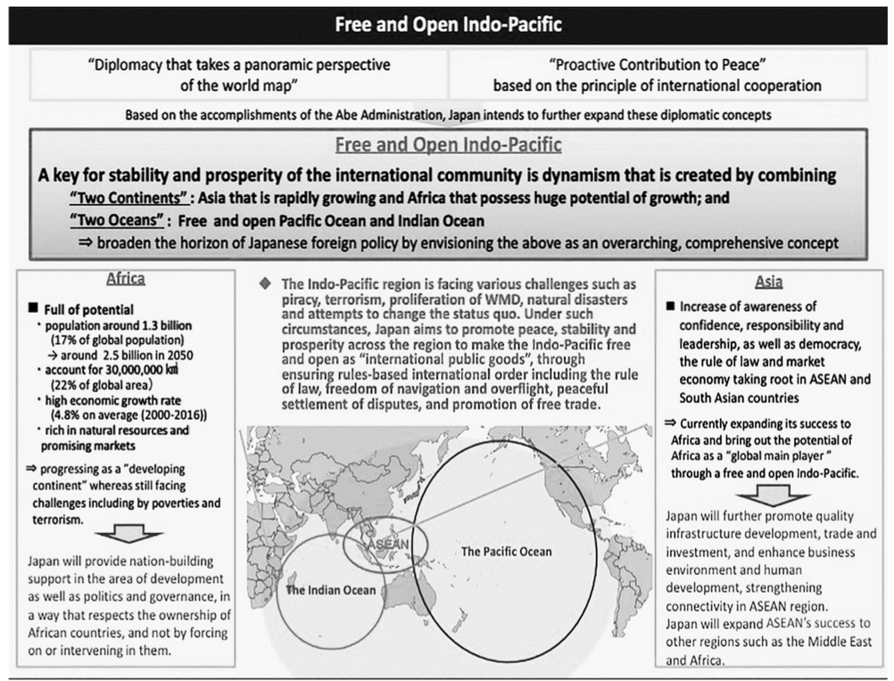
- AGREEMENTS AND MOU’S IN RECENT MEETING - 1. Mumbai-Ahmedabad High Speed Rail - The two leaders exchanged documents on the financing of the 4th tranche of Japanese funding for a loan of 300 billion Yen for the Mumbai-Ahmedabad High Speed Rail (MAHSR) or “Bullet Train” project. - 2. Japanese Language Education - A MoU on Japanese language education for the MEA. - 3. Investment Mobilization - Japan further plans to mobilise a total of U.S. $75 billion in public and private funds by 2030. - The Japanese leader also mentioned coordinating with India for projects as part of a “Bay of Bengal-Northeast India industrial value chain.” - 4. Defence Co-innovation - The two leaders also discussed co-innovation, co-design, co-creation in the defence field, and investment collaboration/partnership in this space. - Indian PM highlighted the openness of the Indian defence sector to Japanese private companies and Japanese FDI. - 5. Joint Crediting Mechanism - Ministry of Environment of Japan and Ministry of Environment, Forest and Climate Change of India signed an Aide Memoire on the Joint Crediting Mechanism (JCM), which has been under discussion for quite some time between the two countries. - 6. India-Japan Year of Tourism - The two leaders announced 2023 as the “India-Japan Year of Tourism.” - Indian PM expressed the desire to declare the next year as the year of youth exchanges between the two countries. - ISSUES OF GLOBAL AND REGIONAL IMPORTANCE - 1. Four Point Plan for Ukraine - Both India and Japan have agreed that they will “not tolerate” any unilateral and forceful change in the status quo of Ukraine or any country in the world. - They will continue to push for a peaceful settlement of the conflict. - Japan and India will also jointly address the situation whenever needed. - They will work together in providing humanitarian aid and assistance to Ukraine. - 2. China LAC Stand-off - India emphasised that until and unless there is peace and tranquillity in border areas, it cannot consider business as usual with China. - Japan raised the matter of East China Sea and South China Sea regarding China’s growing belligerence there. - Emphasis on non-militarisation and self-restraint, prioritising international law, particularly the United Nations Convention on the Law of the Sea (UNCLOS). - Facilitate collaboration, including maritime security, to meet challenges against the rules-based maritime order in the East and South China Seas. - 3. Japanese Investments in India - $42 billion in the next 5 years to finance public and private projects of mutual interest. - FOUNDING PILLARS OF INDIA – JAPAN RELATIONS - STRATEGIC COLLABORATION BETWEEN INDIA AND JAPAN - Indo-Pacific - Convergence on free, open and inclusive Indo-Pacific. - Defence and Security - Defence and security in the region – Quad, AUKUS, MALABAR. - India and Japan signed a Reciprocal Provision of Supplies and Services Agreement (RPSS). - The inaugural 2+2 ministerial meeting was held in November 2019. - Act East Forum - A decision was taken in the 2017 Summit to establish the India-Japan Act East Forum. - Objective: - Coordinate developmental projects in North-East India in areas of connectivity, forest management, disaster risk reduction, and capacity building. - Northeast Development - Upgradation of highways in Meghalaya, Tripura, and Mizoram underway. - 20 km-long bridge over the Brahmaputra River between Assam and Meghalaya. - Supply Chain Resilience Initiative (SCRI) - Launched by Trade and Economy Ministers of India, Japan, and Australia on 27 April 2021. - ECONOMIC COLLABORATION - Investment Promotion Partnership 2014 - Achieved the target of 3.5 trillion Japanese Yen in public and private investments in India. - Industrial Collaboration - 1,455 Japanese companies in India. - Eleven Japan Industrial Townships (JIT). - Foreign Direct Investment (FDI) and Official Development Assistance (ODA) - Japan is the 5th largest source of FDI and largest supplier of ODA to India. - Infrastructure Projects - Projects include Mumbai-Ahmedabad High Speed Rail, Dedicated Freight Corridor, metro projects, DMIC, etc. - Digital Partnership 2018 - Indian start-ups raised over USD 10 billion from Japanese VCs. - Private sector-driven fund-of-funds launched to invest in technology start-ups in India, raised USD 100 million. - ICT Cooperation - Collaboration in ICT, including 5G, under-sea cables, telecom, and network security. - Movement of Skilled Workers - Japan’s working-age population is declining; India can supply skilled workers. - MoU on Specified Skilled Workers to promote movement from India to Japan on a contractual basis. - Program enhancements: - Demand-supply matching using digital platforms, more test centers, awareness campaigns, Japanese language promotion, program monitoring, focus on North-East India. - Skill Development - Japan-India Institutes of Manufacturing (JIM) now 19. - Established by Japanese companies in India to train skilled workers. - COLLABORATION IN THE INDO–PACIFIC - Regional Collaboration - Collaboration in QUAD, SRI, MALABAR naval exercises with US and other like-minded countries. - Countering Chinese Assertion - Cooperation along LAC, South China Sea, and East China Sea. - Free and Open Indo-Pacific (FOIP) and Act East - Japan's FOIP Strategy and India's Act East Policy converge in northeast India. - Example: - Act EAST Forum. - Third Country Collaboration - Infrastructure development in third countries like Sri Lanka, Myanmar, and Bangladesh. - Asia Africa Growth Corridor (AAGC) - Collaborative effort to soft-balance China’s Belt and Road Initiative (BRI). - COLLABORATION ON GLOBAL ISSUES - Rules-Based Order - Both believe in upholding freedom of navigation and reinforcing rules-based international order. - NSG Support - Japan supported a waiver of NSG embargo on nuclear trade with India and backed its application for membership. - Joint Military Exercises - Exercises like JIMEX, MALABAR contribute to the image of rising regional power. - Global Issues - Cooperation on proliferation of Weapons of Mass Destruction (WMDs), terrorism, space and cyber security, environment (e.g., International Solar Alliance). - United Nations Security Council (UNSC) Membership - Both are members of G4 club (India, Japan, Brazil, Germany), supporting permanent UNSC membership. - 15. INDIA AND AUSTRALIA - Prime Minister Narendra Modi’s visit to Australia. The visit, which was originally planned for a multilateral event, the meeting of the Quad, it transformed into a purely bilateral visit after the U.S. President pulled out over domestic political constraints; Japanese Prime Minister Fumio Kishida followed suit, and a shortened Quad Summit was held in Hiroshima. As a result, PM visit to Australia was much more in the spotlight. - It needs to be highlighted that that purpose of such visits is conducive to strengthening the common understanding between both countries, or in the best interests of the “three D’s” i.e.—Democracy, Diaspora and Dosti [Friendship] as earlier reiterated by PM Modi. - During the recent visit the discussions focused in multiple areas with areas covering like that of cooperation in defence and security, trade and investment, new and renewable energy, green hydrogen, critical minerals, education, migration and mobility and people to people ties. - Institutionalisation of India-Australia Summit: - India & Australia has upgraded their relationship to Annual bilateral summits at the highest political level in 2023. A Consulate General of India in Brisbane was also established highlighting the growing trust, convergence of interests among the two middle powers. - India & Australia have already raised their relationship status to India-Australia Comprehensive Strategic Partnership level. - Strategic aspect of relations: - The leaders also reiterated their determination to ensure a peaceful, prosperous and inclusive Indo-Pacific region, underpinned by a rules-based international order. They also discussed reform of UN Security Council. Australian leader also expressed strong support to India's G20 Presidency and initiatives. - Economic aspect of relations: - Australia has many expatriate Indians to contribute to its economy. Also, it is a place where large number of Indian students go for higher education and employment. In this respect, the signing of India-Australia Migration & Mobility Partnership Agreement will further facilitate mobility of students, professionals, researchers, academics. This will be done through a new skilled pathway named MATES (Mobility Arrangement for Talented Early Professionals Scheme) specifically created for India. - A Business Roundtable with CEOs of top Australian companies was also organised, and the business leaders were invited to invest in India in areas particularly including that of digital infrastructure, IT, fintech, telecom, semiconductors, space, renewable energy including green hydrogen, education, pharma, healthcare including medical devices manufacturing, mining including critical minerals, textile, agriculture & food processing. - Partnership in emerging technologies: - The two countries have also finalized Terms of Reference of the India-Australia Hydrogen Task Force, to focus on deployment of clean hydrogen, fuel cells etc highlighting the cooperation in areas beyond traditional spheres of diplomacy. - However, despite of the increasing cooperation between the two countries there are still deep challenges that exist between two countries. - Significance Area Outcomes of Cooperation - This data was in table with three columns - Economic - Australia is an important trade partner of India with bilateral trade around $25bn. - Double Taxation Avoidance Agreement (DTAA) signed to avoid double taxation of offshore income of Indian companies doing business in Australia. - Australia can be a key partner in India’s “Make-in-India” initiative. - Investment opportunities for Indian companies in Australian mining and energy sectors. - India’s infrastructure sector under National Investment and Infrastructure Fund (NIIF) can offer investment opportunities to Australian funds, including pension funds. - Explored possibility of launching Indian RuPay Card in Australia. - Maritime - Shared vision- free, open, inclusive, rules-based Indo-Pacific region. - Common concerns on strategic, security, and environmental challenges in Indo-Pacific maritime domain. - Australia granted Rs 8 crore to India’s Indo-Pacific Ocean Initiative (IPOI). - Australian Navy actively participates in Indian Ocean Naval Symposium (IONS), started by India. - Defence - Australia is a key defence partner of India. - Increasing defence ties are crucial given China’s expansionism on land and maritime fronts. - Signed Mutual Logistic Service Agreement (MLSA) for reciprocal access to military logistics facilities. - Signed “White Shipping Agreement.” - Conducts bilateral maritime exercise AUS-INDEX once every 2 years. - Australia participated in Malabar Naval Exercise in 2020. - Energy - Australia is rich in coal, uranium, and natural gas reserves, aiding India’s energy security. - Signed Civil Nuclear Cooperation Agreement. - Explicit support for India’s membership in Nuclear Suppliers Group (NSG), despite India being a non-signatory of NPT. - Strategic and Multilateral Cooperation - Both countries share membership in the QUAD. - Commitment to multilateralism. - Australia supports UNSC reforms and India’s candidature for permanent membership. - People-to-People - Strong Indian diaspora in Australia. - Indian diaspora is one of the largest sources of skilled migrants. - India is the 2nd largest source of international students in Australia. - A “Migration and Mobility Partnership Arrangement” is being designed to: - Prevent illegal migration and human trafficking. - Facilitate mobility of students and researchers. - Promote migration of professionals for economic purposes. - Mutual Logistics Support Agreement (MLSA) - The agreement will facilitate reciprocal access to military logistics facilities and improve interoperability between the security forces of the two nations. - This will be useful during Bilateral naval exercises and Humanitarian, Disaster relief & rescue operation. - White Shipping Agreement - It refers to exchange of relevant advance information on the identity and movement of commercial non-military merchant vessels. Being aware of the identity of these vessels is imperative to preventing any potential threat from the sea from impinging on the coastal and offshore security of the country. - CHALLENGES IN THE RELATIONSHIP - Dichotomous Australian Foreign Policy - Misalignment in Australia’s economic and political interests. - Though Australia actively engages with India and US as part of QUAD, its economy still heavily depends on China due to large bilateral trade and investment. - Lingering CECA - Comprehensive Economic Cooperation Agreement (CECA) has not materialised despite negotiations starting in 2011. - This remains a hindrance to bilateral trade. - Withdrawal from Regional Comprehensive Economic Partnership (RCEP) - One reason for India’s withdrawal from RCEP was objections from farmer organisations and dairy cooperatives. - Fears of flooding of cheaper agricultural and dairy products from Australia were cited. - INDO-PACIFIC GEOPOLITICS & INDIA – AUSTRALIA RELATIONSHIP - Chinese Belligerence: - India and Australia have had to endure increasingly belligerent Chinese behaviour in the Indo-Pacific, pushing their bilateral relationship to new heights. - Improving Trajectory: - Australia-India relations have been on an improving trajectory in recent years. - Malabar Naval Exercise: - Australia was invited back to the Malabar naval exercise last year after many years. - AUKUS and Asian Partnerships: - While the U.S. security alliance (AUKUS) remains central to Australia, it has been expanding its Asian partnerships in the Indo-Pacific. - India’s Strategic Shift: - India long avoided taking sides between the U.S. and China, but the Galwan confrontation in 2020 brought Sino-Indian relations to an all-time low. India is now pursuing closer strategic engagements with like-minded partners, especially Australia. - Chinese Coercion: - Australia has faced bullying behaviour from China, largely due to its request for an independent inquiry into the origins of COVID-19. - Economic Coercion: - China has engaged in severe trade coercion against Australia, targeting barley, beef, seafood, wheat, wine, coal, cotton, copper, education, and timber. - Augmented Ties: - Bilateral, trilateral, quadrilateral, and other minilateral and multilateral engagements have strengthened India-Australia ties. - Strategic Convergence: - Shared interests in ensuring a free Indo-Pacific order and initiatives like the Supply Chain Resilience Initiative (SCRI) further bind the two countries. - 16. FREE TRADE AGREEMENTS - India pushing forward the long pending FTAs. The aim is to achieve the $2 trillion export target by 2030, and address disruptions in global supply chains created by the pandemic and the ongoing Russia-Ukraine war. - ABOUT FTAs: - Definition: - Free trade pacts remove entry barriers for goods & services between two trading partners. - Trade Conditions: - Goods & services can be bought and sold across international borders with minimal or no government tariffs, quotas, or subsidies. - Recent Developments: - India resumed talks with EU and Australia, started talks with UK, and finalised FTA with UAE. The India-UAE FTA is expected to double bilateral trade to $100 billion in 5 years while eliminating tariffs on a range of products. - AI ECTA: - India and Australia signed the first part of Australia-India Economic Cooperation & Trade Agreement (AI ECTA). - Early Harvest Deals: - India focuses on signing agreements on easier aspects first, keeping main tariff eliminations for later. - Pipeline FTAs: - Agreements with Israel, Canada, New Zealand, Indonesia, and Thailand are in the pipeline. - WHY A RENEWED PUSH FOR FTAs? - Past Reluctance: - Previous governments avoided FTAs fearing increased imports. - Strategic Alignment: - India seeks to enhance economic ties with strategic partners like Australia, France, and the UK. - Absence from Mega-Trade Pacts: - India is outside mega-trade pacts like RCEP; now entering minilaterals like I2U2, IPEF & Quad, which focus on supply chains but don’t guarantee market access. - Export-Led Growth: - FTAs are key for export-led growth, forex earnings, and job creation. - Market Access: - India wants greater access to complementary economies, since WTO negotiations are slow. - Reduce Imports from China: - To curb rising imports from China despite border clashes. - Rising Oil and Food Prices: - India aims to strengthen trade with friendly countries amid global price shocks from the Ukraine war. - CHALLENGES AND HURDLES: - Tariff Reduction: - Partner countries demand reduction in import tariffs for market access. - Domestic Industry Exposure: - Domestic industries face high competition and risk losing market share. - High Tariff Rates: - India’s average tariff is 15%, highest in Asia-Pacific, up from 13.5% in 2016. - RCEP Withdrawal: - India exited RCEP due to domestic industry pressure. - Australian Agricultural Tariffs: - Australia seeks major tariff cuts on agricultural produce, wine, and spirits, opposed by India. - UK Whisky Tariffs: - UK demands lower tariffs on whisky under India-UK FTA talks. - EU Demands: - EU will seek tariff eliminations in automobiles and auto parts. - Early Harvest Reluctance: - UK & EU are hesitant to finalise early harvest deals. - Aatmanirbhar Bharat Concerns: - Emphasis on self-reliance has made partner countries wary. - CHAPTER 5 - INTERNATIONAL ORGANISATIONS - 1. WTO – GENEVA PACKAGE - Under its 12th Ministerial Conference, WTO members agreed to a series of deals relating to temporary waivers on Covid-19 vaccines, a moratorium on e-commerce trade, food security and setting limits on harmful fishing subsidies. - IMPORTANCE OF MINISTERIAL CONFERENCE - Topmost decision-making body of WTO is the Ministerial Conference. - Usually meets every two years. - Brings together all members of the WTO, all of which are countries or customs unions. - Ministerial Conference can take decisions on all matters under any of multilateral trade agreements. - GENEVA PACKAGE - HIGHLIGHTS OF A HISTORIC MC-12 OUTCOME PACKAGE - TRADE AND HEALTH - Members agree on a COVID-19 global response, a framework to render WTO more resilient & better prepared for future pandemics. - AGRICULTURE - Declaration: - Draft Ministerial Declaration on the emergency response to food insecurity. - WFP Exemption: - Ministerial Decision to exempt food purchased by the UN's World Food Programme (WFP) for humanitarian purposes from any export restrictions. - FISHERIES SUBSIDIES - In a historic milestone for ocean sustainability, WTO members have foged an Agreement on Fisheries Subsidies which sets new global rules to curb harmful subsidies and protect global fish stocks for all those who rely on it, in a manner that also recognizes the needs of developing and least-developed countries. Members also commit to continue negotiations, including for further rules on certain fisheries subsidies that contribute to overcapacity and overfishing. - E-COMMERCE - WTO members agreed to maintain the current practice of not imposing customs duties on electronic transmissions until MC13. - DECISION ON AGRICULTURE - Member countries agreed to a binding decision to exempt food purchased by the UN’s World Food Program (WFP) for humanitarian purposes, from any export restrictions. - BACKGROUND: - Global Food Crisis: - Global food crisis because of Russia-Ukraine war. - India's Wheat Ban: - India's export ban on wheat. - Wheat Exporters: - Russia and Ukraine are amongst top wheat exporters in the world. - Export Share: - Five biggest wheat exporters (Russia, USA, Australia, Canada, and Ukraine) provided about three-fifths (59.5%) of overall value of international shipments for the nourishing cereal food. - Impact: - Exports have been adversely impacted because of the war, affecting food security in many countries (e.g., Egypt and other MENA countries). - India's Ban: - India, due to rising inflation, put a ban on wheat exports. - IMPACT: - Developed Countries: - Wanted a blanket ban on export restrictions and prohibitions. - Developing Countries: - Against such blanket ban to ensure domestic food security. - Outcome: - The agreement will ensure availability, accessibility, and affordability of food to those in need, especially in humanitarian emergencies. Member countries would not impose export prohibitions or restrictions on foodstuffs purchased for humanitarian purposes of the WFP. Encouraged member countries with available surplus to release them on international markets in compliance with WTO regulations. Instituted a work program to help LDCs (least-developed countries) and NFIDCs (Net Food Importing Developing Countries) enhance domestic food security and bolster agricultural production. - Unresolved Issue: - Could not reach agreements on issues such as permissible public stockholding threshold for domestic food security, domestic support to agriculture, cotton, and market access. India’s key demand to allow it to export food from its public stockholdings to other countries will be discussed in the next Ministerial Conference in 2023. - PUBLIC STOCKHOLDING ISSUE: - India’s Demand: - India has been demanding a permanent solution on Public Stockholding to implement National Food Security Act. - Bali Ministerial 2013: - At the Bali ministerial conference in December 2013, India secured a “peace clause." Under it, if India breaches the 10% limit on subsidy under AoA, other member countries will not take legal action under the WTO dispute settlement mechanism. Further, in 2014, India forced developed countries to clarify that the peace clause will continue indefinitely until a permanent solution is found. - AGREEMENT ON HARMFUL FISHERIES SUBSIDIES - WTO passed a multilateral agreement that would curb ‘harmful’ subsidies on illegal, unreported and unregulated fishing for the next four years, to better protect global fish stocks. - Agreement on Fishery Subsidies: - The WTO member countries were negotiating a multilateral treaty of Fishery Subsidies. This agreement seeks to prohibit certain forms of fisheries subsidies that contribute to overcapacity and overfishing. Some developed countries such as USA have been insisting that larger developing countries like India and China should not continue to get special and differential treatment. However, India has argued that special and differential treatment should be built into the fisheries subsidy agreement. - HARMFUL FISHING SUBSIDIES: - Definition: - Most ‘harmful’ fishing subsidies are those aimed at enhancing the fishing capacity of a vessel, including fuel subsidies, which make long-distance fishing economically viable. These subsidies are often relied upon by developing countries as well as developed countries. - Impact: - Harmful fisheries subsidies unbalance the fishing industry, incentivizing vessels to catch and remove fish faster than stocks can replenish. - UN FAO Data: - UN FAO has reported that 34% of world’s assessed fish resources are overfished, steadily increasing since the 1970s, when it was only around 10%. - OUTCOME: - UN SDG Alignment: - Agreement on harmful fisheries subsidies is in line with UN Sustainable Development Goal 14.6 (UN SDG). - Prohibitions: - Includes a strong prohibition of subsidies contributing to illegal, unregulated, and unreported (IUU) fishing with unprecedented transparency provisions. Also includes an absolute prohibition of subsidies for fishing on unregulated high seas. - Trust Fund: - A dedicated trust fund to provide technical assistance and capacity building for developing countries to implement the agreement. - Concession to Developing Countries: - The only exception for continuing subsidies for overfished stock is when they are deemed essential to rebuild them to a biologically sustainable level. There would be no limitation on subsidies granted or maintained by developing or least-developed countries for fishing within their exclusive economic zones (EEZ). This exception is provided because many people in developing and LDCs participate in small-scale fishing and rely on fish as a source of protein. - Significance: - First-time trade issues have been balanced with environmental issues under the aegis of WTO. Livelihood issues in developing and least-developed countries have been considered. A step in the direction of sustainable utilisation of fish stocks to boost food security. - MORATORIUM ON ELECTRONIC TRANSMISSIONS - WTO members agreed to extend moratorium on not imposing customs duties on electronic transmission (ET) until next ministerial conference. - Developed countries like USA, U.K., Australia, Japan and China etc., had sought an extension of the moratorium. - Developing countries led by India and South Africa were against extension of the moratorium. - ABOUT ELECTRONIC TRANSMISSIONS: - Definition: - ETs consist of online deliveries such as music, e-books, films, software, and video games. They differ from other cross-border e-commerce since they are ordered online but not delivered physically. - Developed Countries’ Position: - US, UK, Australia, Japan, China, etc., sought an extension of the moratorium. This would help maintain certainty and predictability for businesses and consumers, particularly during the pandemic. - Developing Countries’ Position: - Developing countries including India and South Africa opposed the moratorium. They wanted clearance on imposition of customs duties on such transmissions to generate more revenues and facilitate investment. They submitted that extending duty-free market access due to the moratorium resulted in a global loss of $10 billion per annum, 95% of which was borne by developing countries. - Why Impose Custom Duties?: - Customs duties are traditionally used to avert an undesired surge in imports, allowing nascent domestic industries to remain competitive. They provide necessary capital infusion for capacity building and help address the digital divide, particularly in low-income and developing countries, worsened by the COVID-19 pandemic. - Outcome: - Agreed to extend the moratorium on not imposing customs duties on electronic transmissions (ET) until the next ministerial conference. - E-COMMERCE ISSUES: - Developed Countries’ Proposals: - Developed countries led by the USA proposed tackling barriers that prevent cross-border sales, addressing forced data localization requirements, and permanently banning customs duties on electronic transmissions, among others. - India’s Position: - India has clearly stated that it is against any binding rules in e-commerce. - PATENT RELAXATION OF COVID VACCINES - Agreement: - Agreed on authorising the use of patents for producing COVID-19 vaccines by a member country without the consent of the rights holder for 5 years. Member countries were asked to waive requirements, including export restrictions under WTO regulations, to supply domestic markets and other countries with vaccines. WTO members to decide within six months whether to extend the waiver to therapeutics and diagnostics. Aim: improve vaccine equity, affordability, and accessibility. - Demand of Developing Countries: - India and South Africa proposed the patent waiver to speed up COVID-19 vaccine production for developing countries. Critics note that the waiver currently covers only vaccines, with a six-month timeline to decide on extension to diagnostics and therapeutics. - Opposition by Developed Countries: - Pharmaceutical companies in developed countries argued that the waiver could hurt future innovation and would not lead to faster vaccine production. - Waiver Details: - Any pharmaceutical company can manufacture vaccines or medicines without patents or voluntary licensing agreements. Companies have freedom to reverse-engineer, set prices, and export without limitations. They are not liable to compensate patent holders. Such waivers under WTO treaties (e.g., TRIPS) require consensus at the WTO Ministerial Conference and are only granted in exceptional circumstances like the COVID-19 pandemic. - WTO DECISION ON HANDLING FUTURE PANDEMICS - MC outcome contains a specific rebuke and reminder to the developed countries of their commitment under TRIPS Agreement, which urges them to encourage technology transfer from their countries to the Least Developed Countries. - Includes a series of issues members should consider preparing for future pandemics like export restrictions, trade facilitation, regulatory cooperation, and transparency, amongst others. - BASICS OF WTO - Definition: - Provides developing countries special rights and allows other members to treat them more favorably. Includes longer time periods for implementing agreements, support to build infrastructure for WTO work, and higher subsidies compared to developed countries (e.g., under Agreement on Agriculture, AoA). - Multilateral Agreements: - Adopted through consensus among all WTO members. Provisions apply to all members but may incorporate S&D for developing economies. Examples: AoA, GATS, TRIPS. - Plurilateral Agreements: - Agreements between a limited number of WTO members on a voluntary basis. Provisions apply only to signatories. Examples: Trade in civil aircraft, Government Procurement, Bovine meat, Dairy products, ITA-1 & II. - 2. DOHA ROUND - Aim to achieve major reform of international trading system through introduction of lower trade barriers and revised trade rules. The work program covers about 20 areas of trade. - It was an important step in prioritizing public health over intellectual property rights in certain situations. - The Round is also known as Doha Development Agenda as a fundamental objective is to improve the trading prospects of developing countries. - IMPORTANT DECLARATIONS UNDER DOHA ROUND - TRIPS and Public Health: - Reaffirmed flexibility of TRIPS member states to circumvent patent rights for better access to essential medicines. - Implementation Issues: - Refers to problems raised by developing countries regarding implementation of current WTO agreements from the Uruguay Round. - Agriculture: - Members committed to negotiations for improved market access, reduction of export subsidies, and substantial reduction of trade-distorting domestic support. S&DT for developing countries is integral to negotiations, addressing development needs including food security and rural development. - Special and Differential Treatment (S&DT): - Agreed that S&DT provisions are integral to WTO agreements and will be reviewed to make them more precise, effective, and operational. - Non-Agricultural Market Access (NAMA): - Covers trade negotiations on industrial products. Focus on reducing/eliminating customs tariffs and non-tariff barriers, including tariff peaks, high tariffs, and tariff escalation. Remains inconclusive due to lack of consensus. - 3. FAILURE OF DOHA ROUND - After Two decades the Doha Round of WTO is yet to achieve its goals. - Before 2003 Cancun ministerial, G20 was formed which included major developing agri-producing countries. Thus, the developing countries tried to push for agriculture issues which were not accepted by US and developed countries. - Talks failed in 2008 on the issue of Special Safeguard Mechanism (SSM) in Agriculture. Developing countries want that they should be allowed to raise tariffs temporarily to deal with import surges or price falls. - Bali Ministerial 2003 (Trade Facilitation agreement) was passed which was implemented in 2017. This agreement fulfils fundamental objective of cutting down red tape, expediting the movement, release and clearance of goods. It also reflects in full the S&DT applicable for developing and least-developed countries. - Agriculture remained an unresolved issue at Bali 2013. - Public stockholding issue: - At Uruguay Round, Public stockholding limit was fixed at, subsidies (difference between administered price (MSP in India) and market price) being no more than 10% of the value of production of the commodity. fixed external reference price was based on 1986-88 rates and there was no provision for inflation. - India with support of G33 coalition of countries wanted to move public stockholding to Green Box Subsidies (Permissible subsidies) to ensure Food Security under the National Food Security Act 2013. Developed countries opposed it. - In the end, compromise was that there would be a peace clause — India and others who avail of public stockholding will not be dragged to dispute settlement until a permanent solution is found. - This accompanied with the US’s insistence on the definition of developing countries. - Failure of appointments to appellate body because US blocked the appointments. - 4. INFORMATION TECHNOLOGY AGREEMENT (ITA) - INFORMATION TECHNOLOGY AGREEMENT (ITA-1) - Information Technology Agreement (ITA) is a plurilateral agreement under the WTO which came into force in 1997. It presently covers 81 WTO member countries which account for approximately 97% of world trade in information technology products. Every member country signing this agreement is required to eliminate tariffs on IT products listed in the Annex A and Annex B of the IT Agreement. Some IT products covered in this agreement include computers laptops, mobile phones, set up boxes, semiconductors, telecommunication equipment and parts etc. India is a signatory to ITA-1 and hence it has eliminated customs duties on 217 IT products over a period. - INFORMATION TECHNOLOGY AGREEMENT (ITA-2) - In 2015, some member countries agreed to expand the products covered by the Information Technology Agreement by eliminating tariffs on an additional list of 201 products. This was done on account of new advances in the field of information technology. The new accord covers new generation semi-conductors, semi-conductor manufacturing equipment, optical lenses, GPS navigation equipment, and medical equipment such as magnetic resonance imaging products and ultra-sonic scanning apparatus. However, it is to be noted that India has not signed ITA-2 since it would have an adverse impact on domestic manufacturing due to cheaper imports. - PRESENT CONTROVERSY - India’s Viewpoint: - Elimination of customs duties under ITA-1 hurt domestic IT component manufacturing. To boost local production, customs duties were raised to ~20% in Union Budget 2018-19. India asserts these goods fall under ITA-2, to which it is not a signatory, so no obligation exists to reduce duties. - WTO Member Countries’ Viewpoint: - Concerned about India’s customs duty hike on IT products, alleging that these products fall under ITA-1, not ITA-2. - 5. BREAKDOWN IN WTO DISPUTE SETTLEMENT MECHANISM - The WTO appellate body has become defunct after USA consistently blocked the appointment of Judges to the appellate body. The break down in the dispute settlement mechanism is a huge blow to the role of WTO which is facing the threat of trade war and rising protectionist policies of developed economies. - UNDERSTANDING DISPUTE SETTLEMENT MECHANISM - Settling disputes is the responsibility of the Dispute Settlement Body (DSB) which consists of all WTO members. - First stage: - Consultation (up to 60 days) to settle the trade disputes through conciliation. - Second stage (up to 1 year): - Failure of consultations leads to formation of Dispute Panel by the DSB. The report of the panel can be rejected only through consensus among the members of the DSB. - Appeal Stage: - Either side can appeal a panel’s ruling. Each appeal is heard by three members of a permanent seven-member Appellate Body set up by the Dispute Settlement Body. The members of the Appellate Body have four-year terms. The appeal can uphold, modify or reverse the panel’s legal findings and conclusions. The Dispute Settlement Body has to accept or reject the appeals report and rejection is only possible by consensus. - PRESENT CONTROVERSY - Sanctioned Strength: - 7 members appointed by consensus; quorum of 3 judges required to hear a case. - US Blocking Appointment: - US claims AB is biased and has blocked member appointments. Since Dec 10, 2019, only 1 judge remains, making the AB dysfunctional. - 6. AGREEMENT ON AGRICULTURE - Agreement on Agriculture (AoA) aims to facilitate international trade in agricultural goods by putting a cap on the agricultural subsidies given by the member countries. This agreement stands on 3 pillars viz. Domestic Support, Market Access, and Export Subsidies. -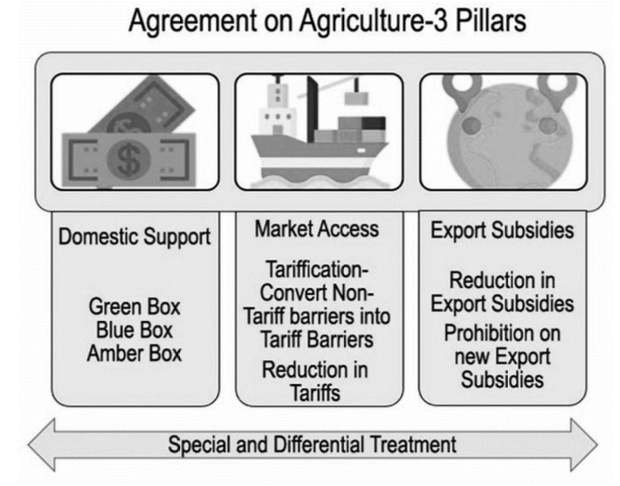
- CURRENT ISSUES WITH THE AOA: - National Food Security Act: - To implement NFSA, government needs to procure more food grains via MSP, which may exceed AoA subsidy limits. Developed countries like the USA challenge this. - Bali Ministerial 2013: - India secured a “peace clause” allowing temporary breach of 10% subsidy limit without legal action. India now demands a permanent solution on Public Stockholding for NFSA. - INDIA'S ARGUMENT AGAINST SUBSIDIES UNDER AOA: - Deceptive Subsidy Limit: - Absolute subsidies by developed countries are much higher than India’s despite percentage limits. - No Inflation Adjustment: - Subsidy limits are based on 1986-88 production values; inflation has increased agricultural commodity prices since. - Green Box Misuse: - Developed countries like USA misuse Green Box (direct income support not linked to product), with ~50% of US agricultural production value supported this way. - Food Security Procurement: - MSP procurement is for domestic food security, not export boosting; should be classified under Green Box rather than Amber Box. - Conclusion: - India seeks to correct historical imbalances and ensure fair, rule-based international trade under AoA. - WTO - In June 2022, the member-countries of the World Trade Organization (WTO) managed to hammer out a face-saving deal, India played a vital role at the Geneva ministerial conference, thereby keeping faith in trade multilateralism alive. - An important part was resurrecting the WTO’s dispute settlement system (DSS), also called WTO’s ‘crown jewel’, by 2024. Since 2019, the WTO’s two-tiered DSS remains paralysed. - The appellate body, which is the second tier of the WTO’s DSS that hears appeals from WTO panels, is non-functional because the United States, single-handedly, has blocked the appointment of its members. - The U.S. reproaches the appellate body for judicial overreach and exceeding its assigned institutional mandate. - One major problem that the U.S. identifies is that the appellate body, contrary to the text of the WTO’s dispute settlement understanding (DSU), has been creating binding precedents through its decisions. - 7. UN AND RETREAT OF MULTILATERALISM - United Nations commemorated its 75th anniversary on September 21, 2020 by adopting a Declaration. The anniversary comes at a time when the world is witnessing a retreat from multilateralism. - Multilateralism: - In international relations, multilateralism refers to an alliance of multiple countries pursuing a common goal. - HOW DOES IT HELP? - Bind Powerful Nations: - Binds powerful nations to avoid possibility of future conflict. - Discourage Unilateralism: - Discourages unilateralism. - Voice for Small Powers: - Gives small powers a voice and influence that they could not otherwise exercise; small countries can collectively influence larger ones. - Influence Among Great Powers: - Multilateralism allows great powers to influence each other through negotiation rather than costly bilateral control. - Post-WWII Adoption: - Multilateralism adopted post-WWII via UNO, though its importance is eroding due to challenges. - CHALLENGES TO MULTILATERALISM: - Rise of Nationalistic Politics: - Seen in global and emerging powers; e.g., Brexit. - Powerful Nations: - Challenging the multilateral world order. - Rise in Conflicts: - Conflicts in Syria, Yemen, Afghanistan show lack of collaboration among major powers. - Changing Geopolitics: - Rise of China, Russia-China axis, SCO; West seeks to maintain hegemony, leading to erosion of cooperation. - Lack of Consensus: - Cross-national issues like poverty, hunger, climate change require collaboration; zero-sum attitudes cause sub-optimal outcomes. - CHALLENGES TO UN SYSTEM: - Cold War: - First challenge; world divided into two camps. - Post-Cold War: - NATO and US containment of Russia; China uses P5 status against designating Pakistan-based terrorists. - VIOLATION OF THE CHARTER – UKRAINE WAR: - UN Principles: - Territorial integrity and sovereignty of states are UN principles. - Russia’s Veto: - Russia vetoed resolution on Ukraine. - U.S. Veto: - US vetoed resolution condemning Israel’s actions in occupied territories. - Veto Misuse: - P5 members use veto based on interests, not UN principles. - LACK OF CONSENSUS ON NUCLEAR DISARMAMENT: - Nuclear Security Perception: - Ukraine war shows nuclear weapons perceived as security guarantee. - Case Studies: - Iran and North Korea avoided war; Ukraine and Libya, which gave up nuclear weapons, were invaded. - NPT Issues: - Nuclear states used NPT to perpetuate their weapons while non-nuclear states rely on guarantees. - Impact: - Actions may increase nuclear arms race. - CHALLENGES IN THE FUNCTIONING OF UN AND OTHER MULTILATERAL BODIES: - UNSC Issues: - Rift among P5, lack of representation, failure on emerging conflicts. - UNGA Limitations: - More representative but less powerful than UNSC. - WHO Failures: - Failed early warnings during COVID-19. - WTO Failures: - Doha Agenda negotiations stalled; bilateralism and protectionism rising. - Lack of Accountability: - Violators of international law not held accountable. - Geo-Political Interests: - Nations pursue narrow interests (e.g., UNESCO funding issues in 2019). - Leadership Bias: - USA & EU dominate World Bank and IMF leadership; poor countries have limited influence. - Arms Control: - Threatened by dismantling Iran nuclear deal; climate efforts mostly symbolic. - Internet Governance: - Private companies hoard data; authoritarian states misuse it for surveillance. - ISSUES IN FINANCING OF UN: - Peacekeeping Budget: - 95,000 personnel engaged, but budget just $8 billion; troop-contributing countries rarely decide mandates. - Outstanding Contributions: - $711 million unpaid in general budget. - Voluntary Contributions: - Humanitarian, development, and agency budgets rely heavily on voluntary funds. - Climate Change Financing: - Developed nations failed to deliver $100 bn promised for climate finance to developing countries. - 8. REFORMED MULTILATERALISM - In line with its agenda in its 8th term as the non-permanent member of the UNSC, India has reaffirmed its commitment to New Orientation for Reformed Multilateral System or NORMS at the UN Economic and Social Council meeting. So let us understand the need for reforming present paradigm of Multilateralism. - BACKGROUND- NORMS - India’s entry into UNSC aims to push for reformed multilateralism under NORMS framework. - 5-Fold Objective of NORMS: - 1. Finding new opportunities for progress - 2. Effective response to international terrorism - 3. Reforming multilateral systems - 4. Comprehensive approach to international peace and security - 5. Technology with a human touch - APPROACH - India’s strategy for reformed multilateralism rests on 5S pillars: - 1. Samman (Respect) - 2. Samvad (Dialogue) - 3. Sahyog (Cooperation) - 4. Shanti (Peace) - 5. Samriddhi (Prosperity) - NEED FOR REFORM IN MULTILATERAL WORLD ORDER - Lack of Representation: - Permanent UNSC membership lopsided; major populations in South America and Africa unrepresented; populous countries like India and Brazil lack permanent seat. - Lack of Accountability: - Multilateralism skewed toward few global powers leveraging military/economic might. Examples: - US withdrawal from WHO, UNESCO, Paris Agreement. - US influence on WTO Appellate Body, rendering it defunct. - China ignoring UNCLOS ruling in South China Sea. - Credibility of WHO questioned for pro-China bias during pandemic. - MULTILATERALISM AT THE WEAKEST - Failure to Deliver: - System has failed to ensure shared benefits via integration. - Ukraine War: - UNSC failed to protect Ukraine from Russian aggression. - China’s Reluctance: - Limited cooperation on pandemic-related issues. - NEEDS OF 21ST CENTURY - Cross-National Challenges: - Issues like COVID-19 show health crises can trigger economic crises due to cross-nation supply chains and financial systems. - Global Issues: - Poverty, hunger, climate change, inequality, fake news, terrorism are cross-national; need inclusive, democratic multilateral approach. - INDIA’S VISION FOR REFORMED MULTILATERALISM - UNSC Permanent Seat: - India seeks permanent membership alongside G4 (Japan, Germany, Brazil) for true representation. - Counterterrorism: - Key priority; depoliticize sanctions process and push for Comprehensive Convention on International Terrorism (CCIT) initiated in 1996. - Rule-Based Order: - Ensure no country can arm-twist multilateral financial institutions like WTO and IMF. - Representative Order: - Lead creation of representative multilateral order engaging countries based on pluralism, democracy, liberalism; join initiatives like Alliance for Multilateralism (France & Germany). - OUR COMMON AGENDA - 75th UN Anniversary: - Member States recognized interconnected challenges needing stronger cooperation and reinvigorated multilateralism with UN at the center. - Leaders pledged to strengthen global governance and asked Secretary-General for a report with recommendations. - UN Secretary-General prepared comprehensive report “Our Common Agenda” outlining 12 action areas. - Proposed Summit of the Future to forge global consensus on shaping the future and securing it. -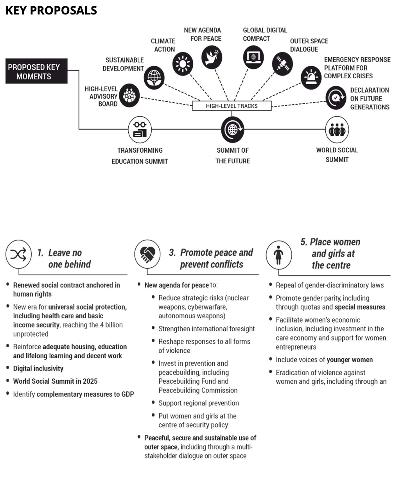
-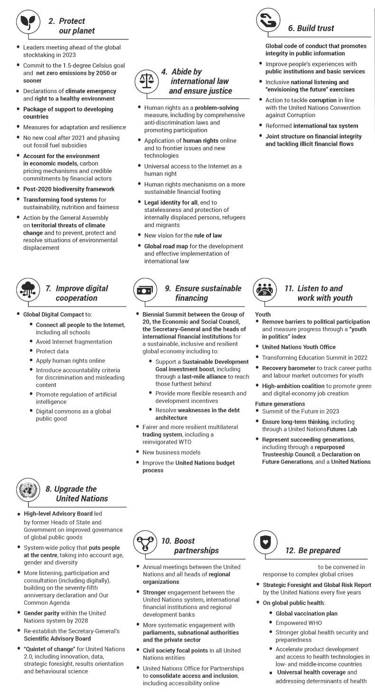
- 9. UNSC REFORMS - India was elected as a non-permanent member of the United Nations Security Council with an overwhelming majority. It garnered 184 votes in the General Assembly that consists of 193 members. The two-year term will begin on 1 January 2021. - This is the eighth time India has been elected a non-permanent member of the UNSC. - WHAT IS UNSC? - The Security Council, the United Nations’ principal crisis-management body, is empowered to impose binding obligations on the 193 UN member states to maintain peace. - Few major Roles: - Peace and Security: - Ensures international peace and security. - Membership Approval: - Recommends General Assembly to accept new UN members. - Charter Changes: - Approves any changes to UN Charter. - Decision Requirement: - No charter changes or new member admissions without UNSC approval; requires agreement of all P5 members. - SECURITY COUNCIL STRUCTURE - Permanent Members: - China, France, Russia, UK, USA (P5); each has veto power. - Non-Permanent Members: - 10 rotating members by geographic region; no veto power. - Veto Origin: - Rooted in WWII; US, USSR, and UK shaped post-war order and granted vetoes to major victors. - NEED FOR UNSC REFORMS - Changing Geopolitics: - Membership and methods reflect 1945 era; global power distribution changed. - Reforms Overdue: - Only 4 non-permanent members added in 1963; overall UN membership increased from 113 to 193, UNSC composition unchanged. - Inequitable Representation: - Europe overrepresented; Asia underrepresented; Africa & South America unrepresented. - Crisis of Legitimacy: - Stalled reforms, controversial interventions in Libya and Syria question credibility. - North-South Divide: - Permanent membership shows divide; e.g., Africa has no permanent member though 75% of UNSC work relates to it. - Emerging Issues: - Economic interdependence, environmental degradation, transnational threats require consensus; UNSC critical decisions still taken by P5. - AREAS OF UNSC REFORM - Membership: - Expansion to remedy democratic deficit; debate over permanent seats & veto power. - Veto: - P5’s veto power controversial since 1945; ongoing debate about existence and use. - Regional Representation: - Expansion could include emerging powers; alternative- permanent seats for regional blocs. - Transparency: - Recent steps include more public meetings and NGO consultations; no Charter amendment needed. - UNSC & UNGA Relationship: - Improved interaction enhances transparency, accountability, legitimacy; GA consultation strengthens Council’s work. - RATIONALE FOR INDIA’S PERMANENT MEMBERSHIP - Veto Power: - To defend national interests using veto if needed. - Prestige: - Recognition of India’s global power status; key role in international peace and security. - INDIA’S CLAIMS FOR PERMANENT UNSC POSITION - Population: - Around 1/6th of global population. - Democracy: - Continuous functional democracy contributing values to UNSC. - Economy: - 5th largest economy in 2019; 3rd by PPP. - Military: - Responsible nuclear power; 3rd largest military spender. - Contributions to UN: - Largest contributor to UN Peacekeeping Operations; significant financial contributions. - Global Participation: - Active leadership in climate change, counter-terrorism, rule-based global order. - G4 Membership: - Part of G4 (Brazil, Germany, India, Japan) supporting each other’s bids. - Challenges: - Strong case but membership faces multiple challenges from various nations and factors. - 10. UN PEACEKEEPING FORCE AND ISSUES INVOLVED - A spate of attacks on United Nations Peacekeepers in the Democratic Republic of Congo (DRC) amid anti-UN protests in the past few weeks has left two BSF jawans dead. The issues of growing fatalities and the lack of clear mandates for the ‘blue helmets’ were at the top of the agenda as UN Peacekeeping chief Jean-Pierre Lacroix held a meeting in Delhi as part of a tour to India, Pakistan, the UAE and Japan. - FATALITIES IN PEACEKEEPING MISSIONS - Rising Fatalities: - Malicious-act fatalities rising- 13 in 2020 → 25 in 2021 → 26 till August this year. - India’s Losses: - India lost 179 peacekeepers in 60 years; limited influence on mission types. - India’s Proposal: - 10-point plan to make those targeting UN peacekeepers more accountable. - BASIC PRINCIPLES OF UN PEACEKEEPING - Consent: - Consent of the parties involved. - Impartiality: - Neutral approach without favoring any side. - Non-Use of Force: - Force only in self-defense. - Defence of Mandate: - Protecting the assigned mission mandate. - HISTORY OF PEACEKEEPING - Origin: - Formed as a tool to maintain peace/security during Cold War when UNSC was paralyzed. - First Mission: - Arab-Israeli war; unarmed troops to monitor, report, and build confidence. - First Armed Mission: - 1956 Suez Crisis. - First Large-Scale Mission: - Congo Crisis; 20,000 troops deployed, India contributed heavily. - Total Missions: - Over 70 UN peacekeeping missions since inception. - INDIA-UN PEACEKEEPING - India is one of the founding members of United Nations. India’s commitments for maintenance of international peace have been second to none. - INDIA'S CONTRIBUTION IN PEACEKEEPING EFFORTS - Korean War: - 1950 - Medical Unit and Custodian Force for Neutral Nations Repatriation Commission. - Gaza Strip: - Indian forces served from 1956 to 1967. - Congo: - 1960 - Participation during independence from Belgium. - Other Missions: - Iran–Iraq post Gulf War I, Iraq-Kuwait border, Central America, Lebanon, Golan Heights, Rwanda, Sudan/South Sudan. - Total Troops: - 49 missions; over 2,08,000 troops; highest contribution among all countries. - Sacrifices: - 156 Indians have lost their lives; highest for any nation. - Awards: - Indian peacekeepers awarded Dag Hammarskjold award for supreme sacrifices. - All-Women Contingent: - India uniquely sent an all-women contingent in Liberia. - Training Centre: - Established in Delhi under Centre for UN Peacekeeping. - Professionalism: - Known for competence, professionalism, and rapport with local populations. - Current Deployment (2019): - 6,022 Indian troops deployed in 9 of 14 UN missions, mainly in Congo, South Sudan, Lebanon. - CHANGING NATURE OF PEACEKEEPING - Civil Wars: - Missions often in areas lacking constitutional authority. - Non-State Actors: - Sometimes involved actors not bound by norms. - Humanitarian Operations: - Monitoring relief operations. - Human Rights: - Address human rights violations. - Mine Clearance: - Assist in mine clearance operations. - Boundary Monitoring: - Monitor state boundaries. - Civilian Police Support: - Provide support to civilian police. - Infrastructure Building: - Assist in roads, railways, bridges. - Electoral Processes: - Support elections. - Reluctance of Developed Countries: - Less contribution of troops. - Fund Misappropriation: - Allegations by contributing nations of misuse of funds. - Foreign Exchange Motive: - Some countries (Pakistan, Bangladesh) view peacekeeping as revenue source, acting irresponsibly. - INDIA’S NEW TEN-POINT PLAN FOR PEACEKEEPING - 1. Clear and realistic mandates matched with adequate resources; troop-contributing countries need a role in decision-making. - 2. Avoid misleading terminologies; deploy missions prudently with recognition of limitations. - 3. Coordinate with host governments to counter misinformation and bring perpetrators of crimes against peacekeepers to justice. - 4. Ensure urgent installation of memorial wall for fallen peacekeepers at UN headquarters. - 5. Establish trust and coordination between mission leadership and host state for operational success. - 6. Emphasize the role of women peacekeepers; first all-women contingent deployed in Liberia (2007). - 7. Introduce advanced technology; supported "Unite Aware" platform in 2021 and signed MoU with UNC4ISR Academy in Uganda. - 8. Address insecurity of civilians caused by terrorist groups; primary responsibility lies with host government. - 9. Regional approach for armed conflict resolution and collective security; involve regional/sub-regional organizations in mediation, monitoring ceasefires, peace accords, and post-conflict rebuilding. - 10. Factor in exit strategies from inception to avoid redundant missions draining UN resources. - 11. G7 - NEED FOR EXPANSION - The Grouping began as the Group of Six in 1975- with a meeting of leaders of US, UK, West Germany, Italy, France and Japan, because of the Oil crisis and global currency exchange issues that decided to meet annually. - The Group of 7 (G7) is an informal group of seven countries — the United States, Canada, France, Germany, Italy, Japan and the United Kingdom, the heads of which hold an annual summit with European Union and other invitees. - Together the member countries represent 40% of global GDP and 10% of the world’s population. - G7 has no legal existence, permanent secretariat or official members. - Leaders of G7 countries meets annually and discusses emerging global issues. - India has been a special invitee to the G-7 on several occasions in past two decades- including 5 consecutive years from 2005-2009 during global economic crisis. This year Indian PM was invited at summit. - KEY OUTCOMES OF G7 MEET - China Approach: - United approach to diversify supply chains to reduce dependence on China; not decoupling but de-risking. - China-Taiwan Tensions: - Allies agreed on response if China acts unilaterally against Taiwan. - Ukraine Support: - PM Modi assured Ukraine of India’s support to resolve the war. - Hiroshima Action Statement: - Launch for resilient global food security with partner countries. - Infrastructure Investment: - Mobilize $600 billion for quality infrastructure via PGII. - Indo-Pacific Commitment: - Free, open, inclusive, prosperous, and secure region based on rule of law and human rights. - Russia Condemnation: - Condemned Russia’s war against Ukraine as violation of international law. - Nuclear Disarmament: - Commitment to a world without nuclear weapons with security for all. - CHALLENGES FACED BY G7 GROUPING -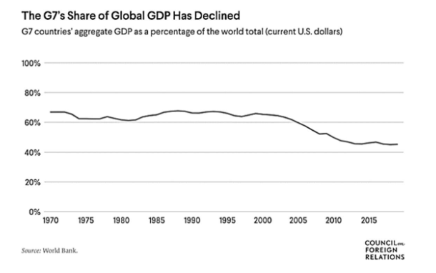
- Changing Economic Situation: - G7’s share of global GDP has fallen from two-thirds to less than a third (PPP) and less than half (MER). - Emerging Economies: - E7 (Brazil, China, India, Indonesia, Mexico, Russia, Turkey) account for over a third of global GDP (PPP). - India’s Growth Projection: - India’s GDP projected at $17 trillion by 2030 and $42 trillion by 2050 (PPP), second after China. - LIMITATIONS OF G7 - Elite Club: - Membership excludes emerging economies like India and China. - Polarisation: - Excluding Russia and China deepens global polarization. - Military Focus: - Economic agenda often overshadowed by political/military issues. - Economic Failure: - Failed to prevent 2007-08 economic downturn; led to G20 rise. - Contemporary Issues: - Lacked focus on COVID-19, climate change, Daesh, state collapse in West Asia. - Fossil Fuel Phase-Out: - No concrete plan despite prior announcements. - Lack of Formal Structure: - No charter or secretariat. - Lack of Representation: - Excludes major global players like Russia, China, India. - US Challenges: - US leadership questioned G7 unity under Trump. - China Threat: - Seen as economic, ideological, and geopolitical challenge. - Countering BRI: - Partnership for Global Infrastructure and Investment (PGII) announced. - WHAT IT MEANS FOR INDIA - Diplomatic Balancing: - Tightrope between West and Russia-China becomes more complex. - Economic Initiatives: - India joined IPEF; yet to join PGII; US-China rivalry in Indo-Pacific intensifies. - Partnerships: - Strengthened ties with Indonesia, Brazil, South Africa, ASEAN for balanced engagement. - Balancing Role: - India avoids anti-West language at BRICS summit and moderates condemnations at G7 outreach. - WHY WE NEED A NEW INSTITUTION - Global Challenges: - Mechanism needed for trade wars, economic slowdown, political turmoil, counterterrorism, and non-proliferation. - Inclusive Membership: - Include seven future leading economies plus Germany, Japan, UK, France, Mexico, Turkey, South Korea, Australia. - Specific Issues: - Address Ukraine war, global economic slowdown, Iran’s nuclear program, peace in Afghanistan, Gulf/West Asia stability, tensions in Korean peninsula and South China Sea. - 12. G20 AS AN ALTERNATIVE TO G7 - Power and prestige of Group of Twenty (G20), a forum for finance ministers and central bank governors from nineteen of world's largest countries and EU, has surpassed that of G7. - Emerging powers including Brazil, China, India, Mexico, and South Africa, whose absence from G7 was often noted, all belong to G20. Russia remains a member of G20. - Group's member states represent about 85% of global GDP and three-fifths of the world's population. - G20 was most effective during 2007–08 global financial crisis. -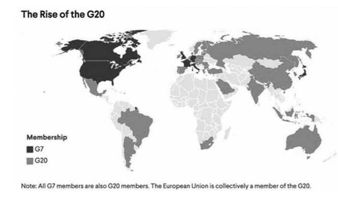
- CHALLENGES WITH G20 - Great Power Rivalry: - Presence of US, China, and Russia may turn G20 into a forum for great power competition post-Ukraine crisis. - 2014 Summit Failure: - Australia-hosted summit plan to boost economies by 2.1% was not achieved. - US Protectionism Block: - US blocked reference in communiqué urging resistance to all forms of protectionism. - Argentina Summit: - Communiqué excluded issues like trade, climate change, and migration. - WTO Dispute Settlement: - G20 supports urgent restoration of WTO dispute settlement; US had blocked appointments to appellate body under Trump; no action yet by Biden. - IMF Special Drawing Rights (SDR) Allocation: - Agreed SDR allocation of $650 billion criticized as insufficient for emerging economies. - Climate Goals Impasse: - Members failed to commit to limiting global warming below 1.5°C and phasing out coal; US, EU, Japan, Canada push for 2025 coal phase-out. - 'D10' COALITION OF DEMOCRACIES - Expansion of G7 with India, Australia, South Korea. - Proposed by Boris Johnson initially to counter China’s technological dominance in 5G and supply chain vulnerabilities. - Under Biden, seen as alternate democratic grouping against authoritarian states like China. - ADVANTAGES OF PROPOSED D10 COALITION - Technology and Investment: - 5G alliance may bring tech and investment opportunities to India. - Soft Power and UNSC Reforms: - Membership enhances India’s soft power and provides a platform to push for UNSC permanent seat reforms. - Countering China: - Acts as a bulwark against Chinese expansionism in the Indian Ocean and aggressive diplomacy in India’s neighborhood. - Trade Opportunities: - If D10 evolves into a trade bloc, could improve trade and investment prospects for India (considering EU-India trade deal delays and RCEP pullout). - CHALLENGES - Economic Interconnectedness: - Cross-border economic links limit rigid divisions between democracies and authoritarian states. - South Korea's Position: - Reluctant to join formal D10 or Quad-plus due to economic ties with China. - EU's Position: - EU wary of D10; recently signed new investment treaty with China. - India’s Strategic Partners: - India cannot alienate friendly non-democratic states like Vietnam, Iran, Russia, crucial for its global ambitions. - Western Allies: - US and EU maintain relationships with authoritarian regimes in West Asia and Africa. - 13. INDIA AND G-20 - India declared that its G-20 presidency would be "inclusive, ambitious, decisive, and action-oriented" and India would give priority to "women-led development" on its G-20 agenda, which would be driven by the recently unveiled theme of "One Earth, One Family, One Future". India is expected to showcase its geographical and cultural diversity. - GLOBAL ORDER - India can assert its political, economic and intellectual leadership which will have to address issues that help in cement the Fault-line in the world order. - India's leadership could define the coming years and decades of global discourse and avenues of cooperation. - GLOBAL FINANCE - First, the world needs new windows for financing climate infrastructure. Using the G20, India should press the International Monetary Fund (IMF), the World Bank Group and the Asian Development Bank to open new windows for financing climate infrastructure to support the Panchamrit goals. - If India manages to persuade the IMF to open a window for climate financing, it would be significant. - GLOBALISING TECHNOLOGY - India should use the G20 to roll-out the India Stack on the global stage. India Stack is the world's largest digital public utility and is growing by leaps and bounds. Some of its principal components are Aadhaar, UPI, eKYC, DigiLocker. - If India does this using G20 as a platform, it will enable the country to be showcased on the global stage and other countries to leapfrog their own systems. - ALTERNATIVE FINANCE MECHANISM - India could use the platform to push its own agenda and South Asia's agenda on a global scale — for example, by coming up with an alternative financial mechanism to SWIFT, which is a U.S. monopoly; and taking baby steps for making the rupee more international. - NEW ECONOMIC ORDER - India should leverage the G20 to re-imagine the shareholding structures of the IMF and World Bank. - India can use the leadership to re-imagine the shareholding structure in such a way that it reflects its global aspirations and power position and those of other emerging markets. - SHOWCASING DIVERSITY - G20 would be a good platform for India to showcase the multiple and myriad aspects of its composite culture so that the world begins to appreciate the richness and cultural tenacity of the country. - This is a big moment for India to showcase and influence soft power abroad, as the brilliant and powerful diaspora is doing right now. - 14. SHANGHAI COOPERATION ORGANISATION - Saudi Arabia has agreed to join the Shanghai Cooperation Organisation (SCO) as a "dialogue partner", the latest indication of closer political ties with China. - This is also seen as the step in the direction where Saudi Arabia can later become a full-time member of the organization. - THE SAUDI-CHINA BONHOMIE - By joining the SCO, Saudi Arabia's security relationship with China is currently blossoming. But this relationship is nothing new and stems back decades before. - The ballistic missile sales from China to Saudi Arabia as far back as the 1980s, with reported sales in 1992, 2007 and 2014. In 2021, the kingdom imported sensitive missile technology from the Chinese military to manufacture its own ballistic missiles. - Saudi Arabia, the world's largest crude supplier, and China, the biggest energy consumer, met to discuss their ambitions for an initial agreement of $29.26 billion. - The United States was Riyadh's largest trading partner at $76 billion in 2012, but now China, India and Japan have surpassed the United States, with which trade was only $29 billion in 2021. - Saudi Aramco signed two deals to build a major refining and petrochemical complex in China valued in the billions of dollars. - It can be concluded that Saudi Arabia is seemingly looking to diversify its global partnerships in the same way that it has been diversifying its economy into non-oil sectors and reducing its dependence on one single source. - REASONS BEHIND BLOSSOMING TIES - US Distancing: - US less dependent on Middle East energy; emerged as major oil and gas exporter. - US-Saudi Tensions: - Relations strained since Joe Biden took office. - Yemen Conflict: - US ended combat assistance to Riyadh in Yemen against Houthi movement. - Energy Prices and OPEC+: - Despite US calls to increase output, Saudi joined OPEC+ and Russia in cutting production. - Costly US Presence: - US presence in region increasingly expensive due to growing influence of Axis of Resistance. - Saudi-Syria Ties: - Saudi Arabia initiated talks to restore ties with Syria, suspended from Arab League since 2011. - Iran's SCO and BRICS Interest: - Iran joined SCO and seeks BRICS membership; Saudi aspires similarly. -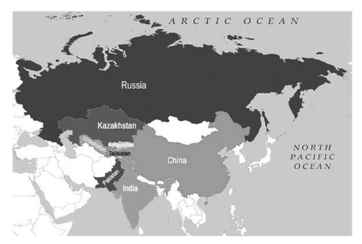
- STRUCTURE OF SCO - Regional Anti-Terrorist Structure (RATS) is permanent body in Tashkent, Uzbekistan; based on Shanghai Convention on Combating Terrorism, Separatism, Extremism. - SCO objectives: - Strengthen mutual trust and neighborliness. - Promote cooperation in politics, trade, economy, research, technology, culture, education, energy, transport, tourism, environment. - Maintain regional peace, security, stability. - Work toward democratic, fair, rational international political and economic order. - IMPORTANCE FOR INDIA - Energy Security: - Access Central Asian energy via Chabahar port and International North-South Transport Corridor. - Economic Growth: - SCO countries: - 40% global population; >22% global GDP; projected 38-40% by 2025. - Security Cooperation: - RATS platform for intelligence, regional counter-terrorism, drug trafficking, Afghan conflict resolution. - Gateway to Eurasia: - Engage with Eurasian Economic Union (EEU) and markets. - Connect to Central Asia: - Advance India’s Connect Central Asia policy. - Enhanced Status: - Bolsters India as major Pan-Asian player beyond South Asia. - Value Alignment: - "Shanghai spirit"- harmony, non-interference, non-alignment; aligns with India’s values. - Bilateral Cooperation with China: - Platform to reduce tensions, ahead of informal summit in India. - Engage Pakistan: - Informal SCO meetings enable India-Pakistan engagement on anti-terrorism. - CHALLENGES FOR INDIA IN SCO - Dominance of China and Russia: - Limits India’s ability to assert influence within the group. - China's Belt and Road Initiative: - All members except India endorse BRI; India opposes due to sovereignty concerns (CPEC). - India-Pakistan Rivalry: - Continuous confrontation hinders adherence to "good-neighborliness". - Pakistan's Map Issue: - India walked out after Pakistan presented a "fictitious" map in meeting. - Definition of Terrorism: - SCO defines terrorism as regime destabilization; India focuses on state-sponsored cross-border terrorism. - WAY FORWARD - Thus, it can be said that SCO is part of India's stated policy of pursuing "multi-alignments." Hence, India must continue to look for positive engagement with the member nations of this organization. - INDIA'S MEMBERSHIP OF SCO AND QUAD - A GEOPOLITICAL CONTRADICTION? - India's membership of the Shanghai Cooperation Organization and the Quadrilateral security dialogue is seen as a geopolitical contradiction by various experts. SCO is a China led initiative, while Quad is a US led initiative. India is a member of which has made some experts to call it contradiction. Questions have been raised as to how far India can walk the tightrope of Strategic autonomy by participating in the SCO and quad which have opposite objectives. - SCO QUAD -| Aspect | SCO | Quad |
|---|---|---|
| Purpose | SCO with Russia and China is seen as a counter to the NATO | Quad with US allies is seen as a counter to the China and Russia |
| India's Membership | India Joined SCO in 2017 | Quad began after 2004 but revived after 2017 |
| Focus | SCO deals with continental neighborhood | Quad deals with Maritime neighborhood |
| Stance on Taliban | Except India SCO members have taken a stand on Taliban | Quad members have stayed distant |
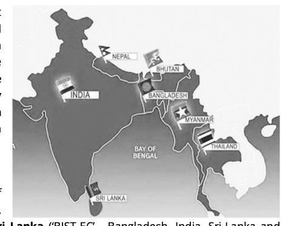
- Full form is Bay of Bengal Initiative for Multi-Sectoral Technical and Economic Cooperation - With SAARC taking a backseat because of India-Pak Rivalry and increased geopolitical focus on the Indo-Pacific, India is seen to be increasing its focus on the BIMSTEC to engage with the Bay of Bengal littoral countries with an aim of ensuring free and Open Indian Ocean region. - BIMSTEC - Established as a grouping of four nations — India, Thailand, Bangladesh and Sri Lanka ('BIST-EC' - Bangladesh, India, Sri-Lanka and Thailand Economic Cooperation) — through the Bangkok Declaration of 1997 to promote rapid economic development. - It was renamed as 'BIMST-EC' in 1997, following the inclusion of Myanmar. - With the admission of Nepal and Bhutan in 2004, the name of the grouping was changed to 'Bay of Bengal Initiative for Multi-Sectoral Technical and Economic Cooperation' (BIMSTEC). - BIMSTEC was expanded later to include three more countries — Myanmar, Nepal and Bhutan. - Present members - Bangladesh, Bhutan, India, Myanmar, Nepal, Sri Lanka, Thailand. - Its members lie in the littoral and adjacent areas of the Bay of Bengal constituting a contiguous regional unity. BIMSTEC not only connects South and Southeast Asia, but also the ecologies of the Great Himalayas and the Bay of Bengal. - Platform for intra-regional cooperation between SAARC and ASEAN members. - A fourth of the world's traded goods cross the bay every year. - IMPORTANT CONNECTIVITY PROJECTS - Kaladan Multimodal Project: - Links India & Myanmar. - Asian Trilateral Highway: - Connecting India & Thailand through Myanmar. - BBIN Motor Vehicles Agreement: - Bangladesh-Bhutan-India-Nepal (BBIN) Motor Vehicles Agreement for seamless flow of passenger and cargo traffic. - STRATEGIC SIGNIFICANCE FOR INDIA - Neighbourhood First: - Enables India to pursue three core policies - Neighbourhood First - primacy to the country's immediate periphery. - Act East: - Connects India with Southeast Asia. - Northeast Development: - Economic development of India's Northeast by linking them to the Bay of Bengal region via Bangladesh and Myanmar. - Policy Shift: - India has moved from Look East Policy to Act East Policy and Indo Pacific cooperation through its diaspora, culture and connectivity. This has led to India's goodwill in the region. - Countering China: - Allows India to counter China's creeping influence in countries around the Bay of Bengal due to the spread of its Belt and Road Initiative. - ASEAN Connectivity: - Physical connectivity with BIMSTEC would also help India integrate itself with ASEAN's Master Plan of Connectivity 2025. - Alternative to SAARC: - A new platform for India to engage with its neighbors with South Asian Association for Regional Cooperation (SAARC) becoming dysfunctional because of differences between India and Pakistan. BIMSTEC suddenly received special attention as New Delhi chose to treat it as a more practical instrument for regional cooperation over a faltering SAARC. - ISSUES IN THE FUNCTIONING OF BIMSTEC - Bilateral Tensions: - A strong BIMSTEC presupposes cordial and tension-free bilateral relations among all its member-states. This has not been the case, given the trajectory of India-Nepal, India-Sri Lanka, and Bangladesh-Myanmar ties in recent years. - Rohingya Crisis: - Bangladesh is facing Rohingya refugee crises from Myanmar who are fleeing prosecution in Rakhine State of Myanmar. - Myanmar-Thailand Conflict: - There is a border conflict between Myanmar and Thailand. - SAARC Revival: - Uncertainties over SAARC hovers, complicating matters. Both Nepal and Sri Lanka want the SAARC summit revived, even as they cooperate within BIMSTEC, with diluted zeal. - China's Influence: - China's decisive intrusion in the South-Southeast Asian space has cast dark shadows. - Myanmar Coup: - The military coup in Myanmar, brutal crackdown of protesters and continuation of popular resistance resulting in a protracted impasse have produced a new set of challenges. - Infrequent Summits: - BIMSTEC planned to hold summits every two years, ministerial meetings every year, but only four summits have taken place in 20 years up to 2018. - Delayed FTA: - BIMSTEC FTA was negotiated in 2004, talks on it are yet to be concluded. - Economic Progress: - What has been missing from recent deliberations is a reference to the lack of progress on the trade and economic dossier. A 2018 study by FICCI had suggested that BIMSTEC urgently needed a comprehensive Free Trade Agreement covering trade in goods, services and investment; promote regulatory harmonisation; adopt policies that develop regional value chains; and eliminate non-tariff barriers. - WAY FORWARD - As BIMSTEC readies itself to celebrate the silver jubilee of its formation next year, it faces a serious challenge: to affect a paradigm-shift in raising the level of our cooperation and regional integration. The grouping needs to reinvent itself, possibly even rename itself as 'Bay of Bengal Community.' It should consider holding regular annual summits. Only then will its leaders convince the region about their strong commitment to the new vision they have for this unique platform linking South Asia and Southeast Asia. - 18. South Asian Association for Regional Cooperation (SAARC) - SAARC has been dormant for years due to regional tensions (mainly India-Pakistan). But recent fight against COVID-19 had brought a few positive developments. - ABOUT SAARC - South Asian Association for Regional Cooperation (SAARC) is the regional intergovernmental organization and geopolitical union of states in South Asia. - Eight Members: - Afghanistan, Bangladesh, Bhutan, India, the Maldives, Nepal, Pakistan and Sri Lanka. - SAARC comprises 3% of the world's area, 21% of the world's population and 4% of the global economy. - CHALLENGES FACED BY SAARC - Indo-Pak Rivalry: - SAARC has been hostage to India-Pakistan conflict, whereby India is unwilling to engage with Pakistan till it ends or makes serious attempts to stop cross-border terrorism. SAARC Region is also one of the most terror-prone regions of the world with frequent tensions and unrest within the member countries as well as amongst the members. - China Factor: - China is trying to establish relations with the member states of SAARC excluding India. For example, China has started CPEC with Pakistan, Hambantota project with Sri Lanka, FTA with Maldives, and railroad pact with Nepal. - Afghanistan: - With Taliban's takeover of Afghanistan, role of Pakistan in facilitating terrorist organizations has again come at the center stage. Further, India is yet to actively engage with the Taliban regime. - Low Inter-Region Trade: - While organizations like ASEAN record a trade of 20%, SAARC's trade figures are a dismal low at about 3%. South Asia Free Trade Agreement (SAFTA) proposed for boosting intra-regional trade remains on paper and is not functional. - Lack of Cooperation: - Absence of cooperation on major initiatives. - Example: - Pakistan's non-cooperation on motor vehicle agreement, lack of consensus on threat perceptions, since member countries disagree on the idea of threats. - India's Big Brother Attitude: - Fear about India's Big Brother attitude: - Asymmetry between India and other member countries in terms of geography, economy, military strength and influence in global arena make the smaller countries apprehensive. They perceive India as "Big Brother" and fear that it might use SAARC to pursue hegemony in the region. The smaller neighboring countries, therefore, have been reluctant to implement various agreements under SAARC. - Shift to BIMSTEC: - As a result, India was seen to be moving away from SAARC in direction of BIMSTEC. However, still India is not attempting to replace SAARC with BIMSTEC since both organisations are based on different foundations. - SAARC vs BIMSTEC: - SAARC as an organisation reflects South Asian identity of the countries based on shared history, language, religion, cuisines, etc. BIMSTEC is not based upon shared identity but a shared geographical region of Bay of Bengal. - COVID - AN ATTEMPT AT REVIVAL - Virtual Summit: - India's imaginative diplomacy has leveraged the crisis to create a new mechanism for workable cooperation. India initiated first-ever virtual summit of SAARC leaders, all the eight member-states were represented at the video conference, except Pakistan. - COVID-19 Emergency Fund: - India proposed and quickly operationalized COVID-19 Emergency Fund with its initial contribution of $10 million. Within days, all the countries, except Pakistan, contributed to it voluntarily, bringing the total contributions to $18.8 million. - Medical Supplies: - India extended medical equipment, medicines and other supplies to neighbours - Bhutan, Nepal, Afghanistan, Maldives, Bangladesh, and Sri Lanka. - Revival Failure: - However, this attempt did not materialize into the revival because of the Taliban's takeover of Afghanistan with tacit support of Pakistan. - CASE FOR SAARC'S REVIVAL - Regional Integration: - India subcontinent, while geographically integrated in the world in terms of terrain, ecosystem, river system etc., its polity, history, economics, and below-par engagement make it one of the least integrated regions of the world – SAARC can overcome this lack of integration. - Regional Identity: - In a competing world, where we see countries forming groups like the EU, ASEAN, AU and so on, SAARC could be a pillar for the countries of the South Asian region to establish their identity in trade and to alleviate the aforementioned evils persistent in the region. - Economic Shift: - World's economic center of gravity is shifting eastwards. Thus, it becomes critical for regional economics to work together for facilitating the vision of Asian century. - Youth Workforce: - With 35% of the global youth in this region, the region is the workforce of the 21st century when the rest of the world has an ageing population. Collaboration thus becomes key. - WAY FORWARD - To conclude that SAARC is now returning to an active phase on a broad front may, however, be premature. Especially in the backdrop of political capital invested by New Delhi in strengthening BIMSTEC and urgings it received recently from Nepal and Sri Lanka to resuscitate SAARC. - External Affairs Minister S. Jaishankar said that India had no preference for a specific platform, but it was fully committed to the cause of regional cooperation and connectivity. - Given the way Pakistan has tried to harm India's interests since the terrorist attack on the Uri army base in 2016 and its orchestrated takeover of Taliban in Afghanistan the goal of revival looks unrealistic. Both New Delhi and its friendly neighbors need to start preparing themselves for SAARC 2.0. In this background the scope and membership of the BIMSTEC needs to be further enhanced. - 19. FATF - The Financial Action Task Force (FATF), a global watchdog on terror financing and money laundering, recently announced its decision to free Pakistan from its grey list. - Pakistan is no longer subject to FATF's increased monitoring process it will continue to work with APG (Asia/Pacific Group on Money Laundering) to further improve its AML/CFT (anti-money laundering & counter-terrorist financing) system. - This development comes more than four years after the FATF put Pakistan on its grey list for the country's failure to check the risk of money laundering, leading to corruption and terror financing. - HOW FATF WORKS? - Evaluation Process: - FATF combats anti-terrorism financing efforts by measuring legal frameworks at great length which has proven to have a lot of flaws in the past. Biggest role FATF is evaluating its Member States: "During an evaluation, a team of diverse experts from the other FATF Member States assesses a country's national anti-money laundering and anti-terrorist financing framework." - Evaluation Reports: - The evaluation reports are an important source for countries and financial institutions in ascertaining how a national framework has been set up. These evaluations lead to institutions such as banks knowing which countries can be trusted when it comes to money transactions and give the international community an overview of the global terrorist layout when it comes to money laundering. - Regulatory Shift: - Recently the Financial Action Task Force (FATF) started moving from checkbox and rules-based regulatory models to an outcome or principle-based approaches which led to a more proactive approach. - Blacklist Issues: - However, the current blacklist of countries at risk of money laundering includes "countries such as North Korea and Iran but does not include jurisdictions such as Panama or the Bahamas". - INSTANCES OF INEFFECTIVE FUNCTIONING OF FATF - Australia: - Commonwealth Bank of Australia was probed for money laundering in 2017. It is a major shortcoming of FATF considering Australia should be one of the leading countries in battling terrorism funding. - Singapore: - In 2017 Singapore was revealed as the new haven for money laundering. - Nigeria: - Nigeria which faces issues of terror financing for organizations like Boko Haram has not implemented the FATF recommendations. - Pakistan: - Pakistan has been on the grey list since 2016. However, Pakistan's role in providing safe havens to terror organisations is not hidden. - ISSUES - Complex Evaluations: - Mutual evaluation reports of FATF have grown longer and more technical as evaluation rounds have progressed. It has failed to provide clear, accurate information on the effectiveness of the Anti-money laundering system in a particular country. - Guidelines Role: - Financial Action Task Force battles terrorism financing by providing guidelines for countries and publishing evaluations of individual countries' efforts in combating terrorism financing on a national level. The reports serve as a useful checklist for countries to know what to focus on in the future. - Questionable Blacklist: - However, other efforts of FATF such as putting and taking countries off the blacklist has proven to yield questionable results. - Politicisation: - The country assessment process it oversees has become increasingly politicised. - Non-Binding Recommendations: - FATF recommendations are not binding. However, the FATF members impose sanctions on a country if it does not comply with such recommendations. Thus, the organisation itself lacks teeth for the implementation of its recommendations. - Infrequent Evaluations: - FATF's detailed country evaluations are conducted too infrequently. - Resource Constraints: - FATF should also take greater effort to consider the capabilities and capacity of countries to engage with the FATF process. Example: costs (in money and government staff time) incurred by countries in preparation for and in undergoing a FATF evaluation are immense. - 20. United Nations Convention on the Law of the Sea (UNCLOS) -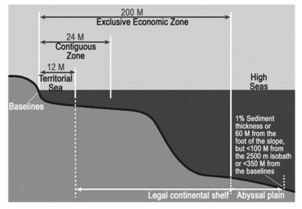
- Continuous violation of EEZ rights of littoral countries of South China Sea by China, and recent Freedom of Navigation operation conducted by US in India's EEZ near the Lakshadweep Island has raised concerns about the efficacy of the UN convention of Law of seas in the resolution of maritime disputes. - WHAT UNCLOS DOES - Reducing Conflicts: - UNCLOS is almost universally lauded for laying down laws and rules whose wide acceptance it is believed has greatly reduced the number, frequency and potential for inter-state conflicts that would otherwise have taken place. There are now 167 member countries plus the European Union. - Territorial Seas: - 12-mile zone was legally sanctioned as the 'territorial seas' belonging to a specific coastal state but within which "innocent passage" of other ships including warships is allowed. - Exclusive Economic Zones: - Easily the single-most important new development ushered in by UNCLOS was the creation and legal sanctification of Exclusive Economic Zones (EEZs) of 200 nautical miles over which states have sovereign rights to explore and exploit in the seas, the seabed and subsoil. - High Seas: - Area beyond EEZs are demarcated as "high seas" and said to be "common heritage of humankind." Here, the stipulated International Seabed Authority (ISA) finally came into existence in 1994 to regulate, organize and control through licences and contracts with companies and governments, all mining explorations to be followed later by actual operations in the international seabed. - Transit Passage: - Key narrow straits crucial for shortening maritime routes have been given international status for "transit passage" but otherwise local coastal states have sovereign rights over them. - Dispute Settlement: - Established a dispute-settlement mechanism for member countries. - ISSUES IN THE FUNCTIONING OF THE UNCLOS - US Non-Membership: - US is not a member of the UNCLOS and has been conducting Freedom of Navigation Operations (FONOP) in the EEZ of India. - China's Claims: - China asserts that whole South China Sea falls into its EEZ, ignoring the EEZ rights of the littoral countries. - Arctic Claims: - Climate change is opening the Arctic Sea. The littoral states of Arctic have started claiming their rights on what was the "common heritage of humankind". - Prior Consent Ignored: - The requirement of prior consent under the UNCLOS for the passage of foreign warships has been ignored by many nations. Example: US FONOP. - Lack of Enforcement: - There is no mechanism to enforce the decisions of the International tribunal for law of sea. - China's Nine-Dash Line: - China claims everything within "nine-dash line," stretching from Taiwan to Malaysia – a vaguely defined boundary based on old maps. In 2016, international tribunal at The Hague ruled there was no legal basis for such a claim. China rejected the decision, and other countries have continued to complain about Chinese vessels in their waters. - 21. WORLD BANK (FRAMING THE NEW INTERNATIONAL ECONOMIC ORDER) - Union Finance Minister Nirmala Sitharaman attended the Development Committee Meeting of the World Bank-IMF in Washington DC. The Finance Minister stressed that the World Bank should continue to work for its vision of 'A World Free of Poverty' and 'ending extreme poverty' and promoting shared prosperity in a manner that is inclusive, resilient and sustainable. She also suggested that global public goods should also be brought into focus as the third goal. - The World Bank primarily provides loans to developing countries for capital programmes and aims to reduce poverty. However despite with the objectives with which World bank was established along with IMF (collectively called as Bretton Wood Twins), the bank has been marred by several challenges. - ISSUES THAT WORLD BANK CURRENTLY FACES - Low Representation of Global South: - One of the strongest criticisms of the institution has been about the way they are governed. World Bank represents 186 countries, each is run by just a small number of economically powerful countries. These countries choose the leadership and senior management, and so their interests dominate, despite the fact that the main borrowers from the World Bank are developing countries. Further, another criticism relates to political power imbalances in governance structures where, as a result of voting shares being based principally on the size and 'openness' of countries' economies, poorer countries (the major loan takers) are structurally underrepresented in decision-making processes. - Undermining Democratic Ownership: - The issue of political power imbalances is exacerbated by another long-standing critique of the Bank, i.e., that the economic policy conditions it promotes – often attached or 'recommended' as part of loans, projects, technical assistance, or financial surveillance – undermine the sovereignty of borrower nations, limiting their ability to make policy decisions and eroding their ownership of national development strategies. - Weak Ability to Learn: - The World Bank's Independent Evaluation Group (IEG) was created in 2006, integrating several individual accountability mechanisms, and is charged with evaluating the activities of the entire World Bank Group and determining what works, what doesn't and why. However, the Bank has been criticised for failing to implement the recommendations of the IEG. - Human Rights: - Another stream of longstanding critiques has focused on the content of the policies, programmes and projects that the bank promote and enforce and how they have undermined a broad spectrum of human rights, with the Bank even being labelled a "human rights-free zone". Most typically, these are fiscal consolidation measures (or austerity), and include reducing the public wage bill, introducing or increasing VAT and other indirect regressive taxes in particular, labour flexibilization, rationalising (cutting) and privatising social services, and targeting social protections and subsidies, while maintaining low levels of inflation, corporate taxation rates and trade tariffs. World Bank was also silent when its developing-country clients' access to life-saving medications was being restricted. Developing countries were forced to sign the onerous Trade-Related Aspects of Intellectual Property Rights agreement at the World Trade Organization. For example, AIDS crisis was ravaging Sub-Saharan Africa and also under patent regime sanctions were imposed on several developing countries, from Chile to India, accused of failing to strengthen patent protections sufficiently. - Environment: - The approach to development and economic policy, as well as their financing decisions, have generated long-standing and ever-more pressing criticisms related to the protection of the environment and staving off climate change. The growth-based approach to poverty reduction that the World Bank promotes has immense environmental consequences, as is evidenced by the deepening climate crisis. Further, another major concern is the planned mega corridor in developing regions are predicated on building a new generation of carbon-intensive infrastructure. - REFORMS NEEDED TO ENSURE EFFECTIVENESS OF THE WORLD BANK - Address Poverty Uptick: - The World Bank should devote as much as possible of its lending and advisory might to social protection and tackling the immediate shortfalls in food, energy, and raw materials that are driving higher inflation and exacerbating poverty. At the same time, it should work to support longer-term recovery and resilience, including through data, infrastructure, governance, and economic reform. - Climate Emergency: - Turning the tide on climate-related and other thematic issues: - The reform should also make the institution fit to respond to global climate emergency, both on facing the impacts of climate change and on decarbonising the global economy. - Coordination: - Fostering coordination within and outside the Bank: - The Bank puts forward its ambition to "strengthen the One WB approach", while developing "new regional approaches", and also "broadening its country-based model". These suggestions interestingly point to the need for the Bank to look for more coherence in its own institutional set up while also strengthening its impact at regional and country level. - Independent Organisations: - Use independent organisations to help governments in a more flexible way: - Many governments need help to define and structure the kind of support they need and to engage and negotiate with the international community. This is often better done by independent organisations who have the experience and the flexibility to play this role. - Specialist Collaboration: - Harness strengths from different specialist areas: - The Bank needs to demonstrate it can connect and harness different professional groups in addressing problems, identifying bottlenecks and advancing innovative solutions. Its vertical professional strength now needs to be enhanced with horizontal engagement. - Embrace Unpredictability: - As the fragility in the world is unpredictable (ex. Covid or War), the Bank needs to ensure that its contracts generate this flexibility and responsiveness, and that its monitoring, reporting and evaluation frameworks support – and do not penalise – adaptive working. - Chapter 6 - INDIAN DIASPORA - 0. REPORT ON DIASPORA - Parliamentary Standing Committee on External Affairs released a report on India’s Diaspora. - Indian diaspora refers to people whose origins can be traced to India or who are Indian citizens living abroad. This includes Non-Resident Indians (NRIs), Persons of Indian Origin (PIO), and Overseas Citizens of India (OCI). (IO category was merged with OCI category). - INDIAN DIASPORA - Diaspora is a generic term to describe people who migrated from territories that are currently within India and their descendants. Official classification of Indian Diaspora includes Overseas Citizens of India and Non-Resident Indians. - India’s has a large diaspora with over 31 million including 13 million NRIs and 18 million OCIs. - Indian Diaspora has broadly been classified into Old and New Diaspora. - Old Diaspora: - They left India during colonial rule as indentured labourers. They are found in countries and regions like Caribbean Islands, Mauritius, Seychelles, Fiji etc. Due to their long past association with India and the duress under which they left the country, they have weak familial relations with India. However, cultural ties survive. There are large number of twice migrants from the old diasporas (both free and forced migrants) to the Europe and USA. - New Diaspora: - They migrated from India after the post-Independence period. There are two broad classes among the New Diaspora - (i) Less educated, working-class people who migrated in search of manual and less wages paying jobs. Vast majority of such people migrated to Middle Eastern countries, South-East Asia etc. They have gone to these countries mostly for work and come back to India. - (ii) Highly educated, skilled working professionals who have migrated to developed countries such as USA, UK, Canada, Australia and EU etc. They have gone to these countries have taken up leadership roles in various large corporates. - Ministry of External Affairs is nodal ministry for Diaspora issues. - SIGNIFICANCE OF DIASPORA - ECONOMIC CONTRIBUTION - Diasporas influence national economies in several ways, including remittances to family members in their home country, foreign direct investment, entrepreneurial endeavours, facilitation of trade and transfer of knowledge/skills. They can serve as an important economic resource, especially in developing nations. - Remittances Transfers (monetary or in-kind) from a migrant to his or her home country. They are perhaps the most visible economic implication of a diaspora. Most remittances are sent to low & middle-income countries. - Remittances can function as a sort of private form of social protection that can supplement or substitute public social protection spending. Increased remittances tend to reduce public social protection expenditure. - Main contribution of remittances is to households that receive them, but significant spillover benefits to wider community have been observed through increased consumption and community development projects. - Brain gain occurs when migrants learn skills & obtain education abroad and then transfer their knowledge and skills back to their homeland, either through their networks within the country or through return migration. - Through knowledge transfer, sending countries can gain from skilled emigration. As skilled migrants accumulate intellectual, social, and economic capital in the host country, this can be strategically utilized by home country to mitigate brain drain effect. - Indian IT sector is an example of a brain gain effect. The diaspora was instrumental in bringing skills, human and social capital, and networks needed to grow the sector in India. - International Trade, Investment, and Entrepreneur-ship: - Size of a diaspora population has a significant and positive correlation with international trade between host nation and diasporic homeland. Findings from India show that the Indian diaspora has been instrumental in promoting trade linkages between India and other nations in the Asia Pacific region. - FDI from diaspora is strongly influenced by diaspora’s affinity for their culture in the homeland. - POLITICAL EFFECT - Policy can often shape a diaspora; likewise, diaspora groups can have a significant effect on policy. Diasporas often mobilize networks and resources to support a certain cause in either their homeland or their host countries. - Evolution and growth of diasporas have been congruent with increasing globalization that has been driven in significant part by policy changes. - Preferential trade agreements stimulate significantly increased migration and strong diaspora communities facilitating increased international trade agreements. - Indian diaspora today occupies top position in foreign countries for ex. KAMALA HARRIS in USA or the recent election of RISHI SUNAK as the PM of UK. - These are indicative of the growing economic influence of Indian Diaspora over the world and a testimony of the same in the past can be given by signing of India-USA nuclear deal. - FOREIGN POLICY - Institutionalisation of the Diaspora-diplomacy in recent times is indicative of prominence of the role played by Diaspora in the foreign policy formulation and acting as an instrument of Soft-power and thus meeting the ends or limitations of the hard-power. - For ex. Senate India Caucus i.e., is a bipartisan coalition that promotes relations between USA and India. - ISSUES WITH DIASPORA POLICY - Parliamentary Standing Committee highlighted the following Issues in India’s Diaspora Policy - Policy for diaspora: - No clear policy on diaspora is in place, despite their socioeconomic contributions to the development of the country. - Database on Indian diaspora: - Ministry of External Affairs does not have updated data on Indian diaspora, as registration with Indian Embassies is voluntary. In the absence of such a database, welfare schemes may not be implemented properly. - Emigration Management Bill: - Emigration Management Bill, 2022 has been under consultation and vetting for a long time. It seeks to establish an emigration framework, liberalise clearances, and strengthen welfare for overseas migrants. - Multiple portals for grievance redressal: - Several portals such as e-Migrate, and Centralised Public Grievance Redressal and Monitoring System (CPGRAMS) are in place to resolve the grievances of Indian nationals abroad. Multiple portals may delay grievance resolution due to duplication of work. Resolution of grievances in most cases may require a connection at the local level. - Rehabilitation of workers: - During the COVID-19 pandemic, many workers including Gulf returnees lost their jobs. As the pandemic eased, few workers have returned to their places of employment abroad. Thus, a rehabilitation scheme to ensure livelihood security for workers who lost their jobs or were unable to return to their place of employment is required. - Skilling of potential migrant workers: - International labour market has now become demand-driven, compared to the earlier supply-driven system. With new labour markets emerging in east-Asian countries such as Japan, Korea, and Taiwan, the skilling of potential migrant workers is a challenge. - Students in Ukraine and China: - Several Indian medical students studying in Ukraine and China were unable to resume their courses physically or complete their internships in India due to the COVID-19 outbreak. - NRI Marriages: - Increasing cases of women being deserted in NRI marriages. Registration of Marriage of Non-Resident Indian Bill, 2019 has not been enacted yet. - One-Stop Centres: - Ministry of External Affairs had decided to establish overseas centres to help distressed NRI women. However, it is not yet in place. - Rising conflicts and instability due to the Shia-Sunni conflicts and radical Islamism. Regressive and medieval policies like employers seizing the travel documents upon arrival known as "Kafala" labour system are exploitative. Discriminative practices owing to a racist, colonial mindset persists even the Cultural integration becomes difficult. - WAY FORWARD - Ministry of External Affairs should draft a clear policy document on the diaspora which would serve as a guiding principle for engagement with the community. - Indian Embassies should encourage the diaspora to register themselves, which would allow the Ministry to effectively implement welfare schemes. - Parliament should enact Emigration Management Bill, at the earliest. - Ministry of External Affairs should complete its consultation and enact a law for the benefit of NRI women. - CPGRAMS portal is the quickest way to interact with state governments or the district police, but it is not popular overseas. It recommended that the Ministry of External Affairs should publicise the portal so it can be used to resolve grievances effectively. - Ministry of External Affairs should draft a comprehensive rehabilitation scheme in coordination with the concerned Ministries, Departments, state governments, and stakeholders. - Need to improve the quality of domestic skilling and standardising curricula across the country to ensure that migrant workers can go abroad and secure employment with better wages. - Providing skills that match the destination country’s requirements is an important challenge, especially in the post-COVID era. - Ministry of External Affairs should ensure that Indian private medical institutions enrol returnee students from Ukraine by granting a one-time exemption. Indian students enrolled in medical colleges in China, should be allowed to complete the remaining part of their internship in India. - One-Stop centre scheme be launched without delay. - Government should consider setting up Special Economic Zones, exclusively for projects to be set up by NRIs/PIOs. - Government should consider issuing special infrastructure bonds for attracting NRI/PIO investments like the Israel Bonds. - Negotiating Standard Labour Export Agreements with the host countries. Monitoring and supervision of our overseas workers by our Missions. Compulsory insurance schemes cover the risks faced by our overseas workers. - 1. INDIANS IN ASIA| Country | Indian Population | % of Total Population |
|---|---|---|
| Nepal | 4,000,000 | 14.7% |
| Saudi Arabia | 4,100,000 | 13.22% |
| Malaysia | 2,108,600 | 7.4% |
| United Arab Emirates | 3,500,000 | 27.1% |
| Myanmar | 1,100,000 | 2% |
| Sri Lanka | 850,000 | 4.4% |
| Kuwait | 700,000 | 17.5% |
| Oman | 950,000 | 18% |
| Singapore | 250,300 | 7.4% |
| Bahrain | 150,000 | 19% |
| Qatar | 650,000 | 30.5% |
| Country | Indian Population | % of Total Population |
|---|---|---|
| Trinidad and Tobago | 470,000 | 35.4% |
| Guyana | Not specified | 51% |
| Suriname | Not specified | 35% |
| Jamaica | 93,000 | 3.4% |
| Guadeloupe (France) | 55,000 | 13.6% |
| Cuba | 34,000 | 0.3% |
| Saint Vincent and the Grenadines | 21,500 | 19.7% |
| Grenada | 12,000 | 11.7% |
| Martinique (France) | 43,600 | 10% |
| Saint Lucia | 4,700 | 2.8% |
| Puerto Rico (United) | 4,500 | 0.1% |
| No. | Indian CEOs | Companies |
|---|---|---|
| 1 | Shantanu Narayen | Adobe |
| 2 | Sundar Pichai | Alphabet - Google |
| 3 | Satya Nadella | Microsoft |
| 4 | Parag Agarwal | |
| 5 | Anjali Sud | Vimeo |
| Country | Indian Population | % of Total Population |
|---|---|---|
| United States | 450,000 | 0.13% |
| Canada | 1,689,055 | 4.51% |
| Country | Indian Population | % of Total Population |
|---|---|---|
| South Africa | 1,300,000 | 2.7% |
| Mauritius | 994,500 | 62% |
| Reunion (France) | 220,000 | 24% |
| Kenya | 100,000 | 0.3% |
| Tanzania | 90,000 | 0.2% |
| Uganda | 90,000 | 0.3% |
| Madagascar | 28,000 | 0.15% |
| Nigeria | 25,000 | 0.02% |
| Mozambique | 21,000 | 0.1% |
| Libya | 20,000 | 0.34% |
| Zimbabwe | 16,000 | 0.1% |
| Country | Indian Population | % of Total Population |
|---|---|---|
| United Kingdom | 1,451,862 | 2.3% |
| Italy | 150,000 | 0.25% |
| Netherlands | 123,000 | 0.7% |
| Germany | 161,000 | 0.2% |
| Republic of Ireland | 91,520 | 1.9% |
| Portugal | 70,000 | 0.7% |
| France | 65,000 | 0.1% |
| Russia | 40,000 | 0.01% |
| Spain | 29,000 | 0.07% |
| Norway | 14,698 | 0.03% |
| Switzerland | 13,500 | 0.02% |